Welcome
Monte Carlo simulations are a computational technique for investigating how well something works, or for investigating what might happen in a given circumstance. When we write a simulation, we are able to control how data are generated, which means we can know what the “right answer” is. Then, by repeatedly generating data and then applying some statistical method that data, we can assess how well a statistical method works in practice.
Monte Carlo simulations are an essential tool of inquiry for quantitative methodologists and students of statistics, useful both for small-scale or informal investigations and for formal methodological research. Despite the ubiquity of simulation work, most quantitative researchers get little formal training in the design and implementation of Monte Carlo simulations. As a result, the simulation studies presented in academic journal articles are highly variable in terms of their high-level logic, scope, programming, and presentation. Although there has long been discussion of simulation design and implementation among statisticians and methodologists, the available guidance is scattered across many different disciplines, and much of it is focused on mechanics and computing tools, rather than on principles.
In this monograph, we aim to provide an introduction to the logic and mechanics of designing simulation studies, using the R programming language. Our focus is on simulation studies for formal research purposes (i.e., as might appear in a journal article or dissertation) and for informing the design of empirical studies (e.g., power analysis). That being said, the ideas of simulation are used in many different contexts and for many different problems, and we believe the overall concepts illustrated by these “conventional” simulations readily carry over into all sorts of other types of use, even statistical inference! Our focus is on the best practices of simulation design and how to use simulation to be a more informed and effective quantitative analyst. In particular, we try to provide a guide to designing simulation studies to answer questions about statistical methodology.
Mainly, this book gives practical tools (i.e., lots of code to simply take and repurpose) along with some thoughts and guidance for writing simulations. We hope you find it to be a useful handbook to help you with your own projects, whatever they happen to be!
License
This book is licensed to you under Creative Commons Attribution-NonCommercial-NoDerivatives 4.0 International License.
The code samples in this book are licensed under Creative Commons CC0 1.0 Universal (CC0 1.0), i.e. public domain.
Acknowledgements
The material in this book was initially developed through courses that we offered at the University of Texas at Austin (James) and Harvard University (Luke) as well as from a series of workshops that we offered through the Society for Research on Educational Effectiveness in June of 2021. We are grateful for feedback, questions, and corrections we have received from many students who participated in these courses. Some parts of this book are based on memos or other writings generated for various purposes, some of which were written by others. This is been attributed throughout.
1 Introduction
Monte Carlo simulations are a tool for studying the behavior of random processes, such as the behavior of a statistical estimation procedure when applied to a sample of data. Within quantitatively oriented fields, researchers developing new statistical methods or evaluating the use of existing methods nearly always use Monte Carlo simulations as part of their research process. In the context of methodological development, researchers use simulations in a way analogous to how a chef would use their test kitchen to develop new recipes before putting them on the menu, how a manufacturer would use a materials testing laboratory to evaluate the safety and durability of a new consumer good before bringing it to market, or how an astronaut would prepare for a spacewalk by practicing the process in an underwater mock-up. Simulation studies provide a clean and controlled environment for testing out data analysis approaches before putting them to use with real empirical data.
More broadly, Monte Carlo studies are an essential tool in many different fields of science—climate science, engineering, and education research are three examples—and are used for a variety of different purposes. Simulations are used to model complex stochastic processes such as weather patterns (Jones, Maillardet, and Robinson 2012; Robert and Casella 2010); to generate parameter estimates from complex statistical models, as in Markov Chain Monte Carlo sampling (Gelman et al. 2013); and even to estimate uncertainty in statistical summaries, as in bootstrapping (Davison and Hinkley 1997). In this book, we shall focus on using simulation for the development and validation of methods for data analysis, which are everyday concerns within the fields of statistics and quantitative methodology. However, we also believe that many of the general principles of simulation design and execution that we will discuss are broadly applicable to these other purposes, and we note connections as they occur.
At a very high level, Monte Carlo simulation provides a method for understanding the performance of a statistical model or data analysis method under conditions where the truth is known and can be controlled. The basic approach for doing so is as follows:
- Create artificial data using random number generators based on a specific statistical model, or more generally, a Data-Generating Process (DGP).
- Apply one or more data-analysis procedures to the artificial data. (These procedures might be something as simple as calculating a difference in sample means or fitting a regression model, or it might be an involved, multi-step procedure involving cleansing the data of apparent outliers, imputing missing values, applying a machine-learning algorithm, and carrying out further calculations on the predictions of the algorithm.)
- Repeat Steps 1 and 2 many times.
- Summarize the results across these repetitions in order to understand the general trends or patterns in how the method works.
Simulation is useful because one can control the data-generating process and therefore fully know the truth—something that is almost always uncertain when analyzing real, empirical data. Having full control of the data-generating process makes it possible to assess how well a procedure works by comparing the estimates produced by the data analysis procedure against this known truth. For instance, we can see if estimates from a statistical procedure are consistently too high or too low (i.e., whether an estimator is systematically biased). We can also compare multiple data analysis procedures by assessing the degree of error in each set of results to determine which procedure is generally more accurate when applied to the same collection of artificial datasets.
This basic process of simulation can be used to investigate an array of different questions that arise in statistics and quantitative methodology. To seed the field, we now give a high-level overview of some of the major use cases. We then discuss some of the major limitations and common pitfalls of simulation studies, which are important to keep in mind as we proceed.
1.1 Some of simulation’s many uses
Monte Carlo simulations allow for rapid exploration of different data analysis procedures and, even more broadly, different approaches to designing studies and collecting measurements. Simulations are especially useful because they provide a means to answer questions that are difficult or impossible to answer by other means. Many statistical models and estimation methods can be analyzed mathematically, but only by using asymptotic approximations that describe how the methods work as sample size increases towards infinity. In contrast, simulation methods provide answers for specific, finite sample sizes. Thus, they allow researchers to study models and estimation methods where relevant mathematical formulas are not available, not easily applied, or not sufficiently accurate.
Circumstances where simulations are helpful—or even essential—occur in a range of different situations within quantitative research. To set the stage for our subsequent presentation, consider the following areas where one might find need of simulation.
1.1.1 Comparing statistical approaches
One of the more common uses of Monte Carlo simulation is to compare alternative statistical approaches to analyzing the same type of data. In the academic literature on statistical methodology, authors frequently report simulation studies comparing a newly proposed method against more traditional approaches, to make a case for the utility of their method. A classic example of such work is Brown and Forsythe (1974), who compared four different procedures for conducting a hypothesis test for equality of means in several populations (i.e., one-way ANOVA) when the population variances are not equal. A subsequent study by Mehrotra (1997) built on Brown and Forsythe’s work, proposing a more refined method and using simulations to demonstrate that it is superior to the existing methods. We explore the Brown and Forsythe (1974) study in the case study of Chapter @ref(case-ANOVA).
Comparative simulation can also have a practical application: In many situations, more than one data analysis approach is possible for addressing a given research question (or estimating a specified target parameter). Simulations comparing multiple approaches can be quite informative and can help to guide the design of an analytic plan (such as plans included in a pre-registered study protocol). For instance, researchers designing a multi-site randomized experiment might wonder whether they should use an analytic model that allows for variation in the site-specific impact estimates (Miratrix, Weiss, and Henderson 2021) or a simpler model that treats the impact as homogeneous across sites. What are the practical benefits and costs of using the more complex model? In the ideal case, simulations can identify best practices for how to approach analysis of a certain type of data and can surface trade-offs between competing approaches that occur in practice.
1.1.2 Assessing performance of complex pipelines
In practice, statistical methods are often used as part of a multi-step workflow. For instance, in a regression model, one might first use a statistical test for heteroskedasticity (e.g., the White test or the Breusch-Pagan test) and then determine whether to use conventional or heteroskedasticity-robust standard errors depending on the result of the test. This combination of an initial diagnostic test followed by contingent use of different statistical procedures is quite difficult to analyze mathematically, but it is straight-forward to simulate (see, for example, Long and Ervin 2000). In particular, simulations are a straight-foward way to assess whether a proposed workflow is valid—that is, whether the conclusions from a pipeline are correct at a given level of certainty.
Beyond just evaluating the performance characteristics of a workflow, simulating a multi-step workflow can actually be used as a technique for conducting statistical inference with real data. Data analysis approaches such as randomization inference and bootstrapping involve repeatedly simulating data and putting it through an analytic pipeline, in order to assess the uncertainty of the original estimate based on real data. In bootstrapping, the variation in a point estimate across replications of the simulation is used as the standard error for the context being simulated; an argument by analogy (the bootstrap analogy) is what connects this to inference on the original data and point estimate. See the first few chapters of Davison and Hinkley (1997) or Efron (2000) for further discussion of bootstrapping, and see Good (2013) or Lehmann et al. (1975) for more on permutation inference.
1.1.3 Assessing performance under misspecification
Many statistical estimation procedures are known to perform well when the assumptions they entail are correct. However, data analysts must also be concerned with the robustness of estimation procedures—that is, their performance when one or more of the assumptions is violated to some degree. For example, in a multilevel model, how important is the assumption that the random effects are normally distributed? What about normality of the individual-level error terms? What about homoskedasticity of the individual-level error terms? Quantitative researchers routinely contend with such questions when analyzing empirical data, and simulation can provide some answers.
Similar concerns arise for researchers considering the trade-offs between methods that make relatively stringent assumptions versus methods that are more flexible or adaptive. When the true data-generating process meets stringent assumptions (e.g., a treatment effect that is constant across the population of participants), what are the potential gain of exploiting such structure in the estimation process? Conversely, what are the costs (in terms of computation time or precision) of using more flexible methods that do not impose strong assumptions? A researcher designing an analytic plan would want to be well-informed of such trade-offs and, ideally, would want to situate their understanding in the context of the empirical phenomena that they study. Simulation allows for such investigation and comparison.
1.1.4 Assessing the finite-sample performance of a statistical approach
Many statistical estimation procedures can be shown (through mathematical analysis) to work well asymptotically—that is, given an infinite amount of data—but their performance for data of a given, finite size is more difficult to quantify. Although mathematical theory can inform us about “asymptopia,” empirical researchers live in a world of finite sample sizes, where it can be difficult to gauge if one’s real data is large enough that the asymptotic approximations apply. For example, this is of particular concern with hierarchical data structures that include only 20 to 40 clusters—a common circumstance in many randomized field trials in education research. Simulation is a tractable approach for assessing the small-sample performance of such estimation methods or for determining minimum required sample sizes for adequate performance.
One example of a simulation investigating questions of finite-sample behavior comes from Long and Ervin (2000), whose evaluated the performance of heteroskedasticity-robust standard errors (HRSE) in linear regression models. Asymptotic analysis indicates that HRSEs work well (in the sense of providing correct assessments of uncertainty) in sufficiently large samples (White (1980)), but what about in realistic contexts where small samples occur? Long and Ervin (2000) use extensive simulations to investigate the properties of different versions of HRSEs for linear regression across a range of sample sizes, demonstrating that the most commonly used form of these estimators often does not work well with sample sizes found in typical social science applications. Via simulation, they provided compelling evidence about a problem without having to wade into a technical (and potentially inaccessible) mathematical analysis of the problem.
1.1.5 Conducting Power Analyses
During the process of proposing, seeking funding for, and planning an empirical research study, researchers need to justify the design of the study, including the size of the sample that they aim to collect. Part of such justifications may involve a power analysis, or an approximation of the probability that the study will show a statistically significant effect, given assumptions about the magnitude of true effects and other aspects of the data-generating process. Researchers may also wish to compare the power of different possible designs in order to inform decisions about how to carry out the proposed study given a set of monetary and temporal constraints.
Many guidelines and tools are available for conducting power analysis for various research designs, including software such as PowerUp! (Dong and Maynard 2013), the Generalizer (Tipton 2013), G*Power (Faul et al. 2009), and PUMP (Hunter, Miratrix, and Porter 2024). These tools use analytic formulas for power, which are often derived using approximations and simplifying assumptions about a planned design. Simulation provides a very general-purpose alternative for power calculations, which can avoid such approximations and simplifications. By repeatedly simulating data based on a hypothetical process and then analyzing data following a specific protocol, one can computationally approximate the power to detect an effect of a specified size.
Using simulation instead of analytic formulas allows for power analyses that are more nuanced and more tailored to the researcher’s circumstance than what can be obtained from available software. For example, simulation can be useful for the following:
When estimating power in multi-site, block- or cluster-randomized trials, the formulas implemented in available software assume that sites are of equal size and that outcome distributions are unrelated to the size of each site. Small deviations from these assumptions are unlikely to change the results, but in practice, researchers may face situations where sites vary quite widely in size or where site-level outcomes are related to site size. Simulation can estimate power in this case.
Available software such as PowerUp! allows investigators to build in assumptions about anticipated rates of attrition in cluster-randomized trials, under the assumption that attrition is completely at random and unrelated to anything. However, researchers might anticipate that, in practice, attrition will be related to baseline characteristics. Simulation can be used to assess how this might affect the power of a planned study.
There are some closed-form expressions for power to test mediational relations (i.e., indirect and direct effects) in a variety of different experimental designs, and these formulas are now available in PowerUp!. However, the formulas involve a large number of parameters (including some where it may be difficult to develop credible assumptions) and they apply only to a specific analytic model for the mediating relationships. Researchers planning a study to investigate mediation might therefore find it useful to generate realistic data structures and conduct power analysis via simulation.
1.1.6 Simulating processess
Yet another common use for Monte Carlo simulation is as a way to emulate a complex process as a means to better understand it or to evaluate the consequences of modifying it. A famous area of process simulation are climate models, where researchers simulate the process of climate change. These physical simulations mimic very complex systems to try and understand how perturbations (e.g., more carbon release) will impact downstream trends.
Another example of process simulation arises in education research. Some large school districts such as New York City have centralized lotteries for school assignment, which entail having families rank schools by order of preference. The central office then assigns students to schools via a lottery procedure where each student gets a lottery number that breaks ties when there are too many students desiring to go to certain schools. Students’ school assignments are therefore based in part on random chance, but the the process is quite complex: each student has some probability of assignment to each school on their list, but the probabilities depend on their choices and the choices of other students.
The school lottery process creates a natural experiment, based on which researchers can estimate the causal impact of being assigned to one school vs. another. A defensible analysis of the process requires knowing the probabilities of school assignment. Abdulkadiroğlu et al. (2017) conducted such an evaluation using the school lottery process in New York City. They calculated school assignment probabilities via simulation, by running the school lottery over and over, changing only students’ lottery numbers, and recording students’ school assignments in each repetition of the process. Simulating the lottery process a large number of times provided precise estimates of each students’ assignment probabilities, based on which Abdulkadiroğlu et al. (2017) were able to estimate causal impacts of school assignment.
For another example, one that possibly illustrates the perils of simulation as taking us away from results that pass face validity, Staiger and Rockoff (2010) simulated the process of firing teachers depending on their estimated value-added scores. Based on their simulations, which model firing different proportions of teachers, they suggest that firing substantial portions of the teacher workforce annually would substantially improve student test scores. Their work offers a clear illustration of how simulations can be used to examine the potential consequences of various policy decisions, assuming the underlying assumptions hold true. This example also brings home a core concern of simulation: we only learn about the world we are simulating, and the relevance of simulation evidence to the real world is by no means guaranteed.
1.2 The perils of simulation as evidence
Simulation has the potential to be a powerful tool for investigating quantitative methods. However, evidence from simulation studies is also fundamentally limited in certain ways, and thus very susceptible to critique. The core advantage of simulation studies is that they allow for evaluation of data analysis methods under specific and exact conditions, avoiding the need for approximation. The core limitation of simulations stems from this same property: they provide information about the performance of data analysis methods under specified conditions, but provide no guarantee that patterns of performance hold in general. One can partially address questions of generalization by examining a wide range of conditions, looking to see whether a pattern holds consistently or changes depending on features of the data-generating process. Even this strategy has limitations, though. Except for very simple processes, we can seldom consider every possible set of conditions.
As we will see in later chapters, the design of a simulation study typically entails making choices over very large spaces of possibility. This flexibility leaves lots of room for discretion and judgement, and even for personal or professional biases (Boulesteix et al. 2020). Due to this flexibility, simulation findings are held in great skepticism by many. The following motto summarizes the skeptic’s concern:
Simulations are doomed to succeed.
As this motto captures, simulations are alluring: once a simulation framework is set up, it is easy to tweak and adjust. It is natural for us all to continue to do this until the simulation works “as it should.” If our goal is to show something that we already believe is correct (e.g., that our fancy new estimation procedure is better than existing methods), we could probably find a way to align our simulation with our intuition.1
Critiques of simulation studies often revolve around the realism, relevance, or generality of the data generating process. Are the simulated data realistic, in the sense that they follow similar patterns to what one would see in real empirical data? Are the explored aspects of the simulation relevant to what we would expect to find in practice? Was the simulation systematic in exploring a wide variety of scenarios, so that general conclusions are warranted?
We see at least three principles for addressing such questions in one’s own work. Perhaps most fundamental is to be transparent in one’s methods and reasoning: explicitly state what was done, and provide code so that others can reproduce one’s results or tweak them to test variations of the data-generating process or alternative analysis strategies. Another important component of a robust argument is to systematically vary the conditions under examination. This is facilitated by writing code in a way to make it easy to simulate across a range of different data-generating scenarios. Once that is in place, one can systematically explore myriad scenarios and report all of the results. An aspiration of the simulation architect should be to explore the boundary conditions that separate where preferred methods work and where they break or fail. Finally, one can draw on relevant statistical theory to support the design of a simulation and interpretation of its results. Mathematical analysis might indicate that some features of a data-generating process will have a strong influence on the performance of a method, while other features will not matter at all when sample sizes are sufficiently large. Well designed simulations will examine conditions that are motivated by or complement what is known based on existing statistical theory.
In addition to these principles, methodologists have proposed broader changes in practice to counter the potential for bias in methodological simulation studies. Morris, White, and Crowther (2019) introduced a formal framework, called ADEMP, to guide the reporting of methodological simulations. Boulesteix, Lauer, and Eugster (2013) argued for greater use of neutral comparison studies, in which the performance of alternative statistical methods are compared under a range of relevant conditions by methodological researchers who do not have vested interests in any specific method (see also Boulesteix, Wilson, and Hapfelmeier 2017). Further, Siepe et al. (2024) argue for more routine pre-registration of methodological simulations to bring greater transparency and reduce the possibility of bias arising from flexibility in their design.
1.3 Simulating to learn
Most of the examples of Monte Carlo simulation that we have mentioned thus far are drawn from formal methodological research, published in methodologically focused research journals. If you do not identify as a methodologist, you may be wondering whether there is any benefit to learning how to do simulations—what’s the point, if you are never going to conduct methodological research studies or use simulation to aid in planning an empirical study? However, we believe that simulation is an incredibly useful tool—and well worth learning, even outside the context of formal methodological research—for at least two reasons.
First, in order to do any sort of quantitative data analysis, you will need to make decisions about what methods to use. Across fields, existing guidance about data analysis practice is almost certainly informed by simulation research of some form, whether well-designed and thorough or haphazard and poorly reasoned. Consequently, having a high-level understanding of the logic and limitations of simulation will help you to be a critical consumer of methods research, even if you do not intend to conduct methods research of your own.
Second, we believe conducting simulations deepens one’s understanding of the logic of statistical modeling and statistical inference. Learning a new statistical model (such as generalized linear mixed models) or analytic technique (such as multiple imputation by chained equations) requires taking in a lot of detailed information, from the assumptions of the model to the interpretation of parameter estimates to the best practices for estimation and what to do if some part of the process goes off. To thoroughly digest all these details, we have found it invaluable to simulate data based on the model under consideration. This usually requires translating mathematical notation into computer code, an exercise which makes the components of the model more tangible than just a jumble of Greek letters. The simulated data is then available for inspection, summarizing, graphing, and further calculation, all of which can aid comprehension and interpretation. Moreover, the process of simulating yields a dataset which can then be used to practice implementing the analysis procedure and interpreting the results. We have found that building a habit of simulating is a highly effective way to learn new models and methods, worthwhile even if one has no intention of carrying out methodological research. We might even go so far as to argue that whatever you might think, you don’t really understand a statistical model until you’ve done a simulation of it.
1.4 Why R?
This book aims not only to introduce the conceptual principles of Monte Carlo simulation, but also to provide a practical guide to actually conducting simulation studies (whether for personal learning purposes or for formal methodological research). And conducting simulations requires writing computer code (sometimes, lots of code!). The computational principles and practices that we will describe are very general, not specific to any particular programming language, but for purposes of demonstrating, presenting examples, and practicing the process of developing a simulation, it helps to be specific. To that end, we will be using R, a popular programming language that is widely used among statisticians, quantitative methodologists, and data scientists. Our presentation will assume that readers are comfortable with writing R scripts to carry out tasks such as cleaning variables, summarizing data, creating data-based graphics, and running regression models (or more generally, estimating statistical models).
We have chosen to focus on R (rather than some other programming language) because both of us are intimately familiar with R and use it extensively in our day-to-day work. Simply put, it is much easier to write in your native language than in one in which you are less fluent. But beyond our own habits and preferences, there are several more principled reasons for using R.
R is free and open source software, which can be run under many different operating systems (Windows, Mac, Linux, etc.). This is advantageous not only because of the cost, but also because it means that anyone with a computer—anywhere in the world—can access the software and could, if they wanted, re-run our provided code for themselves. This makes R a good choice for practicing transparent and open science processes.
There is a very large, active, and diverse community of people who use, teach, and develop R.
It is used widely for applied data analysis and statistical work in such fields as education, psychology, economics, epidemiology, public health, and political science,
and is widely taught in quantitative methods and applied statistics courses.
Integral to the appeal of R is that it includes tens of thousands of contributed packages, which extend the core functionality of the language in myriad ways.
New statistical techniques are often quickly available in R, or can be accessed through R interfaces.
Increasingly, R can also be used to interface with other languages and platforms, such as running Python code via the reticulate package, running Stan programs for Bayesian modeling via RStan, or calling the h2o machine learning library using the h2o package (Fryda et al. 2014).
The huge variety of statistical tools available in R makes it a fascinating place to learn and practice.
R does have a persistent reputation as being a challenging and difficult language to use. This reputation might be partly attributable to its early roots, having been developed by highly technical statisticians who did not necessarily prioritize accessibility, legibility of code, or ease of use. However, as the R community has grown, the availability of introductory documentation and learning materials has improved drastically, so that it is now much easier to access pedagogical materials and find help.
R’s reputation also probably partly stems from being a decentralized, open source project with many, many contributors. Contributed R packages vary hugely in quality and depth of development; there are some amazingly powerful tools available but also much that is half-baked, poorly executed, or flat out wrong. Because there is no central oversight or quality control, the onus is on the user to critically evaluate the packages that they use. For newer users especially, we recommend focusing on more established and widely used packages, seeking input and feedback from more knowledgeable users, and taking time to validate functionality against other packages or software when possible.
A final contributor to R’s intimidating reputation might be its extreme flexibility. As both a statistical analysis package and a fully functional programming language, R can do many things that other software packages cannot, but this also means that there are often many different ways to accomplish the same task. In light of this situation, it is good to keep in mind that knowing a single way to do something is usually adequate—there is no need to learn six different words for hello, when one is enough to start a conversation.
On balance, we think that the many strengths of R make it worthwhile to learn and continue exploring. For simulation, in particular, R’s facility to easily write functions (bundles of commands that you can easily call in different manners), to work with multiple datasets in play at the same time, and to leverage the vast array of other people’s work all make it a very attractive language.
1.5 Organization of the text
We think of simulation studies as falling on a spectrum of formality. On the least formal end, we may use simulations to learn a statistical model, investigating questions purely to satisfy our own curiosity. On the most formal end, we may conduct carefully designed, pre-registered simulations that compare the performance of competing statistical methods across an array of data-generating conditions designed to inform practice in a particular research area.
Our central goal is to help you learn to work anywhere along this spectrum, from the most casual to the most principled. To support that goal, the book is designed with a spiral structure, where we first present simpler and less formal examples that illustrate high-level principles, then revisit the component pieces, dissecting and exploring them in greater depth. We defer discussion of concepts that are relevant only to more formal use-cases (such as the ADEMP framework of Morris, White, and Crowther (2019)) until later chapters. We have also included many case studies throughout the book; these are designed to make the topics under discussion tangible, and are also designed to provide chunks of code that you emulate or even directly copy and use for your own purposes.
We divided the book into several parts. In Part I (which you are reading now), we lay out our case for learning simulation, introduces some guidance on programming, and presents an initial, very simple simulation to set the stage for later discussion of design principles. Part II lays out the core components (generating artificial data, applying analytic procedures, executing the simulations, and analyzing the simulation results) for simulating a single scenario. It then presents some more involved case studies that illustrate the principles of modular, tidy simulation design. Part III moves to multifactor simulations, meaning simulations that look at more than one scenario or context. Multifactor simulation is central to the design of more formal simulation studies because it is only by evaluating or comparing estimation procedures across multiple scenarios that we can begin to understand their general properties.
The book closes with two final parts. Part IV covers some technical challenges that are commonly encountered when programming simulations, including reproducibility, parallel computing, and error handling. Part V covers three extensions to specialized forms of simulation: simulating to calculate power, simulating within a potential outcomes framework for causal inference, and the parametric bootstrap. The specialized applications underscore how simulation can be used to answer a wide variety of questions across a range of contexts, thus connecting back to the broader purposes discussed above. The book also includes appendices with some further guidance on writing R code and pointers to further resources.
2 Programming Preliminaries
In this chapter, we introduce some essential programming concepts that may be less familiar to readers, but which are central to how we approach writing code for simulation studies. We also explain some of the rationale and reasoning behind how we present example code throughout the book.
2.1 Welcome to the tidyverse
Layered on top of R are a collection of contributed packages that make data wrangling and management much, much easier.
This collection is called tidyverse and it includes popular packages such as dplyr, tidyr, and ggplot2.
We use methods from the “tidyverse” throughout the book because it facilitates writing clean, concise code.
In particular, we make heavy use of the dplyr package for group-wise data manipulation, the purrr package for functional programming, and the ggplot2 package for statistical graphics.
The 1st edition or 2nd edition of the free online textbook R for Data Science provide an excellent, thorough introduction to these packages, along with much more background on the tidyverse.
We will cite portions of this text throughout the book.
Loading the tidyverse packages is straightforward:
(The second line is to turn off some of the persistent warnings generated by the dplyr function summarize().)
These lines of code appear in the header of nearly every script we use.
2.2 Functions
If you are comfortable using R for data analysis tasks, you will be familiar with many of R’s functions.
R has function to do things like calculate a summary statistic from a list of numbers (e.g., mean(), median(), or sd()), calculate linear regression coefficient estimates from a dataset (lm()), or count the number of rows in a dataset (nrow()).
In the abstract, a function is a little machine for transforming ingredients into outputs, like a microwave (put a bag of kernels in and it will return hot, crunchy popcorn), a cheese shredder (put a block of mozzarella in and it transforms it into topping for your pizza), or a washing machine (put in dirty clothes and detergent and it will return clean but damp clothes).
A function takes in pieces of information specified by the user (the inputs), follows a set of instructions for transforming or summarizing those inputs, and then returns the result of the calculations (the outputs).
A function can do nearly anything as long as the calculation can be expressed in code—it can even produce output that is random.
For example, the rnorm() function takes as input a number n and returns that many random numbers, drawn from a standard normal distribution:
## [1] 0.2462086 1.4243864 0.5022062Each time the function is called, it returns a different set of numbers:
## [1] 1.1907636 0.7442724 -0.2877388The rnorm() function also has further input arguments that let the user specify the mean and standard deviation of the distribution from which numbers are drawn:
## [1] 10.449196 10.277117 9.887358In writing code for simulations, we will make extensive use of this particular function and other functions that produce sequences of random numbers. We will have more to say about random number generation later.
2.2.1 Rolling your own
In R, you can create your own function by specifying the pieces of input information, the steps to follow in transforming the inputs, and the result to return as output. Learning to write your own functions to carry out calculations is an immensely useful skill that will greatly enhance your ability to accomplish a range of tasks. Writing custom functions is also central to our approach to coding Monte Carlo simulations, and so we highlight some of the key considerations here. Chapter 19 of R for Data Science (1st edition) provides an in-depth discussion of how to write your own functions.
Here is an example of a custom function called one_run():
one_run <- function( N, mn, sd ) {
vals <- rnorm( N, mean = mn, sd = sd )
tt <- t.test( vals )
pvalue <- tt$p.value
return(pvalue)
}The first line specifies that we are creating a function that takes inputs N, mn, and sd. These are called the parameters, inputs, or arguments of the function. The remaining lines inside the curly brackets are called the body of the function. These lines specify the instructions to follow in transforming the inputs into an output:
- Generate a random sample of
Nobservations from a normal distribution with meanmnand store the result invals. - Use the built-in function
t.test()to compute a one-sample t-test for the null hypothesis that the population mean is zero, then store the result intt. - Extract the p-value from the t-test store the result in
pvalue. - Return
pvalueas output.
Having created the function, we can then use it with any inputs that we like:
## [1] 2.681939e-69## [1] 0.7671967## [1] 8.683372e-05In each case, the output of the function is a p-value from a simulated sample of data. The function produces a different answer each time because its instructions involve generating random numbers each time it is called. In essence, our custom function is just a short-cut for carrying out its instructions. Writing it saves us from having to repeatedly write or copy-paste the lines of code inside its body.
2.2.2 A dangerous function
Writing custom functions will prove to be crucial for effectively implementing Monte Carlo simulations. However, designing custom functions does take practice to master. It also requires a degree of care above and beyond what is needed just to use R’s built-in functions.
One of the common mistakes encountered in writing custom functions is to let the function depend on information that is not part of the input arguments.
For example, consider the following script, which includes a nonsensical custom function called funky():
secret <- 3
funky <- function(input1, input2, input3) {
# do funky stuff
ratio <- input1 / (input2 + 4)
funky_output <- input3 * ratio + secret
return(funky_output)
}
funky(3, 2, 5)## [1] 5.5funky takes inputs input1, input2, and input3, but its instructions also depend on the quantity secret.
What happens if we change the value of secret?
## [1] 102.5Even though we give it the same arguments as previously, the output of the function is different.
This sort of behavior is confusing.
Unless the function involves generating random numbers, we would generally expect it to return the exact same output if we give it the same inputs.
Even worse, we get a rather cryptic error if the value of secret is not compatible with what the function expects:
## Error in input3 * ratio + secret: non-numeric argument to binary operatorIf we are not careful, we will end up with very confusing code that can very easily lead to unintended results and errors.
To avoid this issue, it is important for functions to only use information that is explicitly provided to it through its arguments.
This is the principle of isolating the inputs.
If the result of a function is supposed to depend on a quantity, then we should include that quantity among the input arguments.
We can fix our example function by including secret as an argument:
secret <- 3
funkier <- function(input1, input2, input3, secret) {
# do funky stuff
ratio <- input1 / (input2 + 4)
funky_output <- input3 * ratio + secret
return(funky_output)
}
funkier(3, 2, 5, 3)## [1] 5.5Now the output of the function is always the same, regardless of the value of other objects in R:
## [1] 5.5The input parameter secret holds sway here, even though there is also an object with the same name.2 If we want to try 100, we have to do so explicitly:
## [1] 102.5When writing your own functions, it may not be obvious that your function depends on external quantities and does not isolate the inputs. In our experience, one of the best ways to detect this issue is to clear the R environment and start from a fresh palette, run the code to create the function, and call the function (perhaps more than once) to ensure that it works as expected. Here is an illustration of what happens when we follow this process with our problematic custom function:
# clear environment
rm(list=ls())
# create function
funky <- function(input1, input2, input3) {
# do funky stuff
ratio <- input1 / (input2 + 4)
funky_output <- input3 * ratio + secret
return(funky_output)
}
# test the function
funky(3, 2, 5)## Error in funky(3, 2, 5): object 'secret' not foundWe get an error because the external quantity is not available. Here is the same process using our corrected function:
# clear environment
rm(list=ls())
# create function
funkier <- function(input1, input2, input3, secret) {
# do funky stuff
ratio <- input1 / (input2 + 4)
funky_output <- input3 * ratio + secret
return(funky_output)
}
# test the function
funkier(3, 2, 5, secret = 3)## [1] 5.52.2.3 Using Named Arguments
When calling a function (whether it is a built-in function or a custom function that you developed), you can specify which values correspond to which arguments using argument names. Using argument names greatly enhances the readability and flexibility of function calls. When you specify inputs by name, R matches the values to the arguments based on the names rather than the order in which they appear. This feature is particularly useful in complex functions with many optional arguments.
For example, consider the function one_run() from @ref(rolling-your-own):
one_run <- function( N, mn, sd ) {
vals <- rnorm( N, mean = mn, sd = sd )
tt <- t.test( vals )
pvalue <- tt$p.value
return(pvalue)
}You could call one_run() with named arguments in any order:
In this call, R knows which value to assign to each argument, so we could list the arguments however we like.
Without naming, we would have to specify the arguments in the exact order that they appear in the function definition:
Without the argument names, this line of code is harder to follow—you have to know more about the design of the function to understand how it is being used in this instance.
Getting in the habit of using named arguments will help you avoid errors. If you pass arguments without naming, and in the wrong order, you can end up with very strange results that are hard to diagnose. Even if you get it right, if someone later changes the function (say by adding a new argument in the middle of the list), your code will suddenly break with no explanation.
2.2.4 Argument Defaults
Default arguments allow you to specify typical values for parameters that a user might not need to change every time they use the function.
This can make the function easier to use and less error-prone because the defaults ensure that the function behaves sensibly even when some arguments are not explicitly provided. For example, let us revise the one_run() function from above to use default arguments:
one_run <- function( N = 10, mn = 0, sd = 1 ) {
vals <- rnorm( N, mean = mn, sd = sd )
tt <- t.test( vals )
pvalue <- tt$p.value
return(pvalue)
}Now our function has a default for N of 10, for mn of 0, and for s of 1.
This means a user can run the function simply by calling one_run() without any inputs. Doing so will generate a p-value from a sample of 10 observations with a mean of zero and a standard deviation of 1.
Once we have our function with defaults, we can call the function while specifying only the inputs that differ from the default values:
The function will use its default values for mn and s.
Using defaults lets the user call the function more succinctly.
Later chapters will have much more to say about the process of writing custom functions, as well as many further illustrations and examples.
2.2.5 Function skeletons
In discussing how to write functions for simulations, we will often present function skeletons. By a skeleton, we mean code that creates a function with a specific set of input arguments, but where the body is left partially or fully unspecified. Here is a cursory example of a function skeleton:
run_simulation <- function( N, J, mu, sigma, tau ) {
# simulate data
# apply estimation procedure
# repeat
# summarize results
return(results)
}In subsequent chapters, we will use function skeletons to outline the organization of code for simulation studies. The skeleton headers make clear what the inputs to the function need to be. Sometimes, we will leave comments in the body of the skeleton to sketch out the general flow of calculations that need to happen. Depending on the details of the simulation, the specifics of these steps might be quite different, but the general structure will often be quite consistent. Finally, the last line of the skeleton indicates the value that should be returned as output of the function. Thus, skeletons are kind of like Mad Libs, but with R code instead of parts of speech.
2.3 \> (Pipe) dreams
Many of the functions from tidyverse packages are designed to make it easy to use them in sequence via the |> symbol, or pipe.3
The pipe allows us to compose several functions, meaning to write a chain of several functions as a sequence, where the result of each function becomes the first input to the next function.
In code written with the pipe, the order of function calls follows like a story book or cake recipe, making it easier to see what is happening at each step in the sequence.
Consider the hypothetical functions f(), g(), and h(), and suppose we want to do a calculation that involves composing all three functions.
One way to write this calculation is
We have to store the result of each intermediate step in an object, and it takes a careful read of the code to see that we are using res1 as input to g() and res2 as input to h().
Alternately, we could try to write all the calculations as one line:
This is a mess. It takes very careful parsing to see that the b argument is called as part of g() and the c argument is part of h()`, and the order in which the functions appear is not the same as the order in which they are calculated.
With the pipe we can write the same calculation as
result <-
my_data |> # initial dataset
f(a = 4) |> # do f() to it
g(b = FALSE) |> # then do g()
h(c = "hot sauce") # then do h()This addresses the all the issues with our previous attempts: the order in which the functions appear is the same as the order in which they are executed; the additional arguments are clearly associated with the relevant functions; and there is only a single object holding the results of the calculations. Pipes are a very nice technique for writing clear code that is easy for others to follow.4
2.4 Recipes versus Patterns
As we will elaborate in subsequent chapters, we follow a modular approach to writing simulations, in which each component of the simulation is represented by its own custom function or its own object in R. This modular approach leads to code that always has the same broad structure and where the process of implementing the simulation follows a set sequence of steps. We start by coding a data-generating process, then write one or more data-analysis methods, then determine how to evaluate the performance of the methods, and finally implement an experimental design to examine the performance of the methods across multiple scenarios. Over the next several chapters, we will walk through this process several times.
Although we always follow the same broad process, the case studies that we will present are not intended as a cookbook that must be rigidly followed. In our experience, the specific features of a data-generating model, estimator, or research question sometimes require tweaking the template or switching up how we implement some aspect of the simulation. And sometimes, it might just be a question of style or preference. Because of this, we have purposely constructed the examples presented throughout the book to use different variations of our central theme rather than always following the exact same style and structure. We hope that presenting these variants and adaptations will both expand your sense of what is possible and also help you to recognize the core design principles—in other words, to distinguish the forest from the trees. Of course, we would welcome and encourage you to take any of the code verbatim, tweak and adapt it for your own purposes, and use it however you see fit. Adapting a good example is usually much easier than starting from a blank screen.
2.5 Exercises
Revise the
one_run()function to use|>instead of storing the simulated sample invals.Modify the
one_run()function to return atibble()that includes separate columns for the test statistic (calledtt$statistic), the p-value, and the lower and upper end-points of the confidence interval (calledtt$conf.int).Modify the
one_run()function so that the sample of data is generated from a non-central t distribution by substituting R’srt()function in place ofrnorm(). Make sure to modify the arguments (and argument names) ofone_run()to allow the user to specify the non-centrality and degrees of freedom parameters of the non-central t distribution.The non-central t distribution is usually parameterized in terms of non-centrality parameter \(\delta\) and degrees of freedom \(\nu\), and these parameters determine the mean and spread of the distribution. Specifically, the mean of the non-central t distribution is \[\text{E}(T) = \delta \times \sqrt{\frac{\nu}{2}} \times \frac{\Gamma((\nu - 1) / 2)}{\Gamma(\nu / 2)},\] where \(\Gamma()\) is the gamma function (called
gamma()in R). Create a version of theone_run()function that generates data based on a non-central t distribution, but where the input arguments aremnfor the mean anddffor the degrees of freedom. Here is a function skeleton to get started:Modify
one_run()to allow the user to specify a hypothesized value for the population mean, to use when calculating the one-sample t-test results.
3 An initial simulation
To begin learning about simulation, a good starting place is to examine a small, concrete example. This example illustrates how simulation involves replicating the data-generating and data-analysis processes, followed by aggregating the results across replications. Our little example encapsulates the bulk of our approach to Monte Carlo simulation, touching on all the main components involved. In subsequent chapters we will look at each of these components in greater detail. But first, let us look at a simulation of a very simple statistical problem.
The one-sample \(t\)-test is one of the most basic methods in the statistics literature. It tests a null hypothesis that a population mean of some variable is equal to a specific value by comparing the mean of a sample of data to the hypothesized value. If the sample average is discrepant (very different) from the null value, relative to how uncertain we are about our estimate, then the hypothesis is rejected. The test can also be used to generate a confidence interval for the population mean. If the sample consists of independent observations and the variable is normally distributed in the population, then the confidence interval will have exact coverage, in the sense that 95% intervals will include the population mean in 95 out of 100 tries. But what if the population variable is not normally distributed?
To find out, let us look at the coverage of the \(t\)-test’s 95% confidence interval for the population mean when the method’s normality assumption is violated. Coverage is the chance of a confidence interval capturing the true parameter value. To examine coverage, we will simulate many samples from a non-normal population with a specified mean, calculate a confidence interval based on each sample, and see how many of the confidence intervals cover the known true population mean.
Before getting to the simulation, let’s look at the data-analysis procedure we will be investigating. Here is the result of conducting a \(t\)-test on some fake data, generated from a normal distribution:
##
## One Sample t-test
##
## data: dat
## t = 6.0878, df = 9, p-value = 0.0001819
## alternative hypothesis: true mean is not equal to 0
## 95 percent confidence interval:
## 2.164025 4.723248
## sample estimates:
## mean of x
## 3.443636## [1] 2.164025 4.723248
## attr(,"conf.level")
## [1] 0.95We generated data with a true (population) mean of 4. Did we capture it? To check, we can use the findInterval() function, which checks to see where the first number lies relative to the range given in the second argument.
Here is an illustration of the syntax:
## [1] 0## [1] 1## [1] 2The findInterval() returns a 1 if the value of the first argument value is in the interval specified in the second argument.
We can apply it to check whether our estimated CI covers the true population mean:
## [1] 1In this instance, findInterval() is equal to 1, which means our CI captured the true population mean of 4.
Here is the full code for simulating data, computing the data-analysis procedure, and evaluating the result:
# make fake data
dat <- rnorm( n = 10, mean = 4, sd = 2 )
# conduct the test
tt <- t.test( dat )
# evaluate the results
findInterval( 4, tt$conf.int ) == 1## [1] TRUEThe above code captures the basic form of a single simulation trial: make the data, analyze the data, decide how well we did.
The code also illustrates a good way to figure out the details of a simulation: start by figuring out what a single iteration of the simulation might look like.
Starting by mucking about this way also allows us to test and develop our code in an interactive, exploratory fashion. For instance, we can play with findInterval() to figure out how to use it to determine whether our confidence interval captured the truth.
Once we have arrived at working code for a single iteration, we are in a good position to start writing functions to implement the actual simulation.
For now, we have generated data from a normal distribution; we will later revise the code to generate data from a non-normal population distribution.
3.1 Simulating a single scenario
We can estimate the coverage of the confidence interval by repeating the above data-generating and data-analysis processes many, many times.
R’s replicate() function is a handy way to repeatedly call a line of code.
Its first input argument is n, the number of times to repeat the calculation, followed by expr, which is one or more lines of code to be called.
We can use replicate to repeat our simulation process 1000 times in a row, each time generating a new sample of 10 observations from a normal distribution with mean of 4 and a standard deviation of 2.
For each replication, we store the result of using findInterval() to check whether the confidence interval includes the population mean of 4.
rps <- replicate( 1000, {
dat <- rnorm( n = 10, mean = 4, sd = 2 )
tt <- t.test( dat )
findInterval( 4, tt$conf.int )
})
head(rps, 20)## [1] 1 1 1 1 1 1 2 1 1 1 1 1 1 1 1 1 1 1 1 1To see how well we did, we can look at a table of the results stored in rps and calculate the proportion of replications that the interval covered the population mean:
## rps
## 0 1 2
## 27 957 16## [1] 0.957We got about 95% coverage, which is good news. In 27 out of the 1000 replications, the interval was too high (so the population mean was below the interval) and in 16 out of the 1000 replications, the interval was too low (so the population mean was above the interval).
It is important to recognize that this set of simulations results, and our coverage rate of 95.7%, itself has some uncertainty in it. Because we only repeated the simulation 1000 times, what we really have is a sample of 1000 independent replications, out of an infinite number of possible simulation runs. Our coverage of 95.7% is an estimate of what the true coverage would be, if we ran more and more replications. The source of uncertainty of our estimate is called Monte Carlo simulation error (MCSE). We can actually assess the Monte Carlo simulation error in our simulation results using standard statistical procedures for independent and identically distributed data. Here we use a proportion test to check whether the estimated coverage rate is consistent with a true coverage rate of 95%:
##
## 1-sample proportions test with continuity
## correction
##
## data: sum(covered) out of length(covered), null probability 0.95
## X-squared = 0.88947, df = 1, p-value =
## 0.3456
## alternative hypothesis: true p is not equal to 0.95
## 95 percent confidence interval:
## 0.9420144 0.9683505
## sample estimates:
## p
## 0.957The test indicates that our estimate is consistent with the possibility that the true coverage rate is 95%, just as it should be. Things working out should hardly be surprising. Mathematical theory tells us that the \(t\)-test is exact for normally distributed population variables, and we generated data from a normal distribution. In other words, all we have found so far is that the confidence intervals follow theory when the assumptions of the method are met.
3.2 A non-normal population distribution
To see what happens when the normality assumption is violated, let us now look at a scenario where the population variable follows a geometric distribution. The geometric distribution is usually written in terms of a probability parameter \(p\), so that the distribution has a mean of \((1 - p) / p\). We will use a geometric distribution with a mean of 4 by setting \(p = 1/5\). Here is the population distribution of the variable:
The distribution is highly right-skewed, which suggests that the normal confidence interval might not work very well.
Now let’s revise our previous simulation code to use the geometric distribution:
rps <- replicate( 1000, {
dat <- rgeom( n = 10, prob = 1/5 )
tt <- t.test( dat )
findInterval( 4, tt$conf.int )
})
table( rps )## rps
## 0 1 2
## 8 892 100Our confidence interval is often entirely too low (such that the population mean is above the interval) and very rarely does our interval fall fully above the population mean. Furthermore, our coverage rate is not the desired 95%:
## [1] 0.892To take account of Monte Carlo error, we will again do a proportion test. The following test result calculates a confidence interval for the true coverage rate under the scenario we are examining:
##
## 1-sample proportions test with continuity
## correction
##
## data: sum(covered) out of length(covered), null probability 0.95
## X-squared = 69.605, df = 1, p-value <
## 2.2e-16
## alternative hypothesis: true p is not equal to 0.95
## 95 percent confidence interval:
## 0.8707042 0.9102180
## sample estimates:
## p
## 0.892Our coverage is too low; the confidence interval based on the \(t\)-test misses the the true value more often than it should. We have learned that the \(t\)-test can fail when applied to non-normal (skewed) data.
3.3 Simulating across different scenarios
So far, we have looked at coverage rates of the confidence interval under a single, specific scenario, with a sample size of 10, a population mean of 4, and a geometrically distributed variable. We know from statistical theory (specifically, the central limit theorem) that the confidence interval should work better if the sample size is big enough. But how big does it have to get? One way to examine this question is to expand the simulation to look at several different scenarios involving different sample sizes. We can think of this as a one-factor experiment, where we manipulate sample size and use simulation to estimate how confidence interval coverage rates change.
To implement such an experiment, we first write our own function that executes the full simulation process for a given sample size:
ttest_CI_experiment = function( n ) {
rps <- replicate( 1000, {
dat <- rgeom( n = n, prob = 1/5 ) # simulate data
tt <- t.test( dat ) # analyze data
findInterval( 4, tt$conf.int ) # evaluate coverage
})
coverage <- mean( rps == 1 ) # summarize results
return(coverage)
}The code inside the body of the function is identical to what we have used above, with the sample size as a function argument, n, which enables us to easily run the code for different sample sizes.
With our function in hand, we can now run the simulation for a single scenario just by calling it:
## [1] 0.885Even though the sample size is still n = 10, the simulated coverage rate is a little bit different from what we found previously.
That is because there is some Monte Carlo error in each simulated coverage rate.
Our task is now to use this function for several different values of \(n\). We could just do this by copy-pasting and changing the value of n:
## [1] 0.922## [1] 0.91## [1] 0.914However, this will quickly get cumbersome if we want to evaluate many different sample sizes.
A better approach is to use a mapping function from the purrr package.5
The map_dbl() function takes a list of values and calls a function for each value in the list.
This accomplishes the same thing as using a for loop to iterate through a list of items (if you happen to be familiar with these), but is more succinct.
See Appendix chapter @ref(repeating-oneself) for more on map().6
To proceed, we first create a list of sample sizes to test out:
Now we can use map_dbl() to evaluate the coverage rate for each sample size:
This code will run our experiment for each value in ns, and then return a vector of the estimated coverage rates for each of the sample sizes.
We advocate for depicting simulation results graphically. To do so, we store the simulation results in a dataset and then create a line plot using a log scale for the horizontal axis:
res <- tibble(
n = ns,
coverage = 100 * coverage_est
)
ggplot( res, aes( x = n, y = coverage ) ) +
geom_hline( yintercept=95, col="red" ) +
# A reference line for nominal coverage rate
geom_line() +
geom_point( size = 4 ) +
scale_x_log10( breaks = ns, minor_breaks = NULL) +
labs(
title="Coverage rates for t-test on exponential data",
x = "n (sample size)",
y = "coverage (%)"
) +
coord_cartesian(xlim = c(9,320), ylim=c(85,100), expand = FALSE) +
theme_minimal()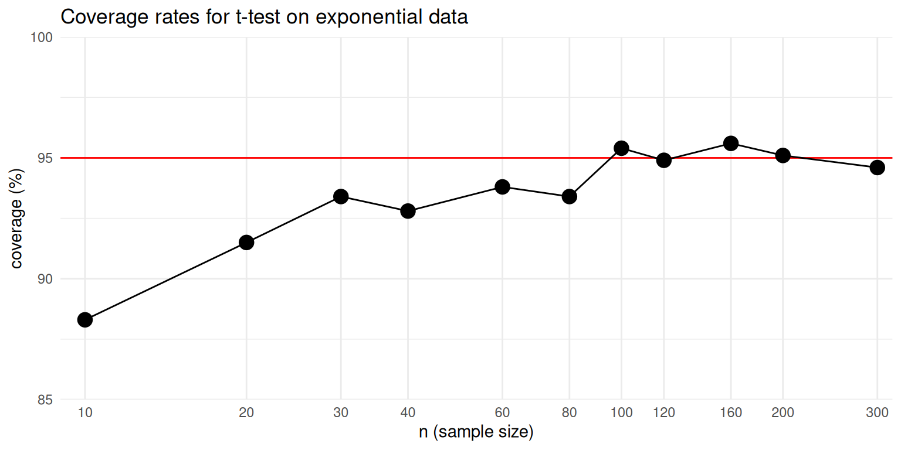
We can see from the graph that the confidence interval’s coverage rate improves as sample size gets larger. For sample sizes over 100, the interval appears to have coverage quite close to the nominal 95% level. Although the general trend is pretty clear, the graph is still a bit messy because each point is an estimated coverage rate, with some Monte Carlo error baked in.
3.4 Extending the simulation design
So far, we have executed a simple simulation to assess how well a statistical method works in a given circumstance, then expanded the simulation by running a single-factor experiment in which we varied the sample size to see how the method’s performance changes. In our example, we found that coverage is below what it should be for small sample sizes, but improves for sample sizes in the 100’s.
This example captures all the major steps of a simulation study, which we outlined at the start of Chapter @ref(introduction). We generated some hypothetical data according to a fully-specified data-generating process: we did both a normal distribution and a geometric distribution, each with a mean of 4. We applied a defined data-analysis procedure to the simulated data: we used a confidence interval based on the \(t\) distribution. We assessed how well the procedure worked across replications of the data-generating and data-analysis processes: in this case we focused on the coverage rate of the confidence interval. After creating a function to implement this whole process for a single scenario, we investigated how the performance of the confidence interval changed depending on sample size.
In simulations of more complex models and data-analysis methods, some or all of the steps in the process might have more moving pieces or entail more complex calculations. For instance, we might want to compare the performance of different approaches to calculating a confidence interval. We might also want to examine how coverage rates are affected by other aspects of the data-generating process, such as looking at different population mean values for the geometric distribution—or even entirely different distributions. With such additional layers of complexity, we will need to think systematically about each of the component parts of the simulation. In the next chapter, we introduce an abstract, general framework for simulations that is helpful for guiding simulation design and managing all the considerations involved.
3.5 Exercises
The simulation function we developed in this chapter uses 1000 replications of the data-generating and data-analysis process, which leads to some Monte Carlo error in the simulation results. Modify the
ttest_CI_experiment()function to make the number of replications an input argument, then re-run the simulation and re-create the graph of the results with \(R=10,000\) or even \(R=100,000\). Is the graph more regular than the one in the text, above? Use your improved results to determine what sample size is large enough to give coverage of at least 94% (so only 1% off of desired).Modify the
ttest_CI_experiment()function to make the \(p\) parameter an input argument. Repeat the one-factor simulation, but use \(p = 1/10\) so that the population mean is \((1 - p) / p = 9\). How do the coverage rates change?
More challenging problems
Below is a modified version of the
ttest_CI_experiment()function that creates a tibble with lower and upper end-points of the simulated confidence intervals:lotsa_CIs_experiment = function( n ) { lotsa_CIs <- replicate( 1000, { # simulate data dat <- rgeom( n = n, prob = 1/5) # analyze data tt <- t.test( dat ) # return CI tibble(lower = tt$conf.int[1], upper = tt.conf.int[2]) }) # summarize results # <fill in the rest> return(coverage) }Complete the function by writing code to compute the estimated coverage rate and average confidence interval length. Also calculate a 95% confidence interval for the true coverage rate (you can use
prop.test()on your set of simulation coverage indicators to obtain this, treating your \(R\) simulation replicates as a random sample in its own right). Your modified function should return a one-row tibble with the coverage rate, average confidence interval length, and a CI for the true coverage rate.Modify the
ttest_CI_experiment()function to include the extensions of the prior problem. Then re-run the simulations with your modified function, obtaining a data frame with each row being a simulation scenario and columns of sample size, estimated coverage, low end of the estimate’s confidence interval, and high end of the interval. You will likely want to usemap()and thenbind_rows()on your list of results; see Chapter @ref(repeating-oneself) for more information about these techniques. Use these data to create a graph that depicts the estimated coverage rates. Try creating a graph that includes the 95% confidence intervals also, so that the Monte Carlo simulation error in the estimated coverage rates is represented in the graph. We recommend using theggplot2functiongeom_pointrange()to represent the confidence intervals.Modify
ttest_CI_experiment()orlotsa_CIs_experiment()so that the user can specify the population mean of the data-generating process. Also let the user specify the number of replications to use. Here is a function skeleton to use as a starting point:Using the modified function from the previous problem, implement a two-factor simulation study for several different values of
nand several different population means. One way to do this is to run a few simulations with different population means, storing them in a series of datasets,res1,res2,res3, etc. Then usebind_rows( size1 = res1, ..., .id = "mean" )to combine the datasets into a single dataset. Make a plot of your results, withnon the x-axis, coverage on the \(y\)-axis, and different lines for different population means.
4 Structure of a simulation study
Monte Carlo simulation is a very flexible tool that researchers use to study a vast array of different models and topics. Within the realm of methodological research, most simulations share a common structure, nearly always involving the same set of steps or component pieces. In learning to design your own simulations, it is very useful to recognize the core components that most simulation studies share. Identifying these components will help you to organize your work and structure the coding tasks involved in writing a simulation.
In this chapter, we outline the component structure of a methodological simulation study, highlighting the four steps involved in a simulation of a single scenario and the three additional steps involved in multifactor simulations. We then describe a strategy for implementing simulations that mirrors the same component structure, where each step in the simulation is represented by a separate function or object. We call this strategy tidy, modular simulation. Finally, we show how the tidy, modular simulation strategy informs the structure and organization of code for a simulation study, walking through basic code skeletons (cf. @ref(function-skeletons)) for each of the steps in a single-scenario simulation.
4.1 General structure of a simulation
The four main steps involved in a simulation study, introduced in Chapter @ref(introduction), are summarized in the top portion of Table @ref(tab:simulation).
| Step | Description | |
|---|---|---|
| 1 | Generate | Generate a sample of artificial data based on a specific statistical model or data-generating process. |
| 2 | Analyze | Apply one or more data-analysis procedures, estimators, or workflows to the artificial data. |
| 3 | Repeat | Repeat steps (1) & (2) \(R\) times, recording \(R\) sets of results. |
| 4 | Summarize | Assess the performance of the procedure across the \(R\) replications. |
| 5 | Design | Specify a set of conditions to examine |
| 6 | Execute | Run the simulation for each condition in the design. |
| 7 | Synthesize | Compare performance across conditions. |
In the simple \(t\)-test example presented in Chapter @ref(t-test-simulation), we put each of these steps into action with R code:
- We used the geometric distribution as a data-generating process;
- We used the confidence interval from a one-sample \(t\)-test as the data-analysis procedure;
- We repeatedly simulated the confidence intervals with R’s
replicate()function; and - We summarized the results by estimating the fraction of the intervals that covered the population mean.
We also saw that it was helpful to wrap all of these steps up into a single function, so that we could run the simulation across multiple sample sizes.
These four initial steps are common and shared across nearly all simulations. In our first example, each of the steps was fairly simple, sometimes involving only a single line of code. More generally, each of the steps might be quite a bit more complex. The data-generating process might involve a more complex model with multiple variables or multilevel structure. The data analysis procedure might involve solving a multidimensional optimization problem to get parameter estimates, or might involve a data analysis workflow with multiple steps or contingencies. Further, we might use more than one metric for summarizing the results across replications and describing the performance of the data analysis procedure. Because each of the four steps involves its own set of choices, it will useful to recognize them as distinct from one another.
In methodological research projects, we usually want to examine simulation results across an array of different conditions that differ not only in terms of sample size, but also in other parameters or features of the data-generating process. Running a simulation study across multiple conditions entails several further steps, which are summarized in the bottom portion of Table @ref(tab:simulation). We will first need to specify the factors and specific conditions to be examined in our experimental design. We will then need to execute the simulation for each of the conditions and store all the results for further analysis. Finally, we will need to find ways to synthesize or make sense of the main patterns in the results across all of the conditions in the design.
Just as with the first four steps, it is useful to recognize these further steps as distinct from one another, each involving its own set of choices and techniques. The design step requires choosing which parameters and features of the data-generating process to vary, as well as which specific values to use for each factor that is varied. Executing a simulation might require a lot of computing power, especially if the simulation design has many conditions or the data analysis procedure takes a long time to compute. How to effectively implement the execution step will therefore depend on the computing requirements and available resources. Finally, many different techniques can be used to synthesizing findings from a multifactor simulation. Which ones are most useful will depend on your research questions and the choices you make in each of the preceeding steps.
4.2 Tidy, modular simulations
It is apparent from Table @ref(tab:simulation) that writing a simulation in R involves a large space of possibilities and will requiring making a bunch of decisions. Considering the number of choices to be made, it is critical to stay organized and to approach the process systematically. Recognizing the components of a simulation is the starting point. Next is to see how to translate the components into R code.
In our own methodological work, we have found it very useful to always follow the same approach to writing code for a simulation. We call this approach tidy, modular simulation. It involves two simple principles:
- Implement each component of a simulation as a distinct function or object.
- Store all results in rectangular data sets.
Writing separate functions for each component step of a simulation has several benefits. The first is the practical benefit of turning the coding process from a monolithic (and potentially daunting) activity into a set of smaller, discrete tasks. This lets us focus on one task at a time and makes it easier to see progress. Second, following this principle makes for code that is easier to read, test, and debug. Rather than having to scan through an entire code file to understand how the data analysis procedure is implemented, we can quickly identify the function that implements it, then focus on understanding the workings of that function. Likewise, if another researcher wanted to test out the data analysis procedure on a dataset of their own, they could do so by running the corresponding function rather than having to dissect an entire script. Third, writing separate code for each component makes it possible to tweak the code or swap out pieces of the simulation, such as by adding additional estimation methods or trying out a data-generating process involving different distributional assumptions. We already saw this in Chapter @ref(t-test-simulation), where we modified our initial data-generating process to use a geometric distribution rather than a normal distribution. In short, following the first principle makes for simpler, more robust code that is easier to navigate, easier to test, and easier to extend.
The second principle of tidy, modular simulation is to store all results in rectangular datasets, such as the base R data.frame object or the tidyverse tibble object.7
This principle applies to any and all output, including the simulated data from Step 1, the results of data analysis procedures from Step 2, full sets of replicated simulation results from Step 3, and summarized results from Step 4.
A primary benefit of following this principle is that it facilitates working with the output of each stage in the simulation process.
If you are comfortable using R to analyze real data, you you can use the same skills and tools to examine simulation output as long as it is in tabular form.
Many of the data processing and data analysis tools available in R work with—or even require—rectangular datasets.
Thus, using rectangular datasets makes it easier to inspect, summarize, and visualize the output.
4.3 Skeleton of a simulation study
The principles of tidy simulation imply that code for a simulation study should usually follow the same broad outline and organization of Table @ref(tab:simulation), with custom functions for each step in process. We will describe the outlines of simulation code using function skeletons to illustrate the inputs and outputs of each component. These skeletons skip over all the specific details, so that we can see the structure more clearly. We will first examine the structure of the code for simulating one specific scenario, then consider how to extend the code to systematically explore a variety of scenarios, as in a multifactor simulation.
In code skeletons, the structure of the first four steps in a simulation looks like this:
# Generate (data-generating process)
generate_data <- function( model_params ) {
# stuff
return(data)
}
# Analyze (data-analysis procedure)
analyze <- function( data ) {
# stuff
return(one_result)
}
# Repeat
one_run <- function( model_params ) {
dat <- generate_data( model_params )
one_result <- analyze(dat)
return(one_result)
}
results <- replicate(R, one_run( params ))
# Summarize (calculate performance measures)
assess_performance <- function( results, model_params ) {
# stuff
return(performance_measures)
}
assess_performance(results, model_params)The code above shows the full skeleton of a simulation. It involves four functions, where the outputs of one function get used as inputs in subsequent functions. We will now look at the inputs and outputs of each function to see how they align with the four steps in the simulation process. Subsequent chapters examine each piece in much greater detail—putting meat on the bones of each function skeleton, to torture our metaphor—and discuss specific statistical issues and programming techniques that are useful for designing each component.
Besides illustrating the skeletal framework of a simulation, readers might find it useful to use it as a template from which to start writing their own code.
The simhelpers package includes the function create_skeleton(), which will open a new R script that contains a template for a simulation study, with sections corresponding to each component:
The template that appears is a slightly more elaborate version of the code above, with the main difference being that it also includes some additional lines of code to wire the pieces together for a multifactor simulation. Starting from this template, you will already be on the road to writing a tidy, modular simulation.
4.3.1 Data-Generating Process
The first step in a simulation is specifying a data-generating process. This is a hypothetical model for how data might arise, involving measurements or observations of one or more variables. The bare-bones skeleton of a data-generating function looks like the following:
The function takes as input a set of model parameter values, denoted here as model_params.
Based on those model parameters, the function generates a hypothetical dataset as output.
Generating our own data based on a model allows us to know what the answer is (e.g., the true population mean or the true average effect of an intervention), so that we have benchmark against which to compare the results of a data analysis procedure that generates noisy estimates of the true value.
In practice, model_params will usually not be just one input but rather multiple arguments.
These arguments might include inputs such as the population mean for a variable, the standard deviation of a distribution of treatment effects, or a parameter controlling the degree of skewness in the population distribution.
Many data-generating processes involving multiple variables, such as the response variable and predictor variables in a regression model.
In such instances, the inputs of generate_data() might also include parameters that determine the degree of dependence or correlation between variables.
Further, the generate_data() inputs will also usually include arguments relating to the sample size and structure of the hypothetical dataset.
For instance, in a simulation of a multilevel dataset where individuals are nested within clusters, the inputs might include an arguments to specify the total number of clusters and the average number of individuals per cluster.
We discuss the inputs and form of the data-generating function further in Chapter @ref(data-generating-processes).
4.3.2 Data Analysis Procedure
The second step in a simulation is specifying a data analysis procedure or set of procedures. The bare-bones skeleton of a data-generating function looks like the following:
The function should take a single dataset as input and produce a set of estimates or results (e.g., point estimates, standard errors, confidence intervals, p-values, predictions, etc.).
Because we will be using the function to analyze hypothetical datasets simulated from the data-generating process, the analyze() function needs to work with data inputs that are produced by the generate_data() function.
Thus, the code in the body of analyze() can assume that data will include relevant variables with specific names.
Inside the body of the function, analyze() includes code to carry out a data analysis procedure.
This might involve generating a confidence interval, as in the example from Chapter @ref(t-test-simulation).
In another context, it might involve estimating an average growth rate along with a standard error, given a dataset with longitudinal repeated measurements from multiple individuals.
In still another context, it might involve generating individual-level predictions from a machine learning algorithm.
In simulations that involve comparing multiple analysis methods, we might write an analyze() function for each of the methods of interest, or (generally less preferred because it is less modular) we might write one function that does the calculations for all of the methods together.
A well-written estimation method should, in principle, work not only on a simulated, hypothetical dataset but also on a real empirical dataset that has the same format (i.e., appropriate variable names and structure).
Because of this, the inputs of the analyze() function should not typically include any information about the parameters of the data-generating process.
To be realistic, the code for our simulated data-analysis procedure should not make use of anything that the analyst could not know when analyzing a real dataset.
Thus, analyze() has an argument for the sample dataset but not for model_params.
We discuss the form and content of the data analysis function further in Chapter @ref(data-analysis-procedures).
4.3.3 Repetition
The third step in a simulation is to repeatedly evaluate the data-generating process and data analysis procedure.
In practice, this amounts to repeatedly calling generate_data() and then calling analyze() on the result.
Here is the skeleton from our simulation template:
one_run <- function( model_params ) {
dat <- generate_data( model_params )
one_result <- analyze(dat)
return(one_result)
}
results <- simhelpers::repeat_and_stack(R, one_run( params ))We first create a helper function called one_run(), which takes model_params as input.
Inside the body of the function, we call the generate_data() function to simulate a hypothetical dataset.
We pass this dataset to analyze() and return a small dataset containing the results of the data-analysis procedure.
The one_run() method is like a coordinator or dispatcher of the system: it generates the data, calls all the evaluation methods we want to call, combines all the results, and hands them back for recording.
Making a helper method such as one_run() can be useful because it facilitates debugging.
Once we have the one_run() helper function, we need a way to call it repeatedly. As with many things in R, there are a variety of different ways to do something over and over.
In the above skeleton, we use the repeat_and_stack() function from simhelpers.8
In the first argument, we specify the number of times to repeat the process.
In the second argument, we specify an expression that evaluates one_run() for specified values of the model parameters stored in params.
The repeat_and_stack() function then evaluates the expression repeatedly, R times in all, and then stacks up all of the replications into a big dataset, with one or more rows per replication.9
We go into further detail about how to approach running the simulation process in Chapter @ref(running-the-simulation-process).
Among other things, we will illustrate how to use the bundle_sim() function from the simhelpers package to automate the process of coding this step, thereby avoiding the need to write a one_run() helper function.
4.3.4 Performance summaries
The fourth step in a simulation is to summarize the distribution of simulation results across replications. Here is the skeleton from our simulation template:
assess_performance <- function( results, model_params ) {
# stuff
return(performance_measures)
}
assess_performance(results, params)The assess_performance() function takes results as input.
results should be a dataset containing all of the replications of the data-generating and analysis process.
In contrast to the analyze() function, assess_performance() also needs to know the true parameter values of the data-generating process, so it needs to have model_params as its other input.
The function then uses both of these inputs to calculate performance measures and returns a summary of the performance measures in a dataset.
Performance measures are the metrics or criteria used to assess the performance of a statistical method across repeated samples from the data-generating process. For example, we might want to know how close an estimator gets to the target parameter, on average. We might want to know if a confidence interval captures the true parameter the right proportion of the time, as in the simulation from Chapter @ref(t-test-simulation). Performance is defined in terms of the sampling distribution of estimators or analysis results, across an infinite number of replications of the data-generating process. In practice, we use many replications of the process, but still only a finite number. Consequently, we actually estimate the performance measures and need to attend to the Monte Carlo error in the estimates. We discuss the specifics of different performance measures and assessment of Monte Carlo error in Chapter @ref(performance-criteria).
4.3.5 Multifactor simulations
Thus far, we have sketched out the structure of a modular, tidy simulation for a single context. In our \(t\)-test case study, for example, we might ask how well the \(t\)-test works when we have \(n=100\) units and the observations follow geometric distribution. However, we rarely want to examine a method only in a single context. Typically, we want to explore how well a procedure works across a range of different contexts. If we choose conditions in a structured and thoughtful manner, we will be able to examine broad trends and potentially make more general claims about the behaviors of the data-analysis procedures under investigation. Thus, it is helpful to think of simulations as akin to a designed experiment: in seeking to understand the properties of one or more procedures, we test them under a variety of different scenarios to see how they perform, then seek to identify more general patterns that hold beyond the specific scenarios examined. This is the heart of simulation for methodological evaluation.
To implement a multifactor simulation, we will follows the same principles of modular, tidy simulation. In particular, we will take the code developed for simulating a single context and bundle it into a function that can be evaluated for any and all scenarios of interest. Simulation studies often follow a full factorial design, in which each level of a factor (something we vary, such as sample size, true treatment effect, or residual variance) is crossed with every other level. The experimental design then consists of sets of parameter values (including design parameters, such as sample sizes), and these too can be represented in an object, distinct from the other components of the simulation. We will discuss multiple-scenario simulations in Part III (starting with Chapter @ref(exp-design)), after we more fully develop the core concepts and techniques involved in simulating a single context.
4.4 Exercises
- Look back at the \(t\)-test simulation presented in Chapter @ref(t-test-simulation). The code presented there did not entirely follow the formal structure outlined in this chapter. Revise the code by creating separate functions for each of four components in the simulation skeleton. Using the functions, re-run the simulation and recreate one or more graphs from the exercises in the previous chapter.
5 Case Study: Heteroskedastic ANOVA
In this chapter, we present another detailed example of a simulation study to demonstrate how to put the principles of tidy, modular simulation into practice. To illustrate the process of programming a simulation, we reconstruct the simulations from Brown and Forsythe (1974). We will also use this case study as a recurring example in some of the following chapters.
Brown and Forsythe (1974) studied methods for null hypothesis testing in studies that measure a characteristic \(X\) on samples from each of several groups. They consider a population consisting of \(G\) separate groups, with population means \(\mu_1,...,\mu_G\) and population variances \(\sigma_1^2,...,\sigma_G^2\) for the characteristic \(X\). A researcher obtains samples of size \(n_1,...,n_G\) from each of the groups and takes measurements of the characteristic for each sampled unit. Let \(x_{ig}\) denote the measurement from unit \(i\) in group \(g\), for \(i = 1,...,n_g\) for each \(j = 1,..., G\). The researcher’s goal is to use the sample data to test the hypothesis that the population means are all equal \[ H_0: \mu_1 = \mu_2 = \cdots = \mu_G. \]
If the population variances were all equal (so \(\sigma_1^2 = \sigma_2^2 = \cdots = \sigma_G^2\)), we could use a conventional one-way analysis of variance (ANOVA) to conduct this test. However, one-way ANOVA might not work well if the variances are not equal. The question is then: what are best practices for testing the null of equal group means, allowing for the possibility that variances could differ across groups?
To tackle this question, Brown and Forsythe evaluated two different hypothesis testing procedures, developed by James (1951) and Welch (1951), both of which avoid the assumption that all groups have equal equality of variances. Brown and Forsythe also evaluated the conventional one-way ANOVA F-test as a benchmark, even though this procedure maintains the assumption of equal variances. They also proposed and evaluated a new procedure of their own devising.10 Their simulation involved comparing the performance of these different hypothesis testing procedures (the methods) under a range of conditions (different data generating processes) with different sample sizes and different degrees of heteroskedasticity. They looked at the different scenarios shown as Table @ref(tab:BF-Scenarios), varying number of groups, group size, and amount of variation within each group. In all, there are a total of 20 scenarios, covering conditions with between 10 and 6 groups.
| Scenario | Groups | Sample Sizes | Standard Deviations |
|---|---|---|---|
| A | 4 | 4,4,4,4 | 1,1,1,1 |
| B | 4 | 1,2,2,3 | |
| C | 4 | 4,8,10,12 | 1,1,1,1 |
| D | 4 | 1,2,2,3 | |
| E | 4 | 3,2,2,1 | |
| F | 4 | 11,11,11,11 | 1,1,1,1 |
| G | 4 | 1,2,2,3 | |
| H | 4 | 11,16,16,21 | 1,1,1,1 |
| I | 4 | 3,2,2,1 | |
| J | 4 | 1,2,2,3 | |
| K | 6 | 4,4,4,4,4,4 | 1,1,1,1,1,1 |
| L | 6 | 1,1,2,2,3,3 | |
| M | 6 | 4,6,6,8,10,12 | 1,1,1,1,1,1 |
| N | 6 | 1,1,2,2,3,3 | |
| O | 6 | 3,3,2,2,1,1 | |
| P | 6 | 6,6,6,6,6,6 | 1,1,2,2,3,3 |
| Q | 6 | 11,11,11,11,11,11 | 1,1,2,2,3,3 |
| R | 6 | 16,16,16,16,16,16 | 1,1,2,2,3,3 |
| S | 6 | 21,21,21,21,21,21 | 1,1,2,2,3,3 |
| T | 10 | 20,20,20,20,20,20,20,20,20,20 | 1,1,1.5,1.5,2,2,2.5,2.5,3,3 |
When evaluating hypothesis testing procedures, there are two main performance metrics of interest: type-I error rate and power. The type-I error rate is the rate at which a test rejects the null hypothesis when the null hypothesis is actually true. To apply a hypothesis testing procedure, one has to specify a desired, or nominal, type-I error rate, often denoted as the \(\alpha\)-level. For a specified \(\alpha\), a valid or well-calibrated test should have an actual type-I error rate less than or equal to the nominal level, and ideally should be very close to nominal. Power is how often a test correctly rejects the null when it is indeed false. It is a measure of how sensitive a method is to violations of the null.
Brown and Forsythe estimated error rates and power for nominal \(\alpha\)-levels of 1%, 5%, and 10%. Table 1 of their paper reports the simulation results for type-I error (labeled as “size”). Our Table @ref(tab:BF-table1) reports some of their results with respect to Type I error. For a well-calibrated hypothesis testing method, the reported numbers should be very close to the desired alpha levels, as listed at the top of the table. We can compare the four tests to each other across each row, where each row is a specific scenario defined by a specific data generating process. Looking at ANOVA, for example, we see some scenarios with very elevated rates. For instance, in Scenario E, the ANOVA F-test has 21.9% rejection when it should only have 10%. In contrast, the ANOVA F works fine under scenario A, which is what one would expect because all the groups have the same variance. Brown and Forsythe’s choice of scenarios here illustrates a broader design principle: to provide a full picture of the performance of a method or set of methods, it is wise to always evaluate them under conditions where we expect things to work, as well as conditions where we expect them to not work well.
| Scenario | 10% | 5% | 1% | 10% | 5% | 1% | 10% | 5% | 1% | 10% | 5% | 1% |
|---|---|---|---|---|---|---|---|---|---|---|---|---|
| A | 10.2 | 4.9 | 0.9 | 7.8 | 3.4 | 0.5 | 9.6 | 4.5 | 0.8 | 13.3 | 7.9 | 2.4 |
| B | 12.0 | 6.7 | 1.7 | 8.9 | 4.1 | 0.7 | 10.3 | 4.7 | 0.8 | 13.8 | 8.1 | 2.7 |
| C | 9.9 | 5.1 | 1.1 | 9.5 | 4.8 | 1.0 | 10.8 | 5.7 | 1.6 | 12.1 | 6.7 | 2.1 |
| D | 5.9 | 3.0 | 0.6 | 10.3 | 5.7 | 1.4 | 9.8 | 4.9 | 0.9 | 10.8 | 5.6 | 1.3 |
| E | 21.9 | 14.4 | 5.6 | 11.0 | 6.2 | 1.8 | 11.3 | 6.5 | 2.0 | 12.9 | 7.7 | 2.9 |
| F | 10.1 | 5.1 | 1.0 | 9.8 | 5.7 | 1.5 | 10.0 | 5.0 | 0.9 | 10.6 | 5.5 | 1.1 |
| G | 11.4 | 6.3 | 1.8 | 10.7 | 5.7 | 1.5 | 10.1 | 5.0 | 1.1 | 10.6 | 5.4 | 1.3 |
| H | 10.3 | 4.9 | 1.1 | 10.3 | 5.1 | 1.0 | 10.2 | 5.0 | 1.0 | 10.5 | 5.3 | 1.2 |
| I | 17.3 | 10.8 | 3.9 | 11.1 | 6.2 | 1.8 | 10.5 | 5.5 | 1.2 | 10.9 | 5.8 | 1.3 |
| J | 7.3 | 4.0 | 1.0 | 11.5 | 6.5 | 1.8 | 10.6 | 5.4 | 1.1 | 10.9 | 5.6 | 1.1 |
| K | 9.6 | 4.9 | 1.0 | 7.3 | 3.4 | 0.4 | 11.4 | 6.1 | 1.4 | 14.7 | 9.5 | 3.8 |
To replicate the Brown and Forsythe simulation, we will first write functions to generate data for a specified scenario and evaluate data of a given structure. We will then use these functions to evaluate the hypothesis testing procedures in a specific scenario with a particular set of parameters (e.g., sample sizes, number of groups, and so forth). We will then scale up to execute the simulations for a range of scenarios that vary the parameters of the data-generating model, just as reported in Brown and Forsythe’s paper.
5.1 The data-generating model
In the heteroskedastic one-way ANOVA simulation, there are three sets of parameter values: population means, population variances, and sample sizes. Rather than attempting to write a general data-generating function immediately, it is often easier to write code for a specific case first and then use that code as a starting point for developing a function. For example, say that we have four groups with means of 1, 2, 5, 6; variances of 3, 2, 5, 1; and sample sizes of 3, 6, 2, 4:
Following Brown and Forsythe (1974), we will assume that the measurements are normally distributed within each sub-group of the population. The following code generates a vector of group id’s and a vector of simulated measurements:
N <- sum(sample_size) # total sample size
G <- length(sample_size) # number of groups
# group id factor
group <- factor(rep(1:G, times = sample_size))
# mean for each unit of the sample
mu_long <- rep(mu, times = sample_size)
# sd for each unit of the sample
sigma_long <- rep(sqrt(sigma_sq), times = sample_size)
# See what we have?
tibble( group = group, mu = mu_long, sigma = sigma_long )## # A tibble: 15 × 3
## group mu sigma
## <fct> <dbl> <dbl>
## 1 1 1 1.73
## 2 1 1 1.73
## 3 1 1 1.73
## 4 2 2 1.41
## 5 2 2 1.41
## 6 2 2 1.41
## 7 2 2 1.41
## 8 2 2 1.41
## 9 2 2 1.41
## 10 3 5 2.24
## 11 3 5 2.24
## 12 4 6 1
## 13 4 6 1
## 14 4 6 1
## 15 4 6 1Now we have the pieces needed to generate a small dataset consisting of group memberships and the measured characteristic:
# Now make our data
x <- rnorm(N, mean = mu_long, sd = sigma_long)
dat <- tibble(group = group, x = x)
dat## # A tibble: 15 × 2
## group x
## <fct> <dbl>
## 1 1 1.24
## 2 1 3.07
## 3 1 -0.681
## 4 2 2.43
## 5 2 2.50
## 6 2 2.15
## 7 2 0.612
## 8 2 0.860
## 9 2 2.09
## 10 3 1.56
## 11 3 5.08
## 12 4 5.68
## 13 4 5.66
## 14 4 5.92
## 15 4 4.38We have followed the strategy of first constructing a dataset with parameters for each observation in each group, making heavy use of base R’s rep() function to repeat values in a list.
We then called rnorm() to generate N observations in all.
This works because rnorm() is vectorized; if you give it a vector (or vectors) of parameter values, it will generate each subsequent observation according to the next entry in the vector. As a result, the first x value is simulated from a normal distribution with mean mu_long[1] and standard deviation sd_long[1], the second x is simulated using mu_long[2] and sd_long[2], and so on.
As usual, there are many different and legitimate ways of doing this in R.
For instance, instead of using rep() to do it all at once, we could generate observations for each group separately, then stack the observations into a dataset.
Do not worry about trying to writing code the “best” way—especially when you are initially putting a simulation together.
If you can find a way to accomplish your task at all, then that’s often enough (and you should feel good about it!).
5.1.1 Now make a function
Because we will need to generate datasets over and over, we will wrap our code in a function.
The inputs to the function will be the parameters of the model that we specified at the very beginning: the set of population means mu, the population variances sigma_sq, and sample sizes sample_size. We make these quantities arguments of the data-generating function so that we can make datasets of different sizes and shapes:
generate_ANOVA_data <- function(mu, sigma_sq, sample_size) {
N <- sum(sample_size)
G <- length(sample_size)
group <- factor(rep(1:G, times = sample_size))
mu_long <- rep(mu, times = sample_size)
sigma_long <- rep(sqrt(sigma_sq), times = sample_size)
x <- rnorm(N, mean = mu_long, sd = sigma_long)
sim_data <- tibble(group = group, x = x)
return(sim_data)
}The function is simply the code we built previously, all bundled up. We developed the function by first writing code to make the data-generating process to work once, the way we want, and only then turning the final code into a function for later reuse.
Once we have turned the code into a function, we can call it to get a new set of simulated data. For example, to generate a dataset with the same parameters as before, we can do:
sim_data <- generate_ANOVA_data(
mu = mu,
sigma_sq = sigma_sq,
sample_size = sample_size
)
str(sim_data)## tibble [15 × 2] (S3: tbl_df/tbl/data.frame)
## $ group: Factor w/ 4 levels "1","2","3","4": 1 1 1 2 2 2 2 2 2 3 ...
## $ x : num [1:15] 0.777 2.115 1.31 1.848 3.041 ...To generate one with population means of zero in all the groups, but the same group variances and sample sizes as before, we can do:
sim_data_null <- generate_ANOVA_data(
mu = c( 0, 0, 0, 0 ),
sigma_sq = sigma_sq,
sample_size = sample_size
)
str(sim_data)## tibble [15 × 2] (S3: tbl_df/tbl/data.frame)
## $ group: Factor w/ 4 levels "1","2","3","4": 1 1 1 2 2 2 2 2 2 3 ...
## $ x : num [1:15] 0.777 2.115 1.31 1.848 3.041 ...Following the principles of tidy, modular simulation, we have written a function that returns a rectangular dataset for further analysis.
Also note that the dataset returned by generate_ANOVA_data() only includes the variables group and x, but not mu_long or sd_long.
This is by design.
Including mu_long or sd_long would amount to making the population parameters available for use in the data analysis procedures, which is not something that happens when analyzing real data.
5.1.2 Cautious coding
In the above, we built some sample code, and then bundled it into a function by literally cutting and pasting the initial work we did into a function skeleton. In the process, we shifted from having variables in our workspace with different names to using those variable names as parameters in our function call.
Developing code in this way is not without hazards.
In particular, after we have created our function, our workspace is left with a variable mu in it and our function also has a parameter named mu.
Inside the function, R will use the parameter mu first, but this is potentially confusing.
Another potential source of confusion are lines such as mu = mu, which means “set the function’s parameter called mu to the variable called mu.”
These are different things (with the same name).
Once you have built a function, one way to check that it is working properly is to comment out the initial code (or delete it), clear out the workspace (or restart R), and then re-run the code that uses the function. If things still work, then you can be somewhat confident that you have successfully bundled your code into the function. Once you bundle your code, you can also do a search and replace to change the variable names inside your function to something more generic, to better clarify the distinction betwen object names and argument names.
5.2 The hypothesis testing procedures
Brown and Forsythe considered four different hypothesis testing procedures for heteroskedastic ANOVA, but we will focus on just two of the tests for now.
We start with the conventional one-way ANOVA that mistakenly assumes homoskedasticity.
R’s oneway.test function will calculate this test automatically:
sim_data <- generate_ANOVA_data(
mu = mu,
sigma_sq = sigma_sq,
sample_size = sample_size
)
anova_F <- oneway.test(x ~ group, data = sim_data, var.equal = TRUE)
anova_F##
## One-way analysis of means
##
## data: x and group
## F = 8.9503, num df = 3, denom df = 11,
## p-value = 0.002738We can use the same function to calculate Welch’s test by setting var.equal = FALSE:
##
## One-way analysis of means (not assuming
## equal variances)
##
## data: x and group
## F = 22.321, num df = 3.0000, denom df =
## 3.0622, p-value = 0.01399The main results we need here are the \(p\)-values of the tests, which will let us assess Type-I error and power for a given nominal \(\alpha\)-level. The following function takes simulated data as input and returns as output the \(p\)-values from the one-way ANOVA test and Welch test:
ANOVA_Welch_F <- function(data) {
anova_F <- oneway.test(x ~ group, data = data, var.equal = TRUE)
Welch_F <- oneway.test(x ~ group, data = data, var.equal = FALSE)
result <- tibble(
ANOVA = anova_F$p.value,
Welch = Welch_F$p.value
)
return(result)
}## # A tibble: 1 × 2
## ANOVA Welch
## <dbl> <dbl>
## 1 0.00274 0.0140Following our tidy, modular simulation principles, this function returns a small dataset with the p-values from both tests.
Eventually, we might want to use this function on some real data.
Our estimation function does not care if the data are simulated or not; we call the input data rather than sim_data to reflect this.
As an alternative to this function, we could instead write code to implement the ANOVA and Welch tests ourselves.
This has some potential advantages, such as avoiding any extraneous calculations that oneway.test does, which take time and slow down our simulation.
However, there are also drawbacks to doing so, including that writing our own code takes our time and opens up the possibility of errors in our code.
For further discussion of the trade-offs, see Chapter @ref(optimize-code), where we do implement these tests by hand and see what kind of speed-ups we can obtain.
5.3 Running the simulation
We now have functions that implement steps 2 and 3 of the simulation.
Given some parameters, generate_ANOVA_data produces a simulated dataset and, given some data, ANOVA_Welch_F calculates \(p\)-values two different ways.
We now want to know which way is better, and by how much.
To answer this question, we will need to repeat the chain of generate-and-analyze calculations a bunch of times.
To facilitate repetition, we first put the components together into a single function:
one_run = function( mu, sigma_sq, sample_size ) {
sim_data <- generate_ANOVA_data( mu = mu, sigma_sq = sigma_sq, sample_size = sample_size )
ANOVA_Welch_F(sim_data)
}
one_run( mu = mu, sigma_sq = sigma_sq, sample_size = sample_size )## # A tibble: 1 × 2
## ANOVA Welch
## <dbl> <dbl>
## 1 0.0167 0.107This function implements a single simulation trial by generating artificial data and then analyzing the data, ending with a tidy dataset that has results for the single run.
We next call one_run() over and over; see Appendix @ref(repeating-oneself) for some discussion of options.
The following uses repeat_and_stack() from simhelpers to evaluate one_run() 4 times and then stack the results into a single dataset:
library(simhelpers)
sim_data <- repeat_and_stack(4,
one_run( mu = mu, sigma_sq = sigma_sq, sample_size = sample_size)
)
sim_data## # A tibble: 4 × 2
## ANOVA Welch
## <dbl> <dbl>
## 1 0.0262 0.0125
## 2 0.00451 0.0698
## 3 0.00229 0.0380
## 4 0.0108 0.0423Voila! We have simulated \(p\)-values!
5.4 Summarizing test performance
We now have all the pieces in place to reproduce the results from Brown and Forsythe (1974). We first focus on calculating the actual type-I error rate of these tests—that is, the proportion of the time that they reject the null hypothesis of equal means when that null is actually true—for an \(\alpha\)-level of .05. To evaluate the type-I error rate, we need to simulate data from a process where the population means are indeed all equal. Arbitrarily, let’s start with \(G = 4\) groups and set all of the means equal to zero:
In the fifth row of Table 1 (Scenario E in our Table @ref(tab:BF-Scenarios)), Brown and Forsythe examine performance for the following parameter values for sample size and population variance:
With these parameter values, we can use map_dfr to simulate 10,000 \(p\)-values:
p_vals <- repeat_and_stack(10000,
one_run(
mu = mu,
sigma_sq = sigma_sq,
sample_size = sample_size
)
)We can estimate the rejection rates by summarizing across these replicated p-values. The rule is that the null is rejected if the \(p\)-value is less than \(\alpha\). To get the rejection rate, we calculate the proportion of replications where the null is rejected:
## [1] 0.1391This is equivalent to taking the mean of the logical conditions:
## [1] 0.1391We get a rejection rate that is much larger than \(\alpha = .05\). We have learned that the ANOVA F-test does not adequately control Type-I error under this set of conditions.
## [1] 0.0697The Welch test does much better, although it appears to be a little bit in excess of 0.05.
Note that these two numbers are quite close (though not quite identical) to the corresponding entries in Table 1 of Brown and Forsythe (1974). The difference is due to the fact that both Table 1 and are results are actually estimated rejection rates, because we have not actually simulated an infinite number of replications. The estimation error arising from using a finite number of replications is called simulation error (or Monte Carlo error). In Chapter @ref(performance-criteria), we will look more at how to estimate and control the Monte Carlo simulation error in performance measures.
So there you have it! Each part of the simulation is a distinct block of code, and together we have a modular simulation that can be easily extended to other scenarios or other tests. The exercises at the end of this chapter ask you to extend the framework further. In working through them, you will get to experience first-hand how the modular code that we have started to develop is easier to work with than a single, monolithic block of code.
5.5 Exercises
The following exercises involve exploring and tweaking the above simulation code we have developed to replicate the results of Brown and Forsythe (1974).
Table 1 from Brown and Forsythe reported rejection rates for \(\alpha = .01\) and \(\alpha = .10\) in addition to \(\alpha = .05\). Calculate the rejection rates of the ANOVA F and Welch tests for all three \(\alpha\)-levels and compare to the table.
Try simulating the Type-I error rates for the parameter values in the first two rows of Table 1 of the original paper. Use 10,000 replications. How do your results compare to the report results?
In the primary paper, Table 1 is about Type I error and Table 2 is about power. A portion of Table 2 follows:
(#tab:BF-power)Portion of “Table 2” reproduced from Brown and Forsythe (1974)
Variances
Means
Brown’s F
B & F’s F*
Welch’s W
1,1,1,1
0,0,0,0
4.9
5.1
5.0
1,0,0,0
68.6
67.6
65.0
3,2,2,1
0,0,0,0
NA
6.2
5.5
1.3,0,0,1.3
NA
42.4
68.2
In the table, the sizes of the four groups are 11, 16, 16, and 21, for all the scenarios. Try simulating the power levels for a couple of sets of parameter values from Table @ref(tab:BF-power). Use 10,000 replications. How do your results compare to the results reported in the Table?
Instead of making
ANOVA_Welch_Freturn a single row with the columns for the \(p\)-values, one could instead return a dataset with one row for each test. The “long” approach is often nicer when evaluating more than two methods, or when each method returns not just a \(p\)-value but other quantities of interest. For our current simulation, we might also want to store the \(F\) statistic, for example. The resulting dataset would then look like the following:## # A tibble: 2 × 3 ## method Fstat pvalue ## <chr> <dbl> <dbl> ## 1 ANOVA 8.46 0.00338 ## 2 Welch 14.3 0.0241Modify
ANOVA_Welch_F()to return output in this format, update your simulation code, and then usegroup_by()plussummarise()to calculate rejection rates of both tests.group_by()is a method for dividing your data into distinct groups and conducting an operation on each. The classic form of this would be something like the following:The
onewaytestspackage in R includes functions for calculating Brown and Forsythe’s \(F^*\) test and James’ test for differences in population means. Modify the data analysis functionANOVA_Welch_F(or, better yet,ANOVA_Welch_F_longfrom Exercise 4) to also include results from these hypothesis tests. Re-run the simulation to estimate the type-I error rate of all four tests under Scenarios A and B of Table @ref(tab:BF-Scenarios).
6 Data-generating processes
As we saw in Chapter @ref(simulation-structure), the first step of a simulation is creating artificial data based on some process where we know (and can control) the truth. This step is what we call the data generating process (DGP). Think of it as a recipe for cooking up artificial data, which can be applied over and over, any time we’re hungry for a new dataset. Like a good recipe, a good DGP needs to be complete—it cannot be missing ingredients and it cannot omit any steps. Unlike cooking or baking, however, DGPs are usually specified in terms of a statistical model, or a set of equations involving constants, parameter values, and random variables. More complex DGPs, such as those for hierarchical data or other latent variable models, will often involve a series of several equations that describe different dimensions or levels of the model, which need to be followed in sequence to produce an artificial dataset.
In this chapter, we will look at how to instantiate a DGP as an R function (or perhaps a set of functions). Designing DGPs and implementing them in R code involves making choices about what aspects of the model we want to be able to control and how to set up the parameters of the model. We start by providing a high-level overview of DGPs and discussing some of the choices and challenges involved in designing them. We then demonstrate how to write R functions for DGPs. In the remainder, we present detailed examples involving a hierarchical DGP for generating data on students nested within schools and an item response theory DGP for generating data on responses to individual test items.
6.1 Examples
Before diving in, it is helpful to consider a few examples that we will return to throughout this and subsequent chapters.
6.1.1 Example 1: One-way analysis of variance
We have already seen one example of a DGP in the ANOVA example from Chapter @ref(case-ANOVA). Here, we consider observations on some variable \(X\) drawn from a population consisting of \(G\) groups, where group \(g\) has population mean \(\mu_g\) and population variance \(\sigma_g^2\) for \(g = 1,...,G\). A simulated dataset consists of \(n_g\) observations from each group \(g = 1,...,G\), where \(X_{ig}\) is the measurement for observation \(i\) in group \(g\). The statistical model for these data can be written as follows: \[ X_{ig} = \mu_g + \epsilon_{ig}, \quad \mbox{with} \quad \epsilon_{ig} \sim N( 0, \sigma^2_g ) \] for \(i = 1,...,n_g\) and \(g = 1,...,G\). Alternately, we could write the model as \[ X_{ig} \sim N( \mu_g, \sigma_g^2 ). \]
6.1.2 Example 2: Bivariate Poisson model
As a second example, suppose that we want to understand how the usual Pearson sample correlation coefficient behaves with non-normal data and also to investigate how the Pearson correlation relates to Spearman’s rank correlation coefficient. To look into such questions, one DGP we might entertain is a bivariate Poisson model, which is a distribution for a pair of counts, \(C_1,C_2\), where each count follows a Poisson distribution and where the pair of counts may be correlated. We will denote the expected values of the counts as \(\mu_1\) and \(\mu_2\) and the Pearson correlation between the counts as \(\rho\).
To simulate a dataset based on this model, we would first need to choose how many observations to generate. Call this sample size \(N\). One way to generate data following a bivariate Poisson model is to generate three independent Poisson random variables for each of the \(N\) observations: \[ \begin{aligned} Z_0 &\sim Pois\left( \rho \sqrt{\mu_1 \mu_2}\right) \\ Z_1 &\sim Pois\left(\mu_1 - \rho \sqrt{\mu_1 \mu_2}\right) \\ Z_2 &\sim Pois\left(\mu_2 - \rho \sqrt{\mu_1 \mu_2}\right) \end{aligned} \] and then combine the pieces to create two dependent observations: \[ \begin{aligned} C_1 &= Z_0 + Z_1 \\ C_2 &= Z_0 + Z_2. \end{aligned} \] An interesting feature of this model is that the range of possible correlations is constrained: only positive correlations are possible and, because each of the independent pieces must have a non-negative mean, the maximum possible correlation is \(\sqrt{\frac{\min\{\mu_1,\mu_2\}}{\max\{\mu_1,\mu_2\}}}\).
6.1.3 Example 3: Hierarchical linear model for a cluster-randomized trial
Cluster-randomized trials are randomized experiments where the unit of randomization is a group of individuals, rather than the individuals themselves. For example, suppose we have a collection of schools and the students within them. A cluster-randomized trial involves randomizing the schools into treatment or control conditions and then measuring an outcome such as academic performance on the multiple students within the schools. Typically, researchers will be interested in the extent to which average outcomes differ across schools assigned to different conditions, which captures the impact of the treatment relative to the control condition. We will index the schools using \(j = 1,...,J\) and let \(n_j\) denote the number of students observed in school \(j\). Say that \(Y_{ij}\) is the outcome measure for student \(i\) in school \(j\), for \(1 = 1,...,n_j\) and \(j = 1,...,J\), and let \(Z_j\) be an indicator equal to 1 if school \(j\) is assigned to the treatment condition and otherwise equal to 0.
A widely used approach for estimating impacts from cluster-randomized trials is heirarchical linear modeling (HLM). One way to write an HLM is in two parts. First, we consider a regression model that describes the distribution of the outcomes across students within school \(j\): \[ Y_{ij} = \beta_{0j} + \epsilon_{ij}, \qquad \epsilon_{ij} \sim N(0, \sigma_{\epsilon}^2), \] where \(\beta_{0j}\) is the average outcome across students in school \(j\). Second, we allow that the school-level average outcomes differ by a treatment effect \(\gamma_{1}\) and that, for schools within each condition, the average outcomes follow a normal distribution with variance \(\sigma_u^2\). We can write these relationships as a regression equation for the school-specific average outcome: \[ \beta_{0j} = \gamma_{0} + \gamma_{10} Z_j + u_{0j}, \quad u_{0j} \sim N(0, \tau^2), \] where \(\gamma_{0}\) is the average outcome among schools in the control condition.
If we only consider the first stage of this model, it looks a bit like the one-way ANOVA model from the previous example:
in both cases, we have multiple observations from each of several groups.
The main distinction is that the ANOVA model treats the \(G\) groups as a fixed set, whereas the HLM treats the set of \(J\) schools as sampled from a larger population of schools and includes a regression model describing the variation in the school-level average outcomes.
6.2 Components of a DGP
A DGP involves a statistical model with parameters and random variables, but it also often includes further details as well, beyond those that we would consider to be part of the model as we would use it for analyzing real data. In statistical analysis of real data, we often use models that describe only part of the distribution of the data, rather than its full, multivariate distribution. For instance, when conducting a regression analysis, we are analyzing the distribution of an outcome or response variable, conditional on a set of predictor variables. In other words, we take the predictor variables as given or fixed, rather than modeling their distribution. When using an item response theory (IRT) model, we use responses to a set of items to estimate individual ability levels, given the set of items on the test. We do not (usually) model the items themselves. In contrast, if we are going to generate data for simulating a regression model or IRT model, we need to specify distributions for these additional features (the predictors in a regression model, the items in an IRT model); we can no longer just take them as given.
In designing and discussing DGPs, it is helpful to draw distinctions between the components of the focal statistical model and the remaining components of the DGP that are taken as given when analyzing real data. A first relevant distinction is between structural features, covariates, and outcomes (or more generally, endogenous quantities):
- Structural features are quantities, such as the per-group sample sizes in the one-way ANOVA example, that describe the structure of a dataset but do not enter directly into the focal statistical model. When analyzing real data, we usually take the structural features as they come, but when simulating data, we will need to make choices about the structural features. For instance, in the HLM example involving students nested within schools, the number of students in each school is a structural feature. To simulate data based on HLM, we will need to make choices about the number of schools and the distribution of the number of students in each school (e.g., we might specify that school sizes are uniformly distributed between specified minimum and maximum sizes), even though we do not have to consider these quantities when estimating a hierarchical model on real data.
- Covariates are variables in a dataset that we typically take as given when analyzing real data. For instance, in the one-way ANOVA example, the group assignments of each observation is a covariate. In the HLM example, covariates would include the treatment indicators \(Z_1,...,Z_J\). In a more elaborate version of the HLM, they might also include variables such as student demographic information, measures of past academic performance, or school-level characteristics such as the school’s geographic region or treatment assignment. When analyzing real data, we condition on these quantities, but when specifying a DGP, we will need to make choices about how they are distributed (e.g., we might specify that students’ past academic performance is normally distributed).
- Outcomes and endogenous quantities are the variables whose distribution is described by the focal statistical model. In the one-way ANOVA example, the outcome variable consists of the measurements \(X_{ig}\) for \(i = 1,...,n_g\) and \(g = 1,...,G\). In the bivariate Poisson model, the outcomes consist of the component variables \(Z_1,Z_2,Z_3\) and the observed counts \(C_1,C_2\) because all of these quantities follow distributions that are specified as part of the focal model. The focal statistical model specifies the distribution of these variables, and we will be interested in estimating the parameters controlling their distribution.
Note that the focal statistical model only determines this third component of the DGP. The focal model consists of the equations describing what we would aim to estimate when analyzing real data. In contrast, the full statistical model also includes additional elements specify how to generate the structural features and covariates—the pieces that are taken as given when analyzing real data. Table @ref(tab:real-vs-sim) contrasts the role of structural features, covariates, and outcomes in real data analysis versus in simulations.
| Component | Real world | Simulation world |
|---|---|---|
| Structural features | We obtain data of a given sample size, sizes of clusters, etc. | We specify sample sizes, we specify how to generate cluster sizes |
| Covariates | Data come with covariates | We specify how to generate covariates |
| Outcomes | Data come with outcome variables | We generate outcome data based on a focal model |
| Parameter estimation | We estimate a statistical model to learn about the unknown parameters | We estimate a statistical model and compare the results to the true parameters |
For a given DGP, the full statistical model might involve distributions for structural features, distributions for covariates, and distributions for outcomes given the covariates. Each of these distributions will involve parameters that control the properties of the distribution (such as the average and degree of variation in a variable). We think of these parameters as falling into one of three categories: focal, auxiliary, or design.
Focal parameters are the quantities that we care about and seek to estimate in real data analysis. These are typically parts of the focal statistical model, such as the population means \(\mu_1,...,\mu_G\) in the one-way ANOVA model, the correlation between counts \(\rho\) in the bivariate Poisson model, or the treatment effect \(\gamma_{1}\) in the HLM example.
Auxiliary parameters are the other quantities that go into the focal statistical model or some other part of the DGP, which we might not be substantively interested in when analyzing real data but which nonetheless affect the analysis. For instance, in the one-way ANOVA model, we would consider the population variances \(\sigma_1^2,...,\sigma_G^2\) to be auxiliary if we are not interested in investigating how they vary from group to group. In the bivariate Poisson model we might consider the average counts \(\mu_1\) and \(\mu_2\) to be auxiliary parameters.
Design parameters are the quantities that control how we generate structural features of the data. For instance, in a cluster-randomized trial, the fraction of schools assigned to treatment is a design parameter that can be directly controlled by the researchers. Additional design parameters might include the minimum and maximum number of students per school. Typically, in a real data analysis, we would not directly estimate such parameters because we take the distribution of structural features as given.
It is evident from this discussion that DGPs can involve many moving parts. One of the central challenges in specifying DGPs is that the performance of estimation methods will generally be affected by the full statistical model—including the design parameters and distribution of structural features and covariates—even though they are not part of the focal model.
6.3 A statistical model is a recipe for data generation
Once we have decided on a full statistical model and written it down in mathematical terms, we need to translate it into code. A function that implements a data-generating model should have the following form:
generate_data <- function(
focal_parameters, auxiliary_parameters, design_parameters
) {
# generate pseudo-random numbers and use those to make some data
return(sim_data)
}The function takes a set of parameter values as input, simulates random numbers and does calculations, and produces as output a set of simulated data. Typically, the inputs will consist of multiple parameters, and these will include not only the focal model parameters, but also the auxiliary parameters, sample sizes, and other design parameters. The output will typically be a dataset, mimicking what one would see in an analysis of real data. In some cases, the output data might be augmented with some other latent quantities (normally unobserved in the real world) that can be used later to assess whether an estimation procedure produces results that are close to the truth.
We have already seen an example of a complete DGP function in the case study on one-way ANOVA (see Section @ref(case-anova-DGP)). In this case study, we developed the following function to generate data for a single outcome from a set of \(G\) groups:
generate_ANOVA_data <- function(mu, sigma_sq, sample_size) {
N <- sum(sample_size)
G <- length(sample_size)
group <- factor(rep(1:G, times = sample_size))
mu_long <- rep(mu, times = sample_size)
sigma_long <- rep(sqrt(sigma_sq), times = sample_size)
x <- rnorm(N, mean = mu_long, sd = sigma_long)
sim_data <- tibble(group = group, x = x)
return(sim_data)
}This function takes both the focal model parameters (mu, sigma_sq) and other design parameters that one might not think of as parameters per-se (sample_size).
When simulating, we have to specify quantities that we take for granted when analyzing real data.
How would we write a DGP function for the bivariate Poisson model? The equations in Section @ref(DGP-examples) give us the recipe, so it just a matter of re-expressing them in code. For this model, the only design parameter is the sample size, \(N\); the sole focal parameter is the correlation between the variates, \(\rho\); and the auxiliary parameters are the expected counts \(\mu_1\) and \(\mu_2\). Our function should have all four of these quantities as inputs and should produce as output a dataset with two variables, \(C_1\) and \(C_2\). Here is one way to implement the model:
r_bivariate_Poisson <- function(N, rho, mu1, mu2) {
# covariance term, equal to E(Z_3)
EZ3 <- rho * sqrt(mu1 * mu2)
# Generate independent components
Z1 <- rpois(N, lambda = mu1 - EZ3)
Z2 <- rpois(N, lambda = mu2 - EZ3)
Z3 <- rpois(N, lambda = EZ3)
# Assemble components
dat <- data.frame(
C1 = Z1 + Z3,
C2 = Z2 + Z3
)
return(dat)
}Here we generate 5 observations from the bivariate Poisson with \(\rho = 0.5\) and \(\mu_1 = \mu_2 = 4\):
## C1 C2
## 1 4 4
## 2 2 2
## 3 2 1
## 4 5 6
## 5 2 36.4 Plot the artificial data
The whole purpose of writing a DGP is to produce something that can be treated just as if it were real data. Considering that is our goal, we should act like it and engage in data analysis processes that we would apply whenever we analyze real data. In particular, it is worthwhile to create one or more plots of the data generated by a DGP, just as we would if we were exploring a new real dataset for the first time. This exercise can be very helpful for catching problems in the DGP function (about which more below). Beyond just debugging, constructing graphic visualizations can be a very effective way to study a model and strengthen your understanding of how to interpret its parameters.
In the one-way ANOVA example, it would be conventional to visualize the data with box plots or some other summary statistics for the data from each group. For exploratory graphics, we prefer plots that include representations of the raw data points, not just summary statistics. The figure below uses a density ridge-plot, filled in with points for each observation in each group. The plot is based on a simulated dataset with 50 observations in each of five groups.(#fig:ANOVA-bee-swarm)Densities of five heteroskedastic groups for the one-way ANOVA example.
Here is a plot of 30 observations from the bivariate Poisson distribution with means \(\mu_1 = 10, \mu_2 = 7\) and correlation \(\rho = .65\) (points are jittered slightly to avoid over-plotting):

(#fig:bivariate-Poisson-scatter)\(N = 30\) observations from the bivariate Poisson distribution with \(\mu_1 = 10, \mu_2 = 7, ho = .65\).
Plots like these are useful for building intuitions about a model. For instance, we can inspect @ref(fig:bivariate-Poisson-scatter) to get a sense of the order of magnitude and range of the observations, as well as the likelihood of obtaining multiple observations with identical counts. Depending on the analysis procedures we will apply to the dataset, we might even create plots of transformations of the dataset, such as a histogram of the differences \(C_2 - C_1\) or a scatterplot of the rank transformations of \(C_1\) and \(C_2\).
6.5 Check the data-generating function
An important part of programming in R—especially when writing custom functions—is finding ways to test and check the correctness of your code. Just writing a data-generating function is not enough. It is also critical to test whether the output it produces is correct. How best to do this will depend on the particulars of the DGP being implemented.
For many DGPs, a broadly useful strategy is to generate a very large sample of data—one so large that the sample distribution should very closely resemble the population distribution. One can then test whether features of the sample distribution closely align with corresponding parameters of the population model.
For the heteroskedastic ANOVA problem, one basic thing we can do is check that the simulated data from each group follows a normal distribution. In the following code, we simulate very large samples from each of the four groups, and check that the means and variances agree with the input parameters:
mu <- c(1, 2, 5, 6)
sigma_sq <- c(3, 2, 5, 1)
check_data <- generate_ANOVA_data(
mu = mu,
sigma_sq = sigma_sq,
sample_size = rep(10000, 4)
)
chk <-
check_data %>%
group_by( group ) %>%
dplyr::summarise(
n = n(),
mean = mean(x),
var = var(x)
) %>%
mutate(mu = mu, sigma2 = sigma_sq) %>%
relocate( group, n, mean, mu, var, sigma2 )
chk## # A tibble: 4 × 6
## group n mean mu var sigma2
## <fct> <int> <dbl> <dbl> <dbl> <dbl>
## 1 1 10000 0.988 1 2.97 3
## 2 2 10000 1.99 2 1.99 2
## 3 3 10000 5.02 5 5.00 5
## 4 4 10000 5.98 6 0.993 1It seems we are recovering our parameters.
We can also make some diagnostic plots to assess whether we have normal data (using QQ plots, where we expect a straight line if the data are normal):
ggplot( check_data ) +
aes( sample = x, color = group ) +
facet_wrap( ~ group ) +
stat_qq() + stat_qq_line()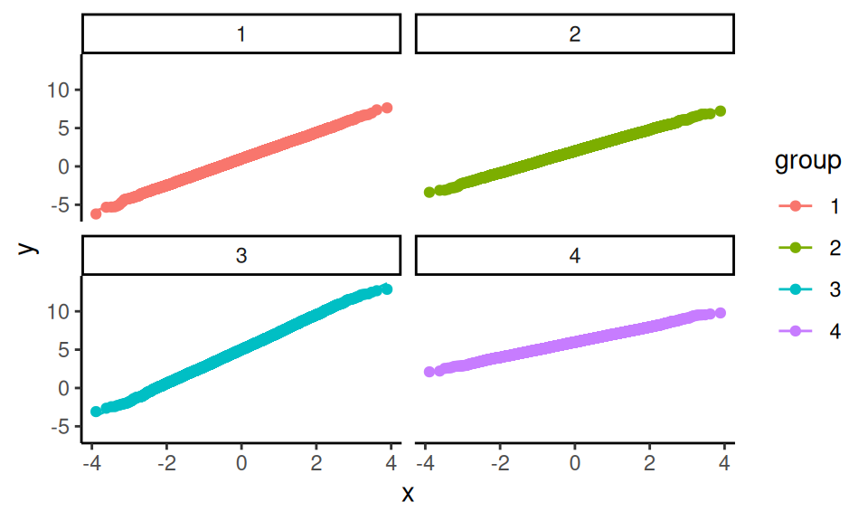 This diagnostic looks good too. Here, these checks may seem a bit silly, but most bugs are silly—at least once you find them! In models that are even a little bit more complex, it is quite easy for small things such as a sign error to slip into your code. Even simple checks such as these can be quite helpful in catching such bugs.
6.6 Example: Simulating clustered data
Writing code for a complicated DGP can feel like a daunting task, but if you first focus on a recipe for how the data is generated, it is often not too bad to then convert that recipe into code. We now illustrate this process with a detailed case study involving a more complex data-generating process Recent literature on multisite trials (where, for example, students are randomized to treatment or control within each of a series of sites) has explored how variation in the strength of effects across sites can affect how different data-analysis procedures behave (e.g., Miratrix, Weiss, and Henderson 2021; Bloom et al. 2016). In this example, we are going to extend this work to explore best practices for estimating treatment effects in cluster randomized trials. In particular, we will investigate what happens when the treatment impact for each school is related to the size of the school.
6.6.1 A design decision: What do we want to manipulate?
In designing a simulation study, we need to find a DGP that will allow us to address the specific questions we are interested in investigating. For instance, in the one-way ANOVA example, we wanted to see how different degrees of within-group variation impacted the performance of several hypothesis-testing procedures. We therefore needed a data generation process that allowed us to control the extent of within-group variation.
To figure out what DGP to use for simulating data from a cluster-randomized trial, we need to consider how we are going to use those data in our simulation study. Because we are interested in understanding what happens when school-specific effects are related to school size, we will need data with the following features:
- observations for students in each of several schools;
- schools are different sizes and have different mean outcomes;
- school-specific treatment effects correlate with school size; and
- schools are assigned to different treatment conditions.
A given dataset will consist of observations for individual students in schools, with each student having a school id, a treatment assignment (shared for all in the school), and an outcome. A good starting point for building a DGP is to first sketch out what a simulated dataset should look like. For this example, we need data like the following:
| schoolID | Z | size | studentID | Y |
|---|---|---|---|---|
| 1 | 1 | 24 | 1 | 3.6 |
| 1 | 1 | 24 | 3 | 1.0 |
| 1 | etc | etc | etc | etc |
| 1 | 1 | 24 | 24 | 2.0 |
| 2 | 0 | 32 | 1 | 0.5 |
| 2 | 0 | 32 | 2 | 1.5 |
| 2 | 0 | 32 | 3 | 1.2 |
| etc | etc | etc | etc | etc |
When running simulations, it is good practice to look at simple scenarios along with complex ones. This lets us not only identify conditions where some aspect of the DGP is important, but also verify that the feature does not matter under scenarios where we know it should not. Given this principle, we land on the following points:
- We need a DGP that lets us generate schools that are all the same size or that are all different sizes.
- Our DGP should allow for variation in the school-specific treatment effects.
- We should have the option to generate school-specific effects that are related or unrelated to school size.
6.6.2 A model for a cluster RCT
DGPs are expressed and communicated using mathematical models. In developing a DGP, we often start by considering the model for the outcomes (along with its focal parameters), which covers some but not all of the steps in the full recipe for generating data. It is helpful to write down the equations for the outcome model and then note what further quantities need to be generated (such as structural features and covariates). Then we can consider how to generate these quantities with auxiliary models.
Section @ref(CRT-example) introduced a basic HLM for a cluster-randomized trial. This model had two parts, starting with a model for our student outcome: \[ Y_{ij} = \beta_{0j} + \epsilon_{ij} \mbox{ with } \epsilon_{ij} \sim N( 0, \sigma^2_\epsilon ) \] where \(Y_{ij}\) is the outcome for student \(i\) in site \(j\), \(\beta_{0j}\) is the average outcome in site \(j\), and \(\epsilon_{ij}\) is the residual error for student \(i\) in site \(j\). The model was completed by specifying how the site-specific outcomes vary as a function of treatment assignment: \[ \beta_{0j} = \gamma_{0} + \gamma_{1} Z_j + u_j, \quad u_j \sim N( 0, \sigma^2_u ).\] This model has a constant treatment effect: if a school is assigned to treatment, then all outcomes in the cluster are raised by the amount \(\gamma_{1}\). But we also want to allow the size of impact to vary by school size. This suggests we will need to elaborate the model to include a treatment-by-size interaction term.
One approach for allowing the school-specific impacts to depend on school size is to introduce school size as a predictor, as in \[ \beta_{0j} = \gamma_{0} + \gamma_{1} Z_j + \gamma_{2} \left(Z_j \times n_j\right) + u_j. \] A drawback of this approach is that changing the average size of the schools will change the average treatment impact. A more interpretable approach is to allow treatment effects to depend on the relative school sizes. To do this, we can define a covariate that describes the deviation in the school size relative to the average size. Thus, let \[ S_j = \frac{n_j - \bar{n}}{ \bar{n} }, \] where \(\bar{n}\) is the overall average school size. Using this covariate, we then revise our equation for our site \(j\) to: \[ \beta_{0j} = \gamma_{0} + \gamma_{1} Z_j + \gamma_{2} \left( Z_j \times S_j\right) + u_j. \] If \(\gamma_{2}\) is positive, then bigger schools will have larger treatment impacts. Because \(S_j\) is centered at 0, the overall average impact across schools will be simply \(\gamma_{1}\). (If \(S_j\) was not centered at zero, then the overall average impact would be some function of \(\gamma_{1}\) and \(\gamma_{2}\).)
Putting all of the above together, we now have an HLM to describe the distribution of outcomes conditional on the covariates and structural features: \[ \begin{aligned} Y_{ij} &= \beta_{0j} + \epsilon_{ij} \quad &\epsilon_{ij} &\sim N( 0, \sigma^2_\epsilon ) \\ \beta_{0j} &= \gamma_{0} + \gamma_{1} Z_j + \gamma_{2} Z_j S_j + u_j \quad & u_j &\sim N( 0, \sigma^2_u ) \end{aligned} \] Substituting the second equation into the first leads to a single equation for generating the student-level outcomes (or what is called the reduced form of the HLM): \[ Y_{ij} = \gamma_{0} + \gamma_{1} Z_j + \gamma_{2} Z_j S_j + u_j + \epsilon_{ij}\] The parameters of this focal model are the mean outcome among control schools (\(\gamma_{0}\)), the average treatment impact (\(\gamma_{1}\)), the site-size by treatment interaction term (\(\gamma_{2}\)), the amount of school-level variation (\(\sigma^2_u\)), and the amount of within-school variation (\(\sigma^2_\epsilon\)).
There are several ways that we could elaborate this model further. For one, we might want to include a main effect for \(S_j\), so that average outcomes in the absence of treatment are also dependent on school size. For another, we might revise the model to allow for school-to-school variation in treatment impacts that is not explained by school size. For simplicity, we do not build in these further features, but see the exercises at the end of the chapter.
So far we have a mathematical model analogous to what we would write if we were analyzing the data. To generate data, we also need a way to generate the structural features and covariates involved in the model. First, we need to know the number of clusters (\(J\)) and the sizes of the clusters (\(n_j\), for \(j = 1, ..., J\)). For illustrative purposes, we will generate size sizes from a uniform distribution with average school size \(\bar{n}\) and a fixed parameter \(\alpha\) that controls the degree of variation in school size. Mathematically, \[ n_j \sim \text{Unif}\left[ (1-\alpha)\bar{n}, (1+\alpha)\bar{n} \right].\] Equivalently, we could generate site sizes by taking \[n_j = \bar{n}(1 + \alpha U_j), \quad U_j \sim unif(-1, 1).\] For instance, if \(\bar{n} = 100\) and \(\alpha = 0.25\) then schools would range in size from 75 to 125. This specification is nice because it is simple, with just two parameters, both of which are easy to interpret: \(\bar{n}\) is the average school size and \(\alpha\) is the degree of variation in school size.
To round out the model, we also need to define how to generate the treatment indicator, \(Z_j\). To allow for different treatment allocations, we will specify a proportion \(p\) of clusters assigned to treatment. Because we are simulating a cluster-randomized trial, we do this by drawing a simple random sample (without replacement) of \(p \times J\) schools out of the total sample of \(J\) schools, then setting \(Z_j = 1\) for these schools and \(Z_j = 0\) for the remaining schools. We will denote this process as \(Z_1,...,Z_J \sim SRS(p, J)\), where SRS stands for simple random sample.
Now that we have an auxiliary model for school sizes, let us look again at our treatment impact heterogeneity term: \[ \gamma_{2} Z_j S_j = \gamma_{2} Z_j \left(\frac{n_j - \bar{n}}{\bar{n}}\right) = \gamma_{2} \alpha Z_j U_j, \] where \(U_j \sim \text{Unif}(-1,1)\) is the uniform variable used to generate \(n_j\). Because we have standardized by average school size, the importance of the covariate does not change as a function of average school size, but rather as a function of the relative variation parameter \(\alpha\). Setting up a DGP with standardized quantities will make it easier to interpret simulation results, especially if we are looking at results from multiple scenarios with different parameter values. To the extent feasible, we want the parameters of the DGP to change only one feature of the data, so that it is easier to isolate the influence of each parameter.
6.6.3 From equations to code
When sketching out the equations for the DGP, we worked from the lowest level of the model (the students) to the higher level (schools) and then to the auxiliary models for covariates and structural features. For writing code to based on the DGP, we will proceed in the opposite direction, from auxiliary to focal and from the highest level to the lowest. First, we will generate the sites and their features:
- Generate school sizes
- Generate school-level covariates
- Generate school-level random effects
Then we will generate the students inside the sites:
- Generate student residuals
- Add everything up to generate student outcomes
The mathematical model gives us the details we need to execute with each of these steps.
Here is the skeleton of a DGP function with arguments for each of the parameters we might want to control, including defaults for each (see @ref(default-arguments) for more on function defaults):
gen_cluster_RCT <- function(
J = 30,
n_bar = 10,
alpha = 0,
p = 0.5,
gamma_0 = 0, gamma_1 = 0, gamma_2 = 0,
sigma2_u = 0, sigma2_e = 1
) {
# generate schools sizes
# Code (see below) goes here
}Note that the inputs to this function are a mix of model parameters (gamma_0, gamma_1, gamma_2, representing coefficients in regressions), auxilary parameters (sigma2_u, sigma2_e, alpha, n_bar), and design parameters (J, p) that directly inform data generation.
We set default arguments (e.g., gamma_0=0) so that we can ignore aspects of the DGP that we do not care about for the moment.
Inside the model, we will have a block of code to generate the variables pertaining to schools, and then another to generate the variables pertaining to students.
We first make the schools:
n_min <- round( n_bar * (1 - alpha) )
n_max <- round( n_bar * (1 + alpha) )
nj <- sample( n_min:n_max, J, replace = TRUE )
# Generate average control outcome for all schools
# (the random effects)
u0j <- rnorm( J, mean = 0, sd = sqrt(sigma2_u) )
# randomize schools (proportion p to treatment)
Zj <- ifelse( sample( 1:J ) <= J * p, 1, 0)
# Calculate schools intercepts
S_j <- (nj - n_bar) / n_bar
beta_0j <- gamma_0 + gamma_1 * Zj + gamma_2 * Zj * S_j + u0jThe code is a literal translation of the math we did before.
Note the line with sample(1:J) <= J*p; this is a simple trick to generate a 0/1 indicator for control and treatment conditions.
There is also a serious error in the above code (serious in that the code will run and look fine in many cases, but not always do what we want); we leave it as an exercise (see below) to find and fix it.
Next, we use the site characteristics to generate the individual-level variables:
# Make individual site membership
sid <- as.factor( rep( 1:J, nj ) )
# Generate the individual-level errors and outcome
N <- sum( nj )
e <- rnorm( N, mean = 0, sd = sqrt(sigma2_e) )
Y <- beta_0j[sid] + e
# Bundle into a dataset
dd <- data.frame(
sid = sid,
Z = Zj[ sid ],
Yobs = Y
)A key piece here is the rep() function that takes a list and repeats each element of the list a specified number of times.
In particular, rep() repeats each number (\(1, 2, \ldots, J\)), the corresponding number of times as listed in nj.
Putting the code above into the function skeleton will produce a complete DGP function (view the complete function here).
We can then call the function as so:
dat <- gen_cluster_RCT(
J=3, n_bar = 5, alpha = 0.5, p = 0.5,
gamma_0 = 0, gamma_1 = 0.2, gamma_2 = 0.2,
sigma2_u = 0.4, sigma2_e = 1
)
dat## sid Z Yobs
## 1 1 1 2.3263686
## 2 1 1 2.0202277
## 3 1 1 3.5850632
## 4 1 1 0.9581332
## 5 1 1 2.6183761
## 6 1 1 0.3198559
## 7 2 0 -2.2305376
## 8 2 0 1.0479261
## 9 2 0 -0.6256389
## 10 2 0 1.0891353
## 11 2 0 -0.6051252
## 12 2 0 -0.3099363
## 13 2 0 -0.9828624
## 14 2 0 -0.5571326
## 15 3 0 0.1203995
## 16 3 0 1.7086978
## 17 3 0 0.1213685With this function, we can control the average size of the clusters (n), the number of clusters (J), the proportion treated (p), the average outcome in the control group (gamma_0), the average treatment effect (gamma_1), the site size by treatment interaction (gamma_2), the amount of cross site variation (sigma2_u), the residual variation (sigma2_e), and the amount of site size variation (alpha).
The next step is to test the code, making sure it is doing what we think it is.
In fact, it is not–there is a subtle bug that only appears under some specifications of the parameters; see the exercises for more on diagnosing and repairing this error.
6.6.4 Standardization in the DGP
One difficulty with the current implementation of the model is that the magnitude of the different parameters are inter-connected. For instance, raising or lowering the within-school variance (\(\sigma^2_u\)) will increase the overall variation in \(Y\), and therefore affect our the interpretation of the treatment effect parameters, because a given value of \(\gamma_{1}\) will be less consequential if there is more overall variation. We can fix this issue by standardizing the model parameters. Standardization will allow us to reduce the set of parameters we might want to manipulate and will ensure that varying the remaining parameters only affects one aspect of the DGP.
For a continuous, normally distributed outcome variable, a common approach to scaling is to constrain the overall variance of the outcome to a fixed value, such as 1 or 100. The magnitude of the other parameters of the model can then be interpreted relative to this scale. Often, we can also constrain the mean of the outcome to a fixed value, such as setting \(\gamma_0 = 0\) without affecting the interpretation of the other parameters.
With the current model, the variance of the outcome across students in the control condition is \[ \begin{aligned} \text{Var}( Y_{ij} | Z_j = 0) &= \text{Var}( \beta_{0j} + \epsilon_{ij} | Z_j = 0) \\ &= \text{Var}( \gamma_{0} + \gamma_{1} Z_j + \gamma_{2} Z_j S_j + u_j + \epsilon_{ij} | Z_j = 0) \\ &= \text{Var}( \gamma_{0} + u_j + \epsilon_{ij} ) \\ &= \sigma^2_u + \sigma^2_\epsilon. \end{aligned} \] To ensure that the total variance is held constant, we can redefine the variance parameters in terms of the intra-class correlation (ICC). The ICC is defined as \[ ICC = \frac{ \sigma^2_u }{ \sigma^2_u + \sigma^2_\epsilon }.\] The ICC measures the degree of between-group variation as a proportion of the total variation of the outcome. It plays an important role in power calculations for cluster-randomized trials. If we want the total variance of the outcome to be 1, we need to set \(\sigma^2_u + \sigma^2_{\epsilon} = 1\), which the implies that \(ICC = \sigma^2_u\), and \(\sigma^2_\epsilon = 1 - ICC\). Thus, we can call our DGP function as follows:
ICC <- 0.3
dat <- gen_cluster_RCT(
J = 30, n_bar = 20, alpha = 0.5, p = 0.5,
gamma_0 = 0, gamma_1 = 0.3, gamma_2 = 0.2,
sigma2_u = ICC, sigma2_e = 1 - ICC
)Manipulating the ICC rather than separately manipulating \(\sigma^2_u\) and \(\sigma^2_\epsilon\) will let us change the degree of between-group variation without affecting the overall scale of the outcome.
A further consequence of setting the overall scale of the outcome to 1 is that the parameters controlling the treatment impact can now be interpreted as standardized mean difference effect sizes. The standardized mean difference for a treatment impact is defined as the average impact over the standard deviation of the outcome among control observations.11 Letting \(\delta\) denote the standardized mean difference parameter, \[ \delta = \frac{E(Y | Z_j = 1) - E(Y | Z_j = 0)}{SD( Y | Z_j = 0 )} = \frac{\gamma_1}{\sqrt{ \sigma^2_u + \sigma^2_\epsilon } } \] Because we have constrained the total variance, \(\gamma_1\) is equivalent to \(\delta\). This equivalence holds for any value of \(\gamma_0\), so we do not have to worry about manipulating \(\gamma_0\) in the simulations—we can simply leave it at its default value.
6.7 Sometimes a DGP is all you need
We have introduced the data-generating process as only the first step in developing a simulation study. Indeed, there are many more considerations to come, which we will describe in subsequent chapters. However, this first step is still very useful in its own right, even apart from the other components of a simulation. Sometimes, a data-generating function is all you need to learn about a statistical model.
Writing data-generating functions is a very effective way to study a statistical model, such as a model that you might be learning about in a course or through self-study. Writing code based on a model is a much more active process than listening to a lecture or reading a book or paper. Coding requires you to make the mathematical notation tangible and can help you to notice details of the model that might be easily missed through listening or reading alone.
Suppose we are taking a first course psychometrics and have just been introduced to item response theory (IRT) models for binary response items. Our instructor has just laid out a bunch of notation:
- We have data from a sample of \(N\) individuals, each of whom responds to a set of \(M\) test items.
- We let \(X_{im} = 1\) if respondent \(i\) answers item \(m\) correctly, with \(X_{im} = 0\) otherwise, for \(i = 1,...,N\) and \(m = 1,...,M\).
- We imagine that each respondent has a latent ability \(\theta_i\) on whatever domain the test measures.
Now our instructor starts dropping models on us, and puts up a slide showing the equation for a three-parameter IRT model: \[ Pr(X_{im} = 1) = \gamma_m + (1 - \gamma_m) g\left( \alpha_m [\theta_i - \beta_m]\right), \] where \(g(x)\) is the cumulative logistic curve: \(g(x) = e^x / (1 + e^x)\). The instructor explains that \(\alpha_m\) is discrimination parameter that can take any real value, \(\beta_m\) is a difficulty parameter that has to be greater than zero, and \(\gamma_m\) is a guessing parameter between 0 and 1. They also explain that the guessing parameter is often hard to estimate and so might get treated as fixed and known, based on the number of response options on the item. For instance, if all the items have four options, then we might take \(\gamma_m = \frac{1}{4}\) for \(m = 1,...,M\). Finally, they explain that the ability parameters are assumed to follow a standard normal distribution, so \(\theta_i \sim N(0, 1)\) in the population.
What is this madness? It certainly is a lot of notation to follow. To make sense of all the moving pieces, let’s try simulating from the model using more-or-less arbitrary parameters. To begin, we will need to pick a test length \(M\) and a sample size \(N\). Let’s use \(N = 7\) participants and \(M = 4\) items for starters:
The \(\theta_i\) distribution seems like the next-simplest part of the model, so let’s generate some ability parameters:
Now we need sets of parameters \(\alpha_m, \beta_m, \gamma_m\) for every item \(m = 1,...,M\). Where do we get these?
For a particular fixed-length test, the set of item parameters would depend on the features of the actual test questions. But we are not (yet) dealing with actual testing data, so we will need to make up an auxiliary model for these parameters. Perhaps we could just simulate some values? Arbitrarily, let’s draw the difficulty parameters from a normal distribution with mean \(\mu_\alpha = 0\) and standard deviation \(\tau_\alpha = 1\). The discrimination parameters have to be greater than zero, and values near \(\beta_m = 1\) make the model simplify (in other words, if \(\beta_1 = 1\) then we can drop the parameter from the model), so let’s draw them from a gamma distribution with mean \(\mu_\beta = 1\) and standard deviation \(\tau_\beta = 0.2\). This decision requires a bit of work: gamma distributions are usually parameterized in terms of shape and rate, not mean and standard deviation. A bit of poking on Wikipedia gives us the answer, however: shape is equal to \(\mu_\beta^2 \tau_\beta^2 = 0.2^2\) and rate is equal to \(\mu_\beta \tau_\beta^2 = 0.2^2\). Finally, we imagine that all the test questions have four possible responses, and therefore set \(\gamma_m = \frac{1}{4}\) for all the items, just like the instructor suggested. Each item requires three numbers; the easiest way to generate them is to let them all be independent of each other, so we do that. With that, let’s make up some item parameters:
alphas <- rnorm(M, mean = 0, sd = 1.5) # difficulty parameters
betas <- rgamma(M, shape = 0.2^2, rate = 0.2^2) # discrimination parameters
gammas <- rep(1 / 4, M) # guessing parametersA three-parameter IRT model describes the probability that a given respondent with ability \(\theta_i\) answers each of the items on the test correctly. To generate data based on the model, we need to produce scores on every item for every respondent, leading to a matrix of \(N\) respondents by \(M\) items. To simplify this calculation, we write a function to compute the item probabilities for a single respondent:
r_scores <- function(theta_i, alphas, betas, gammas, M) {
pi_i <- gammas + (1 - gammas) * plogis(alphas * (theta_i - betas))
scores <- rbinom(M, size = 1, prob = pi_i)
names(scores) <- paste0("q",1:M)
return(scores)
}
r_scores(thetas[1], alphas = alphas, betas = betas,
gammas = gammas, M = M)## q1 q2 q3 q4
## 0 1 0 1The first line of the function calculates the probability of correctly answering all \(M\) items, and stores the result in a vector pi_i.
In the next line, we simulate binary outcomes by flipping coins with the specified vector of probabilities.
Finally, we assign names to each item so that we can keep track of which score is for which item.
Now, using the map() function, we can run the function for every one of our respondents:
## # A tibble: 7 × 4
## q1 q2 q3 q4
## <int> <int> <int> <int>
## 1 0 0 1 0
## 2 1 1 0 0
## 3 1 0 0 0
## 4 1 1 1 1
## 5 0 0 0 1
## 6 1 0 1 1
## 7 0 1 0 0To make it easier to generate datasets with different characteristics, we bundle the above code chunks into a single data-generating function. To do so, we have to decide what the input parameters should be. We know we need to at least specify \(N\) and \(M\). We made assumptions about the item parameters, but we had to specify means and standard deviations for the difficulty and discrimination parameter distributions, so it is natural to allow those to be inputs also. Our data-generating function will then be
r_3PL_IRT <- function(
N, M = 4,
diff_M = 0, diff_SD = 1,
disc_M = 1, disc_SD = 0.2,
item_options = 4
) {
# generate ability parameters
thetas <- rnorm(N)
# generate item parameters
alphas <- rnorm(M, mean = diff_M, sd = diff_SD)
betas <- rgamma(M,
shape = disc_M^2 * disc_SD^2,
rate = disc_M * disc_SD^2)
gammas <- rep(1 / item_options, M)
# simulate item responses
test_scores <- map_dfr(
thetas, .f = r_scores,
alphas = alphas, betas = betas, gammas = gammas, M = M
)
# calculate total score
test_scores$total <- rowSums(test_scores)
return(test_scores)
}
r_3PL_IRT(N = 7, M = 4)## # A tibble: 7 × 5
## q1 q2 q3 q4 total
## <int> <int> <int> <int> <dbl>
## 1 1 1 0 0 2
## 2 1 1 1 1 4
## 3 1 1 1 0 3
## 4 1 1 1 1 4
## 5 1 1 1 0 3
## 6 1 1 1 1 4
## 7 1 1 1 1 4Now let’s look at a much larger sample of participants, with a longer test that includes \(M = 12\) items:
Having written a function for the 3-parameter logistic IRT model makes it easy to explore properties of the model. For instance, we can easily visualize the distribution of the total scores on the test:
ggplot(test_scores, aes(total)) +
geom_bar() +
scale_x_continuous(limits = c(0,12.5), breaks = seq(0,12,2))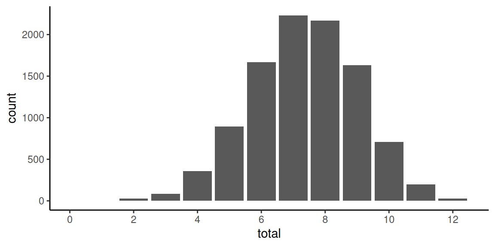
Looking at item variation, we can examine the probability of correctly responding to each of the items by computing sample means for each item:
## # A tibble: 1 × 12
## q1 q2 q3 q4 q5 q6 q7 q8
## <dbl> <dbl> <dbl> <dbl> <dbl> <dbl> <dbl> <dbl>
## 1 0.628 0.62 0.629 0.256 0.539 0.620 0.624 0.620
## # ℹ 4 more variables: q9 <dbl>, q10 <dbl>,
## # q11 <dbl>, q12 <dbl>The percentage of correct responses varies from 25.6% to 63.3. What are the correlations between individual items and the total score? Let’s check:
## # A tibble: 1 × 12
## q1 q2 q3 q4 q5 q6 q7 q8
## <dbl> <dbl> <dbl> <dbl> <dbl> <dbl> <dbl> <dbl>
## 1 0.154 0.386 0.0195 0.227 0.445 0.411 0.386 0.421
## # ℹ 4 more variables: q9 <dbl>, q10 <dbl>,
## # q11 <dbl>, q12 <dbl>Note that simulating a new dataset will produce different results for these summaries because generating each dataset entails sampling a new set of items (with different difficulty and discrimination).
Writing a DGP function makes it possible to study a model through exploration, simply by examining datasets generated by wiggling the model parameters up or down. For instance, we could look at what happens to the distribution of total scores if the items covered a much broader range of difficulties (higher \(\tau_\alpha\)) or are mis-calibrated to be too difficult (\(\mu_\tau > 0\)). What if the items had varying numbers of response options, so the guessing parameters differ? Are there item parameter values that will produce highly unrealistic distributions of total scores? Exercises @ref(IRT-DGP-parameters), @ref(IRT-DGP-checking), and @ref(IRT-DGP-breaking) ask you to further explore these questions.
Overall, implementing the model as a data-generating function has allowed us to explore the model in a more active way than simply reading about it or listening to a lecture. We have a more visceral feel about how the different parameters would create variation in our data—and it would be easy to tweak those parameters to see how things changed to learn even more.
6.8 More to explore
This chapter has introduced the core components of a data-generating process and demonstrated how to move from formulating a full data-generating model to implementing the model in R code. Our main aim has been to provide enough scaffolding for you to get started with simulating from and exploring a variety of models. The exercises below will give you further practice in developing, testing, and extending DGP functions. Of course, we have not covered every consideration and challenge that arises when writing DGPs for simulations—there is much more to explore!
We will cover some further challenges in subsequent chapters. Yet more challenges will surely arise as you apply simulations in your own work. Even though such challenges might not align with the examples or contexts that we have covered here, the concepts and principles that we have introduced should allow you to reason about potential solutions. In doing so, we encourage you adopt the attitude of a chef in a test kitchen by trying out your ideas with code. In the kitchen, there is often no way to know how a dish will turn out until you actually bake it and taste it. Likewise, in developing a DGP, the best way to understand and evaluate a DGP is to write it out in code and explore the datasets that you can produce with it.
6.9 Exercises
6.9.1 The Welch test on a shifted-and-scaled \(t\) distribution
The shifted-and-scaled \(t\)-distribution has parameters \(\mu\) (mean), \(\sigma\) (scale), and \(\nu\) (degrees of freedom). If \(T\) follows a student’s \(t\)-distribution with \(\nu\) degrees of freedom, then \(S = \mu + \sigma T\) follows a shifted-and-scaled \(t\)-distribution.
The following function will generate random draws from this distribution. We additionally scale by \((\nu-2)/\nu\) to achieve the target standard deviation (a \(t\)-distribution has a variance of \(\nu/(\nu-2)\)).
r_tss <- function(n, mean, sd, df) {
mean + sd * sqrt( (df-2)/df ) * rt(n = n, df = df)
}
r_tss(n = 8, mean = 3, sd = 2, df = 5)## [1] 0.02822602 3.87035901 4.51376755
## [4] 3.02447410 -0.26265918 2.29642811
## [7] 1.16346358 7.59634125Modify the Welch simulation’s
simulate_data()function to generate data from shifted-and-scaled \(t\)-distributions rather than from normal distributions. Include the degrees of freedom as an input argument. Simulate a dataset with low degrees of freedom and plot it to see if you see a few outliers.Now generate more data and calculate the means and standard deviations to see if they are correctly calibrated (i.e., generate a big dataset to ensure you get reliable mean and standard deviation estimates). Check
dfequal to 500, 5, 3, and 2.Once you are satisfied you have a correct DGP function, re-run the Type-I error rate calculations from the prior exercises in Section @ref(exAnovaExercises) using a \(t\)-distribution with 5 degrees of freedom. Do the results change substantially?
6.9.2 Plot the bivariate Poisson
In Section @ref(DGP-functions), we provided an example of a DGP function for the bivariate Poisson model. We demonstrated a plot of data simulated from this function in @ref(DGP-plotting). Create a similar plot but for a much larger sample size of \(N = 1000\).
With such a large dataset, it will likely be hard to distinguish individual observations because of over-plotting. Create a better visual representation of the same simulated dataset, such as a heatmap or a contour plot.
6.9.3 Check the bivariate Poisson function
Although we presented a DGP function for the bivariate Poisson model, we have not demonstrated how to check that the function is correct—we’re leaving that to you!
Write some code to verify that the function r_bivariate_Poisson() is working properly.
Do this by generating a very large sample (say \(N = 10^4\) or \(10^5\)) and verifying the following:
- The sample means of \(C_1\) and \(C_2\) align with the specified population means.
- The sample variances of \(C_1\) and \(C_2\) are close to the specified population means (because for a Poisson distribution \(\mathbb{E}(C_p) = \mathbb{V}(C_p)\) for \(p = 1,2\)).
- The sample correlation aligns with the specified population correlation.
- The observed counts \(C_1\) and \(C_2\) follow Poisson distributions.
6.9.4 Add error-catching to the bivariate Poisson function
In Section @ref(DGP-examples), we noted that the bivariate Poisson function as we described it can only produce a constrained range of correlations, which a maximum value that depends on the ratio of \(\mu_1\) to \(\mu_2\). Our current implementation of the model does not handle this aspect of the model very well:
## Warning in rpois(N, lambda = mu1 - EZ3): NAs
## produced## C1 C2
## 1 NA 11
## 2 NA 11
## 3 NA 13
## 4 NA 15
## 5 NA 9For this combination of parameter values, \(\rho \times \sqrt{\mu_1 \mu_2}\) is larger than \(\mu_1\), which leads to simulated values for \(C_1\) that are all missing. That makes it pretty hard to compute the correlation between \(C_1\) and \(C_2\).
Please help us fix this issue! Revise r_bivariate_Poisson() so that it checks for allowable values of \(\rho\). If the user specifies a combination of parameters that does not make sense, make the function throw an error (using R’s stop() function).
6.9.5 A bivariate negative binomial distribution
One potential limitation of the bivariate Poisson distribution described above is that the variances of the counts are necessarily equal to the means (i.e., unit dispersion). This limitation is inherited from the univariate Poisson distributions that each variate follows. Just as with the corresponding univariate distributions, one way to relax this limitation is to consider distributions with marginals that are negative binomial rather than Poisson, thereby allowing for overdispersion. Cho et al. (2023) describes one type of bivariate negative binomial distribution and provides a method for constructing a bivariate negative binomial distribution by using latent, gamma-distributed components. Their algorithm involves first generating components from gamma distributions with specified shape and scale parameters: \[ \begin{aligned} Z_0 &\sim \Gamma\left( \alpha_0, \beta\right) \\ Z_1 &\sim \Gamma\left( \alpha_1, \beta\right) \\ Z_2 &\sim \Gamma\left( \alpha_2, \beta\right) \end{aligned} \] for \(\alpha_0,\alpha_1,\alpha_2 > 0\) and \(\beta > 0\). They then simulate independent Poisson random variables as \[ \begin{aligned} C_1 &\sim Pois\left( Z_0 + Z_1 \right) \\ C_2 &\sim Pois\left( \delta(Z_0 + Z_2) \right). \end{aligned} \] The resulting count variables follow marginal negative binomial distributions with moments \[ \begin{aligned} \mathbb{E}(C_1) &= (\alpha_0 + \alpha_1) \beta & \mathbb{V}(C_1) &= (\alpha_0 + \alpha_1) \beta (\beta + 1) \\ \mathbb{E}(C_2) &= (\alpha_0 + \alpha_2) \beta \delta & \mathbb{V}(C_2) &= (\alpha_0 + \alpha_2) \beta \delta (\beta \delta + 1) \\ & & \text{Cov}(C_1, C_2) &= \alpha_0 \beta^2 \delta. \end{aligned} \] The correlation between \(C_1\) and \(C_2\) is thus \[ \text{cor}(C_1, C_2) = \frac{\alpha_0}{\sqrt{(\alpha_0 + \alpha_1)(\alpha_0 + \alpha_2)}} \frac{\beta \sqrt{\delta}}{\sqrt{(\beta + 1)(\beta \delta + 1)}}. \]
Write a DGP function that implements this distribution.
Write some code to check that the function produces data where each variate follows a negative binomial distribution and where the correlation agrees with the formula given above.
Consider parameter values that produce \(\mathbb{E}(C_1) = \mathbb{E}(C_2) = 10\) and \(\mathbb{V}(C_1) = \mathbb{V}(C_2) = 15\). What are the minimum and maximum possible correlations between \(C_1\) and \(C_2\)?
6.9.6 Another bivariate negative binomial distribution
Another model for generating bivariate counts with negative binomial marginal distributions is by using Gaussian copulas. Here is a mathematical recipe for this distribution, which will produce counts with marginal means \(\mu_1\) and \(\mu_2\) and marginal variances \(\mu_1 + \mu_1^2 / p_1\) and \(\mu_2 + \mu_2^2 / p_2\). Start by generating variates from a bivariate standard normal distribution with correlation \(\rho\):
\[
\left(\begin{array}{c}Z_1 \\ Z_2 \end{array}\right) \sim N\left(\left[\begin{array}{c}0 \\ 0\end{array}\right], \ \left[\begin{array}{cc}1 & \rho \\ \rho & 1\end{array}\right]\right)
\]
Now find \(U_1 = \Phi(Z_1)\) and \(U_1 = \Phi(Z_1)\), where \(\Phi()\) is the standard normal cumulative distribution function (called pnorm() in R).
Then generate the counts by evaluating \(U_1\) and \(U_2\) with the negative binomial quantile function, \(F_{NB}^{-1}(x | \mu, p)\) with mean parameters \(\mu\) and size parameter \(p\) (this function is called qnbinom() in R):
\[
C_1 = F_{NB}^{-1}(U_1 | \mu_1, p_1) \qquad C_2 = F_{NB}^{-1}(U_2 | \mu_2, p_2).
\]
The resulting counts will be correlated, but the correlation will not be equal to \(\rho\).
Write a DGP function that implements this distribution.
Write some code to check that the function produces data where each variate follows a negative binomial distribution
Use the function to create a graph showing the population correlation between the observed counts as a function of \(\rho\). Use \(\mu_1 = \mu_2 = 10\) and \(p_1 = p_2 = 20\). How does the range of correlations compare to the range from Exercise @ref(BVNB1)?
6.9.7 Plot the data from a cluster-randomized trial
Run gen_cluster_RCT() with parameter values of your choice to produce data from a simulated cluster-randomized trial. Create a plot of the data that illustrates how student-level observations are nested within schools and how schools are assigned to different treatment conditions.
6.9.8 Checking the Cluster RCT DGP
What is the variance of the outcomes generated by the model for the cluster-randomized trial if there are no treatment effects? (Try simulating data to check!) What other quick checks can you run on this DGP to make sure it is working correctly?
In
gen_cluster_RCT()we have the following line of code to generate the number of individuals per site.This code has an error. Generate a variety of datasets where you vary
n_min,n_maxandJto discover the error. Then repair the code. Checking your data generating process across a range of scenarios is extremely important.
6.9.9 More school-level variation
The DGP for the cluster-randomized trial allows for school-level treatment impact variation, but only to the extent that the variation is explained by school size. How could you modify your simulation to allow for school-level treatment impact variation that is not related to school size? Implement this change and generate some data to show how it works.
6.9.10 Cluster-randomized trial with baseline predictors
Extend the DGP for the cluster-randomized trial to include an individual-level covariate \(X\) that is correlated with the outcome. Do this by modifying the model for student-level outcomes as \[ Y_{ij} = \beta_{0j} + \beta_{1} X_{ij} + \epsilon_{ij}. \] Keep the same \(\beta_1\) for all sites. To implement this model as a DGP, you will have to decide how to generate \(X_{ij}\).
- Use words and equations to explain your auxiliary model for \(X_{ij}\).
- Implement the model by modifying
gen_cluster_RCT()accordingly. - Use your implementation to find the unconditional variance of the outcome, \(\text{Var}(Y | Z_j = 0)\), when \(\beta_1 = 0.6\).
6.9.11 3-parameter IRT datasets
A challenge that arises with the IRT model described in Section @ref(three-parameter-IRT) is that the data are generated using random parameters (the person ability parameters \(\theta_1,...,\theta_N\) and item characteristics \(\alpha_m, \beta_m, \gamma_m\) for \(m = 1,...,M\)) that we simulated from auxiliary models.
When applying IRT models to actual test data, the analyst’s goal will usually involve estimating at least some of these parameters: either using the model for scoring by estimating latent ability parameters or for calibration by estimating the item characteristics.
But each time we generate a new dataset with r_3PL_IRT(), those latent parameters will change.
In order to understand how well an estimation procedure will perform on data generated by our function, we will need to keep track of the parameter values, even though those values will not be known in real data analysis contexts. Suppose that our main interest is in understanding how well we can recover the item characteristics.
Modify
r_3PL_IRT()to return a list containing two datasets. The first entry in the list should be a dataset with the person-by-item responses, just as in the original function. The second entry in the list should be an \(M \times 3\) dataset containing the item parameters.An alternative strategy for implementing the three-parameter IRT DGP is to write two functions instead of one: a function to simulate a set of \(M\) item parameters and a function to simulate the person-by-item responses. Complete the following function skeletons to implement this strategy. Demonstrate how to use the functions to simulate a dataset.
Describe the benefits and limitations of the two approaches you have implemented.
For your preferred strategy, modify your function(s) to also return the latent person ability parameters.
6.9.12 Check the 3-parameter IRT DGP
For one of the DGPs you wrote in Exercise @ref(IRT-DGP-parameters), write code to check that the function is working properly. What features of the model will you check?
6.9.13 Explore the 3-parameter IRT model
Use the modified DGP function(s) you wrote for Exercise @ref(IRT-DGP-parameters) to explore the model. Simulate data and create visualizations to answer the following questions.
- What happens to the distribution of total scores if the items covered a very broader range of difficulties (higher \(\tau_\alpha\))?
- What happens if the items are mis-calibrated to be too difficult (\(\mu_\tau > 0\))?
- What if the items had varying numbers of response options, so the guessing parameters differ?
- Find at least one combination of parameter values that will produce very extreme or unrealistic distributions of total scores.
6.9.14 Random effects meta-regression
Meta-analysis involves working with quantitative findings reported by previous studies on a particular topic, in the form of effect size estimates and their standard errors, to generate integrative summaries and identify patterns in the findings that might not be evident from any previous study considered in isolation. One model that is widely used in meta-analysis is the random effects meta-regression, which relates the effect sizes to known characteristics of the studies that are encoded in the form of predictors. Consider a collection of \(K\) studies. Let \(T_i\) denote an effect size estimate and \(s_i\) denote its standard error for study \(i\). Let \(x_{i}\) be a quantitative predictor variable that represents some characteristic of study \(i\) (such as its year of publication). The random effects meta-regression model assumes \[ T_i = \beta_0 + \beta_1 x_i + u_i + e_i, \] where \(u_i \sim N(0, \tau^2)\) and \(e_i \sim N(0, s_i^2)\). In this model, \(\beta_0\) corresponds to the expected effect size when \(x_i = 0\) and \(\beta_1\) describes the expected difference in effect size per one unit difference in \(x_i\). The first error \(u_i\) corresponds to the heterogeneity in the effect sizes above and beyond the variation explained by \(x_i\), and the second error \(e_i\) corresponds to the sampling error, which we assume has known variance \(s_i^2\).
Of the variables in the random effects meta-regression model, which are structural features, which are covariates, and which are outcomes? Of the parameters described above, which would you classify as focal, which as auxiliary, and which as design parameters?
In addition to the focal model described above, what further assumptions or auxiliary models will be needed in order to simulate data for a random effects meta-regression? Propose an auxiliary model for any needed quantities.
Using your proposed auxiliary model, write a function to generate data for a random effects meta-regression. Demonstrate your function by creating a plot based on a simulated dataset with \(K = 30\) effect sizes.
Write code to check the properties of your data-generating function.
6.9.15 Meta-regression with selective reporting
Vevea and Hedges (1995) proposed a meta-regression model that allows for the possibility that not all primary study results are published.
They assume that primary study results are generated according to the random effects meta-regression model described in Exercise @ref(meta-regression-DGP), but then only a subset of results are observed, where the probability of being included is a function of the result’s one-sided \(p\)-value for the null hypothesis \(H_0: \delta \leq 0\) against alternative \(H_A: \delta > 0\).
Let \(p_i = 1 - \Phi(T_i / s_i)\) be the one-sided \(p\)-value for study result \(i\), where \(Phi()\) is the standard normal cumulative distribution (pnorm() in R).
In one version of the selection model, the selection probability follows a piece-wise constant distribution with
\[
\text{Pr}(T_i \text{ is observed}) = \begin{cases}
1 & \text{if} \quad 0 \leq p_i < .025 \\
\lambda_1 & \text{if} \quad .025 \leq p_i < .500 \\
\lambda_2 & \text{if} \quad .500 \leq p_i < 1
\end{cases}
\]
for selection probabilities \(0 \leq \lambda_1 \leq 1\) and \(0 \leq \lambda_2 \leq 1\).
Modify your data-generating function from Exercise @ref(meta-regression-DGP) to follow the Vevea-Hedges selection model. Ensure that the new data-generating function returns a total of \(K\) primary study results.
Use the new function to generate a large number of effect size estimates, all with \(s_i = 0.35\), using parameters \(\beta_0 = 0.1\), \(\beta_1 = 0.0\), \(\tau = 0.1\), \(\lambda_1 = 0.5\), and \(\lambda_2 = 0.2\). Plot the distribution of observed effect size estimates.
Create several further plots using different values for \(\lambda_1\) and \(\lambda_2\). How do these parameters affect the shape of the distribution?
Use the
selmodel()function from themetaforpackage to estimate the Vevea-Hedges selection model based on one of your simulated datasets. (See Exercise @ref(Vevea-Hedges-estimation) for example syntax.) How do the estimates compare to the model parameters you’ve specified?
7 Data analysis procedures
The overall aims of many simulation studies have to do with understand how a particular data-analysis procedure works or comparing the performance of multiple, competing procedures. Thus, the data-analysis procedure or procedures are the central object of study. Depending on the research question, the data-analysis procedure might be very simple—as simple as just computing a sample correlation–or it might involve a combination of several components. For example, the procedure might entail first computing a diagnostic test for heteroskedasticity and then, depending on the outcome of the test, applying either a conventional formula or a heteroskedasticity-robust formula for standard errors. As another example, a data-analysis procedure might involve using multiple imputation for missingness on key variables, then fitting a statistical model, and then generating predicted values based on the model. Also depending on the research question, we might need to create several functions that implement different estimation procedures to be compared.
In this chapter, we demonstrate how to implement data-analysis procedures in the form of R functions, which we call estimation functions, so that their performance can eventually be evaluated by repeatedly applying them to artificial data. We start by describing the high-level design of an estimation function, and illustrate with some simple examples. We then discuss approaches for writing simulations that compare multiple data analysis procedures. Next, we describe strategies for validating the coded-up estimation functions before running a full simulation. Finally, we examine methods for handling common computational problems with estimation functions, such as handling non-convergence when using maximum likelihood estimation.
7.1 Writing estimation functions
In the abstract, a function that implements an estimation procedure should have the following form:
The function takes a dataset as input, fits a model or otherwise calculates an estimate, possibly with associated standard errors and so forth, and returns these quantities as output. The estimates could be point estimates of parameters, standard errors, confidence intervals, p-values, predictions, or other quantities. The calculations in the body of the function should be set up to use datasets that have the same structure (i.e., same dimensions, same variable names) as the output of the corresponding function for generating simulated data. However, in principle, we should also be able to run the estimation function on real data as well.
In Chapter @ref(case-ANOVA) we wrote a function called ANOVA_Welch_F() for computing \(p\)-values from two different procedures for testing equality of means in a heteroskedastic ANOVA:
ANOVA_Welch_F <- function(data) {
anova_F <- oneway.test(x ~ group, data = data, var.equal = TRUE)
Welch_F <- oneway.test(x ~ group, data = data, var.equal = FALSE)
result <- tibble(
ANOVA = anova_F$p.value,
Welch = Welch_F$p.value
)
return(result)
}Apply this function to a simulated dataset returns two p-values, one for the usual ANOVA \(F\) test (which assumes homoskedasticity) and one for Welch’s heteroskedastic \(F\) test:
sim_data <- generate_ANOVA_data(
mu = c(1, 2, 5, 6),
sigma_sq = c(3, 2, 5, 1),
sample_size = c(3, 6, 2, 4)
)
ANOVA_Welch_F(sim_data)## # A tibble: 1 × 2
## ANOVA Welch
## <dbl> <dbl>
## 1 0.000293 0.0179Our ANOVA_Welch_F() function is designed to work with the output of generate_ANOVA_data() in that it assumes that the grouping variable is called group and the outcome is called x.
Relying on this assumption would be a poor choice if we were designing a function as part of an R package or for general-purpose use.
However, because the primary use of the function is for simulation, it is reasonable to assume that the input data will always have appropriate variable names.
In Chapter @ref(data-generating-processes), we looked at a data-generating function for a bivariate Poisson distribution, an example of a non-normal bivariate distribution.
We might use such a distribution to understand the behavior of Pearson’s sample correlation coefficient and its normalizing transformation, known as Fisher’s \(z\)-transformation, which is equivalent to the hyperbolic arc-tangent function (atanh() in R).
When the sample measurements follow a bivariate normal distribution, Fisher’s \(z\)-transformed correlation is very close to normally distributed and its standard error is simply \(1 / \sqrt{N - 3}\), and thus independent of the correlation.
This makes \(z\)-transformation very useful for computing confidence intervals, which can then be back-transformed to the Pearson-\(r\) scale.
In this problem, a simple estimation function would take a dataset with two variables as input and compute the sample correlation and its \(z\)-transformation, compute confidence intervals for \(z\), and then back-transform the confidence interval end-points. Here is an implementation of these calculations:
r_and_z <- function(data) {
r <- cor(data$C1, data$C2)
z <- atanh(r)
se_z <- 1 / sqrt(nrow(data) - 3)
ci_z <- z + c(-1, 1) * qnorm(.975) * se_z
ci_r <- tanh(ci_z)
tibble( r = r, z = z, CI_lo = ci_r[1], CI_hi = ci_r[2] )
}To check that the function returns a result of the expected form, we generate a small dataset using the r_bivariate_Poisson() function developed in the last chapter, then apply our estimation function to the result:
## # A tibble: 1 × 4
## r z CI_lo CI_hi
## <dbl> <dbl> <dbl> <dbl>
## 1 0.557 0.628 0.296 0.740Although it is a little cumbersome to do so, we could also apply the estimation function to a real dataset.
Here is an example, which calculates the correlation between ratings of judicial integrity and familiarity with the law from the USJudgeRatings dataset (which is included in base R).
For the function to work on this dataset, we first need to rename the relevant variables.
## # A tibble: 1 × 4
## r z CI_lo CI_hi
## <dbl> <dbl> <dbl> <dbl>
## 1 0.869 1.33 0.769 0.927The function returns a valid result—a quite strong correlation!
It is a good practice to test out a newly-developed estimation function on real data as a check that it is working as intended. This type of test ensures that the estimation function is not using information outside of the dataset, such as by using known parameter values to construct an estimate. Applying the function to a real dataset demonstrates that the function implements a procedure that could actually be applied in real data analysis contexts.
7.2 Including Multiple Data Analysis Procedures
Many simulations involve head-to-head comparisons between more than one data-analysis procedure. As a design principle, we generally recommend writing different functions for each estimation method one is planning on evaluating. Doing so makes it easier to add in additional methods as desired or to focus on just a subset of methods. Writing separate function also leads to a code base that is flexible and useful for other purposes (such as analyzing real data). Finally (repeating one of our favorite mantras), separating functions makes debugging easier because it lets you focus attention on one thing at a time, without worrying about how errors in one area might propagate to others.
To see how this works in practice, we will return to the case study from Section @ref(case-cluster), where we developed a data-generating function for simulating a cluster-randomized trial with student-level outcomes but school-level treatment assignment. Our data-generating process allowed for varying school sizes and heterogeneous treatment effects, which might be correlated with school size. Several different procedures might be used to estimate an overall average effect from a clustered experiment, including:
- Estimating a multi-level regression model (also known as a hierarchical linear model),
- Estimating an ordinary least squares (OLS) regression model and applying cluster-robust standard errors, or
- Averaging the outcomes by school, then estimating a linear regression model on the mean outcomes.
All three of these methods are widely used and have some theoretical guarantees supporting their use. Education researchers tend to be more comfortable using multi-level regression models, whereas economists tend to use OLS with clustered standard errors.
We next develop estimation functions for each of these procedures.
We analyze as we expect would be done in practice; even though we generated data with a school size covariate, we do not include it in our estimation functions.
Each function needs to produce a point estimate, standard error, and \(p\)-value for the average treatment effect.
To have data to practice on, we generate a sample dataset using a revised version of gen_cluster_RCT(), which corrects the bug discussed in Exercise @ref(cluster-RCT-checks):
dat <- gen_cluster_RCT(
J=16, n_bar = 30, alpha = 0.8, p = 0.5,
gamma_0 = 0, gamma_1 = 0.2, gamma_2 = 0.2,
sigma2_u = 0.4, sigma2_e = 0.6
)For the multi-level modeling strategy, there are several different existing packages that we could use.
We will implement an estimator using the popular lme4 package, along with the lmerTest function for computing a \(p\)-value for the average effect.
Here is a basic implementation:
analysis_MLM <- function( dat ) {
M1 <- lme4::lmer( Yobs ~ 1 + Z + (1 | sid), data = dat )
M1_test <- lmerTest::as_lmerModLmerTest(M1)
M1_summary <- summary(M1_test)$coefficients
tibble(
ATE_hat = M1_summary["Z","Estimate"],
SE_hat = M1_summary["Z","Std. Error"],
p_value = M1_summary["Z", "Pr(>|t|)"]
)
}The function fits a multi-level model with a fixed coefficient for the treatment indicator and random intercepts for each school.
To get a p-value for the treatment coefficient, we have to convert the model into an lmerModLmerTest object and then pass it through summary().
The function outputs only the statistics in which we are interested.
Our function makes use of the lme4 and lmerTest packages.
Rather than assuming that these packages will be loaded, we call relevant functions using the package name as a prefix, as in lme4::lmer().
This way, we can run the function even if we have not loaded the packages in the global environment.
This approach is also preferable to loading packages inside the function itself (e.g., with require(lme4)) because calling the function does not change which packages are loaded in the global environment.
Here is a function implementing OLS regression with cluster-robust standard errors:
analysis_OLS <- function( dat, se_type = "CR2" ) {
M2 <- estimatr::lm_robust(
Yobs ~ 1 + Z, data = dat,
clusters = sid, se_type = se_type
)
tibble(
ATE_hat = M2$coefficients[["Z"]],
SE_hat = M2$std.error[["Z"]],
p_value = M2$p.value[["Z"]]
)
}To get cluster-robust standard errors, we use the lm_robust() function from the estimatr() package, again calling only the relevant function using the package prefix rather than loading the whole package.
A novel aspect of this estimation function is that it includes an additional intput argument, se_type, which allows us to control the type of standard error calculated by lm_robust().
Adding this option would let us use the same function to compute (and compare) different types of clustered standard errors for the average treatment effect estimate.
We set a default option of "CR2", just like the default of lm_robust().
Sometimes an analytic procedure involves multiple steps. For example, aggregation estimator first involves collapsing the data to a school-level dataset, and then analyzing at the school level. This is fine: we just wrap all the steps in a single estimation function: from the point of view of using the function, it is a single call, no matter how complicated the process inside. Here is the code for the aggregate-then-analyze approach:
analysis_agg <- function( dat, se_type = "HC2" ) {
datagg <- dplyr::summarise(
dat,
Ybar = mean( Yobs ),
n = n(),
.by = c(sid, Z)
)
stopifnot( nrow( datagg ) == length(unique(dat$sid) ) )
M3 <- estimatr::lm_robust(
Ybar ~ 1 + Z, data = datagg,
se_type = se_type
)
tibble(
ATE_hat = M3$coefficients[["Z"]],
SE_hat = M3$std.error[["Z"]],
p_value = M3$p.value[["Z"]]
)
}Note the stopifnot command: it will throw an error if the condition is not true.
This stopifnot ensures we do not have both treatment and control students within a single school–if we did, we would have more aggregated values than school ids due to the grouping!
Putting assert statements in your code like this is a good way to guarantee you are not introducing weird and hard-to-track errors.
A stopifnot statement halts your code as soon as something goes wrong, rather than letting that initial wrongness flow on to further work, creating odd results that are hard to understand.
Here we are protecting ourselves from strange results if, for example, we messed up our DGP code to have treatment not nested within school, or we were using data that did not actually come from a cluster randomized experiment.
See Section @ref(about-stopifnot) for more.
All of our functions produce output in the same format:
## # A tibble: 1 × 3
## ATE_hat SE_hat p_value
## <dbl> <dbl> <dbl>
## 1 -0.111 0.323 0.737## # A tibble: 1 × 3
## ATE_hat SE_hat p_value
## <dbl> <dbl> <dbl>
## 1 -0.177 0.307 0.576## # A tibble: 1 × 3
## ATE_hat SE_hat p_value
## <dbl> <dbl> <dbl>
## 1 -0.0818 0.339 0.813Ensuring that the output of all the functions is structured in the same way will make it easy to keep the results organized once we start running multiple iterations of the simulation. If each estimation method returns a dataset with the same variables, we can simply stack the results on top of each other. Here is a function that bundles all the estimation procedures together:
estimate_Tx_Fx <- function(
data,
CR_se_type = "CR2", agg_se_type = "HC2"
) {
dplyr::bind_rows(
MLM = analysis_MLM( dat ),
OLS = analysis_OLS( dat, se_type = CR_se_type),
agg = analysis_agg( dat, se_type = agg_se_type),
.id = "estimator"
)
}## # A tibble: 3 × 4
## estimator ATE_hat SE_hat p_value
## <chr> <dbl> <dbl> <dbl>
## 1 MLM -0.111 0.323 0.737
## 2 OLS -0.177 0.307 0.576
## 3 agg -0.0818 0.339 0.813This is a common coding pattern for simulations that involve multiple estimation procedures. Each procedure is expressed in its own function, then these are assembled together in a single function so that they can all easily be applied to the same dataset. Stacking the results row-wise will make it easy to compute performance measures for all methods at once. The benefit of stacking will become even more evident once we are working across multiple replications of the simulation process, as we will in Chapter @ref(running-the-simulation-process).
7.3 Validating an Estimation Function
Just as with data-generating functions, it is critical to verify the accuracy of an implemented estimation function. If an estimation function involves a known procedure that has been implemented in R or one of its contributed packages, then a straightforward way to do this is to compare your implementation to another existing implementation. For estimation functions that involve multi-step procedures or novel methods, other approaches to verification may be needed, which rely more on statistical theory.
7.3.1 Checking against existing implementations
For our Welch test function, we can check the output of ANOVA_Welch_F() against the built-in oneway.test function. Let’s do that with a fresh set of data:
sim_data <- generate_ANOVA_data(
mu = c(1, 2, 5, 6),
sigma_sq = c(3, 2, 5, 1),
sample_size = c(3, 6, 2, 4)
)
aov_results <- oneway.test(x ~ factor(group), data = sim_data,
var.equal = FALSE)
aov_results##
## One-way analysis of means (not assuming
## equal variances)
##
## data: x and factor(group)
## F = 28.367, num df = 3.0000, denom df =
## 3.3253, p-value = 0.007427## [1] TRUEWe use all.equal() because it will check equality up to a tolerance in R, which can avoid some perplexing errors due to rounding.
For the bivariate correlation example, we can check the output of r_and_z() against R’s built-in cor.test() function:
Pois_dat <- r_bivariate_Poisson(15, rho = 0.6, mu1 = 14, mu2 = 8)
my_result <- r_and_z(Pois_dat) |> subset(select = -z)
my_result## # A tibble: 1 × 3
## r CI_lo CI_hi
## <dbl> <dbl> <dbl>
## 1 0.503 -0.0125 0.807R_result <- cor.test(~ C1 + C2, data = Pois_dat)
R_result <- tibble(r = R_result$estimate[["cor"]],
CI_lo = R_result$conf.int[1],
CI_hi = R_result$conf.int[2])
R_result## # A tibble: 1 × 3
## r CI_lo CI_hi
## <dbl> <dbl> <dbl>
## 1 0.503 -0.0125 0.807## [1] TRUEThis type of test is even more useful here because r_and_z() uses our own implementation of the confidence interval calculations, rather than relying on R’s built-in functions as we did with ANOVA_Welch_F().
7.3.2 Checking novel procedures
Simulations are usually an integral part of projects to develop novel statistical methods. Checking estimation functions in such projects presents a challenge: if an estimation procedure truly is new, how do you check that your code is correct? Effective methods for doing so will vary from problem to problem, but an over-arching strategy is to use theoretical results about the performance of the estimator to check that your implementation works as expected. For instance, we might work out the algebraic properties of an estimator for a special case and then check that the result of the estimation function agrees with our algebra. For some estimation problems, we might be able to identify theoretical properties of an estimator when applied to a very large sample of data and when the model is correctly specified. If we can find results about large-sample behavior, then we can test an estimation function by applying it to a very large sample and checking whether the resulting estimates are very close to specified parameter values. We illustrate each of these approaches using our functions for estimating treatment effects from cluster-randomized trials.
We start by testing an algebraic property. With each of the three methods we have implemented, the treatment effect estimator is a difference between the weighted average of the outcomes from students in each treatment condition; the only difference between the estimators is in what weights are used. In the special case where all schools have the same number of students, the weights used by all three methods end up being the same: all three methods allocate equal weight to each school. Therefore, we know that there should be no difference between the three point estimates. Furthermore, a bit of algebra will show that the cluster-robust standard error from the OLS approach will end up being identical to the robust standard error from the aggregation approach. If there are also equal numbers of schools assigned to both conditions, then the standard error from the multilevel model will also be identical to the other standard errors.
Let’s verify that our estimation functions produce results that are consistent with these theoretical properties. To do so, we will need to generate a dataset with equal cluster sizes, setting \(\alpha = 0\):
dat <- gen_cluster_RCT(
J=12, n_bar = 30, alpha = 0, p = 0.5,
gamma_0 = 0, gamma_1 = 0.2, gamma_2 = 0.2,
sigma2_u = 0.4, sigma2_e = 0.6
)
table(dat$sid) # verify equal-sized clusters##
## 1 2 3 4 5 6 7 8 9 10 11 12
## 30 30 30 30 30 30 30 30 30 30 30 30## # A tibble: 3 × 4
## estimator ATE_hat SE_hat p_value
## <chr> <dbl> <dbl> <dbl>
## 1 MLM -0.525 0.366 0.183
## 2 OLS -0.525 0.366 0.183
## 3 agg -0.525 0.366 0.183All three methods yield identical results. Now let’s try equal school sizes but unequal allocation to treatment:
dat <- gen_cluster_RCT(
J=12, n_bar = 30, alpha = 0, p = 2 / 3,
gamma_0 = 0, gamma_1 = 0.2, gamma_2 = 0.2,
sigma2_u = 0.4, sigma2_e = 0.6
)
estimate_Tx_Fx(dat)## # A tibble: 3 × 4
## estimator ATE_hat SE_hat p_value
## <chr> <dbl> <dbl> <dbl>
## 1 MLM 0.189 0.547 0.737
## 2 OLS 0.189 0.413 0.663
## 3 agg 0.189 0.413 0.657As expected, all three point estimators match, but the SE from the multilevel model is a little bit discrepant from the others.
We can also use large-sample theory to check the multilevel modeling estimator.
If the model is correctly specified, then all the parameters of the model should be accurately estimated if the model is fit to a very large sample of data.
To check this property, we will need access to the full model output, not just the selected results returned by analysis_MLM().
One way to handle this is to make a small tweak to the estimation function, adding an option to control whether to return the entire model or just selected results.
Here is the tweaked function:
analysis_MLM <- function( dat, all_results = FALSE) {
M1 <- lme4::lmer( Yobs ~ 1 + Z + (1 | sid), data = dat )
M1_test <- lmerTest::as_lmerModLmerTest(M1)
if (all_results) {
return(summary(M1_test))
}
M1_summary <- summary(M1_test)$coefficients
tibble(
ATE_hat = M1_summary["Z","Estimate"],
SE_hat = M1_summary["Z","Std. Error"],
p_value = M1_summary["Z", "Pr(>|t|)"]
)
}Setting all_results to TRUE will return the entire function; keeping it at the default value of FALSE will return the same output as the other functions.
Now let’s apply the estimation function to a very large dataset, with variation in cluster sizes.
We set gamma_2 = 0 so that the estimation model is correctly specified:
dat <- gen_cluster_RCT(
J=5000, n_bar = 20, alpha = 0.9, p = 2 / 3,
gamma_0 = 2, gamma_1 = 0.30, gamma_2 = 0,
sigma2_u = 0.4, sigma2_e = 0.6
)
analysis_MLM(dat, all_results = TRUE)## Linear mixed model fit by REML. t-tests use
## Satterthwaite's method [lmerModLmerTest]
## Formula: Yobs ~ 1 + Z + (1 | sid)
## Data: dat
##
## REML criterion at convergence: 242678
##
## Scaled residuals:
## Min 1Q Median 3Q Max
## -4.3080 -0.6581 0.0007 0.6594 4.2134
##
## Random effects:
## Groups Name Variance Std.Dev.
## sid (Intercept) 0.3972 0.6302
## Residual 0.6030 0.7765
## Number of obs: 98772, groups: sid, 5000
##
## Fixed effects:
## Estimate Std. Error df
## (Intercept) 2.017e+00 1.636e-02 4.969e+03
## Z 2.838e-01 2.003e-02 4.964e+03
## t value Pr(>|t|)
## (Intercept) 123.29 <2e-16 ***
## Z 14.17 <2e-16 ***
## ---
## Signif. codes:
## 0 '***' 0.001 '**' 0.01 '*' 0.05 '.' 0.1 ' ' 1
##
## Correlation of Fixed Effects:
## (Intr)
## Z -0.817The intercept and treatment effect coefficient estimates are very close to their true parameter values, as are the estimated school-level variance and student-level residual variance.
This all gives some assurance that the analysis_MLM() function is working properly.
Of course, it is important to bear in mind that these tests are only partial verifications.
With the algebraic test, we’ve checked that the functions seem to be working properly for scenarios with equal school sizes, but they still might have errors that only appear when school sizes vary.
Likewise, analysis_MLM() seems to be working properly for very large datasets, but our test does not rule out the possibility of bugs that only crawl out when \(J\) is small.
Our large-sample test also relies on the correctness of the gen_cluster_RCT() function;
if we had seen a discrepancy between parameters and estimates from the multilevel model, it could have been because of a problem with the data-generation function rather than with the estimation function.
These limitations are typical of what can be accomplished through tests based on theoretical results, because theoretical results typically only hold under specific conditions. After all, if we had comprehensive theoretical results, we would not need to simulate anything in the first place! Nonetheless, it is good to work through such tests to the extent that relevant theory is available for the problem you are studying.
7.3.3 Checking with simulations
Checking, debugging, and revising should not be limited to when you are initially developing estimation functions. It often happens that later steps in the process of conducting a simulation will reveal problems with the code for earlier steps. For instance, once you have run the data-generating and estimation steps repeatedly, calculated performance summaries, and created some graphs of the results, you might find an unusual or anomolous pattern in the performance of an estimator. This might be a legitimate result—it might be that the estimator really does behave weirdly or not work well—or it might be due to a problem in how you implemented the estimator or data-generating process. When faced with an unusual pattern, we recommend revisiting the estimation code to double check for bugs and also thinking further about what might lead to the anomoly. Further exploration might lead you to a deeper understanding of how a method works and perhaps even an idea for how to improve the estimator or refine the data-generating process.
A good illustration of this process comes from one of Luke’s past research projects (see Pashley, Keele, and Miratrix (2024)), in which he and other co-authors were working on a way to improve Instrumental Variable (IV) estimation using post-stratification. The method they studied involved grouping units based on a covariate that predicts compliance status, then calculating estimates within each group, then summarizing the estimates across groups. They used simulations to see whether this method would improve the accuracy of the overall summary effect estimate. In the first simulation, the estimates were full of NAs and odd results because the estimation function failed to account for what happens in groups of observations where the number of compliers was estimated to be zero. After repairing that problem and re-running everything, the simulation results still indicated serious and unexpected bias, which turned out to be due to an error in how the estimation function implemented the step of summarizing estimates across groups. After again correcting and re-running, the simulation results showed that the gains in accuracy from this new method were minimal, even when the groups were formed based on a variable that was almost perfectly predictive of compliance status. Eventually, we understood that the groups with very few compliers produced such unstable estimates that they spoiled the overall average estimate. This inspired us to revise our estimation strategy and introduce a method that dropped or down-weighted strata with few compliers, which ultimately helped us to strengthen the contribution of our work.
As this experience highlights, simulations seldom follow a single, well-defined trajectory. The point of conducting simulations is to help us, as researchers, learn about estimation methods so that we can analyze real data better. What we learn from simulation gives us a better understanding of the methods (potentially including a better understanding of theoretical results), leading to ideas about better methods to create new scenarios to explore in further simulations. Of course, at some point one needs to step off this merry-go-round, write up the findings, cook dinner, and clean the bathroom. But, just like many other research endeavors, simulations follow a highly iterative process.
7.4 Handling errors, warnings, and other hiccups
Especially when working with more advanced estimation methods, it is possible that your estimation function will fail, throw an error, or return something uninterpretable for certain input datasets. For instance, maximum likelihood estimation often requires iterative, numerical optimization algorithms that sometimes fail to converge. This might happen rarely enough that it takes a while to even notice that it is a problem, but even quite rare things can occur when you run simulations with many thousands of repetitions. Less dire but still annoying, your estimation function might generate warnings, which can pile up if you are running many repetitions. In some cases, such warnings might also signal that the estimator produced a bad result, and it may not be clear whether we should retain this result (or include it in overall performance assessments). After all, the function tried to warn us that something is off!
Errors and warnings in estimation functions pose two problems, one purely technical and one conceptual. On a technical level, R functions stop running if they hit errors (though not warnings), so we need ways to handle the errors in order to get our simulations up and running. On a conceptual level, we need to decide how to use the information contained in errors and warnings, whether that be by further elaborating the estimation procedures to address different contingencies or by evaluating the performance of the estimators in a way that appropriately accounts for errors. We consider each of the problems here, then revisit the conceptual considerations in Chapter @ref(performance-criteria).
7.4.1 Capturing errors and warnings
Some estimation functions will require complicated or stochastic calculations that can sometimes produce errors.
Intermittent errors can really be annoying and time-consuming if not addressed.
To protect yourself, it is good practice to anticipate potential errors, preventing them from stopping code execution and allowing your simulations to keep running.
We will demonstrate some techniques for error-handling using tools from the purrr package.
For illustrative purposes, consider the following error-prone function that sometimes returns what we want, sometimes returns NaN due to taking the square root of a negative number, and sometimes crashes completely because broken_code() does not exist:
my_complex_function = function( param ) {
vals = rnorm( param, mean = 0.5 )
if ( sum( vals ) > 5 ) {
broken_code( 4 )
} else {
sqrt( sum( vals ) * sign( vals )[[1]] )
}
}Running it produces some results and an occasional warning, and some errors:
## [1] 0.6796568## [1] 2.132087## Warning in sqrt(sum(vals) * sign(vals)[[1]]):
## NaNs produced## [1] NaNRunning it many times produces warnings, then an error:
## Warning in sqrt(sum(vals) * sign(vals)[[1]]):
## NaNs produced
## Warning in sqrt(sum(vals) * sign(vals)[[1]]):
## NaNs produced## Error in broken_code(4): could not find function "broken_code"The purrr package includes a function called safely that makes it easy to trap errors.
To use it, we feed the estimation function into safely() to create a new version:
## $result
## [1] 2.175561
##
## $error
## NULLThe safe version of the function returns a list with two entries: the result (or NULL if there was an error), and the error message (or NULL if there was no error).
safely() is an example of a functional (or an abverb), which takes a function and returns a new function that does something slightly different.
We include otherwise = NA so we always get a result, rather than a NULL when there is an error.
We can use the safe function repeatedly and it will always return a result:
## Warning in sqrt(sum(vals) * sign(vals)[[1]]):
## NaNs produced
## Warning in sqrt(sum(vals) * sign(vals)[[1]]):
## NaNs produced
## Warning in sqrt(sum(vals) * sign(vals)[[1]]):
## NaNs produced
## Warning in sqrt(sum(vals) * sign(vals)[[1]]):
## NaNs produced
## Warning in sqrt(sum(vals) * sign(vals)[[1]]):
## NaNs produced## [1] 1.3870195 0.5638654 NA 1.6995292
## [5] NA NA NaN 2.2121710
## [9] NA NaN NaN 1.8801925
## [13] NaN 1.9154618 NaN NA
## [17] 2.2245636 NA NA 0.8854747The transpose() function takes a list of lists, and reorganizes them to give you a list of all the first elements, a list of all the second elements, etc.
This is very powerful for wrangling data, because then we can make a tibble with list columns as so:
## # A tibble: 4 × 2
## result error
## <dbl> <list>
## 1 1.39 <NULL>
## 2 0.564 <NULL>
## 3 NA <smplErrr>
## 4 1.70 <NULL>The purrr package includes several other functionals that are useful for handling errors and warnings.
The possibly() wrapper will try to run a function and will return a specified value in the event of an error:
## [1] 1.506734## Warning in sqrt(sum(vals) * sign(vals)[[1]]):
## NaNs produced
## Warning in sqrt(sum(vals) * sign(vals)[[1]]):
## NaNs produced
## Warning in sqrt(sum(vals) * sign(vals)[[1]]):
## NaNs produced## [1] NA 0.7023915 0.9495728 NA
## [5] NA 1.8784947 0.9838187 NA
## [9] NA 1.7676572 1.4809897 NA
## [13] 2.1019082 NA NaN NaN
## [17] 1.8629289 1.3467997 NaN 1.3017348It works as a simpler version of safely(), which does not record error messages.
The quietly functional leads to results that are bundled together with any console output, warnings, and messages, rather than printing anything to the console:
## $result
## [1] 0.1724504
##
## $output
## [1] ""
##
## $warnings
## character(0)
##
## $messages
## character(0)This can be especially useful to reduce extraneous printing in a simulation, which can slow down code execution more than you might expect.
However, quietly() does not trap errors:
## Error in broken_code(4): could not find function "broken_code"Double-wrapping your function will handle both errors and warnings, but the structure it produces gets a bit complicated:
my_safe_quiet_function <- quietly( safely( my_complex_function, otherwise = NA ) )
my_safe_quiet_function(7)## $result
## $result$result
## [1] NA
##
## $result$error
## <simpleError in broken_code(4): could not find function "broken_code">
##
##
## $output
## [1] ""
##
## $warnings
## character(0)
##
## $messages
## character(0)Even though the result is a bit of a mess, this structure provides all the pieces that we need to do further calculations on the result (when available), along with errors, warnings, and other output.
To see how this works in practice, we will adapt our analysis_MLM() function, which makes use of lmer() for fitting a multilevel model.
Currently, the estimation function sometimes prints messages to the console:
set.seed(101012) # (I picked this to show a warning.)
dat <- gen_cluster_RCT( J = 50, n_bar = 100, sigma2_u = 0 )
mod <- analysis_MLM(dat)## boundary (singular) fit: see help('isSingular')Wrapping lmer() with quietly() makes it possible to catch such output and store it along with other results, as in the following:
## $result
## Linear mixed model fit by REML ['lmerMod']
## Formula: Yobs ~ 1 + Z + (1 | sid)
## Data: ..2
## REML criterion at convergence: 14026.44
## Random effects:
## Groups Name Std.Dev.
## sid (Intercept) 0.0000
## Residual 0.9828
## Number of obs: 5000, groups: sid, 50
## Fixed Effects:
## (Intercept) Z
## -0.013930 -0.008804
## optimizer (nloptwrap) convergence code: 0 (OK) ; 0 optimizer warnings; 1 lme4 warnings
##
## $output
## [1] ""
##
## $warnings
## character(0)
##
## $messages
## [1] "boundary (singular) fit: see help('isSingular')\n"However, the lmerTest package does not like the structure of the results, and produces an error:
## Error in lmerTest::as_lmerModLmerTest(qmod$result): Unable to extract deviance function from model fitWe can side-step this by combining as_lmerModLmerTest() and lmer() into a single function.
While we are at it, we also layer on summary().
To do so, we use the compose() functional from purrr, which takes a list of functions and wraps them into one:
The resulting lmer_with_test() function acts as if we were calling lmer(), then feeding the result into as_lmerModLmerTest(), then feeding the result into summary().
We then wrap the combination function with safely() and quietly():
Now we can use our suitably quieted and safe function in a new version of the estimation function:
analysis_MLM_safe <- function( dat, all_results = FALSE ) {
M1 <- quiet_safe_lmer( Yobs ~ 1 + Z + (1 | sid), data=dat )
if (all_results) {
return(M1)
}
message <- ifelse( length( M1$message ) > 0, M1$message, NA_character_ )
warning <- ifelse( length( M1$warning ) > 0, M1$warning, NA_character_ )
error <- ifelse( length( M1$result$error) > 0, M1$result$error$message, NA_character_ )
tibble(
ATE_hat = M1$result$result$coefficients["Z","Estimate"],
SE_hat = M1$result$result$coefficients["Z","Std. Error"],
p_value = M1$result$result$coefficients["Z", "Pr(>|t|)"],
message = message,
warning = warning,
error = error
)
}This quiet version runs without extraneous messages:
## # A tibble: 1 × 6
## ATE_hat SE_hat p_value message warning error
## <dbl> <dbl> <dbl> <chr> <chr> <chr>
## 1 -0.00880 0.0278 0.751 "boundary… <NA> <NA>Now we have the estimation results along with any diagnostic information from messages or warnings. Storing this information will let us evaluate what proportion of the time there was a warning or message, run additional analyses on the subset of replications where there was no such warning, or even modify the estimation procedure to take the diagnostics into account.
7.4.2 Adapting estimation procedures for errors and warnings
So far, we have seen techniques for handling technical hiccups that occur when data analysis procedures do not always produce results. But how do we account for the absence of results in a simulation? In Chapter @ref(performance-criteria), we will delve into the conceptual issues with summarizing the performance of methods that do not always provide an answer. One of the best solutions to such problems still concerns the formulation of estimation functions, and so we introduce it here. That solution is to re-define the estimator to include contingencies for handling lack of results.
Consider a data analyst who was planning to apply a fancy statistical model to their data, but then finds that the model does not converge. What would that analyst do in practice (besides cussing and taking a snack break)? Rather than giving up entirely, they would probably think of an alternative analysis and attempt to apply it, perhaps by simplifying the model in some way. To the extent that we can anticipate such possibilities, we can build these error-contingent alternative analyses into our estimation function.
To illustrate, let’s look at an error (a not-particularly-subtle one) that can crop up in the cluster-randomized trial example when clusters are very small:
set.seed(65842)
tiny_dat <- gen_cluster_RCT( J = 10, n_bar = 2, alpha = 0.5)
analysis_MLM_safe(tiny_dat)## # A tibble: 1 × 3
## message warning error
## <chr> <chr> <chr>
## 1 <NA> <NA> number of levels of each groupi…##
## 1 2 3 4 5 6 7 8 9 10
## 1 1 1 1 1 1 1 1 1 1The error occurs because all 10 simulated schools include a single student, making it impossible to estimate a random-intercepts multilevel model. A natural fall-back analysis here would be to estimate an ordinary least squares regression analysis.
Suppose that our imaginary analyst is not especially into nuance, and so will fall back onto ordinary least squares whenever the multilevel model produces an error.
We can express this logic in our estimation function by first catching the error thrown by lmer() and then running an OLS regression in the event an error is thrown:
analysis_MLM_contingent <- function( dat, all_results = FALSE ) {
M1 <- quiet_safe_lmer( Yobs ~ 1 + Z + (1 | sid), data=dat )
if (all_results) {
return(M1)
}
if (!is.null(M1$result$result)) {
# If lmer() returns a result
res <- tibble(
ATE_hat = M1$result$result$coefficients["Z","Estimate"],
SE_hat = M1$result$result$coefficients["Z","Std. Error"],
p_value = M1$result$result$coefficients["Z", "Pr(>|t|)"],
)
} else {
# If lmer() errors, fall back on OLS
M_ols <- summary(lm(Yobs ~ Z, data = dat))
res <- tibble(
ATE_hat = M_ols$coefficients["Z","Estimate"],
SE_hat = M_ols$coefficients["Z", "Std. Error"],
p_value = M_ols$coefficients["Z","Pr(>|t|)"]
)
}
# Store original messages, warnings, errors
res$message <- ifelse( length( M1$message ) > 0, M1$message, NA_character_ )
res$warning <- ifelse( length( M1$warning ) > 0, M1$warning, NA_character_ )
res$error <- ifelse( length( M1$result$error) > 0, M1$result$error$message, NA_character_ )
return(res)
}We still store the messages, warnings, and errors from the initial lmer() fit so that we can keep track of how often errors occur.
The function now returns an treatment effect estimate even if lmer() errors:
## # A tibble: 1 × 6
## ATE_hat SE_hat p_value message warning error
## <dbl> <dbl> <dbl> <chr> <chr> <chr>
## 1 0.400 0.603 0.525 <NA> <NA> number o…Of course, we can easily anticipate the conditions under which this particular error will occur: all we need to do is check whether all the clusters are single observations. Because it is easily anticipated, a better strategy for handling this error is to check before fitting the multilevel model and proceeding accordingly in the event that the clusters are all singletons. Exercise @ref(contingent-estimator-processing) asks you to implement this approach and further refine this contingent analysis strategy.
Adapting estimation functions to address errors can be an effective—and often very interesting—strategy for studying the performance of estimation methods. Rather than studying the performance of a data-analysis method that is only sometimes well-defined, we shift to studying a stylized cognitive model for the analyst’s decision-making process, which handles contingencies that might crop up whether analyzing simulated data or real empirical data. Of course, studying such a model is only interesting to the extent that the decision-making process it implements is a plausible representation of what an analyst might actually do in practice.
The adaptive estimation approach does lead to more complex estimation functions, which entail implementing multiple estimation methods and a set of decision rules for applying them. Often, the set of contingencies that need to be handled will not be immediately obvious, so you may find that you need to build and refine the decision rules as you learn more about how they work. Running an estimation procedure over multiple, simulated datasets is an excellent (if aggravating!) way to identify errors and edge cases. We turn to procedures for doing so in the next chapter.
7.5 Exercises
7.5.1 More Heteroskedastic ANOVA
In the classic simulation by Brown and Forsythe (1974), they not only looked at the performance of the homoskedastic ANOVA-F test and Welch’s heteroskedastic-F test, they also proposed their own new hypothesis testing procedure.
Write a function that implements the Brown-Forsythe F* test (the BFF* test!) as described on p. 130 of Brown and Forsythe (1974), using the following code skeleton:
Run the following code to check that your function produces a result:
Try calling your
BF_Ffunction on a variety of datasets of different sizes and shapes, to make sure it works. What kinds of datasets should you test out?Add the BFF* test into the output of
Welch_ANOVA_F()by calling yourBF_F()function inside the body ofWelch_ANOVA_F().The
onewaytestspackage implements a variety of different hypothesis testing procedures for one-way ANOVA. Validate yourWelch_ANOVA_F()function by comparing the results to the output of the relevant functions fromonewaytests.
7.5.2 Contingent testing
In the one-way ANOVA problem, one approach that an analyst might think to take is to conduct a preliminary significance test for heterogeneity of variances (such as Levene’s test or Bartlett’s test), and then report the \(p\)-value from the homoskedastic ANOVA F test if variance heterogeneity is not detected but the \(p\)-value from the BFF* test if variance heteogeneity is detected.
Modify the Welch_ANOVA_F() function to return the \(p\)-value from this contingent BFF* test in addition to the \(p\)-values from the (non-contingent) ANOVA-F, Welch, and BFF* tests.
Include an input option that allows the user to control the \(\alpha\) level of the preliminary test for heterogeneity of variances, as in the following skeleton.
7.5.3 Check the cluster-RCT functions
Section @ref(multiple-estimation-procedures) presented functions implementing several different strategies for estimating an average treatment effect from a cluster-randomized trial.
Write some code to validate these functions by comparing their output to the results of other tools for doing the same calculation.
Use one or more datasets simulated with gen_cluster_RCT().
For each of these tests, you will need to figure out the appropriate syntax by reading the package documentation.
For
analysis_MLM(), check the output by fitting the same model usinglme()from thenlme()package orglmmTMB()from the package of the same name.For
analysis_OLS(), check the output by fitting the linear model using the base R functionlm(), then computing standard errors usingvcovCL()from thesandwichpackage. Also compare the output to the results of feeding the fitted model throughcoef_test()from theclubSandwichpackage.For
analysis_agg(), check the output by aggregating the data to the school-level, fitting the linear model usinglm(), and computing standard errors usingvcovHC()from thesandwichpackage.
7.5.4 Extending the cluster-RCT functions
Exercise @ref(cluster-RCT-baseline) from Chapter @ref(data-generating-processes) asked you to extend the data-generating function for the cluster-randomized trial to include generating a student-level covariate, \(X\), that is predictive of the outcome. Use your modified function to generate a dataset.
Modify the estimation functions from Section @ref(multiple-estimation-procedures) to use models that include the covariate as a predictor.
Further extend the functions to include an input argument for the set of predictors to be included in the model, as in the following skeleton for the multi-level model estimator:
analysis_MLM <- function(dat, predictors = "Z") { } analysis_MLM( dat ) analysis_MLM( dat, predictors = c("Z","X")) analysis_MLM( dat, predictors = c("Z","X", "X:Z"))Hint: Check out the
reformulate()function, which makes it easy to build formulas for different sets of predictors.
7.5.5 Contingent estimator processing
In Section @ref(adapting-for-errors) we developed a version of analysis_MLM() that fell back on OLS regression in the event that lmer() produced any error.
The implementation that we demonstrated is not especially smart.
For one, it does not anticipate that the error will occur.
For another, if we are using this function as one of several estimation strategies, it will require fitting the OLS regression multiple times.
Can you fix these problems?
Revise
analysis_MLM_contingent()so that it checks whether all clusters are single observations before fitting the multilevel model. Handle event the contingency where all clusters are singletons by skipping the model-fitting step, returningNAvalues for the point estimator, standard error, and p-value, and returning an informative message in theerrorvariable. Test that the function is working as expected.Revise
estimate_Tx_Fx()to use your new version ofanalysis_MLM_contingent(). The revised function will sometimes returnNAvalues for theMLMresults. To implement the strategy of falling-back on OLS regression, add some code that replaces anyNAvalues with corresponding results ofanalysis_OLS(). Test that the function is working as expected.
7.5.6 Estimating 3-parameter item response theory models
Exercise @ref(IRT-DGP-parameters) asked you to write a data-generating function for the 3-parameter IRT model described in described in Section @ref(three-parameter-IRT).
Use your function to generate a large dataset.
Using functions from the {ltm}, {mirt}, or {TAM} packages, estimate the parameters of the 3-parameter IRT model based on the simulated dataset.
Write a function to estimate a 3-parameter IRT model and return a dataset containing estimates of the item characteristics \((\alpha_m,\beta_m, \gamma_m)\).
Add an option to the function to allow the user to specify known values of \(\gamma_m\).
Create a graphic showing how the item parameter estimates compare to the true item characteristics.
Write a function or set of functions to apply 1-parameter, 2-parameter, and 3-parameter models and return datasets containing the person ability estimates \(\theta_1,...,\theta_N\) and corresponding standard errors of measurement.
7.5.7 Meta-regression with selective reporting
Exercise @ref(Vevea-Hedges-DGP) asked you to write a data-generating function for the Vevea and Hedges (1995) selection model.
The {metafor} package includes a function for fitting this model (as well as a variety of other selection models).
Here is an example of the syntax for estimating this model, using a dataset from the {metadat} package:
library(metafor)
data("dat.assink2016", package = "metadat")
# rename variables and tidy up
dat <-
dat.assink2016 %>%
mutate( si = sqrt(vi) ) %>%
rename( Ti = yi, s_sq = vi, Xi = year )
# fit a random effects meta-regression model
rma_fit <- rma.uni(yi = Ti, sei = si, mods = ~ Xi, data = dat)
# fit two-step selection model
selmodel(rma_fit, type = "step", steps = c(.025, .500))##
## Mixed-Effects Model (k = 100; tau^2 estimator: ML)
##
## tau^2 (estimated amount of residual heterogeneity): 0.2314 (SE = 0.0500)
## tau (square root of estimated tau^2 value): 0.4810
##
## Test for Residual Heterogeneity:
## LRT(df = 1) = 349.3718, p-val < .0001
##
## Test of Moderators (coefficient 2):
## QM(df = 1) = 42.1433, p-val < .0001
##
## Model Results:
##
## estimate se zval pval
## intrcpt 0.4149 0.1013 4.0942 <.0001
## Xi -0.0782 0.0120 -6.4918 <.0001
## ci.lb ci.ub
## intrcpt 0.2163 0.6135 ***
## Xi -0.1018 -0.0546 ***
##
## Test for Selection Model Parameters:
## LRT(df = 2) = 1.7814, p-val = 0.4104
##
## Selection Model Results:
##
## k estimate se zval
## 0 < p <= 0.025 59 1.0000 --- ---
## 0.025 < p <= 0.5 23 0.6990 0.2307 -1.3049
## 0.5 < p <= 1 18 0.5027 0.2743 -1.8132
## pval ci.lb ci.ub
## 0 < p <= 0.025 --- --- ---
## 0.025 < p <= 0.5 0.1919 0.2470 1.1511
## 0.5 < p <= 1 0.0698 0.0000 1.0403 .
##
## ---
## Signif. codes: 0 '***' 0.001 '**' 0.01 '*' 0.05 '.' 0.1 ' ' 1The selmodel() function can also be used to fit selection models in which one or both of the selection parameters are fixed to user-specified values.
For example:
# Fixing lambda_1 = 0.5, lambda_2 = 0.2
fix_both <- selmodel(rma_fit, type = "step", steps = c(.025, .500),
delta = c(1, 0.5, 0.2))
# Fixing lambda_1 = 0.5, estimating lambda_2
fix_one <- selmodel(rma_fit, type = "step", steps = c(.025, .500),
delta = c(1, 0.5, NA))Write an estimation function that fits the selection model and returns estimates, standard errors, and confidence intervals for each of the model parameters \((\beta_0,\beta_1,\tau,\lambda_1,\lambda_2)\).
The
selmodel()fitting function sometimes returns errors, as in the following example:dat_sig <- dat %>% filter(Ti / si > 0) rma_pos <- rma.uni(yi = Ti, sei = si, mods = ~ Xi, data = dat_sig) # fit two-step selection model sel_fit <- selmodel(rma_pos, type = "step", steps = c(.025, .500))## Warning: One or more intervals do not contain any ## observed p-values.## Warning: One or more 'delta' estimates are (almost) equal to their lower or upper bound. ## Treat results with caution (or consider adjusting 'delta.min' and/or 'delta.max').Modify your estimation function to catch and return warnings such as these. Write code demonstrating that the function works as expected.
The
selmodel()throws warnings when the dataset contains no observations with \(p_i\) in one of the specified intervals. Modify your estimation function to set the selection probability for an interval to \(\lambda_1 = 0.1\) if there are no \(p_i\) values between .025 and .500 and to set \(\lambda_2 = 0.1\) if there are no \(p_i\) values larger than .500. Write code demonstrating that the function works as expected.
8 Running the Simulation Process
In the prior two chapters we saw how to write functions that generate data according to a particular model and functions that implement data-analysis procedures on the simulated data. The next step in a simulation involves putting these two pieces together, running the DGP function and the data-analysis function repeatedly to obtain results (in the form of point estimates, standard errors, confidence intervals, p-values, or other quantities) from many replications of the whole process.
As with most things R-related, there are many different techniques that can be used to repeat a set of calculations over and over. In this chapter, we will demonstrate several techniques for doing so. We will then explain how to ensure reproducibility of simulation results by setting the seed used by R’s random number generator.
8.1 Repeating oneself
Suppose that we want to simulate Pearson’s correlation coefficient calculated based on a sample from the bivariate Poisson function. We saw a DGP function for the bivariate Poisson in Section @ref(DGP-functions), and an estimation function in Section @ref(estimation-functions). To produce a simulated correlation coefficient, we need to run these two functions in turn:
## # A tibble: 1 × 4
## r z CI_lo CI_hi
## <dbl> <dbl> <dbl> <dbl>
## 1 0.533 0.595 0.214 0.750To execute a simulation with these components, we need to repeat this set of calculations over and over.
R has many different functions for doing exactly this.
As one of many alternatives, the {simhelpers} package includes a function called repeat_and_stack(), which can be used to evaluate an arbitrary expression many times over.
We can use it to generate five replications of our correlation coefficient:
library(simhelpers)
repeat_and_stack(
n = 5,
{
dat <- r_bivariate_Poisson( N = 30, rho = 0.4, mu1 = 8, mu2 = 14 )
r_and_z(dat)
},
id = "rep",
stack = TRUE
)## r z CI_lo CI_hi rep
## 1 0.6406898 0.7593429 0.3645711 0.8132451 1
## 2 0.2165457 0.2200290 -0.1558849 0.5350714 2
## 3 0.5664693 0.6423085 0.2590719 0.7696643 3
## 4 0.4534481 0.4890323 0.1113731 0.6994524 4
## 5 0.5044732 0.5552884 0.1762338 0.7317497 5The first argument specifies the number of times to repeat the calculation.
The second argument is an R expression that will be evaluated.
The expression is wrapped in curly braces ({}) because it involves more than a single line of code.
Including the option id = "rep" returns a dataset that includes a variable called rep to identify each replication of the process.
Setting the option stack = TRUE will stack up the output of each expression into a single tibble, which will facilitate later calculations on the results.
Setting this option is not necessary because it is TRUE by default; setting stack = FALSE will return the results in a list rather than a tibble (try this for yourself to see!).
There are many other functions that work very much like repeat_and_stack(), including the base-R function replicate() and the now-deprecated function rerun() from {purrr}.
The functions in the map() family from {purrr} can also be used to do the same thing as repeat_and_stack().
See Appendix @ref(more-repeating-oneself) for more discussion of these alternatives.
8.2 One run at a time
A slightly different technique for running multiple replications of a process is to first write a function that executes a single run of the simulation, and then repeatedly evaluate that single function. For instance, here is a function that stitches together the two steps in the bivariate-Poisson correlation simulation:
one_bivariate_Poisson_r <- function(N, rho, mu1, mu2) {
dat <- r_bivariate_Poisson( N = N, rho = rho, mu1 = mu1, mu2 = mu2 )
res <- r_and_z(dat)
return(res)
}Calling the function produces a nicely formatted set of results:
## # A tibble: 1 × 4
## r z CI_lo CI_hi
## <dbl> <dbl> <dbl> <dbl>
## 1 0.571 0.650 0.266 0.773We can then evaluate the function over and over using repeat_and_stack():
repeat_and_stack(
n = 5,
one_bivariate_Poisson_r( N = 30, rho = 0.4, mu1 = 8, mu2 = 14 ),
id = "rep"
)## r z CI_lo CI_hi rep
## 1 0.6920971 0.8519697 0.44204893 0.8423369 1
## 2 0.4639223 0.5022978 0.12445393 0.7061652 2
## 3 0.5054484 0.5565974 0.17750188 0.7323572 3
## 4 0.3102351 0.3208056 -0.05632999 0.6030973 4
## 5 0.2699476 0.2768073 -0.10005206 0.5743583 5This technique of wrapping the data-generating function and estimation function inside of another function might strike you as a bit cumbersome because the wrapper is only two lines of code and writing it requires repeating many of the function argument names when calling the data-generating function (N = N, rho = rho, etc.).
However, the wrapper technique can be useful for more complicated simulations, such as those that involve comparison of multiple estimation methods.
Consider the cluster-randomized experiment case study presented in Section @ref(case-cluster) and @ref(multiple-estimation-procedures). In this simulation, we are interested in comparing the performance of three different estimation methods: a multi-level model, a linear regression with clustered standard errors, and a linear regression on the data aggregated to the school level. A single replication of the simulation entails generating a dataset and then apply three different estimation functions to it. Here is a function that takes our simulation parameters and runs a single trial of the full process:
one_run <- function(
n_bar = 30, J = 20, gamma_1 = 0.3, gamma_2 = 0.5,
sigma2_u = 0.20, sigma2_e = 0.80, alpha = 0.75
) {
dat <- gen_cluster_RCT(
n_bar = n_bar, J = J, gamma_1 = gamma_1, gamma_2 = gamma_2,
sigma2_u = sigma2_u, sigma2_e = sigma2_e, alpha = alpha
)
MLM <- analysis_MLM( dat )
LR <- analysis_OLS( dat )
Agg <- analysis_agg( dat )
bind_rows( MLM = MLM, LR = LR, Agg = Agg, .id = "method" )
}We have added a bunch of defaults to our function, so that we can run it without having to remember all the various input parameters. When we call the function, we get a nicely structured table of results:
## # A tibble: 3 × 4
## method ATE_hat SE_hat p_value
## <chr> <dbl> <dbl> <dbl>
## 1 MLM 0.506 0.255 0.0630
## 2 LR 0.474 0.261 0.0881
## 3 Agg 0.511 0.255 0.0609We organize the output in a tibble to make it easier to do subsequent data processing and analysis.
The results for each method are organized in separate lines.
For each method, we record the impact estimate, its (estimated) standard error, and a nominal \(p\)-value.
Note how the bind_rows() method can take naming on the fly, and give us a column of method, which will be very useful for keeping track of which results come from which estimation.
Once we have a function to execute a single run of the simulation, we can produce multiple results using repeat_and_stack():
R <- 1000
ATE <- 0.30
runs <- repeat_and_stack(R, one_run( n_bar = 30, J=20, gamma_1 = ATE ), id = "runID")
saveRDS( runs, file = "results/cluster_RCT_simulation.rds" )Setting id = "runID" lets us keep track of which iteration number produced which result.
Once our simulation is complete, we save our results to a file for future use.
so that we can avoid having to re-run these calculations each time we want to explore the results.
We now have results for each of our estimation methods applied to each of 1000 generated datasets. The next step is to evaluate how well the estimators did. For example, we will want to examine questions about bias, precision, and accuracy of the point estimators. In Chapter @ref(performance-criteria), we look systematically at ways to quantify the performance of estimation methods.
8.2.1 Reparameterizing
In Section @ref(DGP-standardization), we discussed how to index the DGP of the cluster-randomized experiment using an intra-class correlation (ICC) instead of using two separate variance components.
This type of re-parameterization can be handled as part of writing a wrapper function for executing the DGP and estimation procedures.
Here is a revised version of one_run(), which also renames some of the more obscure model parameters using terms that are easier to interpret:
one_run <- function(
n_bar = 30, J = 20, ATE = 0.3, size_coef = 0.5,
ICC = 0.4, alpha = 0.75
) {
stopifnot( ICC >= 0 && ICC < 1 )
dat <- gen_cluster_RCT(
n_bar = n_bar, J=J, gamma_1 = ATE, gamma_2 = size_coef,
sigma2_u = ICC, sigma2_e = 1-ICC, alpha = alpha
)
MLM = analysis_MLM( dat )
LR = analysis_OLS( dat )
Agg = analysis_agg( dat )
bind_rows( MLM = MLM, LR = LR, Agg = Agg, .id = "method" )
}Note the stopifnot: it is wise to ensure our parameter transforms are all reasonable, so we do not get unexplained errors or strange results later on.
It is best if your code fails as soon as possible! Otherwise debugging can be quite hard.
Controlling how we use the foundational elements such as our data generating code is a key technique for making the higher level simulations sensible and more easily interpretable.
In the revised one_run() function, we transform the ICC input parameter into the parameters used by gen_cluster_RCT() so as to maintain the effect size interpretation of our simulation.
We have not modified gen_cluster_RCT() at all: instead, we specify the parameters of the DGP function in terms of the parameters we want to directly control in the simulation.
Here we have put our entire simulation into effect size units, and are now providing “knobs” to the simulation that are directly interpretable.
8.3 Bundling simulations with {simhelpers}
The techniques that we have demonstrated for repeating a set of calculations each involve a very specific coding pattern, which will often have the same structure even if the details of the data-generating model or the names of the input parameters are very different from the examples we have presented.
The simhelpers package provides a function bundle_sim() that abstracts this common pattern and allows you to automatically stitch together (or “bundle”) a DGP function and an estimation function, so that they can be run once or multiple times.
Thus, bundle_sim() provides a convenient alternative to writing your own one_run() function for each simulation, thereby saving a bit of typing (and avoiding an opportunity for bugs to creep into your code).
bundle_sim() takes a DGP function and an estimation function as inputs and gives us back a new function that will run a simulation using whatever parameters we give it.
Here is a basic example, which creates a function for simulating Pearson correlation coefficients with a bivariate Poisson distribution:
If we specify the optional argument id = "rep", the function will include a variable called rep with a unique identifier for each replication of the simulation process.
We can use the newly created function like so:
## r z CI_lo CI_hi rep
## 1 0.4584003 0.4952841 0.1175430 0.7026316 1
## 2 0.2136916 0.2170364 -0.1588034 0.5329322 2
## 3 0.4675940 0.5069866 0.1290674 0.7085081 3
## 4 0.6562349 0.7861718 0.3876033 0.8221341 4To create this simulation function, bundle_sim() examined r_bivariate_Poisson(), figured out what its input arguments are, and made sure that the simulation function includes the same input arguments.
You can see the full set of arguments for sim_r_Poisson() by evaluating it with args():
## function (reps, N, rho, mu1, mu2, seed = NA_integer_)
## NULLIn addition to the expected arguments from r_bivariate_Poisson(), the function has some additional inputs.
Its first argument is reps, which controls the number of times that the simulation process will be evaluated.
Its last argument is seed, which we will discuss in Section @ref(seeds-and-pseudo-RNGs).
The bundle_sim() function requires specifying a DGP function and a single estimation function, with the data as the first argument. Our cluster-randomized experiment example involved three separate estimation functions, so we first need to write a single function that organizes all of the estimators:
analyze_data = function( dat ) {
MLM = analysis_MLM( dat )
LR = analysis_OLS( dat )
Agg = analysis_agg( dat )
bind_rows( MLM = MLM, LR = LR, Agg = Agg, .id = "method" )
}This is simply the one_run() method from above, but without the data generating part.
When we pass a dataset to it, we get a nice table of results, just as before:
## boundary (singular) fit: see help('isSingular')## # A tibble: 3 × 4
## method ATE_hat SE_hat p_value
## <chr> <dbl> <dbl> <dbl>
## 1 MLM 0.534 0.132 0.0000650
## 2 LR 0.534 0.0844 0.0000660
## 3 Agg 0.261 0.229 0.269We can now use bundle_sim() to create a function for running an entire simulation:
We can call the newly created function like so:
## method ATE_hat SE_hat p_value runID
## 1 MLM -0.2220811 0.2112882 0.3070589 1
## 2 LR -0.3118805 0.2436926 0.2225359 1
## 3 Agg -0.1479897 0.2026064 0.4745281 1
## 4 MLM 0.3036305 0.2248424 0.1956698 2
## 5 LR 0.3277870 0.2147519 0.1523052 2
## 6 Agg 0.3884213 0.2589027 0.1508837 2Note that bundle_sim() produces a function with input names that exactly match the inputs of the DGP function that we give it.
It is not possible to re-parameterize or change argument names, as we did with one_run() in Section @ref(one-run-reparameterization).
See Exercise @ref() for further discussion of this limitation.
To use the simulation function in practice, we call it by specifying the number of replications desired (which we have stored in R) and any relevant input parameters.
runs <- sim_cluster_RCT( R, n_bar = 30, J = 20, gamma_1 = ATE, sigma2_u = 0.3, sigma2_e = 0.7 )
saveRDS( runs, file = "results/cluster_RCT_simulation.rds" )The bundle_sim() function is just a convenient way to create a function that pieces together the steps in the simulation process, which is especially useful when the component functions include many input parameters.
The function has several further features, which we will demonstrate in subsequent chapters.
8.4 Seeds and pseudo-random number generators
In prior chapters, we have used built-in functions to generate random numbers and also written our own data-generating functions that produce artificial data following a specific random process.
With either type of function, re-running it with the exact same input parameters will produce different results.
For instance, running the rchisq function with the same set of inputs will produce two different sequences of \(\chi^2\) random variables:
## [,1] [,2] [,3] [,4]
## c1 0.8928948 4.685652 1.94097 5.593987
## c2 0.9632513 2.454760 2.48962 1.463933If you run the same code as above, you will get different results from these.
Likewise, running the bivariate Poisson function from Section @ref(DGP-functions) or the sim_r_Poisson() function from Section @ref(bundle-sim-demo) multiple times will produce different datasets:
dat_A <- r_bivariate_Poisson(20, rho = 0.5, mu1 = 4, mu2 = 7)
dat_B <- r_bivariate_Poisson(20, rho = 0.5, mu1 = 4, mu2 = 7)
identical(dat_A, dat_B)## [1] FALSEsim_A <- sim_r_Poisson( 10, N = 30, rho = 0.4, mu1 = 8, mu2 = 14)
sim_B <- sim_r_Poisson( 10, N = 30, rho = 0.4, mu1 = 8, mu2 = 14)
identical(sim_A, sim_B)## [1] FALSEOf course, this is the intended behavior of these functions, but it has an important consequence that needs some care and attention.
Using functions like rchisq(), r_bivariate_Poisson(), or r_bivariate_Poisson() in a simulation study means that the results will not be fully reproducible.
When using DGP functions for simulations, it is useful to be able to exactly control the process of generating random numbers. This is much more feasible than it sounds: Monte Carlo simulations are random, at least in theory, but computers are deterministic. When we use R to generate what we have been referring to as “random numbers,” the functions produce what are actually pseudo-random numbers. Pseudo-random numbers are generated from chains of mathematical equations designed to produce sequences of numbers that appear random, but actually follow a deterministic sequence. Each subsequent random number is a calculated by starting from the previously generated value (i.e., the current state of the random number generator), applying a complicated function, and storing the result (i.e., updating the state). The numbers returned by the generator form a chain that, ideally, cycles through an extremely long list of values in a way that looks stochastic and unpredictable.
The state of the pseudo-random number generator is shared across different functions that produce pseudo-random numbers, so it does not matter if we are generating numbers with rnorm() or rchisq() or r_bivariate_Poisson().
Each time we ask for a random number from the generator, its state is updated.
Functions like rnorm() and rchisq() all call the low-level generator and then transform the result to be of the correct distribution.
Because the generator is actually deterministic, we can control its output by specify a starting value or initial state,
In R, the state of the random number generator can be controlled by setting what its known as the seed.
The set.seed() function allows us to specify a seed value, so that we can exactly reproduce a calculation.
For example,
## [,1] [,2] [,3] [,4]
## c1 2.575556 0.93847 8.062264 3.685932
## c2 2.575556 0.93847 8.062264 3.685932Similarly, we can set the seed and run a series of calculations involving multiple functions that make use of the random number generator:
# First time
set.seed(6)
c1 <- rchisq(4, df = 3)
dat_A <- r_bivariate_Poisson(20, rho = 0.5, mu1 = 4, mu2 = 7)
# Exactly reproduce the calculations
set.seed(6)
c2 <- rchisq(4, df = 3)
dat_B <- r_bivariate_Poisson(20, rho = 0.5, mu1 = 4, mu2 = 7)
bind_rows(A = r_and_z(dat_A), B = r_and_z(dat_B), .id = "Rep")## # A tibble: 2 × 5
## Rep r z CI_lo CI_hi
## <chr> <dbl> <dbl> <dbl> <dbl>
## 1 A 0.299 0.308 -0.165 0.655
## 2 B 0.299 0.308 -0.165 0.655The bundle_sim() function demonstrated in Section @ref(bundle-sim-demo) creates a function for repeating the process of generating and analyzing data.
By default, the function it produces includes an argument seed, which allows the user to set a seed value before repeatedly evaluating the DGP function and estimation function.
By default, the seed argument is NULL and so the current seed is not modified.
Specifying an integer-valued seed will make the results exactly reproducible:
sim_A <- sim_r_Poisson( 10, N = 30, rho = 0.4, mu1 = 8, mu2 = 14, seed = 25)
sim_B <- sim_r_Poisson( 10, N = 30, rho = 0.4, mu1 = 8, mu2 = 14, seed = 25)
identical(sim_A, sim_B)## [1] TRUEIn practice, it is a good idea to always set seed values for your simulations, so that you (or someone else) can exactly reproduce the results. Attending to reproducibility allows us to easily check if we are running the same code that generated a set of results. For instance, try running the previous blocks of code on your machine; if you set the seed to the same value as we did, you should get identical output.
Setting seeds is also very helpful for debugging. Suppose we had an error that showed up in one of a thousand replications, causing the simulation to crash sometimes. If we set a seed and find that the code crashes, we can debug and then rerun the simulation. If it now runs without error, we know we fixed the problem. If we had not set the seed, we would not know if we were just getting (un)lucky, and avoiding the error by chance.
8.5 Exercises
8.5.1 Welch simulations
In the prior chapter’s exercises, you made a new BF_F function for the Welch simulation. Now incorporate the BF_F function into the one_run() function, and use your revised function to generate simulation results for this additional estimator.
8.5.2 Compare sampling distributions of Pearson’s correlation coefficients
Use
sim_r_Poisson()to generate 5000 replications of the Fisher-z-transformed correlation coefficient under a bivariate Poisson distribution for a sample of \(N = 40\) observations, with \(\rho = 0.7\) and your own choice for the remaining parameters.Create a bundled simulation function by combining the data-generating function from Exercise @ref(BVNB1) or @ref(BVNB2) with the
r_and_z()estimation function. Run the function to generate 5000 replications of the Fisher-z-transformed correlation coefficient under a bivariate negative binomial distribution, with the same parameter values as above.Create a plot that shows both sampling distributions, making it easy to compare the distributions.
8.5.3 Reparameterization, redux
In Section @ref(one-run-reparameterization), we illustrated how the one_run() simulation wrapper function could be tweaked in order to reparameterize the model in terms of a single intra-class correlation rather than two variance parameters.
But what if you want to avoid having to write your own simulation wrapper and instead use bundle_sim()?
Revise gen_cluster_RCT() to accomplish the reparameterization, then bundle it with analyze_data().
8.5.4 Fancy clustered RCT simulations
In Exercise @ref(cluster-RCT-baseline), your task was to write a data-generating function for a cluster-randomized trial that includes a baseline covariate. Then in Exercise @ref(CRT-ANCOVA-estimators), your task was to create an estimation function that could be applied to data from such a trial.
Now, using your work from these exercises, create a bundled simulation function that combines the data-generating function and the estimation function. Ensure that the estimation function returns average treatment effect estimates both with and without controlling for the baseline covariate.
Use the resulting function to simulate results from 1000 replications of a cluster-randomized trial, each analyzed two ways (with and without covariate adjustment).
Create a plot that shows the sampling distribution of each average treatment effect estimator and makes it easy to compare the distributions.
9 Performance criteria
Once we have run our simulation, we have a pile of results to sort through. Given these results, the question is now: how do we assess how well our evaluated analysis procedures worked? In this chapter, we look at a variety of performance criteria that can answer this question. Once we have a set performance criteria, we can also compare multiple estimators to each other by seeing which have better performance.
Performance criteria are generally assessments of how an analytic strategy behaves on average if you repeat the experimental process an infinite number of times. For example, the bias of an estimator in a given scenario is how far off, on average, the estimator would be from the true parameter value if you repeated the experiment an infinite number of times.
Although we cannot generally work out the exact performance of our analysis procedure in full mathematical detail, our set of simulation results do constitute a (typically large) sample of how well things will tend to worked out given the specified scenario. We can then use that sample to estimate the performance criteria of interest. For example, when we wanted to know what percent of the time we would reject the null hypothesis (for a given, specified situation) we estimated that by seeing how often we rejected in 1000 trials.
Now, because we have only a sample of trials rather than the full distribution, our estimates of performance are merely estimates. In other words, they can be wrong, just due to random chance. We can describe how wrong with the Monte Carlo standard error (MCSE). The MCSE is the standard error of our estimate of performance due to the simulation only having a finite number of trials. Just as with statistical uncertainty when analyzing data, we can estimate our MCSE and even use them to generate confidence intervals for our performance estimates. The MCSE is not related to the estimators or analytic procedures being evaluated; the MCSE is a function of how much simulation we can do. In a simulation study, we could, in theory, know exactly how well we would do for a given context, if we ran an infinite number of simulations; the MCSE tells us how far we are from this ideal, given how many simulation trials we actually ran. Given a desired MCSE, we could similarly determine how many replications were needed to ensure our performance estimates have a desired level of precision.
9.1 Different kinds of performance
There are several classes of performance criteria we might be interested in, depending on what we are evaluating. In particular, we can as how well we are We talk through them in the following sections after giving a high-level overview.
Point Estimation. Point estimation is when we try to measure the size of an estimand such as an actual average treatment effect \(\gamma_1\). Estimation has two major components, the point estimator and the uncertainty estimator. We generally evaluate both the properties of the point estimator and the performance of the properties of the point estimator.
For the point estimate, we generally need to know our target estimand, which is the “right answer” that we are trying to estimate in our scenario. Continuing our running example of exploring best practices for analyzing a cluster randomized experiment, we might want to assess how well our estimate of the treatment effect \(\hat\gamma_1\) does for the estimand of the site-average treatment effect, \(\gamma_1\), for example.
Given our estimate \(\hat{\gamma_1}\) and our estimand \(\gamma_1\), we can ask whether we will get the right answer on average (if not, we have bias). We can also ask how variable our estimate will tend to be (this is estimating the variance or true standard error of our estimator). For estimation, we generally are concerned with two things: bias and variance. An estimator is biased if it would generally give estimates that are systematically higher (or lower) than the parameter being estimated in a given scenario. The variance of an estimator is a measure of how much the estimates vary from trial to trial. The variance is the true standard error, squared. We can ask how far off the truth we are likely to be on average (this is the root mean squared error). These are its actual properties.
Uncertainty Estimation. Point estimates also usually come with estimates of uncertainty: when we estimate the average treatment effect, we will also get an estimated standard error, \(\widehat{SE}\), that tells us how far we are likely to be from our target. We need to understand the properties of \(\widehat{SE}\) as well. We can ask whether our standard error estimator tends to be too large or too small, when compared to the true standard error. We can also assess whether the estimated standard error is usually accurate, or unstable across our simulation scenarios.
Inference. Inference is when we do hypothesis testing, asking whether there is evidence for some sort of effect, or asking whether there is evidence that some coefficient is greater than or less than some specified value. In particular, for our example, to know if there is evidence that there is an average treatment effect at all we would test the null of \(H_0: \gamma_1 = 0\). We would then
For inference, we first might ask whether our methods are valid, i.e., ask whether the methods work correctly when we test for a treatment effect when there is none. For example, we might wonder whether using multilevel models could open the door to inference problems if we had model misspecification, such as in a scenario where the residuals had some non-normal distribution. These sorts of questions are questions of validity.
Also for inference, we might ask which method is better for detecting an effect when there is one. Here, we want to know how our estimators perform in circumstances with a non-zero average treatment effect. Do they reject the null often, or rarely? How much does using aggregation decrease (or increase?) our chances of rejection? These are questions about power.
Confidence Intervals. Finally, we might want to know how well confidence intervals based on our methods work. Do the intervals capture the true estimands with the desired level of accuracy, across the simulation trials? Are the intervals for one method generally shorter or longer than those of another?
Final thoughts. Inference and estimation are clearly highly related–if we have a good estimate of the treatment effect and it is not zero (this is estimation), then we are willing to say that there is a treatment effect (this is inference)–but depending on the framing, the way you would set up a simulation to investigate the behavior of your estimators could be different. For example, if you were interested in inference, you might want to know how often you would reject the null hypothesis of no treatment effect—if just focused on estimation, you may not have a simulation that looks at this question of validity as directly.
In the above, we discussed how to assess the performance of a single procedure, but in general we often have different methods for obtaining some estimate, and want to know which is best. For example, we want to identify which estimation strategy (aggregation, linear regression, or multilevel modeling) we should generally use when analyzing cluster randomized trial data—this is comparison. The goals for a simulation comparing different approaches should be to identify whether the strategies are different, when and how one is superior to the other, and what the salient differences are driven by. To fully understand the trade-offs and benefits, we will generally need to compare the different approaches with respect to a variety of metrics of success.
9.2 Assessing a Point Estimator
Assessing the actual properties of a point estimator is generally fairly simple. For a given scenario, repeatedly generate data and estimate effects. Then take summary measures such as the mean and standard deviation of these repeated trials’ estimates to estimate the actual properties of the estimator via Monte Carlo. Given sufficient simulation trials, we can obtain arbitrarily accurate measures.
The most common measures of an estimator are the bias, variance, and mean squared error. For example, we can ask what the variance (or standard error) of our estimator is. We can ask if our estimator is biased. We can ask what the overall \(RMSE\) (root mean squared error) of our estimator is.
To be more formal, consider an estimator \(T\) that is targeting a parameter \(\theta\). We call the targeted parameter the estimand. In most cases, to run our simulation we set the estimand \(\theta\) and then generate a (typically large) series of datasets where \(\theta\) is the true target. We then analyze each dataset, obtaining a sample of estimates \(T_1,...,T_R\), all of the target \(\theta\). With this approach, we know \(\theta\), but in some cases our estimand is not one of the data generation parameters; we then have to obtain \(\theta\) in some other manner. See below for further discussion and an example of this
With our target \(\theta\) and our estimates \(T_r\) in hand, we first assess whether our estimator is biased by comparing the mean of our \(R\) estimates, \[ \bar{T} = \frac{1}{R}\sum_{r=1}^R T_r \;,\] to \(\theta\). The bias of our estimator is \[bias = \bar{T} - \theta .\]
We can also ask how variable our estimator is, by calculating the variance of our \(R\) estimates \[\displaystyle{S_T^2 = \frac{1}{R - 1}\sum_{r=1}^R \left(T_r - \bar{T}\right)^2} . \]
Importantly, the square root of \(S^2_T\), \(S_T\) is the true standard error of our estimator (up to Monte Carlo simulation uncertainty). The true SE \(S_T\) is more interpretable due to being on the same metric as our initial estimates.
Finally, the Root Mean Square Error (RMSE) is a combination of the above two measures: \[ RMSE = \left\{ \frac{1}{R} \sum_{r = 1}^R \left( T_r - \theta\right)^2 \right\}^{1/2}. \] Often people talk about the MSE (Mean Squared Error)–this is just the RMSE squared. Just like the true SE is versus the variance, the RMSE is more interpretable than the MSE.
An important relationship connecting these three measures is \[ RMSE^2 = bias^2 + variance = bias^2 + SE^2 .\] It is important to clarify an important point: the true standard error of an estimator \(\hat{\gamma_1}\) is the standard deviation of \(\hat{\gamma_1}\) across multiple datasets. In practice, we never know this value, but in a simulation we can obtain it as the standard deviation of our simulation trial estimates. Generally, when people say “Standard Error” they actually mean estimated Standard Error, (\(\widehat{SE}\)), obtained when we use empirical data to estimate the \(SE\). In general research, we often neglect to monitor that the standard errors themselves are estimates of a true parameter, and thus have their own uncertainty. For assessing actual properties in a simulation, by contrast, we can actually have the true standard error (up to Monte Carlo simulation error), along with our set of estimates.
For absolute assessments of performance, an estimator with low bias, low variance, and thus low RMSE is desired. For comparisons of relative performance, an estimator with lower RMSE is usually preferable to an estimator with higher RMSE; if two estimators have comparable RMSE, then the estimator with lower bias would usually be preferable.
It is important to recognize that the above performance measures depend on the scale of the parameter. For example, if our estimators are measuring a treatment impact in dollars, then our bias, SE, and RMSE are all in dollars. The variance and MSE would be in dollars squared, which is why we take their square roots to put them back on an intepretable dollars scale.
Often the scale of the outcome is irrelevant in our simulations. This is especially the case if we are comparing one estimator to the other. To ease interpretation, we might want to assess estimators relative to the baseline variation. To achieve this, we can generate data so the outcome has unit variance (i.e., we generate standardized data). Then the bias, median bias, and root mean-squared error would all be in standard deviation units.
By contrast, a nonlinear change of scale of a parameter can lead to nonlinear changes in performance. For instance, suppose that \(\theta\) is a measure of the proportion of time that a behavior occurs. A natural way to transform this parameter would be to put it on the log-odds (logit) scale. However, because of the nonlinear aspect of the logit, \[\text{Bias}\left[\text{logit}(T)\right] \neq \text{logit}\left(\text{Bias}[T]\right), \qquad \text{RMSE}\left[\text{logit}(T)\right] \neq \text{logit}\left(\text{RMSE}[T]\right),\] and so on. This is fine, but one should be aware that this can happen and do it on purpose.
9.2.1 Comparing the Performances of the Cluster RCT Estimation Procedures
Given our simulation results generated in the last chapter, we next assess the bias, standard error, and RMSE of our three different estimators of the ATE. These performance criteria address these primary questions:
- Is the estimator systematically off? (bias)
- Is it precise? (standard error)
- Does it predict well? (RMSE)
Let us see how the three estimators compare on these criteria.
Are the estimators biased? Bias is with respect to a target estimand. Here we assess whether our estimates are systematically different from the \(\gamma_1\) parameter we used to generate the data (this is the ATE parameter, which we had set to 0.30).
runs %>%
group_by( method ) %>%
summarise(
mean_ATE_hat = mean( ATE_hat ),
bias = mean( ATE_hat - ATE ) )## # A tibble: 3 × 3
## method mean_ATE_hat bias
## <chr> <dbl> <dbl>
## 1 Agg 0.306 0.00561
## 2 LR 0.390 0.0899
## 3 MLM 0.308 0.00788Linear regression, with a bias of about 0.09 effect size units, appears about ten times as biased as the other estimators. There is no evidence of major bias for Agg or MLM. This is because the linear regression is targeting the person-average average treatment effect. Our data generating process makes larger sites have larger effects, so the person average is going to be higher since those larger sites will count more. Our estimand, by contrast, is the site average treatment effect, i.e., the simple average of each site’s true impact, which our DGP has set to 0.30. The Agg and MLM methods, by contrast, estimate this site-average effect, putting them in line with our DGP.
If we had instead decided our target estimand was the person average effect, then we would see linear regression as unbiased, and Agg and MLM as biased; it is important to think carefully about what the estimators are targeting, and report bias with respect to a clearly articulated goal.
Which method has the smallest standard error? The true Standard Error is simply how variable a point estimator is, and is calculated as the standard deviation of the point estimates for a given estimator. The Standard Error reflects how stable our estimates are across datasets that all came from the same data generating process. We calculate the standard error, and also the relative standard error using linear regression as a baseline:
true_SE <- runs %>%
group_by( method ) %>%
summarise(
SE = sd( ATE_hat )
)
true_SE %>%
mutate( per_SE = SE / SE[method=="LR"] )## # A tibble: 3 × 3
## method SE per_SE
## <chr> <dbl> <dbl>
## 1 Agg 0.168 0.916
## 2 LR 0.183 1
## 3 MLM 0.168 0.916These standard errors are all what we would be trying to estimate with a standard error estimator in a normal data analysis. The other methods appear to have SEs about 8% smaller than Linear Regression.
Which method has the smallest Root Mean Squared Error?
So far linear regression is not doing well: it has more bias and a larger standard error than the other two. We can assess overall performance by combining these two quantities with the RMSE:
runs %>%
group_by( method ) %>%
summarise(
bias = mean( ATE_hat - ATE ),
SE = sd( ATE_hat ),
RMSE = sqrt( mean( (ATE_hat - ATE)^2 ) )
) %>%
mutate( per_RMSE = RMSE / RMSE[method=="LR"] )## # A tibble: 3 × 5
## method bias SE RMSE per_RMSE
## <chr> <dbl> <dbl> <dbl> <dbl>
## 1 Agg 0.00561 0.168 0.168 0.823
## 2 LR 0.0899 0.183 0.204 1
## 3 MLM 0.00788 0.168 0.168 0.823We also include SE and bias as reference.
RMSE is a way of taking both bias and variance into account, all at once. For Agg and MLM, the RMSE is basically the standard error; this makes sense as they are not biased. For LR, the combination of bias plus increased variability gives a higher RMSE. That said, clearly the standard error dominates the bias term (note how RMSE and SE are more similar than RMSE and bias). This is especially the case as RMSE is the square root of the bias and standard errors squared; this makes difference between them even more extreme. Overall, Agg and MLM have RMSEs around 16% smaller than LR–this seems notable.
9.2.2 Estimands Not Represented By a Parameter
In our Cluster RCT example, we focused on the estimand of the ATE as captured by our model parameter \(\gamma_1\). But say we were interested in the person-average effect. This is not represented by any number in our data generating process, so we would have to calculate it and then compare all of our estimates to it.
We offer two ways of doing this. The first is to simply generate a massive dataset, and then average across it to get a good estimate of the true person-average effect. If our dataset is big enough, then the uncertainty in this estimate will be negligible compared to the uncertainty in our simulation.
Here we try this:
dat = gen_cluster_RCT( n_bar = 30, J=100000,
gamma_1 = 0.3, gamma_2 = 0.5,
sigma2_u = 0.20, sigma2_e = 0.80,
alpha = 0.75 )
ATE_person = mean( dat$Yobs[dat$Z==1] ) - mean( dat$Yobs[dat$Z==0] )
ATE_person## [1] 0.3919907Note our estimate of the person-average effect of 0 is about what we would expect given the bias we saw earlier for the linear model!
With respect to the ATE_person estimand, the bias and RMSE of our estimators will shift, but SE will stay the same:
runs %>%
group_by( method ) %>%
summarise(
bias = mean( ATE_hat - ATE_person ),
SE = sd( ATE_hat ),
RMSE = sqrt( mean( (ATE_hat - ATE_person)^2 ) )
) %>%
mutate( per_RMSE = RMSE / RMSE[method=="LR"] )## # A tibble: 3 × 5
## method bias SE RMSE per_RMSE
## <chr> <dbl> <dbl> <dbl> <dbl>
## 1 Agg -0.0864 0.168 0.189 1.03
## 2 LR -0.00212 0.183 0.183 1
## 3 MLM -0.0841 0.168 0.188 1.02For the person-weighted estimand, Agg and MLM are biased, and LR is unbiased. RMSE is now a tension between bias and reduced variance. Overall, Agg and MLM are 4% worse than LR in terms of RMSE, because they have lower SEs but more bias.
The second method of calculating ATE_person would be to record the true person average effect of the dataset with each simulation iteration, and then average those at the end. This is in effect generating our massive dataset in pieces; the overall average of our dataset-specific ATE_persons gives our population person-weighted ATE.
To do this we would need to modify our gen_cluster_RCT() DGP code to track this additional information.
We might have, for example
and then we would return tx_effect as well as Yobs and Z as a column in our dataset.
This is similar to directly calculating potential outcomes, as discussed in Chapter @ref(potential-outcomes).
Once we modified our DGP code, we also need to modify our analysis functions to record this information. We might have, for example:
analyze_data = function( dat ) {
MLM = analysis_MLM( dat )
LR = analysis_OLS( dat )
Agg = analysis_agg( dat )
res <- bind_rows( MLM = MLM, LR = LR, Agg = Agg,
.id = "method" )
res$ATE_person = mean( dat$tx_effect )
return( res )
}Now when we run our simulation, we would have a column which is the true person average treatment effect for each dataset. We could then take the average of those across our datasets to estimate the true person average treatment effect in the population, and then compare our point estimators to that value.
Clearly, an estimand that is not represented by a parameter is more difficult to work with, but it is not impossible. The key is to be clear as to what you are trying to estimate: the performance of an estimator depends on the estimand the estimator is compared to.
9.3 Assessing a Standard Error Estimator
Statistics is perhaps more about assessing how good an estimate is than making an estimate in the first place. This translates to simulation studies: in our simulation we can know an estimator’s actual properties, but if we were to use this estimator in practice we would have to also estimate its associated standard error, and generate confidence intervals and so forth using this standard error estimate. To understand if this would work in practice, we would need to evaluate not only the behavior of the estimator itself, but the behavior of these associated things. In other words, we generally not only want to know whether our point estimator is doing a good job, but we usually want to know whether we are able to get a good standard error for that point estimator as well.
To do this we first compare the expected value of \(\widehat{SE}\) (estimated with the average \(\widehat{SE}\) across our simulation trials) to the actual \(SE\). This tells us whether our uncertainty estimates are biased. We could also examine the standard deviation of \(\widehat{SE}\) across trials, which tells us whether our estimates of uncertainty are relatively stable. We finally could examine whether there is correlation between \(\widehat{SE}\) and the actual error (e.g., \(\left|T - \theta \right|\)). Good estimates of uncertainty should predict error in a given context (especially if calculating conditional estimates); see Sundberg (2003).
For the first assessment, we usually assess the quality of a standard error estimator with a relative performance criteria, rather than an absolute one, meaning we compare the estimated standard error to the true standard error as a ratio.
For an example, suppose that in our simulation we are examining the performance of a point-estimator \(T\) for a parameter \(\theta\) along with an estimator \(\widehat{SE}\) for the standard error of \(T\). In this case, we likely do not know the true standard error of \(T\), for our simulation context, prior to the simulation. However, we can use the variance of \(T\) across the replications (\(S_T^2\)) to directly estimate the true sampling variance \(\text{Var}(T) = SE^2(T)\). The relative bias of \(\widehat{SE}^2\) would then be estimated by \(RB = \bar{V} / S_T^2\), where \(\bar{V}\) is the average of \(\widehat{SE}^2\) across simulation runs. Note that a value of 1 for relative bias corresponds to exact unbiasedness of the variance estimator. The relative bias measure is a measure of proportionate under- or over-estimation. For example, a relative bias of 1.12 would mean the standard error was, on average, 12% too large. We discuss relative performance measures further in Section @ref(sec-relative-performance).
9.3.1 Why Not Assess the Estimated SE directly?
We typically see assessment of \(\widehat{SE}^2\), not \(\widehat{SE}\). In other words, we typically work with assessing whether the variance estimator is unbiased, etc., rather than the standard error estimator. This comes out of a few reasons. First, in practice, so-called unbiased standard errors usually are not in fact actually unbiased (see the delightfully titled section 11.5, “The Joke Is on Us: The Standard Deviation Estimator is Biased after All,” in Westfall and Henning (2013) for further discussion). For linear regression, for example, the classic standard error estimator is an unbiased variance estimator, meaning that we have a small amount of bias due to the square-rooting because:
\[ E[ \sqrt{ V } ] \neq \sqrt{ E[ V ] } . \]
Variance is also the component that gives us the classic bias-variance breakdown of \(MSE = Variance + Bias^2\), so if we are trying to assign whether an overall MSE is due to instability or systematic bias, operating in this squared space may be preferable.
That being said, to put things in terms of performance criteria humans understand, it is usually nicer to put final evaluation metrics back into standard error units. For example, saying there is a 10% reduction in the standard error is more meaningful (even if less impressive sounding) than saying there is a 19% reduction in the variance.
9.3.2 Assessing SEs for Our Cluster RCT Simulation
To assess whether our estimated SEs are about right, we can look at the average estimated (squared) standard error and compare it to the true standard error. Our standard errors are inflated if they are systematically larger than they should be, across the simulation runs. We can also look at how stable our standard error estimates are, by taking the standard deviation of our standard error estimates. We interpret this quantity relative to the actual standard error to get how far off, as a percent of the actual standard error, we tend to be.
runs %>% group_by( method ) %>%
summarise(
SE = sd( ATE_hat ),
mean_SEhat = sqrt( mean( SE_hat^2 ) ),
infl = 100 * mean_SEhat / SE,
sd_SEhat = sd( SE_hat ),
stability = 100 * sd_SEhat / SE )## # A tibble: 3 × 6
## method SE mean_SEhat infl sd_SEhat stability
## <chr> <dbl> <dbl> <dbl> <dbl> <dbl>
## 1 Agg 0.168 0.174 104. 0.0232 13.8
## 2 LR 0.183 0.185 101. 0.0309 16.8
## 3 MLM 0.168 0.174 104. 0.0232 13.8The SEs for Agg and MLM appear to be a bit conservative on average. (3 or 4 percentage points too big).
The last column (stability) shows how variable the standard error estimates are relative to the true standard error.
50% would mean the standard error estimates can easily be off by 50% of the truth, which would not be particularly good.
Here we see the linear regression is more unstable than the other methods (cluster-robust standard errors are generally known to be a bit unstable, so this is not too surprising).
It is a bad day for linear regression.
9.4 Assessing an Inferential Procedure (Hypothesis Testing)
When hypothesis tests are used in practice, the researcher specifies a null (e.g., no treatment effect), collects data, and generates a \(p\)-value, which is a measure of how extreme the observed data are from what we would expect to naturally occur, if the null were true. When we assess a method for hypothesis testing, we are therefore typically concerned with two aspects: validity and power.
9.4.1 Validity
Validity revolves around whether we erroneously reject a true null more than we should. Put another way, we say an inference method is valid if it has no more than an \(\alpha\) chance of rejecting the null, when it is true, when we are testing at the \(\alpha\) level. This means if we used this method 1000 times, where the null was true for all of those 1000 times, we should not see more than about \(1000 \alpha\) rejections (so, 50, if we were using the classic \(\alpha = 0.05\) rule).
To assess validity we would therefore specify a data generating process where the null is in fact true. We then, for a series of such data sets with a true null, conduct our inferential processes on the data, record the \(p\)-value, and score whether we reject the null hypothesis or not.
We might then test our methods by exploring more extreme data generation processes, where the null is true but other aspects of the data (such as outliers or heavy skew) make estimation difficult. This allows us to understand if our methods are robust to strange data patterns in finite sample contexts.
The key concept for validity is that the date we generate, no matter how we do it, must be data with a true null. The check is always then to see if we reject the null more than we should.
9.4.2 Power
Power is, loosely speaking, how often we notice an effect when one is there. Power is a much more nebulous concept than validity, because some effects (e.g. large effects) are clearly easier to notice than others. If we are comparing estimators to each other, the overall chance of noticing is less of a concern, because we are typically interested in relative performance. That being said, in order to generate data for a power evaluation, we have to generate data where there is something to detect. In other words, we need to commit to what the alternative is, and this can be a tricky business.
Typically, we think of power as a function of sample size or effect size. Therefore, we will typically examine a sequence of scenarios with steadily increasing sample size or effect size, estimating the power for each scenario in the sequence.
We then, for each sample in our series, estimate the power by the same process as for validity, above. When assessing validity, we want rejection rates to be low, below \(\alpha\), and when assessing power we want them to be as high as possible. But the simulation process itself, other than the data generating process, is exactly the same.
9.4.3 The Rejection Rate
To put some technical terms to this framing, for both validity and power assessment the main performance criterion is the rejection rate of the hypothesis test. When the data are simulated from a model in which the null hypothesis being tested is true, then the rejection rate is equivalent to the Type-I error rate of the test. When the data are simulated from a model in which the null hypothesis is false, then the rejection rate is equivalent to the power of the test (for the given alternate hypothesis represented by the DGP). Ideally, a testing procedure should have actual Type-I error equal to the nominal level \(\alpha\) (this is the definition of validity), but such exact tests are rare.
There are some different perspectives on how close the actual Type-I error rate should be in order to qualify as suitable for use in practice. Following a strict statistical definition, a hypothesis testing procedure is said to be level-\(\alpha\) if its actual Type-I error rate is always less than or equal to \(\alpha\). Among a set of level-\(\alpha\) tests, the test with highest power would be preferred. If looking only at null rejection rates, then the test with Type-I error closest to \(\alpha\) would usually be preferred. A less stringent criteria is sometimes used instead, where type I error would be considered acceptable if it is within 50% of the desired \(\alpha\).
Often, it is of interest to evaluate the performance of the test at several different \(\alpha\) levels. A convenient way to calculate a set of different rejection rates is to record the simulated \(p\)-values and then calculate from those. To illustrate, suppose that \(P_r\) is the \(p\)-value from simulation replication \(k\), for \(k = 1,...,R\). Then the rejection rate for a level-\(\alpha\) test is defined as \(\rho_\alpha = \text{Pr}\left(P_r < \alpha\right)\) and estimated as, using the recorded \(p\)-values, \[r_\alpha = \frac{1}{R} \sum_{r=1}^R I(P_r < \alpha).\]
For a null DGP, one can also plot the emperical cumulative density function of the \(p\)-values; a valid test should give a \(45^\circ\) line as the \(p\)-values should be standard uniform in distribution.
9.4.4 Inference in our Cluster RCT Simulation
For our scenario, we generated data with an actual treatment effect.
Without further simulation, we therefore could only assess power, not validity.
This is easily solved!
We simply rerun our simulation code that we made last chapter with simhelpers, but with setting ATE = 0.
set.seed( 404044 )
runs_val <- sim_function( R, n_bar = 30, J = 20, gamma_1 = 0 )
saveRDS( runs_val, file = "results/cluster_RCT_simulation_validity.rds" )Assessing power and validity is exactly the same calculation: we see how often we have a \(p\)-value less than 0.05. For power we have:
## # A tibble: 3 × 2
## method power
## <chr> <dbl>
## 1 Agg 0.376
## 2 LR 0.503
## 3 MLM 0.383For validity:
## # A tibble: 3 × 2
## method power
## <chr> <dbl>
## 1 Agg 0.051
## 2 LR 0.059
## 3 MLM 0.048The power when there is an effect (for this specific scenario) is not particularly high, and the validity is around 0.05, as desired.
Linear regression has notabily higher power… but this may be in part due to the invalidity of the test (note the rejection rate is around 6%, rather than the target of 5%). The elevated power is also likely due to the upward bias in estimation. As discussed above, LR is targeting the person-average impact which, in this case, is not 0 even under our null because we have kept our impact heterogeniety parameter to its default of \(\gamma_2=0.2\), meaning we have treatment variation around 0. We could run our simulation with truly null effects to see if the false rejection rate goes down.
9.5 Assessing Confidence Intervals
Some estimation procedures result in confidence intervals (or sets) which are ranges of values that should contain the true answer with some specified degree of confidence. For example, a normal-based confidence interval is a combination of an estimator and its estimated uncertainty.
We typically score a confidence interval along two dimensions, coverage rate and average length. To calculate coverage rate, we score whether each interval “captured” the true parameter. A success is if the true parameter is inside the interval. To calculate average length, we record each confidence interval’s length, and then average across simulation runs. We say an estimator has good properties if it has good coverage, i.e. it is capturing the true value at least \(1-\alpha\) of the time, and if it is generally short (i.e., the average length of the interval is less than the average length for other methods).
Confidence interval coverage is simultaneously evaluating the estimators in terms of how well they estimate (precision) and their inferential properties. We have combined inference and estimation.
Suppose that the confidence intervals are for the target parameter \(\theta\) and have coverage level \(\beta\). Let \(A_r\) and \(B_r\) denote the lower and upper end-points of the confidence interval from simulation replication \(r\), and let \(W_r = B_r - A_r\), all for \(r = 1,...,R\). The coverage rate \(\omega_\beta\) and average length \(\text{E}(W)\) criteria are then as defined in the table below.
| Criterion | Definition | Estimate |
|---|---|---|
| Coverage | \(\omega_\beta = \text{Pr}(A \leq \theta \leq B)\) | \(\frac{1}{R}\sum_{r=1}^R I(A_r \leq \theta \leq B_r)\) |
| Expected length | \(\text{E}(W) = \text{E}(B - A)\) | \(\bar{W} = \bar{B} - \bar{A}\) |
Just as with hypothesis testing, a strict statistical interpretation would deem a hypothesis testing procedure acceptable if it has actual coverage rate greater than or equal to \(\beta\). If multiple tests satisfy this criterion, then the test with the lowest expected length would be preferable. Some analysts prefer to look at lower and upper coverage separately, where lower coverage is \(\text{Pr}(A \leq \theta)\) and upper coverage is \(\text{Pr}(\theta \leq B)\).
9.5.1 Confidence Intervals in our Cluster RCT Example
For our CRT simulation, we first have to calculate confidence intervals, and then assess coverage.
We could have used methods such as confint() in the estimation approaches; this would be preferred if we wanted more accurately calculated confidence intervals that used \(t\)-distributions and so forth to account for the moderate number of clusters.
But if we want to use normal assumption confidence intervals we can calculate them post-hoc:
runs %>% mutate( CI_l = ATE_hat - 1.96*SE_hat,
CI_h = ATE_hat + 1.96*SE_hat,
covered = CI_l <= ATE & ATE <= CI_h,
width = CI_h - CI_l ) %>%
group_by( method ) %>%
summarise( coverage = mean( covered ),
width = mean( width ))## # A tibble: 3 × 3
## method coverage width
## <chr> <dbl> <dbl>
## 1 Agg 0.942 0.677
## 2 LR 0.908 0.717
## 3 MLM 0.943 0.677Our coverage is about right for Agg and MLM, and around 5 percentage points too low for LR. Linear regression is taking a hit from the bias term. The CIs of LR are a bit wider than the other methods due to the estimated SEs being slightly larger.
9.6 Additional Thoughts on Measuring Performance
In this section we provide some additional thoughts on performance measures. We first discuss relative vs. absolute criteria some more, then touch on robust measures of performance. We finally summarize the measures we discuss in this chapter.
9.6.1 Selecting Relative vs. Absolute Criteria
We have primarily examined performance estimators for point estimators using absolute criteria, focusing on measures like bias directly on the scale of the outcome. In contrast, for evaluation things such as estimated standard errors, which are always positive and scale-dependent, it often makes sense to use relative criteria, i.e., criteria calculated as proportions of the target parameter (\(T/\theta\)) rather than as differences (\(T - \theta\)). We typically apply absolute criteria to point estimators and relative criteria to standard error estimators (we are setting aside, for the moment, the relative criteria of a measure from one estimation procedure to another, as we saw earlier when we compared the SEs to a baseline SE of linear regression for the cluster randomized trial simulation. So how do we select when to use what?
As a first piece of guidance, establish whether we expect the performance (e.g., bias, standard error, or RMSE) of a point estimate to depend on the magnitude of the estimand. For example, if we are estimating some mean \(\theta\), and we generate data where \(\theta = 100\) vs where \(\theta = 1000\) (or any other arbitrary number), we would not generally expect the value of \(\theta\) to change the magnitude of bias, variance, or MSE. On the other hand, these different \(\theta\)s would have a large impact on the relative bias and relative MSE. (Want smaller relative bias? Just add a million to the parameter!) For these sorts of “location parameters” we generally use absolute measures of performance.
That being said, a more principled approach for determining whether to use absolute or relative performance criteria depends on assessing performance for multiple values of the parameter. In many simulation studies, replications are generated and performance criteria are calculated for several different values of a parameter, say \(\theta = \theta_1,...,\theta_p\). Let’s focus on bias for now, and say that we’ve estimated (from a large number of replications) the bias at each parameter value. We present two hypothetical scenarios, A and B, in the figures below.

If the absolute bias is roughly the same for all values of \(\theta\) (as in Scenario A), then it makes sense to report absolute bias as the summary performance criterion. On the other hand, if the bias grows roughly in proportion to \(\theta\) (as in Scenario B), then relative bias might be a better summary criterion.
Performance relative to a baseline estimator.
Another relative measure, as we saw earlier, is to calculate performance relative to some baseline. For example, if one of the estimators is the “generic method,” we could calculate ratios of the RMSE of our estimators to the baseline RMSE. This can provide a way of standardizing across simulation scenarios where the overall scale of the RMSE changes radically. This could be critical to, for example, examining trends across simulations that have different sample sizes, where we would expect all estimators’ performance measures to improve as sample size grows. This kind of relative standardization allows us to make statements such as “Aggregation has standard errors around 8% smaller than linear regression”–which is very interpretable, more interpretable than saying “Aggregation has standard errors around 0.01 smaller than linear regression.” In the latter case, we do not know if that is big or small.
While a powerful tool, standardization is not without risks: if you scale relative to something, then higher or lower ratios can either be due to the primary method of interest (the numerator) or due to the behavior of the reference method in the denominator. These relative ratios can end up being confusing to interpret due to this tension.
They can also break when everything is on a constrained scale, like power. If we have a power of 0.05, and we improve it to 0.10, we have doubled our power, but if it is 0.10 and we increase to 0.15, we have only increased by 50%. Ratios when near zero can be very deceiving.
9.6.2 Robust Measures of Performance
Depending on the model and estimation procedures being examined, a range of different criteria might be used to assess estimator performance. For point estimation, we have seen bias, variance and MSE as the three core measures of performance. Other criteria exist, such as the median bias and the median absolute deviation of \(T\), where we use the median \(\tilde{T}\) of our estimates rather than the mean \(\bar{T}\).
The usual bias, variance and MSE measures can be sensitive to outliers. If an estimator generally does well, except for an occasional large mistake, these classic measures can return very poor overall performance. Instead, we might turn to quantities such as the median bias (sort all the estimation errors across the simulation scenarios, and take the middle), or the Median Absolute Distance (MAD, where you take the median of the absolute values of the errors, which is an alternative to RMSE) as a measure of performance.
Other robust measures are also possible, such as simply truncating all errors to a maximum size (this is called Windsorizing). This is a way of saying “I don’t care if you are off by 1000, I am only going to count it as 10.”
9.6.3 Summary of Peformance Measures
We list most of the performance criteria we saw in this chapter in the table below, for reference:
| Criterion | Definition | Estimate |
|---|---|---|
| Bias | \(\text{E}(T) - \theta\) | \(\bar{T} - \theta\) |
| Median bias | \(\text{M}(T) - \theta\) | \(\tilde{T} - \theta\) |
| Variance | \(\text{E}\left[\left(T - \text{E}(T)\right)^2\right]\) | \(S_T^2\) |
| MSE | \(\text{E}\left[\left(T - \theta\right)^2\right]\) | \(\left(\bar{T} - \theta\right)^2 + S_T^2\) |
| MAD | \(\text{M}\left[\left|T - \theta\right|\right]\) | \(\left[\left|T - \theta\right|\right]_{R/2}\) |
| Relative bias | \(\text{E}(T) / \theta\) | \(\bar{T} / \theta\) |
| Relative median bias | \(\text{M}(T) / \theta\) | \(\tilde{T} / \theta\) |
| Relative MSE | \(\text{E}\left[\left(T - \theta\right)^2\right] / \theta^2\) | \(\frac{\left(\bar{T} - \theta\right)^2 + S_T^2}{\theta^2}\) |
- Bias and median bias are measures of whether the estimator is systematically higher or lower than the target parameter.
- Variance is a measure of the precision of the estimator—that is, how far it deviates from its average. We might look at the square root of this, to assess the precision in the units of the original measure. This is the true SE of the estimator.
- Mean-squared error is a measure of overall accuracy, i.e. is a measure how far we typically are from the truth. We more frequently use the root mean-squared error, or RMSE, which is just the square root of the MSE.
- The median absolute deviation (MAD) is another measure of overall accuracy that is less sensitive to outlier estimates. The RMSE can be driven up by a single bad egg. The MAD is less sensitive to this.
9.7 Uncertainty in Performance Estimates (the Monte Carlo Standard Error)
Our performance criteria are defined as average performance across an infinite number of trials. Of course, in our simulations we only run a finite number of trials, and estimate the performance criteria with the sample of trials we generate. For example, if we are assessing coverage across 100 trials, we can calculate what fraction rejected the null for that 100. This is an estimate of the true coverage rate. Due to random chance, we might see a higher, or lower, proportion rejected than what we would see if we ran the simulation forever.
To account for estimation uncertainty we want associated uncertainty estimates to go with our point estimates of performance. We want to, in other words, treat our simulation results as a dataset in its own right. (And yes, this is quite meta!)
Once we frame the problem in these terms, it is relatively straightforward to calculate standard errors for most of the performance critera because we have an independent and identically distributed set of measurements. We call these standard errors Monte Carlo Simulation Errors, or MCSEs. For some of the performance criteria we have to be a bit more clever, as we will discuss below.
We list MCSE expressions for many of our straightforward performance measures on the following table. In reading the table, recall that, for an estimator \(T\), we have \(S_T\) being the standard deviation of \(T\) across our simulation runs (i.e., our estimated true Standard Error). We also have
- Sample skewness (standardized): \(\displaystyle{g_T = \frac{1}{R S_T^3}\sum_{r=1}^R \left(T_r - \bar{T}\right)^3}\)
- Sample kurtosis (standardized): \(\displaystyle{k_T = \frac{1}{R S_T^4} \sum_{r=1}^R \left(T_r - \bar{T}\right)^4}\)
| Criterion for T | MCSE |
|---|---|
| Bias (\(T-\theta\)) | \(\sqrt{S_T^2/ R}\) |
| Variance (\(S_T^2\)) | \(\displaystyle{S_T^2 \sqrt{\frac{k_T - 1}{R}}}\) |
| MSE | see below |
| MAD | - |
| Power & Validity (\(r_\alpha\)) | \(\sqrt{ r_\alpha \left(1 - r_\alpha\right) / R}\) |
| Coverage (\(\omega_\beta\)) | \(\sqrt{\omega_\beta \left(1 - \omega_\beta\right) / R}\) |
| Average length (\(\text{E}(W)\)) | \(\sqrt{S_W^2 / R}\) |
The MCSE for the MSE is a bit more complicated, and does not quite fit on our table: \[ \widehat{MCSE}( \widehat{MSE} ) = \displaystyle{\sqrt{\frac{1}{R}\left[S_T^4 (k_T - 1) + 4 S_T^3 g_T\left(\bar{T} - \theta\right) + 4 S_T^2 \left(\bar{T} - \theta\right)^2\right]}} .\]
For relative quantities with respect to an estimand, simply divide the criterion by the target estimand. E.g., for relative bias \(T / \theta\), the standard error would be \[ SE\left( \frac{T}{\theta} \right) = \frac{1}{\theta} SE(T) = \sqrt{\frac{S_T^2}{R\theta^2}} .\]
For square rooted quantities, such as the SE for the true SE (square root of the Variance) or the RMSE (square root of MSE) we can use the Delta method. The Delta method says (with some conditions), that if we assume \(X \sim N( \phi, V )\), then we can approximate the distribution of \(g(X)\) for some continuous function \(g(\cdot)\) as \[ g(X) \sim N\left( g(\phi), \;\; g'(\phi)^2\cdot V \right) , \] where \(g'(\phi)\) is the derivative of \(g(\cdot)\) evaluated at \(\phi\). In other words, \[ SE( g(\hat{X}) ) \approx g'(\theta) \times SE(\hat{X}) .\] For estimation, we plug in \(\hat{\theta}\) and our estimate of \(SE(\hat{X})\) into the above. Back to the square root, we have \(g(x) = \sqrt(x)\) and \(g'(x) = 1/2\sqrt(x)\). This gives, for example, the estimated MCSE of the SE as \[ \widehat{SE}( \widehat{SE} ) = \widehat{SE}( S^2_T ) = \frac{1}{2S^2_T} \widehat{SE}( S^2_T ) = \frac{1}{2S^2_T} S_T^2 \sqrt{\frac{k_T - 1}{R}} = \frac{1}{2} \sqrt{\frac{k_T - 1}{R}} .\]
9.7.1 MCSE for Relative Variance Estimators
Estimating the MCSE of the relative bias or relative MSE of a (squared) standard error estimator, i.e., of \(E( \widehat{SE^2} - SE^2 ) / SE^2 )\) or \(\widehat{MSE} / MSE\), is complicated by the appearance of an estimated quantity, \(SE^2\) or \(MSE\), in the denominator of the ratio. This renders the simple division approach from above unusable, technically speaking. The problem is we cannot use our clean expressions for MCSEs of relative performance measures since we are not taking the uncertainty of our denominator into account.
To properly assess the overall MCSE, we need to do something else. One approach is to use the jackknife technique. Let \(\bar{V}_{(j)}\) and \(S_{T(j)}^2\) be the average squared standard error estimate and the true variance estimate calculated from the set of replicates that excludes replicate \(j\), for \(j = 1,...,R\). The relative bias estimate, excluding replicate \(j\) would then be \(\bar{V}_{(j)} / S_{T(j)}^2\). Calculating all \(R\) versions of this relative bias estimate and taking the variance of these \(R\) versions yields the jackknife variance estimator:
\[ MCSE\left( \frac{ \widehat{SE}^2 }{SE^2} \right) = \frac{1}{R} \sum_{j=1}^R \left(\frac{\bar{V}_{(j)}}{S_{T(j)}^2} - \frac{\bar{V}}{S_T^2}\right)^2. \]
This would be quite time-consuming to compute if we did it by brute force. However, a few algebra tricks provide a much quicker way. The tricks come from observing that
\[ \begin{aligned} \bar{V}_{(j)} &= \frac{1}{R - 1}\left(R \bar{V} - V_j\right) \\ S_{T(j)}^2 &= \frac{1}{R - 2} \left[(R - 1) S_T^2 - \frac{R}{R - 1}\left(T_j - \bar{T}\right)^2\right] \end{aligned} \] These formulas can be used to avoid re-computing the mean and sample variance from every subsample. Instead, you calculate the overall mean and overall variance, and then do a small adjustment with each jackknife iteration. You can even implement this with vector processing in R!
9.7.2 Calculating MCSEs With the simhelpers Package
The simhelper package is designed to calculate MCSEs (and the performance metrics themselves) for you.
It is easy to use: take this set of simulation runs on the Welch dataset:
library( simhelpers )
data( welch_res )
welch <- welch_res %>%
filter( method == "t-test" ) %>%
dplyr::select( -method, -seed, -iterations )
welch## # A tibble: 8,000 × 8
## n1 n2 mean_diff est var p_val
## <dbl> <dbl> <dbl> <dbl> <dbl> <dbl>
## 1 50 50 0 0.0258 0.0954 0.934
## 2 50 50 0 0.00516 0.0848 0.986
## 3 50 50 0 -0.0798 0.0818 0.781
## 4 50 50 0 -0.0589 0.102 0.854
## 5 50 50 0 0.0251 0.118 0.942
## 6 50 50 0 -0.115 0.106 0.725
## 7 50 50 0 0.157 0.115 0.645
## 8 50 50 0 -0.213 0.121 0.543
## 9 50 50 0 0.509 0.117 0.139
## 10 50 50 0 -0.354 0.0774 0.206
## # ℹ 7,990 more rows
## # ℹ 2 more variables: lower_bound <dbl>,
## # upper_bound <dbl>We can calculate performance metrics across all the range of scenarios. Here is the rejection rate:
## K_rejection rej_rate rej_rate_mcse
## 1 1000 0.048 0.006759882And coverage:
## # A tibble: 1 × 5
## K_coverage coverage coverage_mcse width
## <int> <dbl> <dbl> <dbl>
## 1 1000 0.952 0.00676 1.25
## # ℹ 1 more variable: width_mcse <dbl>Using tidyverse it is easy to process across scenarios (more on experimental design and multiple scenarios later):
## # A tibble: 8 × 6
## # Groups: n1, n2 [2]
## n1 n2 mean_diff K_rejection rej_rate
## <dbl> <dbl> <dbl> <int> <dbl>
## 1 50 50 0 1000 0.048
## 2 50 50 0.5 1000 0.34
## 3 50 50 1 1000 0.876
## 4 50 50 2 1000 1
## 5 50 70 0 1000 0.027
## 6 50 70 0.5 1000 0.341
## 7 50 70 1 1000 0.904
## 8 50 70 2 1000 1
## # ℹ 1 more variable: rej_rate_mcse <dbl>9.7.3 MCSE Calculation in our Cluster RCT Example
We can check our MCSEs for our performance measures to see if we have enough simulation trials to give us precise enough estimates to believe the differences we reported earlier. In particular, we have:
library( simhelpers )
runs$ATE = ATE
runs %>%
summarise( calc_absolute( estimates = ATE_hat,
true_param = ATE,
criteria = c("bias","stddev", "rmse")) ) %>%
dplyr::select( -K_absolute ) %>%
knitr::kable(digits=3)| bias | bias_mcse | stddev | stddev_mcse | rmse | rmse_mcse |
|---|---|---|---|---|---|
| 0.034 | 0.003 | 0.178 | 0.002 | 0.181 | 0.003 |
We see the MCSEs are quite small relative to the linear regression bias term and all the SEs (stddev) and RMSEs: we have simulated enough runs to see the gross trends identified.
We have not simulated enough to for sure know if MLM and Agg are not slightly biased. Given our MCSEs, they could have true bias of around 0.01 (two MCSEs).
9.8 Exercises
Continuing the exercises from the prior chapters, estimate rejection rates of the BFF* test for the parameter values in the fifth line of Table 1 of Brown and Forsythe (1974).
Implement the jackknife as described above in code. Check your answers against the
simhelperspackage for the built-int_resdataset:
## # A tibble: 1 × 7
## K_relative rel_bias rel_bias_mcse rel_mse
## <int> <dbl> <dbl> <dbl>
## 1 1000 1.00 0.0128 0.163
## # ℹ 3 more variables: rel_mse_mcse <dbl>,
## # rel_rmse <dbl>, rel_rmse_mcse <dbl>- As foreground to the following chapters, can you explore multiple scenarios for the cluster RCT example to see if the trends are common? First write a function that takes a parameter, runs the entire simulation, and returns the results as a small table. You pick which parameter, e.g., average treatment effect,
alpha, or whatever you like), that you wish to vary. Here is a skeleton for the function:
my_simulation <- function( my_param ) {
# call the sim_function() simulation function from the end of last
# chapter, setting the parameter you want to vary to my_param
# Analyze the results, generating a table of performance metrics,
# e.g., bias or coverage. Make sure your analysis is a data frame,
# like we saw earlier this chapter.
# Return results
}Then use code like the following to generate a set of results measured as a function of a varying parameter:
The above code will give you a data frame of results, one column for each performance measure. Finally, you can use this table and plot the performance measure as a function of the varying parameter.
10 Project: Cronbach Alpha
In this section we walk through a case study of Cronbach Alpha to give an extended “project,” or series of exercises, that walk you through writing a complete simulation starting with the filling out of the code skeleton we get from simhelpers’s create_skeleton() package.
10.1 Background
Cronbach’s \(\alpha\) coefficient is commonly reported as a measure of the internal consistency among a set of test items. Consider a set of \(p\) test items with population variance-covariance matrix \(\boldsymbol\Phi = \left[\phi_{ij}\right]_{i,j=1}^p\), where \(\phi_{ij}\) is the covariance of item \(i\) and item \(j\) on the test, across all students taking the test. This population variance-covariance matrix describes how our \(p\) test items co-vary.
Cronback’s \(\alpha\) is, under this model, defined as \[ \alpha = \frac{p}{p - 1}\left(1 - \frac{\sum_{i=1}^p \phi_{ii}}{\sum_{i=1}^p \sum_{j=1}^p \phi_{ij}}\right). \]
Given a sample of size \(n\), the usual estimate of \(\alpha\) is obtained by replacing the population variances and covariances with corresponding sample estimates. Letting \(s_{ij}\) denote the sample covariance of items \(i\) and \(j\)
\[ A = \frac{p}{p - 1}\left(1 - \frac{\sum_{i=1}^p s_{ii}}{\sum_{i=1}^p \sum_{j=1}^p s_{ij}}\right). \]
If we assume that the items follow a multivariate normal distribution, then \(A\) corresponds to the maximum likelihood estimator of \(\alpha\).
Our goal is to examine the properties of our estimator \(A\) when the set of \(P\) items is not multi-variate normal, but rather follows a multivariate \(t\) distribution with \(v\) degrees of freedom. For simplicity, we shall assume that the items have common variance and have a compound symmetric covariance matrix, such that \(\phi_{11} = \phi_{22} = \cdots = \phi_{pp} = \phi\) and \(\phi_{ij} = \rho \phi\). In this case we can simplify our expression for \(\alpha\) to
\[ \alpha = \frac{p \rho}{1 + \rho (p - 1)}. \]
In particular, we are interested in whether \(A\) is a biased estimator for \(\alpha\), when we have items that are not multi-variate normal. We are also interested in the standard error of \(A\), and how that changes as features of our DGP change. Finally, we have a corresponding asymptotic variance estimator to get estimated standard errors for \(A\), and we want to know if this variance estimator has generally good properties as well.
10.2 Getting started
First create the skeleton of our simulation. We will then walk through filling in all the pieces.
10.3 The data-generating function
The first two sections in the skeleton are about the data-generating model:
rm(list = ls())
#------------------------------------------------------
# Set development values for simulation parameters
#------------------------------------------------------
# What are your model parameters?
# What are your design parameters?
#------------------------------------------------------
# Data Generating Model
#------------------------------------------------------
dgm <- function(model_params) {
return(dat)
}
# Test the data-generating model - How can you verify that it is correct?We need to create and test a function that takes model parameters (and sample sizes and such) as inputs, and produces a simulated dataset. The following function generates a sample of \(n\) observations of \(p\) items from a multivariate \(t\)-distribution with a compound symmetric covariance matrix, intra-class correlation \(\rho\), and \(v\) degrees of freedom:
# model parameters
alpha <- 0.73 # true alpha
df <- 12 # degrees of freedom
# design parameters
n <- 50 # sample size
p <- 6 # number of items
library(mvtnorm)
r_mvt_items <- function(n, p, alpha, df) {
icc <- alpha / (p - alpha * (p - 1))
V_mat <- icc + diag(1 - icc, nrow = p)
X <- rmvt(n = n, sigma = V_mat, df = df)
colnames(X) <- LETTERS[1:p]
X
}Note how we translate the target \(\alpha\) to \(ICC\) for our DGP; we will see this type of translation more later on.
We check our method first to see if we get the right kind of data:
## A B C
## [1,] 0.84178327 0.79667212 0.89763338
## [2,] -0.22368394 0.03461279 0.18828500
## [3,] -1.04857817 1.57395368 -0.45917554
## [4,] -0.62138749 -1.71804224 0.07028801
## [5,] 1.01420764 0.82780069 0.27966729
## [6,] -0.09936605 0.29165411 0.60147379
## [7,] 1.55303030 0.64559263 1.27739829
## [8,] 2.54590497 0.69538104 1.48876612It looks like we have 8 observations of 3 items, as desired.
To check that the function is indeed simulating data following the intended distribution, let’s next generate a very large sample of items. We can then verify that the correlation matrix of the items is compound-symmetric and that the marginal distributions of the items follow \(t\)-distributions with specified degrees of freedom.
## A B C D
## A 1.000 0.403 0.402 0.403
## B 0.403 1.000 0.409 0.403
## C 0.402 0.409 1.000 0.408
## D 0.403 0.403 0.408 1.000Is this what it should look like?
We can also check normality:

Looks good! A nice straight line.
10.4 The estimation function
The next section of the template looks like this:
#------------------------------------------------------
# Model-fitting/estimation/testing functions
#------------------------------------------------------
estimate <- function(dat, design_params) {
return(result)
}
# Test the estimation functionvan Zyl, Neudecker, and Nel (2000) demonstrate that, if the items have a compound-symmetric covariance matrix, then the asymptotic variance of \(A\) is \[ \text{Var}(A) \approx \frac{2p(1 - \alpha)^2}{(p - 1) n}. \] Substituting \(A\) in place of \(\alpha\) on the right hand side gives an estimate of the variance of \(A\). The following function calculates \(A\) and its variance estimator from a sample of data:
estimate_alpha <- function(dat) {
V <- cov(dat)
p <- ncol(dat)
n <- nrow(dat)
# Calculate A with our formula
A <- p / (p - 1) * (1 - sum(diag(V)) / sum(V))
# Calculate our estimate of the variance (SE^2) of A
Var_A <- 2 * p * (1 - A)^2 / ((p - 1) * n)
# Pack up our results
data.frame(A = A, Var = Var_A)
}
estimate_alpha(small_sample)## A Var
## 1 0.6503423 0.0458477The psych package provides a function for calculating \(\alpha\), which can be used to verify that the calculation of \(A\) in estimate_alpha is correct:
## Number of categories should be increased in order to count frequencies.##
## Reliability analysis
## raw_alpha std.alpha G6(smc) average_r S/N ase
## 0.65 0.69 0.79 0.42 2.2 0.2
## mean sd median_r
## 0.48 0.74 0.26## NULLThe next step is to evaluate these individual estimates and see how well our estimator \(A\) performs.
10.4.1 Exercises (Naive confidence intervals)
- One way to obtain an approximate confidence interval for \(\alpha\) would be to take \(A \pm z \sqrt{\text{Var}(A)}\), where \(\text{Var}(A)\) is estimated as described above and \(z\) is a standard normal critical value at the appropriate level (i.e., \(z = 1.96\) for a 95% CI).
Extend your simulation to calculate a confidence interval for each simulation round (put this code inside
estimate_alpha()) and then calculate confidence interval coverage.
Your estimate_alpha would then give a result like this:
## A Var CI_low CI_high
## 1 0.9425904 0.0001647933 0.916916 0.9682647- You can calculate confidence intervals with coverage other than 95% by calculating an appropriate number of standard errors, \(z\) (usually just taken as 2, as above, for a nominal 95%), with
## [1] 1.959964Extend estimate_alpha() to allow for a specified coverage by adding a parameter, coverage, along with a default of 0.95. Revise the body of estimate_alpha to calculate a confidence interval with the specified coverage rate.
10.5 Estimator performance
The next section of the template deals with performance calculations.
#------------------------------------------------------
# Calculate performance measures
# (For some simulations, it may make more sense
# to do this as part of the simulation driver.)
#------------------------------------------------------
performance <- function(results, model_params) {
return(performance_measures)
}
# Check performance calculationsThe performance() function takes as input a bunch of simulated data (which we might call results) and the true values of the model parameters (model_params) and returns as output a set of summary performance measures. As noted in the comments above, for simple simulations it might not be necessary to write a separate function to do these calculations. For more complex simulations, though, it can be helpful to break these calculations out in a function.
To start to get the code working that we would put into this function, it is useful to start with some simulation replicates to practice on.
We can generate 1000 replicates using samples of size \(n = 40\), \(p = 6\) items, a true \(\alpha = 0.8\), and \(v = 5\) degrees of freedom.
We use the simhelpers repeat_and_stack() method to do our replication:
one_run <- function( n, p, alpha, df ) {
dat <- r_mvt_items(n = n, p = p, alpha = alpha, df = df)
estimate_alpha(dat)
}
true_alpha = 0.7
results = repeat_and_stack( 1000,
one_run(40, 6, alpha=true_alpha, df=5) ) %>%
bind_rows()10.5.1 Exercises (Calculating Performance)
For the Cronbach alpha simulation, we might want to calculate the following performance measures:
With the parameters specified above, calculate the bias of \(A\). Also calculate the Monte Carlo standard error (MCSE) of the bias estimate.
Estimate the true Standard Error of \(A\).
Calculate the mean squared error of \(A\).
Calculate the relative bias of the asymptotic variance estimator.
Using the work from above, wrap your code in an
alpha_performance()function that takes the simulation results returned byrun_alpha_simand returns a one-row data frame with columns corresponding to the bias, mean squared error, and relative bias of the asymptotic variance estimator.
E.g., a function that behaves like so:
## bias bias_SE SE MSE
## 1 -0.02329445 0.003741931 0.1183302 0.1205433
## bias_Var
## 1 0.5078144Extend your function to add in the MCSEs for the SE and MSE. Code up the skewness and kurtosis values by hand, using the formula in the MCSE section of the performance measure chapter.
(Challenge problem) Code up a jackknife MCSE function to calculate the MCSE for the relative bias of the asymptotic variance estimator. Use the following template that takes a vector of point estimates and associated standard errors.
You would use this function as:
10.6 Replication (and the simulation)
We now have all the components we need to get simulation results, given a set of parameter values. In the next section of the template, we put all these pieces together in a function—which we might call the simulation driver—that takes as input 1) parameter values, 2) the desired number of replications, and 3) optionally, a seed value (this allows for reproducability, see Chapter @ref(sec-reproducability). The function produces as output a single set of performance estimates. Generically, the function looks like this:
#-----------------------------------------------------------
# Simulation Driver - should return a data.frame or tibble
#-----------------------------------------------------------
runSim <- function(iterations, model_params, design_params, seed = NULL) {
if (!is.null(seed)) set.seed(seed)
results <- rerun(iterations, {
dat <- dgm(model_params)
estimate(dat, design_params)
}) %>%
bind_rows()
performance(results, model_params)
}
# demonstrate the simulation driverThe runSim function should require very little modification for a new simulation. Essentially, all we need to change is the names of the functions that are called, so that they line up with the functions we have designed for our simulation. Here’s what this looks like for the Cronbach alpha simulation (we pull out the code to replicate into its own method, one_run(), which helps with debugging):
#-----------------------------------------------------------
# Simulation Driver - should return a data.frame or tibble
#-----------------------------------------------------------
one_run <- function( n, p, alpha, df ) {
dat <- r_mvt_items(n = n, p = p, alpha = alpha, df = df)
estimate_alpha(dat)
}
run_alpha_sim <- function(iterations, n, p, alpha, df, seed = NULL) {
if (!is.null(seed)) set.seed(seed)
results <-
rerun(iterations, one_run(n, p, alpha, df) ) %>%
bind_rows()
alpha_performance(results, alpha = alpha)
}10.7 Extension: Confidence interval coverage
However, van Zyl, Neudecker, and Nel (2000) suggest that a better approximation involves first applying a transformation to \(A\) (to make it more normal in shape), then calculating a confidence interval, then back-transforming to the original scale (this is very similar to the procedure for calculating confidence intervals for correlation coefficients, using Fisher’s \(z\) transformation). Let our transformed parameter and estimator be
\[ \begin{aligned} \beta &= \frac{1}{2} \ln\left(1 - \alpha\right) \\ B &= \frac{1}{2} \ln\left(1 - A\right) \end{aligned} \]
and our transformed variance estimator be
\[ V^B = \frac{p}{2 n (p - 1)}. \] (This expression comes from a Delta method expansion on \(A\).)
An approximate confidence interval for \(\beta\) is given by \([B_L, B_U]\), where
\[ B_L = B - z \sqrt{V^B}, \qquad B_U = B + z \sqrt{V^B}. \]
Applying the inverse of the transformation gives a confidence interval for \(\alpha\):
\[ \left[1 - \exp(2B_U), \ 1 - \exp(2 B_L)\right]. \]
10.8 A taste of multiple scenarios
In the previous sections, we’ve created code that will generate a set of performance estimates, given a set of parameter values. We can created a dataset that represents every combination of parameter values that we want to examine. How do we put the pieces together?
If we only had a couple of parameter combinations, it would be easy enough to just call our run_alpha_sim function a couple of times:
## Warning: `rerun()` was deprecated in purrr 1.0.0.
## ℹ Please use `map()` instead.
## # Previously
## rerun(100, one_run(n, p, alpha, df))
##
## # Now
## map(1:100, ~ one_run(n, p, alpha, df))
## This warning is displayed once every 8 hours.
## Call `lifecycle::last_lifecycle_warnings()` to
## see where this warning was generated.## bias bias_SE SE MSE
## 1 -0.01211522 0.01088426 0.1088426 0.1089725
## bias_Var
## 1 0.4913622## bias bias_SE SE MSE
## 1 -0.0117337 0.00761985 0.0761985 0.07671916
## bias_Var
## 1 0.4727169## bias bias_SE SE MSE
## 1 -0.02601087 0.01120983 0.1120983 0.1145292
## bias_Var
## 1 0.4319068## bias bias_SE SE MSE
## 1 0.007758062 0.006203414 0.06203414 0.06220884
## bias_Var
## 1 0.5299059But in an actual simulation we will probably have too many different combinations to do this “by hand.” The final sections of the simulation template demonstrate two different approaches to doing the calculations for every combination of parameter values, given a set of parameter values one wants to explore.
This is discussed further in Chapter @ref(exp_design), but let’s get a small taste of doing this now.
In particular, the following code will evaluate the performance of \(A\) for true values of \(\alpha\) ranging from 0.5 to 0.9 (i.e., alpha_true_seq <- seq(0.5, 0.9, 0.1)) via map_df():
alpha_true_seq <- seq(0.5, 0.9, 0.1)
results <- map_df( alpha_true_seq,
run_simulation,
R = 100,
n = 50, p = 5, df = 5 )How does coverage change for different values of \(A\)?
10.8.1 Exercises
Show the inverse transform of \(B = g(A)\) gives the above expression.
Make a new function,
estimate_alpha_xform()that, given a dataset, calculates a confidence interval for \(\alpha\) following the method described above.Using the modified
estimate_alpha_xform(), generate 1000 replicated confidence intervals for \(n = 40\), \(p = 6\) items, a true \(\alpha = 0.8\), and \(v = 5\) degrees of freedom. Using these replicates, calculate the true coverage rate of the confidence interval. Also calculate the Monte Carlo standard error (MCSE) of this coverage rate.Calculate the average length of the confidence interval for \(\alpha\), along with its MCSE.
Compare the results of this approach to the more naive approach. Are there gains in performance?
Challenge Derive the variance expression for the transformed estimator using the Delta method on the variance expression for \(A\) coupled with the transform. The Delta method says that:
\[ var( f(A) ) \approx \frac{1}{f'(\alpha)} (A - \alpha)^2 . \]
11 Designing the multifactor simulation experiment
So far, we have created code that will run a simulation for a single combination of parameter values. In practice, simulation studies typically examine a range of different values, including varying the level of the true parameter values and perhaps also varying sample sizes, to explore a range of different scenarios. We either want reassurance that our findings are general, or we want to understand what aspects of the context lead to our found results. A single simulation gives us no hint as to either of these questions. It is only by looking across a range of settings that we can fully understand trade-offs, general rules, and limits. Let’s now look at the remaining piece of the simulation puzzle: the study’s experimental design.
Simulation studies often take the form of full factorial designed experiments. In full factorials, each factor (a particular knob a researcher might turn to change the simulation conditions) is varied across multiple levels, and the design includes every possible combination of the levels of every factor. One way to represent such a design is as a list of factors and levels.
For example, for the Cronbach alpha simulation, we might want to vary:
- the sample size, with values of 50 or 100; and
- the number of items, with values of 4 or 8.
- the true value of alpha, with values ranging from 0.1 to 0.9;
- the degrees of freedom of the multivariate \(t\) distribution, with values of 5, 10, 20, or 100;
We first express the simulation parameters as a list of factors, each factor having a list of values to explore.
We will then run a simulation for every possible combination of these values.
We call this a \(2 \times 2 \times 9 \times 4\) factorial design, where each element is the number of options for that factor.
Here is code that generates all the scenarios we will run given the above design, storing these combinations in a data frame, params, that represents the full experimental design:
design_factors <- list(
n = c(50, 100),
p = c(4, 8),
alpha = seq(0.1, 0.9, 0.1),
df = c(5, 10, 20, 100)
)
params <- cross_df(design_factors)
params## # A tibble: 144 × 4
## n p alpha df
## <dbl> <dbl> <dbl> <dbl>
## 1 50 4 0.1 5
## 2 100 4 0.1 5
## 3 50 8 0.1 5
## 4 100 8 0.1 5
## 5 50 4 0.2 5
## 6 100 4 0.2 5
## 7 50 8 0.2 5
## 8 100 8 0.2 5
## 9 50 4 0.3 5
## 10 100 4 0.3 5
## # ℹ 134 more rowsSee what we get?
The parameters we would pass to run.experiment() correspond to the
columns of our dataset.
We have a total of \(2 \times 2 \times 9 \times 4 = 144\) rows, each row corresponding to a simulation scenario to explore.
With multifactor experiments, it is easy to end up running a lot of experiments!
11.1 Choosing parameter combinations
How do we go about choosing parameter values to examine? Choosing which parameters to use is a central part of good simulation design because the primary limitation of simulation studies is always their generalizability. On the one hand, it’s difficult to extrapolate findings from a simulation study beyond the set of simulation conditions that were examined. On the other hand, it’s often difficult or impossible to examine the full space of all possible parameter values, except for very simple problems. Even in the Cronbach alpha simulation, we’ve got four factors, and the last three could each take an infinite number of different levels, in theory. How can we come up with a defensible set of levels to examine?
The choice of simulation conditions needs to be made in the context of the problem or model that you’re studying, so it’s a bit difficult to offer valid, decontextualized advice. We can provide a few observations all the same:
For research simulations, it often is important to be able to relate your findings to previous research. This suggests that you should select parameter levels to make this possible, such as by looking at sample sizes similar to those examined in previous studies. That said, previous simulation studies are not always perfect (actually, there’s a lot of really crummy ones out there!), and so prior work should not geneally be your sole guide or justification.
Generally, it is better to err on the side of being more comprehensive. You learn more by looking at a broader range of conditions, and you can always boil down your results to a more limited set of conditions for purposes of presentation.
It is also important to explore breakdown points (e.g., what sample size is too small for a method to work?) rather than focusing only on conditions where a method might be expected to work well. Pushing the boundaries and identifying conditions where estimation methods break will help you to provide better guidance for how the methods should be used in practice.
An important point regarding (2) is that you can be more comprehensive and then have fewer replications per scenario. For example, say you were planning on doing 1000 simulations per scenario, but then you realize there is some new factor that you don’t think matters, but that you believe other researchers will worry about. You could add in that factor, say with four levels, and then do 250 simulations per scenario. The total work remains the same.
When analyzing the final simulation you can then first verify you do not see trends along this new factor, and then marganalize out the factor in your summaries of results. Marginalizing out a factor (i.e., averaging your performance metrics across the additional factor) is a powerful technique of making a claim about how your methods work on average across a range of scenarios, rather than for a specific scenario.
Overall, you generally want to vary parameters that you believe matter, or that you think other people will believe matter. The first is so you can learn. The second is to build your case.
Once you have identified your parameters you then have to decide on the levels of the parameter you will include in the simulation. There are three strategies you might take:
- Vary a parameter over its entire range (or nearly so).
- Choose parameter levels to represent realistic practical range.
- Empirical justification based on systematic reviews of applications
- Or at least informal impressions of what’s realistic in practice
- Choose parameters to emulate one important application.
In the above (1) is the most general—but also the most computationally intensive. (2) will focus attention, ideally, on what is of practical relevance to a practitioner. (3) is usually coupled with a subsequent applied data analysis, and in this case the simulation is often used to enrich that analysis. For example, if the simulation shows the methods work for data with the given form of the target application, people may be more willing to believe the application’s findings.
Regardless of how you select your primary parameters, you should also vary nuisance parameters (at least a little) to test sensitivity of results. While simulations will (generally) never be fully generalizable, you can certainly make them so they avoid the obvious things a critic might identify as an easy dismissal of your findings.
To recap, as you think about your parameter selection, always keep the following design principles and acknowledgements:
- The primary limitation of simulation studies is generalizability.
- Choose conditions that allow you to relate findings to previous work.
- Err towards being comprehensive.
- The goal should be to build an understanding of the major moving parts.
- Presentation of results can always be tailored to illustrate trends.
- Explore breakdown points (e.g., what sample size is too small for applying a given method?).
And fully expect to add and subtract from your set of parameters as you get your initial simulation results! No one ever runs just a single simulation.
11.1.1 Choosing parameters for the Clustered RCT
Extending our case study presented in Section @ref(case-cluster) to a multifactor simulation, we next design our full experiment.
So far, we have only investigated a single scenario at a time, although our modular approach does make exploring a range of scenarios by re-calling our simulation function relatively straightforward. But how do our findings generalize? When are the different methods differently appropriate? To answer this, we need to extend to a multifactor simulation to systematically explore trends across contexts for our three estimators. We begin by identifying some questions we might have, given our preliminary results.
Regarding bias, in our initial simulation, we noticed that Linear Regression is estimating a person-weighted quantity, and so would be considered biased for the site-average ATE. We might next ask, how much does bias change if we change the site-size by impact relationship?
For precision, we saw that Linear Regression has a higher standard error. But is this a general finding? If not, are there contexts where linear regression will have a lower standard error than the others? Originally we thought aggregation would lose information because the little sites will have the same weight as big sites, but be more imprecisely estimated. Were we wrong? Or perhaps if site size was even more variable, Agg might do worse and worse.
Finally, the estimated SEs all appeared to be good, although they were rather variable, relative to the true SE. We might then ask, is this always the case? Will the estimated SEs fall apart (e.g., be way too large or way too small, in general) in different contexts?
To answer these questions we need to more systematically explore the space of models. But we have a lot of knobs to turn. In our simulation, we can generate fake cluster randomized data with the following features:
The treatment impact of the site can vary, and vary with the site size
We can have sites of different sizes if we want
We can also vary:
- the site intercept variance
- the residual variance,
- the treatment impact
- the site size
- the number of sites, …
We cannot easily vary all of these. We instead reflect on our research questions, speculate as to what is likely to matter, and then consider varying the following:
- Average site size: Does the number of students/site matter?
- Number of sites: Do cluster-robust SEs work with fewer sites?
- Variation in site size: Varying site sizes cause bias or break things?
- Correlation of site size and site impact: Will correlation cause bias?
- Cross site variation: Does the amount of site variation matter?
When designing the final factors, it is important to ensure those factors are isolated, in that changing one of them is not changing a host of other things that might impact performance. For example, in our case, if we simply added more cross site variation by directly increasing the random effects for the clusters, our total variation will increase. If we see that methods deteriorate, we then have a confound: is it the cross site variation causing the problem, or is it the total variation? We therefore want to vary site variation while controlling total variation; this is why we use the ICC knob discussed in the section on the data generation process.
We might thus end up with the following for our factors:
11.2 Using pmap to run multifactor simulations
To run simulations across all of our factor combinations, we are going to use a very useful method in the purrr package called pmap().
pmap() marches down a set of lists, running a function on each \(p\)-tuple of elements, taking the \(i^{th}\) element from each list for iteration \(i\), and passing them as parameters to the specified function.
pmap() then returns the results of this sequence of function calls as a list of results.
Here is a small illustration:
my_function <- function( a, b, theta, scale ) {
scale * (a + theta*(b-a))
}
args = list( a = 1:3,
b = 5:7,
theta = c(0.2, 0.3, 0.7) )
purrr::pmap_dbl( args, my_function, scale = 10 )## [1] 18 32 58One important note is the variable names for the lists being iterated over must correspond exactly to function arguments of the called function.
Extra parameters can be passed after the function name; these will be held constant, and passed to each function call.
See how scale is the same for all calls.
As we see above, pmap() has variants such as _dbl or _df just like the map() and map2() methods.
These variants will automatically stack or convert the list of things returned into a tidier collection (for _dbl it will convert to a vector of numbers, for _df it will stack the results to make a large dataframe, assuming each thing returned is a little dataframe).
So far, this is great, but it does not quite look like what we want: our factors are stored as a dataframe, not three lists.
This is where R gets interesting: in R, the columns of a dataframe are stored as a list of vectors or lists (with each of the vectors or lists having the exact same length).
This works beautifully with pmap().
Witness:
## [1] 5 6 7## a b theta
## 1 1 5 0.2
## 2 2 6 0.3
## 3 3 7 0.7## [1] 5 6 7## [1] 18 32 58We can pass a_df to pmap, and pmap takes it as a list of lists, and therefore does exactly what it did before.
All of this means pmap() can run a specified function on each row of a dataset.
Continuing the Cronbach Alpha simulation from above, we would have the following:
We add a column to params to record the desired 500 replications per condition.
The above code calls our run_alpha_sim() method for each row of our list of scenarios we want to explore.
Even better, we are storing the results as a new variable in the same dataset.
## # A tibble: 144 × 6
## n p alpha df iterations res
## <dbl> <dbl> <dbl> <dbl> <dbl> <lgl>
## 1 50 4 0.1 5 500 NA
## 2 100 4 0.1 5 500 NA
## 3 50 8 0.1 5 500 NA
## 4 100 8 0.1 5 500 NA
## 5 50 4 0.2 5 500 NA
## 6 100 4 0.2 5 500 NA
## 7 50 8 0.2 5 500 NA
## 8 100 8 0.2 5 500 NA
## 9 50 4 0.3 5 500 NA
## 10 100 4 0.3 5 500 NA
## # ℹ 134 more rowsWe are creating a list-column, where each element in our list column is the little summary of our simulation results for that scenario. Here is the third scenario, for example:
## [1] NAWe finally use unnest() to expand the res variable, replicating the values of the main variables once for each row in the nested dataset:
library(tidyr)
sim_results <- unnest(sim_results, cols = res) %>%
dplyr::select( -iterations )
sim_results## # A tibble: 144 × 5
## n p alpha df res
## <dbl> <dbl> <dbl> <dbl> <lgl>
## 1 50 4 0.1 5 NA
## 2 100 4 0.1 5 NA
## 3 50 8 0.1 5 NA
## 4 100 8 0.1 5 NA
## 5 50 4 0.2 5 NA
## 6 100 4 0.2 5 NA
## 7 50 8 0.2 5 NA
## 8 100 8 0.2 5 NA
## 9 50 4 0.3 5 NA
## 10 100 4 0.3 5 NA
## # ℹ 134 more rowsWe can put all of this together in a a tidy workflow as follows:
If we wanted to use parallel processing (more on this later), we can also simply use the simhelpers package to run a simulation for each row of our parameter dataframe in parallel:
plan(multisession) # choose an appropriate plan from the future package
sim_results <- evaluate_by_row(params, run_alpha_sim)The above code is auto-generated by the create_skeleton() method as well.
We finally save our results using tidyverse’s write_csv(); see “R for Data Science” textbook, 11.5.
We can ensure we have a directory by making one via dir.create() (see Section @ref(saving-files) for more on files):
11.3 When to aggregate results across multiple simulations
For a single scenario simulation, we have three core elements: - Generate data - Analyze data - Assess performance
For a multifactor simulation, we have a choice in how to arrange these elements: do we compute performance measures for each simulation scenario as we go (inside) vs. computing after we get all of our individual results (outside)?
11.3.1 Aggregate as you simulate (inside)
In the “inside” approach, illustrated above, we, for each scenario defined by a specific combination of factors, run our simulation for that scenario, assess the performance, and then return a nice summary table of how well our methods did. This is the most straightforward, given what we have done so far: we have a method to run a simulation for a scenario, and we simply run that method for a bunch of scenarios and collate.
After the pmap() call, we end up with a dataframe with all our simulations, one simulation context per row (or maybe bundles of rows for each simulation context, with one row for each method), with our measured performance outcomes.
This is ideally all we need to analyze.
We have less data to store, and it is easier to compartmentalize. On the cons side, we have no ability to add new performance measures on the fly.
Overall, aggregating as we go seems pretty good. That being said, sometimes we might want to use a lot of disk space and keep much more so we can explore our simulated data more flexibly. In particular, each row of the above corresponds to the summary of a whole collection of individual runs. We might instead store all of these runs, which brings us to the other approach.
11.3.2 Keep all simulation runs (outside)
In the “outside” approach we do not aggregate, but instead, for each scenario, return the entire set of individual estimates. The benefit of this is, given the raw estimates, you can dynamically add or change how you calculate performance measures without re-running the entire simulation. You do, however, end up with massive amounts of data to store and manipulate.
To move from inside to outside, just take the summarizing step out of run_alpha_sim().
E.g.,:
run_alpha_sim_raw <- function(iterations, n, p, alpha, df, coverage = 0.95, seed = NULL) {
if (!is.null(seed)) set.seed(seed)
results <-
replicate(n = iterations, {
dat <- r_mvt_items(n = n, p = p, alpha = alpha, df = df)
estimate_alpha(dat, coverage = coverage)
}, simplify = FALSE) %>%
bind_rows()
results
}Each call to run_alpha_sim_raw() now gives one row per simulation trial.
We replicate our simulation parameters for each row.
## A Var_A CI_L CI_U
## 1 0.5402995 0.01014358 0.29374115 0.7007831
## 2 0.3867717 0.01805035 0.05786946 0.6008526
## 3 0.4617342 0.01390704 0.17303773 0.6496454
## 4 0.4810237 0.01292815 0.20267301 0.6622008The primary advantage of the outside approach is we can then generate new performance measures, as they occur to us, later on. The disadvantage is this result file will be \(R\) times as many rows as the older file, which can get quite, quite large.
But disk space is cheap!
Here we run the same experiment with our more complete storage.
Note how the pmap_df stacks the multiple rows from each run, giving us everything nicely bundled up:
params$res <- params %>%
pmap( run_alpha_sim_raw, iterations = 500 )
sim_results_full <- unnest( params,
cols = res )
write_csv( sim_results_full, "results/cronbach_results_full.csv" )We end up with a lot more rows:
## [1] 72000## [1] 144Compare the file sizes: one is several k, the other is around 20 megabytes.
## [1] 4.103516## [1] 7516.22211.3.3 Getting raw results ready for analysis
If we generated raw results then we need to collapse them by experimental run before calculating performance measures so we can explore the trends across the experiments.
One way to do this is to use group_by() and summarize() to collapse the raw results.
sim_results_full %>%
group_by( n, p, alpha, df ) %>%
summarise(
bias = mean(A - alpha),
RMSE = sqrt(mean((A - alpha)^2))
)## # A tibble: 144 × 6
## # Groups: n, p, alpha [36]
## n p alpha df bias RMSE
## <dbl> <dbl> <dbl> <dbl> <dbl> <dbl>
## 1 50 4 0.1 5 -0.103 0.388
## 2 50 4 0.1 10 -0.0527 0.263
## 3 50 4 0.1 20 -0.0190 0.221
## 4 50 4 0.1 100 -0.0313 0.219
## 5 50 4 0.2 5 -0.0966 0.399
## 6 50 4 0.2 10 -0.0406 0.225
## 7 50 4 0.2 20 -0.0301 0.223
## 8 50 4 0.2 100 -0.0348 0.206
## 9 50 4 0.3 5 -0.0683 0.281
## 10 50 4 0.3 10 -0.0331 0.199
## # ℹ 134 more rowsIf we want to use our full performance measure function alpha_performance() so we get additional metrics such as MCSEs, we would nest our data into a series of mini-datasets (one for each simulation), and then process each element.
As we saw above, nesting collapses a larger dataframe into a dataframe of dataframes:
results <- sim_results_full |>
dplyr::select( -iterations, -seed ) |>
group_by( n, p, alpha, df ) |>
nest( .key = "alpha_sims" )
results## # A tibble: 144 × 5
## # Groups: n, p, alpha, df [144]
## n p alpha df alpha_sims
## <dbl> <dbl> <dbl> <dbl> <list>
## 1 50 4 0.1 5 <tibble [500 × 4]>
## 2 100 4 0.1 5 <tibble [500 × 4]>
## 3 50 8 0.1 5 <tibble [500 × 4]>
## 4 100 8 0.1 5 <tibble [500 × 4]>
## 5 50 4 0.2 5 <tibble [500 × 4]>
## 6 100 4 0.2 5 <tibble [500 × 4]>
## 7 50 8 0.2 5 <tibble [500 × 4]>
## 8 100 8 0.2 5 <tibble [500 × 4]>
## 9 50 4 0.3 5 <tibble [500 × 4]>
## 10 100 4 0.3 5 <tibble [500 × 4]>
## # ℹ 134 more rowsNote how each row has a little dataframe of the individual simulation results, with 500 rows each.
Once nested, we can then use map() to apply a function to each element of the nested dataframe.
results <- results %>%
mutate( performance = map2( alpha_sims, alpha,
alpha_performance ) )
results <- results %>%
dplyr::select( -alpha_sims ) %>%
unnest( cols="performance" )
results## # A tibble: 576 × 7
## # Groups: n, p, alpha, df [144]
## n p alpha df criterion est
## <dbl> <dbl> <dbl> <dbl> <chr> <dbl>
## 1 50 4 0.1 5 alpha bias -0.103
## 2 50 4 0.1 5 alpha RMSE 0.388
## 3 50 4 0.1 5 V relative bias 0.436
## 4 50 4 0.1 5 coverage 0.826
## 5 100 4 0.1 5 alpha bias -0.0347
## 6 100 4 0.1 5 alpha RMSE 0.224
## 7 100 4 0.1 5 V relative bias 0.500
## 8 100 4 0.1 5 coverage 0.85
## 9 50 8 0.1 5 alpha bias -0.0728
## 10 50 8 0.1 5 alpha RMSE 0.333
## # ℹ 566 more rows
## # ℹ 1 more variable: MCSE <dbl>Now, if we want to add a performance metric, we can simply change alpha_performance and recalculate, without running the time-intensive simulations.
Being able to re-analyze your results is generally a far easier fix than running all the simulations again
after changing the run_alpha_sim() method.
Summarizing during the simulation vs. after, as we just did, leads to the same set of results.
This is about using disk space to have later flexibility.
11.4 Running the Cluster RCT multifactor experiment
Running our cluster RCT simulation is the exact same code as we have used before. Simulations take awhile to run so we save them so we can analyze at our leisure. Because we are not exactly sure what performance metrics we want, we will save our individual results, and calculate performance metrics on the full data. I.e., we are storing the individual runs, not the analyzed results!
The code is as follows:
params <-
cross_df(crt_design_factors) %>%
mutate(
reps = 100,
seed = 20200320 + 1:n()
)
params$res = pmap(params, .f = run_CRT_sim )
res = params %>% unnest( cols=c(data) )
saveRDS( res, file = "results/simulation_CRT.rds" )The seed is for reproducibility; we discuss this more later on.
We then group by our simulation factors and calculate all our performance metrics at once directly. For example, here is the code for calculating performance measures across our simulation for the cluster randomized experiments example:
res <- readRDS( file = "results/simulation_CRT.rds" )
sres <-
res %>%
group_by( n_bar, J, ATE, size_coef, ICC, alpha, method ) %>%
summarise(
bias = mean(ATE_hat - ATE),
SE = sd( ATE_hat ),
RMSE = sqrt( mean( (ATE_hat - ATE )^2 ) ),
ESE_hat = sqrt( mean( SE_hat^2 ) ),
SD_SE_hat = sqrt( sd( SE_hat^2 ) ),
power = mean( p_value <= 0.05 ),
R = n(),
.groups = "drop"
)
sres## # A tibble: 810 × 14
## n_bar J ATE size_coef ICC alpha method
## <dbl> <dbl> <dbl> <dbl> <dbl> <dbl> <chr>
## 1 20 5 0.2 0 0 0 Agg
## 2 20 5 0.2 0 0 0 LR
## 3 20 5 0.2 0 0 0 MLM
## 4 20 5 0.2 0 0 0.5 Agg
## 5 20 5 0.2 0 0 0.5 LR
## 6 20 5 0.2 0 0 0.5 MLM
## 7 20 5 0.2 0 0 0.8 Agg
## 8 20 5 0.2 0 0 0.8 LR
## 9 20 5 0.2 0 0 0.8 MLM
## 10 20 5 0.2 0 0.2 0 Agg
## # ℹ 800 more rows
## # ℹ 7 more variables: bias <dbl>, SE <dbl>,
## # RMSE <dbl>, ESE_hat <dbl>, SD_SE_hat <dbl>,
## # power <dbl>, R <int>11.4.1 Making analyze_data() quiet
If we run our simulation when there is little cluster variation, we start getting a lot of messages and warnings from our MLM estimator. For example, from a single call we get:
When we scale up to our full simulations, these warnings can become a nuisance.
Furthermore, we have found that the lmer command can sometimes just fail (we believe there is some bug in the optimizer that fails if things are just perfectly wrong).
If this was on simulation run 944 out of 1000, we would lose everything!
To protect ourselves, we trap messages and warnings as so (see Chapter @(#safe_code) for more on this):
quiet_lmer = quietly( lmer )
analyze_data <- function( dat ) {
# MLM
M1 <- quiet_lmer( Yobs ~ 1 + Z + (1|sid), data=dat )
message1 = ifelse( length( M1$message ) > 0, 1, 0 )
warning1 = ifelse( length( M1$warning ) > 0, 1, 0 )
...
# Compile our results
tibble(
method = c( "MLM", "LR", "Agg" ),
ATE_hat = c( est1, est2, est3 ),
SE_hat = c( se1, se2, se3 ),
p_value = c( pv1, pv2, pv3 ),
message = c( message1, 0, 0 ),
warning = c( warning1, 0, 0 )
)
}We now get a note about the message regarding convergence saved in our results:
## # A tibble: 3 × 6
## method ATE_hat SE_hat p_value message warning
## <chr> <dbl> <dbl> <dbl> <dbl> <dbl>
## 1 MLM -0.376 1.44 0.842 0 0
## 2 LR -0.0973 0.784 0.921 0 0
## 3 Agg -0.440 0.856 0.698 0 0See? No more warnings, but we see the message as a variable in our results.
12 Analyzing the multifactor experiment
12.1 Ways of analyzing simulation results
Once we have performance measures for all our simulation scenarios, how do we explore them? For our Cluster RCT simulation, we have 270 different simulation runs across our factors (with three rows per simulation run, one for each method). How can we visualize and understand trends across this complex domain?
There are several techniques for summarizing across the data that one might use.
12.1.1 Plot everything with many small multiples
If you do not have too many different kinds of factor, you can simply plot all of your results at once.
For example, say we only ran simulations for our Cluster RCT simulation with n_bar = 320 and J = 20.
Then we could plot everything like so:
sres_sub <- sres %>%
filter( n_bar == 320, J == 20 )
ggplot( sres_sub, aes( alpha, bias, col=method, pch=method, group=method ) ) +
facet_grid( size_coef ~ ICC, labeller = label_both ) +
geom_point() + geom_line() +
geom_hline( yintercept = 0 ) +
theme_minimal() +
scale_x_continuous( breaks = unique( sres$alpha) )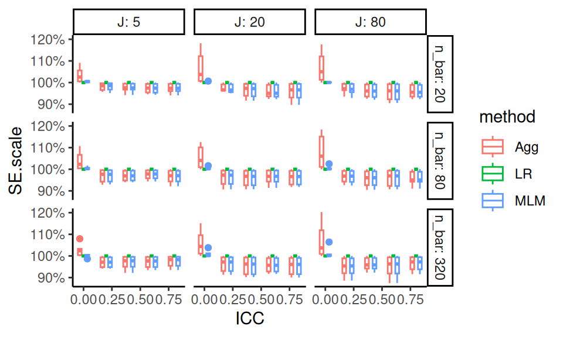
Each point is one of our methods in one of our simulation scenarios. We are looking at the raw results. We connect the points with lines to help us see trends within each of the mini-plots. It also helps us visually track which group of points goes with which.
As a side note, this style of plotting, with a bunch of small plots, is called “many small multiples” and is beloved by Tufte. He likes it, in part, because in a single plot we can display 5 variables: our facets are organized by two (ICC and the size coefficient), and within each facet we have three (alpha, our outcome of bias, and the methods themselves). Unfortunately, we quickly reach our limits of this approach if we have more factors than 5, which, in this case, we do. We next present bundling, a way of using this core idea of showing raw results, but in a semi-aggregated way.
12.1.2 Bundling
As a first step, we can bundle the simulations into groups defined by a selected primary factor of interest, and then plot each bundle with a boxplot of a selected performance criteria. Each boxplot then shows the central measure of how well an estimator worked across those simulations, along with a sense of how much that performance varied across those simulations. If the boxes are narrow, then we know that the variation across simulations within the box did not impact performance much. If the boxes are wide, then we know that the factors that vary within the box matter a lot for performance.
With bundling, we would need a good number of simulation runs per scenario, so that the MCSE in the performance measures does not make our boxplots look substantially more variable (wider) than the truth. (Consider a case where the simulations within a box all would have the same performance, but the MCSE is large; in this case we would see a wide boxplot when we should not.)
To illustrate, we next investigate bias in our running example on cluster RCTs. We are going to group our results by method, ICC, the size coefficent (how strong the cluster size to treatment impact relationship is), and alpha (how much the site sizes vary). For a specific ICC, size, and alpha, we will put the boxes for the three methods side-by-side to directly compare the methods in terms of bias.
ggplot( sres, aes( ICC, bias, col=method, group=paste0(ICC,method) ) ) +
facet_grid( alpha ~ size_coef, labeller = label_both ) +
geom_boxplot(coef = Inf) +
geom_hline( yintercept = 0 ) +
theme_minimal() +
scale_x_continuous( breaks = unique( sres$ICC) )
From our plot we see, for example, that there is virtually no bias for any method when the size coefficient is 0 and the ICC is 0. It is a bit more unclear, but it seems there is also virtually no bias when the size coefficient is 0 regardless of ICC, but the boxes are wider making us wonder if something else is potentially going on. When alpha is 0 and the size coefficient is 0.2, all methods have a negative bias for most scenarios considered, as all boxes and almost all of the whiskers are below the 0 line (when ICC is 0.6 or 0.8 we may have some instances of 0 or positive bias, if that is not MCSE giving long tails).
Each box is a collection of simulation trials. E.g., for ICC = 0.6, size_coef = 0.2, and alpha = 0.8 each box contains 9 scenarios representing the varying level 1 and level 2 sample sizes.
Here are the 9 for the Aggregation method:
filter( sres, ICC == 0.6, size_coef == 0.2,
alpha == 0.8, method=="Agg" ) %>%
dplyr::select( n_bar:alpha, bias )## # A tibble: 9 × 7
## n_bar J ATE size_coef ICC alpha bias
## <dbl> <dbl> <dbl> <dbl> <dbl> <dbl> <dbl>
## 1 20 5 0.2 0.2 0.6 0.8 -6.60e-2
## 2 20 20 0.2 0.2 0.6 0.8 1.68e-2
## 3 20 80 0.2 0.2 0.6 0.8 1.02e-2
## 4 80 5 0.2 0.2 0.6 0.8 2.09e-3
## 5 80 20 0.2 0.2 0.6 0.8 2.98e-2
## 6 80 80 0.2 0.2 0.6 0.8 -9.26e-3
## 7 320 5 0.2 0.2 0.6 0.8 2.42e-2
## 8 320 20 0.2 0.2 0.6 0.8 9.93e-4
## 9 320 80 0.2 0.2 0.6 0.8 1.97e-3The apparent outliers (long tails) for some of the boxplots suggest that the other factors (cluster size and number of clusters) also relate to degree of bias. We could try bundling along different aspects to see:
ggplot( sres, aes( as.factor(n_bar), bias, col=method, group=paste0(n_bar,method) ) ) +
facet_grid( alpha ~ size_coef, labeller = label_both ) +
geom_boxplot(coef = Inf) +
geom_hline( yintercept = 0 ) +
theme_minimal()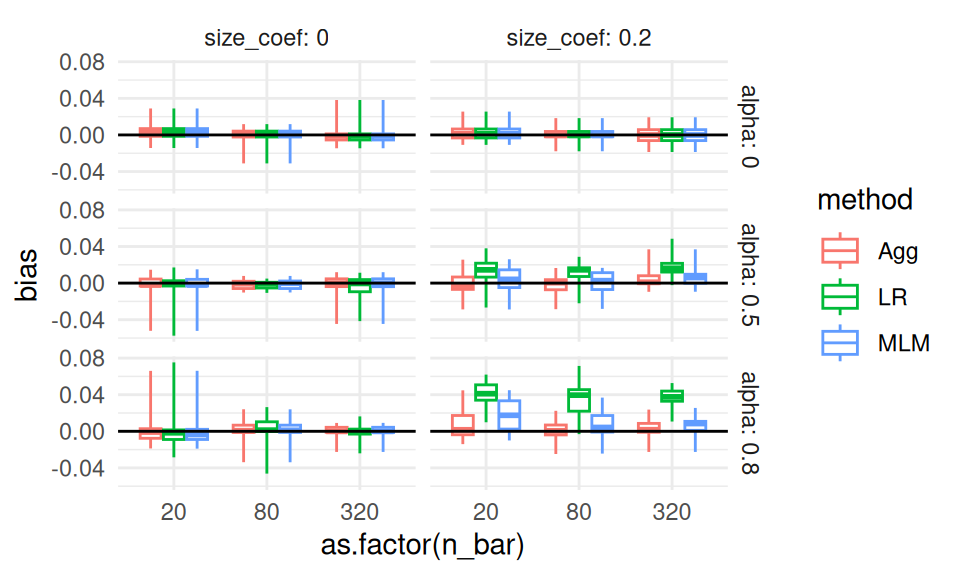
No progress there. Perhaps it is instability or MCSE. In an actual analysis, we might then make a note to investigate these anomalies a bit further, later on.
12.1.3 Aggregation
The boxplots make seeing trends more difficult. Instead of bundling, we can therefore aggregate, where we average all the scenarios within a box to get a single number of average performance, to look at overall trends rather than individual simulation variation. Aggregation is especially important if the number of replicates within each scenario is small, because then each indiviua scenario’s performance is measured with a lot of error.
With aggregation, we average over some of the factors, collapsing our simulation results down to fewer moving parts. Aggregation across factors is better than having not had those factors in the first place! A performance measure averaged over a factor is a more general answer of how things work in pratice than having not varied the factor at all.
For example, if we average across ICC and site variation, and see how the methods change performance as a function of \(J\), we would know that this is a general trend across a range of scenarios defined by different ICC and site variation levels. Our conclusions would then be more general than if we picked a single ICC and amount of site variation: in this latter case we would not know if we would see our trend more broadly.
Also, with aggregation, we can have a smaller number of replications per factor combination. The averaging will, in effect, give a lot more replications per aggregated performance measure.
A caution with aggregation is that aggregated results can be misleading if you have scaling issues or extreme outliers. With bias, our scale is fairly well set, so we are good. But if we were aggregating standard errors over different sample sizes, then the larger standard errors of the smaller sample size simulations (and the greater variability in estimating those standard errors) would swamp the standard errors of the larger sample sizes. Usually, with aggregation, we want to average over something we believe will not change massively over the marginalized-out factors. Alternatively, we can average over a relative measure (such as standard error divided by the standard error of some baseline method), which tend to be more invariant and comparable across scenarios.
For our cluster RCT, we might aggregate our bias across some of our simulation factors as follows:
ssres <-
sres %>%
group_by( ICC, method, alpha, size_coef ) %>%
summarise( bias = mean( bias ) )
ggplot( ssres, aes( ICC, bias, col=method ) ) +
facet_grid( alpha ~ size_coef, labeller = label_both ) +
geom_point( alpha=0.75 ) +
geom_line( alpha=0.75 ) +
geom_hline( yintercept = 0 ) +
theme_minimal()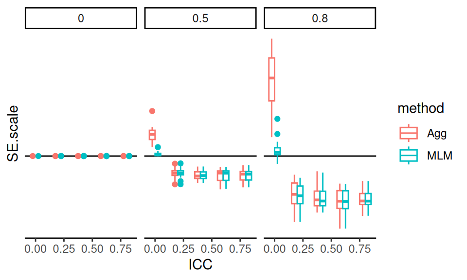
We see more clearly that site variation leads to greater bias, but only if the coefficient for size is nonzero (which makes sense given our theoretical understanding of the problem–if size is not related to treatment effect, it is hard to imagine how it would bias it). We also see that all the estimators have near zero bias when thee is no variation in cluster size, with the overplotted lines on the top row of the figure.
We can also let ggplot aggregate directly by taking advantage of the smoothing options:
ggplot( sres, aes( ICC, bias, col=method ) ) +
facet_grid( alpha ~ size_coef, labeller = label_both ) +
geom_point( alpha=0.25,
position = position_dodge(width = 0.04) ) +
geom_smooth( se=FALSE ) +
geom_hline( yintercept = 0 ) +
theme_minimal()## `geom_smooth()` using method = 'loess' and
## formula = 'y ~ x'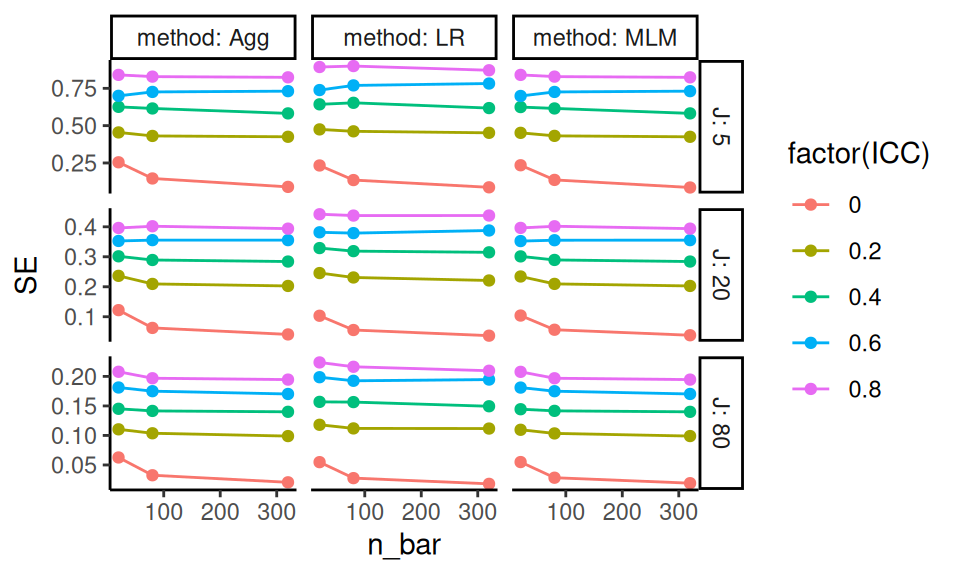
In the above, we let the original points show as well, to give a sense of the variation across simulation trials.
12.1.4 Regression Summarization
One can treat the simulation results as a dataset in its own right. In this case we can regress a performance measure against the methods and various factor levels to get “main effects” of how the different levels impact performance, holding the other levels constant. This type of regression is called a “meta regression” (Kleijnen (1981),Friedman and Pressman (1988),Gilbert and Miratrix (2024)), as we are regressing on already processed results. It also has ties to meta analysis (see, e.g., Borenstein et al. (2021)), where we look for trends across sets of experiments.
In a meta regression, the main effect estimated for each method will tell us if a method is, on average, higher or lower than the baseline method, averaging across all the simulation scenarios. The main effect of the factors will tell us if that factor impacts the performance measure.
These regressions can also include interactions between method and factor, to see if some factors impact different methods differently. They can also include interactions between factors, which allows us to explore how the impact of a factor can matter more or less, depending on other aspects of the context.
For our cluster RCT, we might have, for example:
# Make our simulation factors factors rather tha numeric values
sres_f = sres %>%
mutate( across( c( n_bar, J, size_coef, ICC, alpha ), factor ) )
# Run the regression
M <- lm( bias ~ (n_bar + J + size_coef + ICC + alpha) * method,
data = sres_f )
# View the results
stargazer::stargazer(M, type = "text",
single.row = TRUE )##
## ==================================================
## Dependent variable:
## ---------------------------
## bias
## --------------------------------------------------
## n_bar80 -0.001 (0.006)
## n_bar320 0.003 (0.006)
## J20 -0.005 (0.006)
## J80 -0.006 (0.006)
## size_coef0.2 0.005 (0.005)
## ICC0.2 0.008 (0.008)
## ICC0.4 0.003 (0.008)
## ICC0.6 0.004 (0.008)
## ICC0.8 0.005 (0.008)
## alpha0.5 -0.003 (0.006)
## alpha0.8 0.006 (0.006)
## methodLR -0.014 (0.012)
## methodMLM 0.002 (0.012)
## n_bar80:methodLR 0.003 (0.009)
## n_bar320:methodLR 0.001 (0.009)
## n_bar80:methodMLM -0.0003 (0.009)
## n_bar320:methodMLM -0.001 (0.009)
## J20:methodLR 0.005 (0.009)
## J80:methodLR 0.006 (0.009)
## J20:methodMLM 0.001 (0.009)
## J80:methodMLM 0.001 (0.009)
## size_coef0.2:methodLR 0.018** (0.007)
## size_coef0.2:methodMLM 0.003 (0.007)
## ICC0.2:methodLR 0.002 (0.011)
## ICC0.4:methodLR 0.001 (0.011)
## ICC0.6:methodLR -0.0004 (0.011)
## ICC0.8:methodLR -0.0001 (0.011)
## ICC0.2:methodMLM -0.005 (0.011)
## ICC0.4:methodMLM -0.005 (0.011)
## ICC0.6:methodMLM -0.006 (0.011)
## ICC0.8:methodMLM -0.006 (0.011)
## alpha0.5:methodLR 0.006 (0.009)
## alpha0.8:methodLR 0.019** (0.009)
## alpha0.5:methodMLM 0.001 (0.009)
## alpha0.8:methodMLM 0.003 (0.009)
## Constant -0.002 (0.009)
## --------------------------------------------------
## Observations 810
## R2 0.075
## Adjusted R2 0.033
## Residual Std. Error 0.041 (df = 774)
## F Statistic 1.781*** (df = 35; 774)
## ==================================================
## Note: *p<0.1; **p<0.05; ***p<0.01We can quickly get a lot of features, making a meta-regression somewhat hard to interpret. But picking out the significant coefficents is a quick way to obtain a lot of clues as to what is driving performance. E.g., many features interact with the LR method for bias. The other two methods seem less impacted.
12.1.5 Focus on a subset, kick rest to supplement
Frequently researchers might simply filter the simulation results to a single factor level for some nuisance parameter. For example, we might examine ICC of 0.20 only, as this is a “reasonable” value that, given our substance matter knowledge, we know is frequently found in empirical data. We would then consider the other levels as a “sensitivity” analysis vaguely alluded to in our main report and placed elsewhere, such as an online supplemental appendix.
It would be our job, in this case, to verify that our reported findings on the main results indeed were echoed in our other, set-aside, simulation runs.
12.2 Analyzing results when some trials have failed
If methods fail, then this is something to investigate in its own right. Ideally, failure is not too common, so we can drop those trials, or keep them, without really impacting our overall results. But one should at least know what one is ignoring.
For example, in our cluster RCT, we know we have, at least sometimes, convergence issues. We also know that ICC is an important feature, so we can explore how often we get a convergence message by ICC level:
res %>%
group_by( method, ICC ) %>%
summarise( message = mean( message ) ) %>%
pivot_wider( names_from = "method", values_from="message" )## Warning: There were 15 warnings in `summarise()`.
## The first warning was:
## ℹ In argument: `message = mean(message)`.
## ℹ In group 1: `method = "Agg"` `ICC = 0`.
## Caused by warning in `mean.default()`:
## ! argument is not numeric or logical: returning NA
## ℹ Run `dplyr::last_dplyr_warnings()` to see the
## 14 remaining warnings.## # A tibble: 5 × 4
## ICC Agg LR MLM
## <dbl> <dbl> <dbl> <dbl>
## 1 0 NA NA NA
## 2 0.2 NA NA NA
## 3 0.4 NA NA NA
## 4 0.6 NA NA NA
## 5 0.8 NA NA NAWe see that when the ICC is 0 we get a lot of convergence issues, but as soon as we pull away from 0 it drops off considerably. At this point we might decide to drop those runs with a message or keep them. In this case, we decide to keep. It shouldn’t matter much in any case except the ICC = 0 case, and we know the convergence issues are driven by trying to estimate a 0 variance, and thus is in some sense expected. Furthermore, we know people using these methods would likely ignore these messages, and thus we are faithfully capturing how these methods would be used in practice. We might eventually, however, want to do a separate analysis of the ICC = 0 context to see if the MLM approach is actually falling apart, or if it is just throwing warnings.
12.3 Case study: power for a randomized trial
We next walk through a case study where we compare different visualizations of the same performance metric (in this case, power). The goal is to see how to examine a metric from several perspectives, and to see how to explore simulation results across scenarios.
For this example, we are going to look at a randomized experiment. We will generate control potential outcomes with a normal distribution, and then add a treatment effect to the treated units.
For our analytic approach, we will estimate the treatment effect by taking the difference in means. We will calculate the associated standard error and generate \(p\)-values using the normal approximation. (As we will see, this is not a good idea for small sample sizes since we should be using a \(t\)-test style approach.)
Violating our usual modular approach, we are going to have a single function that does an entire step: our function will generate the data and then analyze it all in one go. Our function also calculates and returns the true effect size of the DGP as the true treatment effect divided by the control standard deviation (this true effect size will be useful for understanding power, as we show later on).
run.one = function( nC, nT, sdC, tau, mu = 5, sdTau = 0 ) {
Y0 = mu + rnorm( nC, sd=sdC )
Y1 = mu + rnorm( nT, sd=sdC ) + tau + rnorm( nT, sd=sdTau )
tau.hat = mean( Y1 ) - mean( Y0 )
SE.hat = sqrt( var( Y0 ) / ( nC ) + var( Y1 ) / ( nT ) )
z = tau.hat / SE.hat
pv = 2 * (1 - pnorm( abs( z ) ))
data.frame( tau.hat = tau.hat, SE.hat = SE.hat,
z = z, p.value = pv )
}Our function generates a data set, analyzes it, and give us back a variety of results as a one-row dataframe, as per usual:
## tau.hat SE.hat z p.value
## 1 -0.246767 0.6607213 -0.3734812 0.7087903In this case, our results are a mix of the parameters and estimated quantities.
We then write a function that runs our single trial multiple times and summarizes the results:
run.experiment = function( nC, nT, sdC, tau, mu = 5, sdTau = 0, R = 500 ) {
eres = replicate( R,
run.one( nC, nT, sdC, tau, sdTau=sdTau, mu=mu ),
simplify=FALSE ) %>%
bind_rows()
eres %>%
summarise( E.tau.hat = mean( tau.hat ),
E.SE.hat = mean( SE.hat ),
power = mean( p.value <= 0.05 ) ) %>%
mutate( nC=nC, nT=nT, sdC=sdC, tau=tau, mu=mu, sdTau=sdTau, R=R )
}For performance, we have the average average treatment effect estimate E.tau.hat,
the average Standard Error estimate E.SE.hat,
and the power power (defined as the percent of time we reject at
alpha=0.05, i.e., the percent of times our \(p\)-value was less than our 0.05
threshold):
Our function also adds in the details of the simulation (the parameters we passed
to the run.one() call). This is an easy way to keep track of things.
We test our function to see what we get:
## E.tau.hat E.SE.hat power nC nT sdC tau mu
## 1 0.497077 0.6284977 0.218 10 3 1 0.5 5
## sdTau R
## 1 0.2 500We next use the above to run our multi-factor simulation experiment. We are going to vary four factors: control group size, treatment group size, standard deviation of the units, and the treatment effect.
nC = c( 2, 4, 7, 10, 50, 500 )
nT = c( 2, 4, 7, 10, 50, 500 )
sdC = c( 1 )
tau = c( 0, 0.5, 1 )
sdTau = c( 0, 0.5 )
experiments = expand_grid( nC=nC, nT=nT, sdC=sdC, tau=tau, sdTau = sdTau )
experiments## # A tibble: 216 × 5
## nC nT sdC tau sdTau
## <dbl> <dbl> <dbl> <dbl> <dbl>
## 1 2 2 1 0 0
## 2 2 2 1 0 0.5
## 3 2 2 1 0.5 0
## 4 2 2 1 0.5 0.5
## 5 2 2 1 1 0
## 6 2 2 1 1 0.5
## 7 2 4 1 0 0
## 8 2 4 1 0 0.5
## 9 2 4 1 0.5 0
## 10 2 4 1 0.5 0.5
## # ℹ 206 more rowsWe next run an experiment for each row of our dataframe of experiment factor combinations, and save the results.
exp.res <- experiments %>%
pmap_df( run.experiment, R=2000 )
dir.create("results", showWarnings = FALSE )
saveRDS( exp.res, file="results/Neyman_RCT_results.rds" )The R=2000 after run.experiment passes the same parameter of \(R=2000\) to each
run (we run the same number of trials for each experiment).
We can put it there rather than have it be a column in our list of factors to run.
Here is a peek at our results:
## E.tau.hat E.SE.hat power nC nT sdC tau mu
## 1 -0.001525155 0.8818917 0.1975 2 2 1 0.0 5
## 2 -0.026286662 0.9307269 0.1915 2 2 1 0.0 5
## 3 0.485430674 0.8861287 0.2185 2 2 1 0.5 5
## 4 0.452375661 0.9363909 0.2095 2 2 1 0.5 5
## 5 1.029038283 0.8915091 0.3120 2 2 1 1.0 5
## 6 0.957434064 0.9347139 0.3025 2 2 1 1.0 5
## sdTau R
## 1 0.0 2000
## 2 0.5 2000
## 3 0.0 2000
## 4 0.5 2000
## 5 0.0 2000
## 6 0.5 200012.3.1 The initial analysis
We are ready to analyze, and we start with plotting.
Plotting is always a good way to visualize simulation results.
We first make our tau into a factor, so ggplot behaves, and then plot all our
experiments as two rows based on one factor (sdTau) with the columns being
another (nT).
Unlike our Cluster RCT, we only have one method, so we can use our color for a different simulation factor.
Within each plot we have the x-axis for one factor (nC) and multiple lines for the final factor (tau).
The \(y\)-axis is our outcome of interest, power. We add a 0.05 line to show
when we are rejecting at rates above our nominal \(\alpha\). This plot shows
the relationship of five variables.
exp.res = exp.res %>%
mutate( tau = as.factor( tau ) )
ggplot( exp.res, aes( x=nC, y=power, group=tau, col=tau ) ) +
facet_grid( sdTau ~ nT, labeller=label_both ) +
geom_point() + geom_line() +
scale_x_log10() +
geom_hline( yintercept=0.05, col="black", lty=2)
We are looking at power for different control and treatment group sizes. The tau is our treatment effect, and so for \(\tau = 0\) we are looking at validity (false rejection of the null) and for the other \(\tau\) power (noticing an effect when it is there). Notice that we are seeing elevated rejection rates (the tau=0 line is well above 0.05) under the null for small and even moderate sample sizes!
12.3.2 Focusing on validity
Especially when considering power, we might want to separate rejection rates under the null vs. rejection rates when there is a true thing to reject. In particular, we can subset to specific simulation runs with no treatment impact to assess the validity.
First, we can filter our simulations to large samples to make sure we are seeing rejection rates (power) of around 0.05, which is what we want:
| E.tau.hat | E.SE.hat | power | nC | nT | sdC | tau | mu | sdTau | R |
|---|---|---|---|---|---|---|---|---|---|
| 0 | 0.20 | 0.06 | 50 | 50 | 1 | 0 | 5 | 0.0 | 2000 |
| 0 | 0.21 | 0.05 | 50 | 50 | 1 | 0 | 5 | 0.5 | 2000 |
| 0 | 0.15 | 0.06 | 50 | 500 | 1 | 0 | 5 | 0.0 | 2000 |
| 0 | 0.15 | 0.05 | 50 | 500 | 1 | 0 | 5 | 0.5 | 2000 |
| 0 | 0.15 | 0.05 | 500 | 50 | 1 | 0 | 5 | 0.0 | 2000 |
| 0 | 0.16 | 0.06 | 500 | 50 | 1 | 0 | 5 | 0.5 | 2000 |
| 0 | 0.06 | 0.04 | 500 | 500 | 1 | 0 | 5 | 0.0 | 2000 |
| 0 | 0.07 | 0.06 | 500 | 500 | 1 | 0 | 5 | 0.5 | 2000 |
This does check out, which is a nice sanity check that we have implemented everything correctly. It is ok to use simulation of simple, known, cases to check that our methods are implemented correctly and working as expected.
We can then get fancy and look at false rejection rate (power under tau = 0) as a
function of both nC and nT using an interaction-style plot where we average over the other variables:
exp.res.rej <- exp.res %>%
filter( tau == 0 ) %>%
group_by( nC, nT ) %>%
summarize( power = mean( power ),
n = n() )
exp.res.rej = mutate( exp.res.rej, power = round( power * 100 ) )
ggplot( exp.res.rej, aes( x=nC, y=power, group=nT, col=as.numeric(as.factor(nT)) ) ) +
geom_point() + geom_line( size=0.5 ) +
geom_hline( yintercept = 5 ) +
scale_y_continuous( limits = c( 0, 40 ) ) +
scale_x_log10( breaks = unique( exp.res.rej$nC ) ) +
scale_color_gradient( low = "black", high="red",
labels = unique( exp.res.rej$nT ) ) +
labs( x = "# C", y = "Power", colour = "# T" )
This plot focuses on the validity of our test. It shows that we can have massively elevated rates when either the number of treated or control units is small (below 7). It also shows that as the size of one group increases, if the other is small our rejection rates climb! Note how for 4 control units, the \(n_T = 500\) line is above the others (except for the \(n_T = 2\) line).
12.3.3 Aggregate to look at main effects
We can ignore all the other factors while we look at one specific factor of interest. This is looking at the main effect or marginal effect of the factor.
The easy way to do this is to aggregate, letting ggplot smooth our individual points on a
plot.
Be sure to also plot the individual points to see variation, however.
ggplot( exp.res, aes( x=nC, y=power, group=tau, col=tau ) ) +
geom_jitter( width=0.02, height=0, alpha=0.5 ) +
geom_smooth( se = FALSE ) +
scale_x_log10( breaks=nC) +
geom_hline( yintercept=0.05, col="black", lty=2)
Note how we see our individual runs that we marginalize over as the dots.
To look at our main effects we can also summarize our results, averaging our experimental runs across other factor levels. For example, in the code below we average over the different treatment group sizes and standard deviations, and plot the marginalized results.
To marginalize, we group by the things we want to keep and let summarise()
average over the things we want to get rid of.
exp.res.sum = exp.res %>% group_by( nC, tau ) %>%
summarise( power = mean( power ) )
head( exp.res.sum )## # A tibble: 6 × 3
## # Groups: nC [2]
## nC tau power
## <dbl> <fct> <dbl>
## 1 2 0 0.205
## 2 2 0.5 0.254
## 3 2 1 0.395
## 4 4 0 0.114
## 5 4 0.5 0.204
## 6 4 1 0.427ggplot( exp.res.sum, aes( x=nC, y=power, group=tau, col=tau ) ) +
geom_line() + geom_point() +
scale_x_log10( breaks=nC) +
geom_hline( yintercept=0.05, col="black", lty=2)
We can try to get clever and look at other aspects of our experimental runs. The above suggests that the smaller of the two groups is dictating when things going awry, in terms of elevated rejection rates under the null.
We can also look at our results in terms of some more easily interpretable parameters, such as effect size instead of raw treatment effect.
To try and simplify the story, we can try and look at total sample size and the smaller of the two groups sample size and make two different plots that way.
ggplot( exp.res, aes( x=n, y=power, group=tau, col=tau ) ) +
geom_jitter( width=0.05, height=0) +
geom_smooth( se = FALSE, span = 1) +
scale_x_log10() +
geom_hline( yintercept=0.05, col="black", lty=2) +
labs( title = "Total sample size" )
ggplot( exp.res, aes( x=n.min, y=power, group=tau, col=tau ) ) +
geom_jitter( width=0.05, height=0) +
geom_smooth( se = FALSE, span = 1) +
scale_x_log10() +
geom_hline( yintercept=0.05, col="black", lty=2) +
labs( title = "Minimum group size" )

(#fig:plotA)Power as a function of total sample size.
Note the few observations out in the high n.min region for the second
plot—this plot is a bit strange in that the different levels along the
x-axis are assymetric with respect to each other. It is not balanced.
12.3.4 Recap
Overall, this exploration demonstrates the process of looking at a single performance metric (power) and refining a series of plots to get a sense of what the simulation is taking us. There are many different plots we might choose, and this depends on the messages we are trying to convey.
The key is to explore, and see what you can learn!
13 Case study: Comparing different estimators
Features of this case study
- Calculating performance metrics by estimator using tidyverse.
- Visualization of simulation results.
- Construction of the classic Bias + SE + RMSE performance plot.
In this case study we conduct a simulation where we wish to compare different forms of estimator for estimating the same thing. In particular, we are going to compare estimation of the center of a symmetric distribution via mean, trimmed mean, and median (so the mean and median are the same). These are the three estimation strategies that we might be comparing in a paper (pretend we have “invented” the trimmed mean and want to demonstrate its utility).
We are, as usual, going to break building this simulation evaluation down into lots of functions to show the general framework. This framework can readily be extended to more complicated simulation studies. This case study illustrates how methodologists might compare different strategies for estimation, and is what we might see in the “simulation” section of a stats paper.
13.1 The data generating process
For our data-generation function we will use the scaled \(t\)-distribution so the standard deviation will always be 1 but we will have different fatness of tails (high chance of outliers):
The variance of a \(t\) distribution is \(df/(df-2)\), so when we divide our observations by the square root of this, we standardize them so they have unit variance. See, the standard deviation of our data is 1 (up to random error, and as long as df0 > 2)!:
## [1] 1.01542(Normally our data generation code would be a bit more fancy.)
13.2 The data analysis methods
We next write a function that takes our data and uses all our different estimators on it. We return a data frame of the three estimates, with each row being one of our estimators. This is useful if our estimators return an estimate and a standard error, for example.
analyze.data = function( data ) {
mn = mean( data )
md = median( data )
mn.tr = mean( data, trim=0.1 )
data.frame( estimator = c( "mean", "trim.mean", "median" ),
estimate = c( mn, mn.tr, md ) )
}Let’s test:
## estimator estimate
## 1 mean -0.044891002
## 2 trim.mean 0.005257327
## 3 median 0.004890847Note that we have bundled our multiple methods into a single function. With complex methods we generally advocate a separate function for each method, but sometimes having a host of methods wrapped in a single function can still be clean and tidy code.
Also note the three lines of output for our returned value. This long-form output will make processing the simulation results easier. That being said, returning in wide format is also completely legitimate.
13.3 The simulation itself
To evaluate, we do a bunch of times, and assess results. Let’s start by looking at a specific case. We generate 1000 datasets of size 10, and estimate the center using our three different estimators.
library( simhelpers )
run_sim <- bundle_sim( gen.data, analyze.data )
raw.exps <- run_sim( 1000, n=10, mu = 0, df0=5 )We now have 1000 estimates for each of our estimators:
## estimator estimate
## 1 mean -0.09919345
## 2 trim.mean -0.20887036
## 3 median -0.12237738
## 4 mean -0.19312165
## 5 trim.mean -0.22091715
## 6 median -0.1853415213.4 Calculating performance measures for all our estimators
We then want to assess estimator performance for each estimator. We first write a function to calculate what we want from 1000 estimates:
estimator.quality = function( estimates, mu ) {
RMSE = sqrt( mean( (estimates - mu)^2 ) )
bias = mean( estimates - mu )
SE = sd( estimates )
data.frame( RMSE=RMSE, bias=bias, SE=SE )
}The key is our function is estimation-method agnostic: we will use it for each of our three estimators. Here we evaluate our ‘mean’ estimator:
## RMSE bias SE
## 1 0.3318663 -0.01079814 0.3318566Aside: Perhaps, code-wise, the above is piping gone too far? If you don’t like this style, you can do this:
## RMSE bias SE
## 1 0.3318663 -0.01079814 0.3318566To do all our three estimators, we group by estimator and evaluate for each
estimator. In tidyverse 1.0 summarise can handle multiple responses, but they
will look a bit weird in our output, hence the ‘unpack()’ argument which
makes each column its own column (if we do not unpack, we have a “data frame
column” which is an odd thing).
raw.exps %>%
group_by( estimator ) %>%
summarise( qual = estimator.quality( estimate, mu = 0 ) ) %>%
tidyr::unpack( cols=c(qual) )## # A tibble: 3 × 4
## estimator RMSE bias SE
## <chr> <dbl> <dbl> <dbl>
## 1 mean 0.332 -0.0108 0.332
## 2 median 0.331 -0.00855 0.331
## 3 trim.mean 0.311 -0.0105 0.311We then pack up the above into a function, as usual. Our function takes our two parameters of sample size and degrees of freedom, and returns a data frame of results.
run.simulation = function( n, df0 ) {
raw.exps <- replicate( 1000, {
dt = gen.data( n=n, mu = 0, df0=df0 )
analyze.data( dt )
}, simplify = FALSE )
raw.exps = bind_rows( raw.exps, .id = "runID" )
rs <- raw.exps %>%
group_by( estimator ) %>%
summarise( qual = estimator.quality( estimate, mu = 0 ) ) %>%
tidyr::unpack( cols=c( qual ) )
rs
}Our function will take our two parameters, run a simulation, and give us the results. We see here that none of our estimators are particularly biased and the trimmed mean has, possibly, the smallest RMSE, although it is a close call.
## # A tibble: 3 × 4
## estimator RMSE bias SE
## <chr> <dbl> <dbl> <dbl>
## 1 mean 0.318 0.0136 0.318
## 2 median 0.315 0.00888 0.315
## 3 trim.mean 0.294 0.0111 0.294Ok, now we want to see how sample size impacts our different estimators. If
we also vary degrees of freedom we have a three-factor experiment, where
one of the factors is our estimator itself. We are going to use a new clever
trick. As before, we use pmap(), but now we store the entire dataframe of
results we get back from our function in a new column of our original
dataframe. See R for DS, Chapter 25.3. This trick works best if we have
everything as a tibble which is basically a dataframe that prints a lot
nicer and doesn’t try to second-guess what you are up to all the time.
ns = c( 10, 50, 250, 1250 )
dfs = c( 3, 5, 15, 30 )
lvls = expand_grid( n=ns, df=dfs )
# So it stores our dataframe results in our lvls data properly.
lvls = as_tibble(lvls)
results <- lvls %>% mutate( results = pmap( lvls, run.simulation ) )We have stored our results (a bunch of dataframes) in our main matrix of simulation runs.
## # A tibble: 16 × 3
## n df results
## <dbl> <dbl> <list>
## 1 10 3 <tibble [3 × 4]>
## 2 10 5 <tibble [3 × 4]>
## 3 10 15 <tibble [3 × 4]>
## 4 10 30 <tibble [3 × 4]>
## # ℹ 12 more rowsThe unnest() function will stack up our dataframes, replicating the other columns in the main dataframe so it makes a nice rectangular dataset, all nice like. See (hard to read) R for DS Chapter 25.4.
## # A tibble: 48 × 6
## n df estimator RMSE bias SE
## <dbl> <dbl> <chr> <dbl> <dbl> <dbl>
## 1 10 3 mean 0.308 -0.00795 0.308
## 2 10 3 median 0.244 -0.00403 0.244
## 3 10 3 trim.mean 0.250 -0.00347 0.250
## 4 10 5 mean 0.321 -0.00142 0.322
## 5 10 5 median 0.315 -0.00763 0.315
## 6 10 5 trim.mean 0.294 -0.000161 0.294
## 7 10 15 mean 0.316 -0.00903 0.316
## 8 10 15 median 0.357 0.00890 0.357
## 9 10 15 trim.mean 0.316 -0.00138 0.316
## 10 10 30 mean 0.315 -0.00450 0.315
## # ℹ 38 more rowsAnd plot:
ggplot( results, aes(x=n, y=RMSE, col=estimator) ) +
facet_wrap( ~ df, nrow=1 ) +
geom_line() + geom_point() +
scale_x_log10( breaks=ns )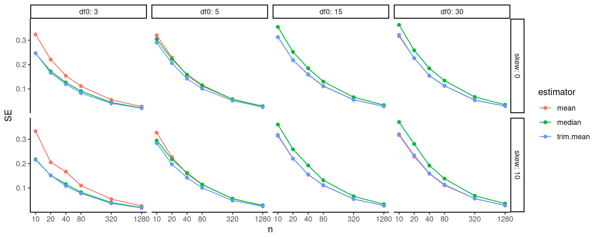
13.5 Improving the visualization of the results
The above doesn’t show differences clearly because all the RMSE goes to zero. It helps to log our outcome, or otherwise rescale. The logging version shows differences are relatively constant given changing sample size.
ggplot( results, aes(x=n, y=RMSE, col=estimator) ) +
facet_wrap( ~ df, nrow=1 ) +
geom_line() + geom_point() +
scale_x_log10( breaks=ns ) +
scale_y_log10()
Better is to rescale using our knowledge of standard errors. If we scale by the square root of sample size, we should get horizontal lines. We now clearly see the trends.
ggplot( results, aes(x=n, y=scaleRMSE, col=estimator) ) +
facet_wrap( ~ df, nrow=1) +
geom_line() + geom_point() +
scale_x_log10( breaks=ns )
Overall, we see the scaled error of the mean it is stable across the different distributions. The trimmed mean is a real advantage when the degrees of freedom are small. We are cropping outliers that destabilize our estimate which leads to great wins. As the distribution grows more normal, this is no longer an advantage and we get closer to the mean in terms of performance. Here we are penalized slightly bye having dropped 10% of our data, so the standard errors will be slightly larger.
The median is not able to take advantage of the nuances of a data set because it is entirely determined by the middle value. When outliers cause real concern, this cost is minimal. When outliers are not a concern, the median is just worse.
Overall, the trimmed mean seems an excellent choice: in the presence of outliers it is far more stable than the mean, and when there are no outliers the cost of using it is small.
In terms of thinking about designing simulation studies, we see clear visual displays of simulation results can tell very clear stories. Eschew complicated tables with lots of numbers.
13.6 Extension: The Bias-variance tradeoff
We can use the above simulation to examine these same estimators when we the median is not the same as the mean. Say we want the mean of a distribution, but have systematic outliers. If we just use the median, or trimmed mean, we might have bias if the outliers tend to be on one side or another. For example, consider the exponential distribution:
## [1] 1.002233## [1] 0.8323088## [1] 0.6908992Our trimming, etc., is biased if we think of our goal as estimating the mean. But if the trimmed estimators are much more stable, we might still wish to use them. Let’s find out.
Let’s generate a mixture distribution, just for fun. It will have a nice normal base with some extreme outliers. We will make sure the overall mean, including the outliers, is always 1, however. (So our target, \(\mu\) is now 1, not 0.)
gen.data.outliers = function( n, prob.outlier = 0.05 ) {
nN = rbinom( 1, n, prob.outlier )
nrm = rnorm( n - nN, mean=0.5, sd=1 )
outmean = (1 - (1-prob.outlier)/2) / prob.outlier
outs = rnorm( nN, mean=outmean, sd=10 )
c( nrm, outs )
}Let’s look at our distribution
## [1] 1.000522## [1] 3.273068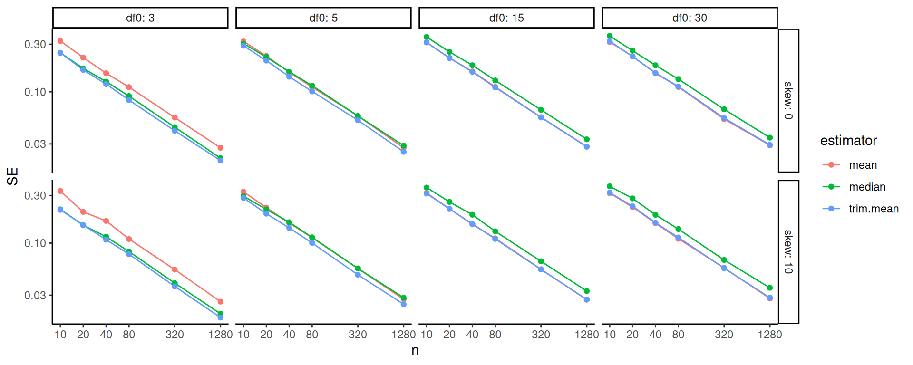
We steal the code from above, modifying it slightly for our new function and changing our target parameter from 0 to 1:
run.simulation.exp = function( n ) {
raw.exps <- replicate( 1000, {
dt = gen.data.outliers( n=n )
analyze.data( dt )
}, simplify = FALSE )
raw.exps = bind_rows( raw.exps, .id = "runID" )
rs <- raw.exps %>%
group_by( estimator ) %>%
summarise( qual = estimator.quality( estimate, mu = 1 ) ) %>%
tidyr::unpack( cols = c( qual ) )
rs
}
res = run.simulation.exp( 100 )
res## # A tibble: 3 × 4
## estimator RMSE bias SE
## <chr> <dbl> <dbl> <dbl>
## 1 mean 0.326 -0.00208 0.326
## 2 median 0.475 -0.457 0.130
## 3 trim.mean 0.455 -0.440 0.115And for our experiment we vary the sample size
results <- lvls %>%
mutate( results = pmap( lvls, run.simulation.exp ) ) %>%
unnest( cols = c(results) )
head( results )## # A tibble: 6 × 5
## n estimator RMSE bias SE
## <dbl> <chr> <dbl> <dbl> <dbl>
## 1 10 mean 1.04 -0.0265 1.04
## 2 10 median 0.593 -0.454 0.381
## 3 10 trim.mean 0.655 -0.381 0.533
## 4 20 mean 0.740 -0.000791 0.740
## 5 20 median 0.536 -0.454 0.285
## 6 20 trim.mean 0.518 -0.410 0.317Here we are going to plot multiple outcomes. Often with the simulation study we are interested in different measures of performance. For us, we want to know the standard error, bias, and overall error (RMSE). To plot this we first gather our outcomes to make a long form dataframe of results:
res2 = gather( results, RMSE, bias, SE, key="Measure",value="value" )
res2 = mutate( res2, Measure = factor( Measure, levels=c("SE","bias","RMSE" )))And then we plot, making a facet for each outcome of interest:
ggplot( res2, aes(x=n, y=value, col=estimator) ) +
facet_grid( . ~ Measure ) +
geom_hline( yintercept=0, col="darkgrey" ) +
geom_line() + geom_point() +
scale_x_log10( breaks=ns ) +
labs( y="" )
We see how different estimators have different biases and different uncertainties. The bias is negative for our trimmed estimators because we are losing the big outliers above and so getting answers that are too low.
The RMSE captures the trade-off in terms of what estimator gives the lowest overall error. For this distribution, the mean wins as the sample size increases because the bias basically stays the same and the SE drops. But for smaller samples the trimming is superior. The median (essentially trimming 50% above and below) is overkill and has too much negative bias.
From a simulation study point of view, notice how we are looking at three different qualities of our estimators. Some people really care about bias, some care about RMSE. By presenting all results we are transparent about how the different estimators operate.
Next steps would be to also examine the associated estimated standard errors for the estimators, seeing if these estimates of estimator uncertainty are good or poor. This leads to investigation of coverage rates and similar.
14 Presentation of simulation results
Last chapter, we started to investigate how to present a multifactor experiment. In this chapter, we talk about some principles behind the choices one might make in generating final reports of a simulation. There are three primary approaches for presenting simulation results:
- Tabulation
- Visualization
- Modeling
There are generally two primary goals for your results:
- Develop evidence that addresses your research questions.
- Understand the effects of the factors manipulated in the simulation.
For your final write-up, you will not want to present everything. A wall of numbers and observations only serves to pummel the reader, rather than inform them; readers rarely enjoy being pummeled, and so they will simply skim or skip such material while feeling hurt and betrayed. Instead, present selected results that clearly illustrate the main findings from the study, along with anything unusual/anomalous. Your presentation will typically be best served with a few well-chosen figures. Then, in the text of your write-up, you might include a few specific numerical comparisons. Do not include too many of these, and be sure to say why the numerical comparisons you include are important. Finally, have supplementary materials that contain further detail such as additional figures and analysis, and the complete simulation results.
To give a great legitimacy bump to your work, you should also provide reproducible code so others could, if so desired, rerun the simulation and conduct the analysis themselves. Even if no one touches your code, the code’s existence and availability builds confidence. People will naturally think, “if that researcher is so willing to let me see what they actually did, then they must be fairly confident it does not contain too many horrendous mistakes.”
We next walk through the three modes of engaging with one’s simulation results, with a few examples taken from the literature.
14.1 Tabulation
Traditionally, simulation study results are presented in big tables. We think this doesn’t really make the take-aways of a simulation readily apparent. Perhaps tables are fine if… - they involve only a few numbers, and a few targeted comparisons. - it is important to report exact values for some quantities.
Unfortunately, simulations usually produce lots of numbers, and involve making lots of comparisons. You are going to want to show, for example, the relative performance of alternative estimators, or the performance of your estimators under different conditions for the data-generating model. This means a lot of rows, and a lot of dimensions. Tables can do two dimensions; when you try to cram more than that into a table, no one is particularly well served.
Furthermore, in simulation, exact values for your bias/RMSE/type-I error, or whatever, are not usually of interest. And in fact, we rarely have them due to Monte Carlo simulation error. The tables provide a false sense of security, unless you include uncertainty, which clutters your table even further.
Overall, tables and simulations do not particularly well mix. In particular, if you are ever tempted into putting your table in landscape mode to get it to fit on the page, think again. It is often more useful and insightful to present results in graphs (Gelman, Pasarica, and Dodhia 2002).
So, onwards.
14.2 Visualization
Visualization should nearly always be the first step in analyzing simulation results.
This often requires creating a bunch of graphs to look at different aspects of the data. From that pile of graphs, you would then refine ones that communicate the overall results most cleanly, and include those in your main write-up. We find we often generate a series of R Markdown reports that load the simulation results and generate these visualizations as an initial document to talk about internally with the research team.
Especially with multi-factor simulations, use boxplots to depict range and central tendency across many combinations of parameter values. While these can be over-dispersed if you have substantial Monte Carlo Simulation Error, hopefully the variation induced by the different simulation factors will swamp that effect.
To get a sense of overall trends, you can aggregate across factors, averaging your performance metrics and then making line charts or scatterplots.
For all of these plots, if you have a lot of factors, you might also want to use small multiples (faceting) to break up the plots into manageable chunks. Do this especially if entire sets of simulation results are on radically different scales of performance (e.g., you have a range of outcomes explored, each on a different scale). You can further use color, shape, and line type to encode different factors.
To illustrate some illustration principles, we next present a series of visualizations taken from our published work, illustrating some different themes behind visualization that we believe are important.
14.2.1 Example 1: Biserial correlation estimation
Our first example shows the bias of a biserial correlation estimate from an extreme groups design. This simulation was a \(96 \times 2 \times 5 \times 5\) factorial design (true correlation for a range of values, cut-off type, cut-off percentile, and sample size). The correlation, with 96 levels, forms the \(x\)-axis, giving us nice performance curves. We use line type for the sample size, allowing us to easily see how bias collapses as sample size increases. Finally, the facet grid gives our final factors of cut-off type and cut-off percentile. All our factors, and nearly 5000 explored simulation scenarios, are visible in a single plot.
## `geom_smooth()` using formula = 'y ~ x'
Source: Pustejovsky, J. E. (2014). Converting from d to r to z when the design uses extreme groups, dichotomization, or experimental control. Psychological Methods, 19(1), 92-112.
Note that in our figure, we have smoothed the lines with respect to rho using geom_smooth().
This is a nice tool for taking some of the simulation jitter out of an analysis to show overall trends more directly.
14.2.2 Example 2: Variance estimation and Meta-regression
In this example, we explore Type-I error rates of small-sample corrected F-tests based on cluster-robust variance estimation in meta-regression. The simulation aimed to compare 5 different small-sample corrections.
This was a complex experimental design, varying several factors:
- sample size ($m$)
- dimension of hypothesis ($q$)
- covariates tested
- degree of model mis-specification
Here the boxplot shows the Type-I error rates for the different small-sample corrections across the covariates tested and degree of model misspecification. We add a line at the target 0.05 rejection rate to ease comparison. The reach of the boxes shows how some methods are more or less vulnerable to different types of misspecification. Other estimators are clearly hyper-conservitive, with very low rejection rates.
Source: Tipton, E., & Pustejovsky, J. E. (2015). Small-sample adjustments for tests of moderators and model fit using robust variance estimation in meta-regression. Journal of Educational and Behavioral Statistics, 40(6), 604-634.
14.2.3 Example: Heat maps of coverage
The visualization below shows the coverage of parametric bootstrap confidence intervals for momentary time sampling data In this simulation study the authors were comparing maximum likelihood estimators to posterior mode (penalized likelihood) estimators of prevalence. We have a 2-dimensional parameter space of prevalence (19 levels) by incidence (10 levels). We also have 15 levels of sample size.
One option here is to use a heat map, showing the combinations of prevelance and incidence as a grid for each sample size level. We break coverage into ranges of interest, with green being “good” (near 95%) and yellow being “close” (92.5% or above). For this to work, we need our MCSE to be small enough that our coverage is estimated precisely enough to show structure.
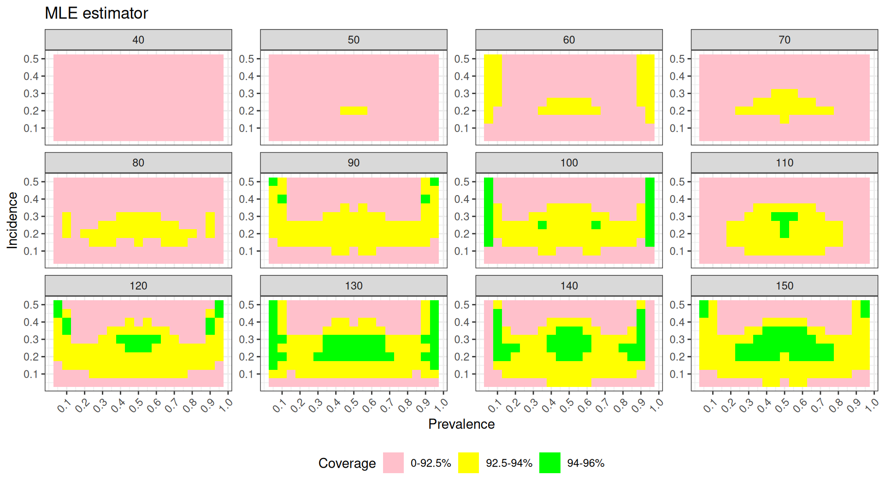

To see this plot IRL, see Pustejovsky, J. E., & Swan, D. M. (2015). Four methods for analyzing partial interval recording data, with application to single-case research. Multivariate Behavioral Research, 50(3), 365-380.
14.3 Modeling
Simulations are designed experiments, often with a full factorial structure. We can therefore leverage classic means for analyzing such full factorial experiments. In particular, we can use regression to summarize how a performance measure varies as a function of the different experimental factors.
First, in the language of a full factor experiment, we might be interested in the “main effects” and the “interaction effects.” A main effect is whether, averaging across the other factors in our experiment, a factor of interest systematically impacts performance. When we look at a main effect, the other factors help ensure our main effect is generalizable: if we see a trend when we average over the other varying aspects, then we can state that our finding is relevant across the host of simulation contexts explored, rather than being an idioscynratic aspect of a specific scenario.
For example, consider the bias of the biserial correlation estimates from above. Visually, we see that several factors appear to impact bias, but we might want to get a sense of how much. In particular, does the population vs sample cutoff option matter, on average, for bias, across all the simulation factors considered? We can fit a regression model to see:
options(scipen = 5)
mod = lm( bias ~ fixed + rho + I(rho^2) + p1 + n, data = r_F)
summary(mod, digits=2)##
## Call:
## lm(formula = bias ~ fixed + rho + I(rho^2) + p1 + n, data = r_F)
##
## Residuals:
## Min 1Q Median 3Q
## -0.0215935 -0.0013608 0.0003823 0.0015677
## Max
## 0.0081802
##
## Coefficients:
## Estimate Std. Error
## (Intercept) 0.00218473 0.00015107
## fixedSample cutoff -0.00363520 0.00009733
## rho -0.00942338 0.00069578
## I(rho^2) 0.00720857 0.00070868
## p1.L 0.00461700 0.00010882
## p1.Q -0.00160546 0.00010882
## p1.C 0.00081464 0.00010882
## p1^4 -0.00011190 0.00010882
## n.L 0.00362949 0.00010882
## n.Q -0.00103981 0.00010882
## n.C 0.00027941 0.00010882
## n^4 0.00001976 0.00010882
## t value Pr(>|t|)
## (Intercept) 14.462 < 2e-16 ***
## fixedSample cutoff -37.347 < 2e-16 ***
## rho -13.544 < 2e-16 ***
## I(rho^2) 10.172 < 2e-16 ***
## p1.L 42.426 < 2e-16 ***
## p1.Q -14.753 < 2e-16 ***
## p1.C 7.486 8.41e-14 ***
## p1^4 -1.028 0.3039
## n.L 33.352 < 2e-16 ***
## n.Q -9.555 < 2e-16 ***
## n.C 2.568 0.0103 *
## n^4 0.182 0.8559
## ---
## Signif. codes:
## 0 '***' 0.001 '**' 0.01 '*' 0.05 '.' 0.1 ' ' 1
##
## Residual standard error: 0.003372 on 4788 degrees of freedom
## Multiple R-squared: 0.5107, Adjusted R-squared: 0.5096
## F-statistic: 454.4 on 11 and 4788 DF, p-value: < 2.2e-16The above printout gives main effects for each factor, averaged across other factors.
Because p1 and n are ordered factors, the lm() command automatically generates linear, quadradic, cubic and fourth order contrasts for them.
We see that, averaged across the other contexts, the sample cutoff is around 0.004 lower than population.
We next extend this modeling approach with two additional tools:
- ANOVA, which can be useful for understanding major sources of variation in simulation results (e.g., identifying which factors have negligible/minor influence on the bias of an estimator).
- Smoothing (e.g., local linear regression) over continuous factors to simplify the interpretation of complex relationships.
For ANOVA, we use aov() to fit an analysis of variance model:
## Df Sum Sq Mean Sq F value
## rho 1 0.002444 0.002444 1673.25
## p1 4 0.023588 0.005897 4036.41
## fixed 1 0.015858 0.015858 10854.52
## n 4 0.013760 0.003440 2354.60
## rho:p1 4 0.001722 0.000431 294.71
## rho:fixed 1 0.003440 0.003440 2354.69
## p1:fixed 4 0.001683 0.000421 287.98
## rho:n 4 0.002000 0.000500 342.31
## p1:n 16 0.019810 0.001238 847.51
## fixed:n 4 0.013359 0.003340 2285.97
## rho:p1:fixed 4 0.000473 0.000118 80.87
## rho:p1:n 16 0.001470 0.000092 62.91
## rho:fixed:n 4 0.002929 0.000732 501.23
## p1:fixed:n 16 0.001429 0.000089 61.12
## rho:p1:fixed:n 16 0.000429 0.000027 18.36
## Residuals 4700 0.006866 0.000001
## Pr(>F)
## rho <2e-16 ***
## p1 <2e-16 ***
## fixed <2e-16 ***
## n <2e-16 ***
## rho:p1 <2e-16 ***
## rho:fixed <2e-16 ***
## p1:fixed <2e-16 ***
## rho:n <2e-16 ***
## p1:n <2e-16 ***
## fixed:n <2e-16 ***
## rho:p1:fixed <2e-16 ***
## rho:p1:n <2e-16 ***
## rho:fixed:n <2e-16 ***
## p1:fixed:n <2e-16 ***
## rho:p1:fixed:n <2e-16 ***
## Residuals
## ---
## Signif. codes:
## 0 '***' 0.001 '**' 0.01 '*' 0.05 '.' 0.1 ' ' 1The advantage here is the multiple levels of some of the factors get bundled together in our table of results. We can summarise our anova table to see the contribution of the various factors and interactions:
## eta.sq eta.sq.part
## rho 0.021971037 0.26254289
## p1 0.212004203 0.77453319
## fixed 0.142527898 0.69783705
## n 0.123670355 0.66710072
## rho:p1 0.015479114 0.20052330
## rho:fixed 0.030918819 0.33377652
## p1:fixed 0.015125570 0.19684488
## rho:n 0.017979185 0.22560369
## p1:n 0.178055588 0.74260975
## fixed:n 0.120065971 0.66049991
## rho:p1:fixed 0.004247472 0.06439275
## rho:p1:n 0.013216569 0.17638308
## rho:fixed:n 0.026326074 0.29902214
## p1:fixed:n 0.012839790 0.17222072
## rho:p1:fixed:n 0.003857877 0.05883389Here we see which factors are explaining the most variation. E.g., p1 is explaining 21% of the variation in bias across simulations.
The contribution of the three way interactions is fairly minimal, by comparison, and could be dropped to simplify our model.
15 Optimizing code (and why you often shouldn’t)
Optimizing code is when you spend a bit more human effort to write code that will run faster on your computer. In some cases, this can be a critical boost to running a simulation, where you inherently will be doing things a lot of times. Cutting runtime down will always be tempting, as it allows you to run more replicates and get more precisely estimated performance measures for your simulation.
That being said, beyond a few obvious coding tricks we will discuss, one should optimize code only after you discover you need to. Optimizing as you go usually means you will spend a lot of time wrestling with code far more complicated than it needs to be. For example, often it is the estimation method that will take a lot of computational time, so having very fast data generation code won’t help overall simulation runtimes much, as you are tweaking something that is only a small part of the overall pie, in terms of time. Keep things simple; in general your time is more important than the computer’s time.
In the next sections we will look at a few optimization efforts applied to the ANOVA example in the prior chapters.
15.1 Hand-building functions
In the Welch example above, we used the system-implemented ANOVA. An alternative approach would be to “hand roll” the ANOVA F statistic and test directly. Doing so by hand can set you up to implement modified versions of these tests later on. Also, although hand-building a method does take more work to program, it can result in a faster piece of code (this actually is the case here) which in turn can make the overall simulation faster.
Following the formulas on p. 129 of Brown and Forsythe (1974) we have (using data as generated in Chapter @ref(data-generating-processes):
ANOVA_F <- function(sim_data) {
x_bar <- with(sim_data, tapply(x, group, mean))
s_sq <- with(sim_data, tapply(x, group, var))
n <- table(sim_data$group)
g <- length(x_bar)
df1 <- g - 1
df2 <- sum(n) - g
msbtw <- sum(n * (x_bar - mean(sim_data$x))^2) / df1
mswn <- sum((n - 1) * s_sq) / df2
fstat <- msbtw / mswn
pval <- pf(fstat, df1, df2, lower.tail = FALSE)
return(pval)
}
ANOVA_F(sim_data)## [1] 0.004037895To see the difference between our version and R’s version, we can use an R package called microbenchmark to test how long the computations take for each version of the function.
The microbenchmark function runs each expression 100 times (by default) and tracks how long the computations take. It then summarizes the distribution of timings:
library(microbenchmark)
timings <- microbenchmark(Rfunction = ANOVA_F_aov(sim_data),
direct = ANOVA_F(sim_data))
timings## Unit: microseconds
## expr min lq mean median uq
## Rfunction 391.1 421.90 488.948 443.55 478.20
## direct 146.3 168.35 211.901 187.80 203.15
## max neval
## 2364.4 100
## 639.3 100The direct function is 2.3 times faster than the built-in R function.
This result is not unusual. Built-in R functions usually include lots of checks and error-handling, which take time to compute. These checks are crucial for messy, real-world data analysis but unnecessary with our pristine, simulated data. Here we can skip them by doing the calculations directly. In general, however, this is a trade-off: writing something yourself gives you a lot of chance to do something wrong, throwing off all your simulations. It might be faster, but you may pay dearly for it in terms of extra hours coding and debugging. Optimize only if you need to!
15.2 Computational efficiency versus simplicity
An alternative approach to having a function that, for each call, generates a single set of data, would be to write a function that generates multiple sets of simulated data all at once.
For example, for our ANOVA example we could specify that we want R replications of the study and have the function spit out a matrix with R columns, one for each simulated dataset:
generate_data_matrix <- function(mu, sigma_sq, sample_size, R) {
N <- sum(sample_size)
g <- length(sample_size)
group <- rep(1:g, times = sample_size)
mu_long <- rep(mu, times = sample_size)
sigma_long <- rep(sqrt(sigma_sq), times = sample_size)
x_mat <- matrix(rnorm(N * R, mean = mu_long, sd = sigma_long),
nrow = N, ncol = R)
sim_data <- list(group = group, x_mat = x_mat)
return(sim_data)
}
generate_data_matrix(mu = mu, sigma_sq = sigma_sq,
sample_size = sample_size, R = 4)## $group
## [1] 1 1 1 2 2 2 2 2 2 3 3 4 4 4 4
##
## $x_mat
## [,1] [,2] [,3] [,4]
## [1,] 2.96039553 1.0817214 0.9306982 2.7125115
## [2,] 0.02587199 -0.7682219 1.5680376 2.1269745
## [3,] 2.88114106 0.2978131 2.3355904 0.1106900
## [4,] 1.01902548 2.6659543 1.3387106 2.4997092
## [5,] -1.63837246 1.0848865 5.1329608 -0.1282844
## [6,] 3.99343045 0.2924431 2.2004092 0.1174160
## [7,] 2.39267741 0.9759697 2.1228954 0.9974723
## [8,] 3.41714220 -0.5215577 1.2727010 2.3444693
## [9,] 1.65696125 2.7633675 4.4069232 1.6192802
## [10,] 10.35746552 6.2851555 6.7576291 0.7851318
## [11,] 3.31024400 7.1040594 2.9113329 6.1024155
## [12,] 6.50803008 5.4034067 6.7324589 8.2590013
## [13,] 5.34914591 6.8394295 5.7892140 7.4751236
## [14,] 8.31037815 5.8169003 5.6803400 4.9334919
## [15,] 4.89056404 5.6067566 5.7440179 5.7273543This approach is a bit more computationally efficient because the setup calculations (getting N, g, group, mu_full, and sigma_full) only have to be done once instead of once per replication. It also makes clever use of vector recycling in the call to rnorm(). However, the structure of the resulting data is more complicated, which will make it more difficult to do the later estimation steps.
Furthermore, if the number of replicates R is large and each replication produces a large dataset, this “all-at-once” approach will entail generating and holding very large amounts of data in memory, which can create other performance issues.
On balance, we recommend the simpler approach of writing a function that generates a single simulated dataset per call (unless and until you have a principled reason to do otherwise).
15.3 Reusing code to speed up computation
Computational and programming efficiency should usually be a secondary consideration when you are starting to design a simulation study.
It is better to produce accurate code, even if it is a bit slow, than to write code that is speedy but hard to follow (or even worse, that produces incorrect results).
All that said, there is some glaring redundancy in the two functions used for the ANOVA simulation.
Both ANOVA_F and Welch_F start by taking the simulated data and calculating summary statistics for each group, using the following code:
x_bar <- with(sim_data, tapply(x, group, mean))
s_sq <- with(sim_data, tapply(x, group, var))
n <- table(sim_data$group)
g <- length(x_bar)In the interest of not repeating ourselves, it would better to pull this code out as a separate function and then re-write the ANOVA_F and Welch_F functions to take the summary statistics as input. Here is a function that takes simulated data and returns a list of summary statistics:
summarize_data <- function(sim_data) {
res <- sim_data %>%
group_by( group ) %>%
summarise( x_bar = mean( x ),
s_sq = var( x ),
n = n() )
res
}We just packaged the code from above, and puts our results in a nice table (and thus pivoted to using tidyverse to calculate these things):
sim_data = generate_data(mu=mu, sigma_sq=sigma_sq, sample_size=sample_size)
summarize_data(sim_data)## # A tibble: 4 × 4
## group x_bar s_sq n
## <int> <dbl> <dbl> <int>
## 1 1 0.898 12.3 3
## 2 2 1.79 2.28 6
## 3 3 4.48 0.00283 2
## 4 4 5.24 1.19 4Now we can re-write both \(F\)-test functions to use the output of this function:
ANOVA_F_agg <- function(x_bar, s_sq, n) {
g = length(x_bar)
df1 <- g - 1
df2 <- sum(n) - g
msbtw <- sum(n * (x_bar - weighted.mean(x_bar, w = n))^2) / df1
mswn <- sum((n - 1) * s_sq) / df2
fstat <- msbtw / mswn
pval <- pf(fstat, df1, df2, lower.tail = FALSE)
return(pval)
}
summary_stats <- summarize_data(sim_data)
with(summary_stats, ANOVA_F_agg(x_bar = x_bar, s_sq = s_sq, n = n))## [1] 0.03123286Welch_F_agg <- function(x_bar, s_sq, n) {
g = length(x_bar)
w <- n / s_sq
u <- sum(w)
x_tilde <- sum(w * x_bar) / u
msbtw <- sum(w * (x_bar - x_tilde)^2) / (g - 1)
G <- sum((1 - w / u)^2 / (n - 1))
denom <- 1 + G * 2 * (g - 2) / (g^2 - 1)
W <- msbtw / denom
f <- (g^2 - 1) / (3 * G)
pval <- pf(W, df1 = g - 1, df2 = f, lower.tail = FALSE)
return(pval)
}
with(summary_stats, ANOVA_F_agg(x_bar = x_bar, s_sq = s_sq, n = n))## [1] 0.03123286The results are the same as before.
We should always test any optimized code against something we know is stable, since optimization is an easy way to get bad bugs. Here we check against R’s implementation:
summary_stats <- summarize_data(sim_data)
F_results <- with(summary_stats,
ANOVA_F_agg(x_bar = x_bar, s_sq = s_sq, n = n))
aov_results <- oneway.test(x ~ factor(group), data = sim_data,
var.equal = TRUE)
all.equal(aov_results$p.value, F_results)## [1] TRUEW_results <- with(summary_stats,
Welch_F_agg( x_bar = x_bar,
s_sq = s_sq, n = n))
aov_results <- oneway.test(x ~ factor(group),
data = sim_data,
var.equal = FALSE)
all.equal(aov_results$p.value, W_results)## [1] TRUEHere we are able to check against a known baseline.
Checking estimation functions can be a bit more difficult for procedures that are not already implemented in R. For example, the two other procedures examined by Brown and Forsythe, the James’ test and Brown and Forsythe’s \(F*\) test, are not available in base R.
They are, however, available in the user-contributed package onewaytests, found by searching for “Brown-Forsythe” at http://rseek.org/. We could benchmark our calculations against this package, but of course there is some risk that the package might not be correct. Another route is to verify your results on numerical examples reported in authoritative papers, on the assumption that there’s less risk of an error there. In the original paper that proposed the test, Welch (1951) provides a worked numerical example of the procedure. He reports the following summary statistics:
He also reports \(W = 3.35\) and \(f = 22.6\). Replicating the calculations with our Welch_F_agg function:
## [1] 0.05479049We get slightly different results! But we know that our function is correct—or at least consistent with oneway.test—so what’s going on? It turns out that there was an error in some of Welch’s intermediate calculations, which can only be spotted because he reported all of his work in the paper.
We then put all these pieces in our revised one_run() method as so:
one_run_fast <- function( mu, sigma_sq, sample_size ) {
sim_data <- generate_data(mu = mu, sigma_sq = sigma_sq,
sample_size = sample_size)
summary_stats <- summarize_data(sim_data)
anova_p <- with(summary_stats,
ANOVA_F_agg(x_bar = x_bar,s_sq = s_sq, n = n))
Welch_p <- with(summary_stats,
Welch_F_agg(x_bar = x_bar, s_sq = s_sq, n = n))
tibble(ANOVA = anova_p, Welch = Welch_p)
}
one_run_fast( mu = mu, sigma_sq = sigma_sq,
sample_size = sample_size )## # A tibble: 1 × 2
## ANOVA Welch
## <dbl> <dbl>
## 1 0.00955 0.0221The reason this is important is we are now doing our group aggregation only once, rather than once per method. We can use our microbenchmark to see our speedup:
library(microbenchmark)
timings <- microbenchmark(noagg = one_run(mu = mu, sigma_sq = sigma_sq,
sample_size = sample_size),
agg = one_run_fast(mu = mu, sigma_sq = sigma_sq,
sample_size = sample_size) )
timings## Unit: milliseconds
## expr min lq mean median uq
## noagg 1.1770 1.25895 1.742579 1.30565 1.41235
## agg 2.7591 3.05700 3.381898 3.23665 3.55755
## max neval
## 21.6725 100
## 7.0232 100And our relative speedup is:
## [1] 0.5To recap, there are two advantages of this kind of coding:
Code reuse is generally good because when you have the same code in multiple places it can make it harder to read and understand your code. If you see two blocks of code you might worry they are only mostly similar, not exactly similar, and waste time trying to differentiate. If you have a single, well-named function, you immediately know what a block of code is doing.
Saving the results of calculations can speed up your computation since you are saving your partial work. This can be useful to reduce calculations that are particularly time intensive.
16 Error trapping and other headaches
16.0.1 What to do with warnings in simulations
Sometimes our analytic strategy might give some sort of warning (or fail altogether). For example, from the cluster randomized experiment case study we have:
set.seed(101012) # (I picked this to show a warning.)
dat <- gen_cluster_RCT( J = 50, n_bar = 100, sigma2_u = 0 )
mod <- lmer( Yobs ~ 1 + Z + (1|sid), data=dat )## boundary (singular) fit: see help('isSingular')We have to make a deliberate decision as to what to do about this:
- Keep these “weird” trials?
- Drop them?
If you decide to drop them, you should drop the entire simulation iteration including the other estimators, even if they worked fine! If there is something particularly unusual about the dataset, then dropping for one estimator, and keeping for the others that maybe didn’t give a warning, but did struggle to estimate the estimand, would be unfair: in the final performance measures the estimators that did not give a warning could be being held to a higher standard, making the comparisons between estimators biased.
If your estimators generate warnings, you should calculate the rate of errors or warning messages as a performance measure. Especially if you drop some trials, it is important to see how often things are acting pecularly.
The main tool for doing this is the quietly() function:
## $result
## Linear mixed model fit by REML ['lmerModLmerTest']
## Formula: ..1
## Data: ..2
## REML criterion at convergence: 14026.44
## Random effects:
## Groups Name Std.Dev.
## sid (Intercept) 0.0000
## Residual 0.9828
## Number of obs: 5000, groups: sid, 50
## Fixed Effects:
## (Intercept) Z
## -0.013930 -0.008804
## optimizer (nloptwrap) convergence code: 0 (OK) ; 0 optimizer warnings; 1 lme4 warnings
##
## $output
## [1] ""
##
## $warnings
## character(0)
##
## $messages
## [1] "boundary (singular) fit: see help('isSingular')\n"You then might have, in your analyzing code:
analyze_data <- function( dat ) {
M1 <- quiet_lmer( Yobs ~ 1 + Z + (1|sid), data=dat )
message1 = ifelse( length( M1$message ) > 0, 1, 0 )
warning1 = ifelse( length( M1$warning ) > 0, 1, 0 )
# Compile our results
tibble( ATE_hat = coef(M1)["Z"],
SE_hat = se.coef(M1)["Z"],
message = message1,
warning = warning1 )
}Now you have your primary estimates, and also flags for whether there was a convergence issue. In the analysis section you can then evaluate what proportion of the time there was a warning or message, and then do subset analyses to those simulation trials where there was no such warning.
17 Saving files and results
Always save your simulation results to a file. Simulations are painful and time consuming to run, and you will invariably want to analyze the results of them in a variety of different ways, once you have looked at your preliminary analysis. We advocate saving your simulation as soon as it is complete. But there are some ways to do better than that, such as saving as you go. This can protect you if your simulation occasionally crashes, or if you want to rerun only parts of your simulation for some reason.
17.1 Saving simulations in general
Once your simulation has completed, you can save it like so:
write_csv() is a tidyverse file-writing command; see “R for Data Science”
textbook, 11.5.
You can then load it, just before analysis, as so:
There are two general tools for saving. The read/write_csv methods save your file in a way where you can open it with a spreadsheet program and look at it.
But your results should be in a vanilla format (non-fancy data frame without list columns).
Alternatively, you can use the saveRDS() and readRDS() methods; these save objects to a file such that when you load them, they are as you left them.
(The simpler format of a csv file means your factors, if you have them, may not preseve as factors, and so forth.)
17.2 Saving simulations as you go
If you are not sure you have time to run your entire simulation, or you think your computer might crash half way through, or something similar, you can save each chunk you run as you go, in its own file. You then stack those files at the end to get your final results. With clever design, you can even then selectively delete files to rerun only parts of your larger simulation—but be sure to rerun everything from scratch before you run off and publish your results, to avoid embarrassing errors.
Here, for example, is a script from a research project examining how one might use post-stratification to improve the precision of an IV estimate. This is the script that runs the simulation. Note the sourcing of other scripts that have all the relevant functions; these are not important here. Due to modular programming, we can see what this script does, even without those detail.
source( "pack_simulation_functions.R" )
if ( !file.exists("results/frags" ) ) {
dir.create("results/frags")
}
# Number of simulation replicates per scenario
R = 1000
# Do simulation breaking up R into this many chunks
M_CHUNK = 10
###### Set up the multifactor simulation #######
# chunkNo is a hack to make a bunch of smaller chunks for doing parallel more
# efficiently.
factors = expand_grid( chunkNo = 1:M_CHUNK,
N = c( 500, 1000, 2000 ),
pi_c = c( 0.05, 0.075, 0.10 ),
nt_shift = c( -1, 0, 1 ),
pred_comp = c( "yes", "no" ),
pred_Y = c( "yes", "no" ),
het_tx = c( "yes", "no" ),
sd0 = 1
)
factors <- factors %>% mutate(
reps = R / M_CHUNK,
seed = 16200320 + 1:n()
)This generates a data frame of all our factor combinations. This is our list of “tasks” (each row of factors). These tasks have repeats: the “chunks” means we do a portion of each scenario, as specified by our simulation factors, as a process. This would allow for greater parallelization (e.g., if we had more cores), and also lets us save our work without finishing an entire scenario of, in this case, 1000 iterations.
To set up our simulation we make a little helper method to do one row. With each row, once we have run it, we save it to disk. This means if we kill our simulation half-way through, most of the work would be saved. Our function is then going to either do the simulation (and save the result to disk immediately), or, if it can find the file with the results from a previous run, load those results from disk:
safe_run_sim = safely( run_sim )
file_saving_sim = function( chunkNo, seed, ... ) {
fname = paste0( "results/frags/fragment_", chunkNo, "_", seed, ".rds" )
res = NA
if ( !file.exists(fname) ) {
res = safe_run_sim( chunkNo=chunkNo, seed=seed, ... )
saveRDS(res, file = fname )
} else {
res = readRDS( file=fname )
}
return( res )
}Note how we wrap our core run_sim method in safely; it was crashing very occasionally, and so to make the code more robust, we wrapped it so we could see any error messages.
We next run the simulation. We shuffle the rows of our task list so that which process gets what task is randomized. If some tasks are much longer (e.g., due to larger sample size) then this will get balanced out across our processes.
We have an if-then structure to easily switch between parallel and nonparallel code.
This makes debugging easier: when running in parallel, stuff printed to the console does not show until the simulation is over.
Plus it would be all mixed up since multiple processes are working simultaneously.
This overall structure allows the researcher to delete one of the “fragment” files from the disk, run the simulation code, and have it just do one tiny piece of the simulation.
This means the researcher can insert a browser() command somewhere inside the code, and debug the code, in the natural context of how the simulation is being run.
# Shuffle the rows so we run in random order to load balance.
factors = sample_n(factors, nrow(factors) )
if ( TRUE ) {
# Run in parallel
parallel::detectCores()
library(future)
library(furrr)
#plan(multiprocess) # choose an appropriate plan from future package
#plan(multicore)
plan(multisession, workers = parallel::detectCores() - 2 )
factors$res <- future_pmap(factors, .f = file_saving_sim,
.options = furrr_options(seed = NULL),
.progress = TRUE )
} else {
# Run not in parallel, used for debugging
factors$res <- pmap(factors, .f = file_saving_sim )
}
tictoc::toc()Our method cleverly loads files in, or generates them, for each chunk. The seed setting ensures reproducibility. Once we are done, we need to clean up our results:
17.3 Dynamically making directories
If you are generating a lot of files, then you should put them somewhere.
But where?
It is nice to dynamically generate a directory for your files on fly.
One way to do this is to write a function that will make any needed directory, if it doesn’t exist, and then put your file in that spot.
For example, you might have your own version of write_csv as:
my_write_csv <- function( data, path, file ) {
if ( !dir.exists( here::here( path ) ) ) {
dir.create( here::here( path ), recursive=TRUE )
}
write_csv( data, paste0( path, file ) )
}This will look for a path (starting from your R Project, by taking advantage of the here package), and put your data file in that spot.
If the spot doesn’t exist, it will make it for you.
17.4 Loading and combining files of simulation results
Once your simulation files are all generated, the following code will stack them all into a giant set of results, assuming all the files are themselves data frames stored in RDS objects. This function will try and stack all files found in a given directory; for it to work, you should ensure there are no other files stored there.
load.all.sims = function( filehead="results/" ) {
files = list.files( filehead, full.names=TRUE)
res = map_df( files, function( fname ) {
cat( "Reading results from ", fname, "\n" )
rs = readRDS( file = fname )
rs$filename = fname
rs
})
res
}You would use as so:
18 Parallel Processing
Especially if you take our advice of “when in doubt, go more general” and if you calculate monte carlo standard errors, you will quickly come up against the limits of your computer. Simultions can be incredibly computationally intensive, and there are a few means for dealing with that. The first, touched on at times throughout the book, is to optimize ones code by looking for ways to remove extraneous calculation (e.g., by writing ones own methods rather than using the safety-checking and thus sometimes slower methods in R, or by saving calculations that are shared across different estimation approaches). The second is to use more computing power. This latter approach is the topic of this chapter.
There are two general ways to do parallel calculation. The first is to take advantage of the fact that most modern computers have multiple cores (i.e., computers) built in. With this approach, we tell R to use more of the processing power of your desktop or laptop. If your computer has eight cores, you can easily get a near eight-fold increase in the speed of your simulation.
The second is to use cloud computing, or compute on a cluster. A computing cluster is a network of hundreds or thousands of computers, coupled with commands where you break apart a simulation into pieces and send the pieces to your army of computers. Conceptually, this is the same as when you do baby parallel on your desktop: more cores equals more simulations per minute and thus faster simulation overall. But the interface to a cluster can be a bit tricky, and very cluster-dependent.
But once you get it up and running, it can be a very powerful tool. First, it takes the computing off your computer entirely, making it easier to set up a job to run for days or weeks without making your day to day life any more difficult. Second, it gives you hundreds of cores, potentially, which means a speed-up of hundreds rather than four or eight.
Simulations are a very natural choice for parallel computation. With a multifactor experiment it is very easy to break apart the overall into pieces. For example, you might send each factor combination to a single machine. Even without multi factor experiments, due to the cycle of “generate data, then analyze,” it is easy to have a bunch of computers doing the same thing, with a final collection step where all the individual iterations are combined into one at the end.
18.1 Parallel on your computer
Most modern computers have multiple cores, so you can run a parallel simulation right in the privacy of your own home!
To assess how many cores you have on your computer, you can use the detectCores() method in the parallel package:
## [1] 12Normally, unless you tell it to do otherwise, R only uses one core.
This is obviously a bit lazy on R’s part.
But it is easy to take advantage of multiple cores using the future and furrr packages.
In particular, the furrr package replicates our map functions, but in parallel.
We first tell our R session what kind of parallel processing we want using the future package.
In general, using plan(multisession) is the cleanest: it will start one entire R session per core, and have each session do work for you.
The alternative, multicore does not seem to work well with Windows machines, nor with RStudio in general.
The call is simple:
The workers parameter specifies how many of your cores you want to use.
Using all but one will let your computer still operate mostly normally for checking email and so forth.
You are carving out a bit of space for your own adventures.
Once you set up your plan, you use future_pmap(); it works just like pmap() but evaluates across all available workers specified in the plan call.
Here we are running a parallel version of the multifactor experiment discussed in Chapter @ref(exp_design) (see chapter @ref(case_Cronback) for the simulation itself).
tictoc::tic()
params$res = future_pmap(params,
.f = run_alpha_sim,
.options = furrr_options(seed = NULL))
tictoc::tic()Note the .options = furrr_options(seed = NULL) part of the argument.
This is to silence some warnings.
Given how tasks are handed out, R will get upset if you don’t do some handholding regarding how it should set seeds for pseudoranom number generation.
In particular, if you don’t set the seed, the multiple sessions could end up having the same starting seed and thus run the exact same simulations (in principle).
We have seen before how to set specific seed for each simulation scenario, but furrr doesn’t know we have done this.
This is why the extra argument about seeds: it is being explicit that we are handling seed setting on our own.
We can compare the running time to running in serial (i.e. using only one worker):
tictoc::tic()
params$res2 = dplyr::select(params, n:seed) %>%
pmap(.f = run_alpha_sim)
tictoc::tic()(The select command is to drop the res column from the parallel run; it would otherwise be passed as as parameter to run_alpha_sim which would in turn cause an error due to the unrecognized parameter.)
18.2 Parallel off your computer
In general, a “cluster” is a system of computers that are connected up to form a large distributed network that many different people can use to do large computational tasks (e.g., simulations!). These clusters will have some overlaying coordinating programs that you, the user, will interact with to set up a “job,” or set of jobs, which is a set of tasks you want some number of the computers on the cluster to do for you in tandum.
These coordinating programs will differ, depending on what cluster you are using, but have some similarities that bear mention. For running simulations, you only need the smallest amount of knowledge about how to engage with these systems because you don’t need all the individual computers working on your project communicating with each other (which is the hard part of distributed computing, in general).
18.2.1 What is a command-line interface?
In the good ol’ days, when things were simpler, yet more difficult, you would interact with your computer via a “command-line interface.” The easiest way to think about this is as an R console, but in a different language that the entire computer speaks. A command line interface is designed to do things like find files with a specific name, or copy entire directories, or, importantly, start different programs. Another place you may have used a command line inteface is when working with Git: anything fancy with Git is often done via command-line. People will talk about a “shell” (a generic term for this computer interface) or “bash” or “csh.” You can get access to a shell from within RStudio by clicking on the “Terminal” tab. Try it, if you’ve never done anything like this before, and type
lsIt should list some file names. Note this command does not have the parenthesis after the command, like in R or most other programming languages. The syntax of a shell is usually mystifying and brutal: it is best to just steal scripts from the internet and try not to think about it too much, unless you want to think about it a lot.
Importantly for us, from the command line interface you can start an R program, telling it to start up and run a script for you. This way of running R is noninteractive: you say “go do this thing,” and R starts up, goes and does it, and then quits. Any output R generates on the way will be saved in a file, and any files you save along the way will also be at your disposal once R has completed.
To see this in action make the following script in a file called “dumb_job.R”:
library( tidyverse )
cat( "Making numbers\n" )
Sys.sleep(30)
cat( "Now I'm ready\n" )
dat = tibble( A = rnorm( 1000 ), B = runif( 1000 ) * A )
write_csv( dat, file="sim_results.csv" )
Sys.sleep(30)
cat( "Finished\n" )Then open the terminal and type (the “>” is not part of what you type):
> lsDo you see your dumb_job.R file? If not, your terminal session is in the wrong directory.
In your computer system, files are stored in a directory structure, and when you open a terminal, you are somewhere in that structure.
To find out where, you can type
> pwdfor “Print Working Directory”.
Save your dumb job file to wherever the above says.
You can also change directories using cd, e.g., cd ~/Desktop/temp means “change directory to the temp folder inside Desktop inside my home directory” (the ~ is shorthand for home directory).
One more useful commands is cd .. (go up to the parent directory).
Once you are in the directory with your file, type:
> R CMD BATCH dumb_job.R R_output.txt --no-saveThe above command says “Run R” (the first part) in batch mode (the “CMD BATCH” part), meaning source the dumb_job.R script as soon as R starts, saving all console output in the file R_output.txt (it will be saved in the current directory where you run the program), and where you don’t save the workspace when finished.
This command should take about a minute to complete, because our script sleeps a lot (the sleep represents your script doing a lot of work, like a real simulation would do).
Once the command completes (you will see your “>” prompt come back), verify that you have the R_output.txt and the data file sim_results.csv by typing ls.
If you open up your Finder or Microsoft equivilent, you can actually see the R_output.txt file appear half-way through, while your job is running.
If you open it, you will see the usual header of R telling you what it loading, the “Making numbers” comment, and so forth.
R is saving everything as it works through your script.
Running R in this fashion is the key element to a basic way of setting up a massive job on the cluster: you will have a bunch of R programs all “going and doing something” on different computers in the cluster. They will all save their results to files (they will have files of different names, or you will not be happy with the end result) and then you will gather these files together to get your final set of results.
Small Exercise: Try putting an error in your dumb_job.R script. What happens when you run it in batch mode?
18.2.2 Running a job on a cluster
In the above, you can run a command on the command-line, and the command line interfact will pause while it runs. As you saw, when you hit return with the above R command, the program just sat there for a minute before you got your command-line prompt back, due to the sleep.
When you properlly run a big job (program) on a cluster, it doesn’t quite work that way. You will instead set a program to run, but tell the cluster to run it somewhere else (people might say “run in the background”). This is good because you get your command-line prompt back, and can do other things, while the program runs in the background.
There are various methods for doing this, but they usually boil down to a request from you to some sort of managerial process that takes requests and assigns some computer, somewhere, to do them. (Imagine a dispatcher at a taxi company. You call up, ask for a ride, and it sends you a taxi to do it. The dispatcher is just fielding requests, assinging them to taxis.)
For example, one dispatcher is the slurm (which may or may not be on the cluster you are attempting to use; this is where a lot of this information gets very cluster-specific).
You first set up a script that describes the job to be run.
It is like a work request.
This would be a plain text file, such as this example (sbatch_runScript.txt):
#!/bin/bash
#SBATCH -n 32 # Number of cores requested
#SBATCH -N 1 # Ensure that all cores are on one machine
#SBATCH -t 480 # Runtime in minutes
#SBATCH -p stats # Partition to submit to
#SBATCH --mem-per-cpu=1000 # Memory per cpu in MB
#SBATCH --open-mode=append # Append to output file, don't truncate
#SBATCH -o /output/directory/out/%j.out # Standard out goes to this file
#SBATCH -e /output/directory/out/%j.err # Standard err goes to this file
#SBATCH --mail-type=ALL # Type of email notification- BEGIN,END,FAIL,ALL
#SBATCH --mail-user=email@gmail.com # Email address
# You might have some special loading of modules in the computing environment
source new-modules.sh
module load gcc/7.1.0-fasrc01
module load R
export R_LIBS_USER=$HOME/apps/R:$R_LIBS_USER
#R file to run, and txt files to produce for output and errors
R CMD BATCH estimator_performance_simulation.R logs/R_output_${INDEX_VAR}.txt --no-save --no-restoreThis file starts with a bunch of variables that describe how sbatch should handle the request.
It then has a series of commands that get the computer environment ready.
Finally, it has the R CMD BATCH command that does the work you want.
These scripts can be quite confusing to understand. There are so many options! What do these things even do? The answer is, for researchers early on their journey to do this kind of work, “Who knows?” The general rule is to find an example file for the system you are working on that works, and then modify it for your own purposes.
Once you have such a file, you could run it on the command line, like this:
sbatch -o stdout.txt \
--job-name=my_script \
sbatch_runScript.txtYou do this, and it will not sit there and wait for the job to be done.
The sbatch command will instead send the job off to some computer which will do the work in parallel.
Interestingly, your R script could, at this point, do the “one computer” parallel type code listed above.
Note the script above has 32 cores; your single job could then have 32 cores all working away on their individual pieces of the simulation, as before (e.g., with future_pmap).
You would have a 32-fold speedup, in this case.
This is the core element to having your simulation run on a cluster. The next step is to do this a lot, sending off a bunch of these jobs to different computers.
Some final tips
Remember to save a workspace or RDS!! Once you tell Odyssey to run an R file, it, well, runs the R file. But, you probably want information after it’s done - like an R object or even an R workspace. For any R file you want to run on Odyssey, remember at the end of the R file to put a command to save something after everything else is done. If you want to save a bunch of R objects, an R workspace might be a good way to go, but those files can be huge. A lot of times I find myself wanting only one or two R objects, and RDS files are a lot smaller.
Moving files from a cluster to your computer. You will need to first upload your files and code to the cluster, and then, once you’ve saved your workspace/RDS, you need those back on your computer. Using a scp client such as FileZilla is an easy way to do this file-transfer stuff. You can also use a Git repo for the code, but checking in the simulation results is not generally advisable: they are big, and not really in the spirit of a verson control system. Download your simulation results outside of Git, and keep your code in Git, is a good rule of thumb.
18.2.3 Checking on a job
Once your job is working on the cluster, it will keep at it until it finishes (or crashes, or is terminated for taking up too much memory or time). As it chugs away, there will be different ways to check on it. For example, you can, from the console, list the jobs you have running to see what is happening:
sacct -u lmiratrixexcept, of course, “lmiratrix” would be changed to whatever your username is.
This will list if your file is running, pending, timed out, etc. If it’s pending, that usually means that someone else is hogging up space on the cluster and your job request is in a queue waiting to be assigned.
The sacct command is customizable, e.g.,
sacct -u lmiratrix --format=JobID,JobName%30,Statewill not truncate your job names, so you can find them more easily.
You can check on a specific job, if you know the ID:
squeue -j JOBIDSomething that’s fun is you can check who’s running files on the stats server by typing:
showq-slurm -p stats -oYou can also look at the log files
tail my_log_file.logto see if it is logging information as it is working.
The email arguments, above, cause the system to email you before and after the job is complete.
The email notifications you can choose are BEGIN, END, FAIL, and ALL; ALL is generally good. What is a few more emails?
18.2.4 Running lots of jobs on a cluster
We have seen how to fire off a job (possibly a big job) that can run over days or weeks to give you your results. There is one more piece that can allow you to use even more computing resources to do things even faster, which is to do a whole bunch of job requests like the above, all at once. This multiple dispatching of sbatch commands is the final component for large simulations on a cluster: you are setting in motion a bunch of processes, each set to a specific task.
Asking for multiple, smaller, jobs is also nicer for the cluster than having one giant job that goes on for a long time. By dividing a job into smaller pieces, and asking the scheduler to schedule those pieces, you can let the scheduler share and allocate resources between you and others more fairly. It can make a list of your jobs, and farm them out as it has space. This might go faster for you; with a really big job, the scheduler can’t even allocate it until the needed number of workers is available. With smaller jobs, you can take a lot of little spaces to get your work done. Especially since simulation is so independent (just doing the same thing over and over) there is rarely any need for one giant process that has to do everything.
To make multiple, related, requests, we create a for-loop in the Terminal to make a whole series sbatch requests. Then, each sbatch request will do one part of the overall simulation. We can write this program in the shell, just like you can write R scripts in R. A shell scripts does a bunch of shell commands for you, and can even have variables and loops and all of that fun stuff.
For example, the following run_full_simulation.sh is a script that fires off a bunch of jobs for a simulation.
Note that it makes a variable INDEX_VAR, and sets up a loop so it can run 500 tasks indexed 1 through 500.
The first export line adds a collection of R libraries to the path stored in R_LIBS_USER (a “path” is a list of places where R will look for libraries).
The next line sets up a for loop: it will run the indented code once for each number from 1 to 500.
The script also specifies where to put log files and names each job with the index so you can know who is generating what file.
export R_LIBS_USER=$HOME/apps/R:$R_LIBS_USER
for INDEX_VAR in $(seq 1 500); do
#print out indexes
echo "${INDEX_VAR}"
#give indexes to R so it can find them.
export INDEX_VAR
#Run R script, and produce output files
sbatch -o logs/sbout_p${INDEX_VAR}.stdout.txt \
--job-name=runScr_p${INDEX_VAR} \
sbatch_runScript.txt
sleep 1 # pause to be kind to the scheduler
doneOne question is then how do the different processes know what part of the simulation they should be working on?
E.g., each worker needs to have its own seed so it don’t do exactly the same simulation as a different worker!
The workers also need their own filenames so they save things in their own files.
The key is the export INDEX_VAR line: this puts a variable in the environment that will be set to a specific number.
Inside your R script, you can get that index like so:
You can then use the index to make unique filenames when you save your results, so each process has its own filename:
You can also modify your seed such as with:
Now even if you have a series of seeds within the simulation script (as we have seen before), each script will have unique seeds not shared by any other script (assuming you have fewer than 1000 separate job requests).
This still doesn’t exactly answer how to have each worker know what to work on. Conider the case of our multifactor experiment, where we have a large combination of simulation trials we want to run.
There are two approaches one might use here.
One simple approach is the following: we first generate all the factors with expand_grid() as usual, and then we take the row of this grid that corresponds to our index.
sim_factors = expand_grid( ... )
index <- as.numeric(as.character(Sys.getenv("INDEX_VAR")))
filename = paste0( "raw_results/simulation_results_", index, _".rds" )
stopifnot( index >= 1 && index <= nrow(sim_factors ) )
do.call( my_sim_function, sim_factors[ index, ] )The do.call() command runs the simulation function, passing all the arguments listed in the targeted row.
You then need to make sure you have your shell call the right number of workers to run your entire simulation.
One problem with this approach is some simulations might be a lot more work than others: consider your simulation with a huge sample size vs. one with a small sample size. Instead, you can have each worker run a small number of simulations of each scenario, and then stack your results later. E.g.,
sim_factors = expand_grid( ... )
index <- as.numeric(as.character(Sys.getenv("INDEX_VAR")))
sim_factors$seed = 1000000 * index + 17 * 1:nrow(sim_factors)and then do your usual pmap call with R = 10 (or some other small number of replicates.)
For saving files and then loading and combining them for analysis, see Section @ref(saving-files).
18.2.5 Resources for Harvard’s Odyssey
The above guidiance is tailored for Harvard’ computing environment, primarily. For that environment in particular, there are many additional resources such as:
- Odyssey Guide: https://rc.fas.harvard.edu/resources/odyssey-quickstart-guide/
- R on Odyssey: https://rc.fas.harvard.edu/resources/documentation/software/r/
For installing R packages so they are seen by the scripts run by sbatch, see (https://www.rc.fas.harvard.edu/resources/documentation/software-on-odyssey/r/)
Other clusters should have similar documents giving needed guidance for their specific contexts.
19 Simulations as evidence
We began this book with an acknowledgement that simulation is fraught with the potential for misuse: simulations are doomed to succeed. We close by reiterating this point, and then discuss several ways researchers might design their simulations so they more arguably produce real evidence on how well things might work.
When our work is done, ideally we will have generated simulations that provide a sort of “consumer product testing” for the study designs and statistical methods we are exploring. Clearly, it is important to do some consumer product tests that are grounded in how consumers will actually use the product in real life—but before you get to that point, it can be helpful to cover an array of conditions that are probably more extreme than what will be experienced in practice (like dropping things off buildings or driving over them with cars or whatever else). These extreme contexts give us more clear results, and can help us understand the limits of our methods. These extreme contexts are also usually best-case (or at least optimistic) scenarios for when our estimator of interest will excel, giving in effect an upper bound on how well things could go.
Extreme and clear simulations are also usually easier to write, manipulate, and understand. Such simulations can help us learn about the estimators themselves. For example, simulation can help uncover how different aspects of a data generating process affect the performance of an estimator. To discover this, you need a data generation process with clear levers controlling those aspects. Simple simulations can be used to push theory further—we can experiment to gain an inclination of whether a model is a good idea at all, or to verify we are right about an intuition or derivation about how well an estimator can work.
But such simulations cannot be the end of our journey. In general, a researcher should work to ensure their simulation evidence is relevant. A set of simulations only using unreaslistic data generating processes may not be that useful. Unless the estimators being tested have truly universally stable properties, we will not learn much from a simulation that is not relevant to the problem at hand. We have to circle back to providing testing of the sorts of situations an eventual user of our methods might encounter in practice. So how can we make our simulations more relevant?
19.1 Strategies for making relevant simulations
In the following subsections we go through a range of general strategies for making relevant simulations:
- Use extensive multi-factor simulations
- Generate simulations based on prior literature.
- Pick simulation factors based on real data
- Resample real data directly to get authentic distributions
- Design a fully calibrated simulation
19.1.1 Make your simulation general with an extensive multi-factor experiment
“If a single simulation is not convincing, use more of them,” is one principle a researcher might take. By conducting extensive multifactor simulations, once can explore a large space of possible data generating scenarios. If, across the full range of scenarios, a general story bears out, then perhaps that will be more convincing than a narrower range.
Of course, the critic will claim that some aspect that is not varying is the real culprit. If this aspect is unrealistic, then the findings, across the board, may be less relevant. Thus, pick the factors one varies with care.
19.1.2 Use previously published simulations to beat them at their own game
If a relevant prior paper uses a simulation to make a case, one approach is to replicate that simulation, adding in the new estimator one wants to evaluate. This makes it (more) clear that you are not fishing: you are using something established in the literature as a published benchmark. By constraining oneself to published simulations, one has less wiggle room to cherry pick a data generating process that works the way you want.
19.1.3 Calibrate simulation factors to real data
Use real data to inform choice of factor levels or other data generation features. For example, in James’s work on designing methods for meta-analysis, there is often a question of how big sample sizes should be and how many different outcomes per study there should be when simulating effect size estimates from hypothetical studies to be included in a hypothetical meta-analysis. To make the simulations realistic, James obtained data from a set of past real meta-analyses and fit parametric models to these features, and used the resulting parameter estimates as benchmarks for how large and how varied the simulated meta analyses should be.
In this case, one would probably not use the exact estimated values, but instead use them as a point of reference and possibly explore a range of values around them. For instance, say we find that the distribution of study sizes fits a Poisson(63) pretty well. We might then then simulate study sizes using a Poisson with mean parameters of 40, 60, or 80 (where 40, 60, and 80 would be one factor in our multifactor experiment).
19.1.4 Use real data to obtain directly
You can also use real data directly to avoid a parametric model. For example, say you need a population distribution for a slew of covariates. Rather than using something artificial (like multivariate normal), you can pull population data on a bunch of covariates from some administrative data and then use those data as a (finite) population distribution. You then simple sample (possibly with replacement) rows from your reference population to generate your simulationsample.
The appeal here is that your covariates will then have distributions that are much more authentic than some multivariate normal–they will include both continuous and categorical variables, they will tend to be skewed, and they will be correlated in different ways that are more interesting than anything someone could make up.
As an illustration of this approach, an old paper on heteroscedasticity-robust standard errors (Long and Irvin, 2000) does something similar. It was important in the context that they’re studying because the behavior of heteroscedasticity-robust SEs is influenced by leverage, which is a function of the covariate distribution. Getting authentic leverage was hard to do with a parametric model, so getting examples of it from real life made the simulation more relevant.
19.1.5 Fully calibrated simulations
Extending some of the prior ideas even further, one practice in increasing vogue is to generate calibrated simulations. These are simulations tailored to a specific applied contexts, where we design our simulation study to more narrowly inform what assumptions and structures are necessary in order to make progress in that specific context.
Often we would do this by building our simulations out of existing data. For an example from above, one might sample, with replacement, from the covariate distribution of an actual dataset so that the distribution of covariates is authentic in how the covariates are distributed and, more importantly, how they co-relate.
But this is not far enough. We also need to generate a realistic relationship between our covariates and outcome to truly assess how well the estimators work in practice. It is very easy to accidentally put a very simple model in place for this final component, thus making a calibrated simulation quite naive in, perhaps, the very way that counts.
We next walk through how you might calibrate further in the context of evaluating estimators for some sort of causal inference context where we are assessing methods of estimating a treatment effect of some binary treatment. If we just resample our covariates, but then layer a constant treatment effect on top, we may be missing critical aspects of how our estimators might fail in practice.
In the area of causal inference, the potential outcomes framework provides a natural path for generating calibrated simulations (Kern et al. 2014). Also see @ref(potential-outcomes) for more discussion of simulations in the potential outcomes framework. Under this framework, we would take an existing randomized experiment or observational study and then impute all the missing potential outcomes under some specific scheme. This fully defines the sample of interest and thus any target parameters, such as a measure of heterogeneity, are then fully known. For our simulation we then synthetically, and repeatedly, randomize and ``observe’’ outcomes to be analyzed with the methods we are testing. We could also resample from our dataset to generate datasets of different size, or to have a superpopulation target as our estimand.
The key feature here is the imputation step: how do we build our full set of covariates and outcomes?
One baseline method one can use is to generate a matched-pairs dataset by, for each unit, finding a close match given all the demographic and other covariate information of the sample. We then use the matched unit as the imputed potential outcome.
By doing this (with replacement) for all units we can generate a fully imputed dataset which we then use as our population, with all outcomes being “real,” as they are taken from actual data.
Such matching can preserve complex relationships in the data that are not model dependent.
In particular, if outcomes tend to be coarsely defined (e.g., on an integer scale) or have specific clumps (such as zero-inflation or rounding), this structure will be preserved.
One concern with this approach is the noise in the matching could in general dilute the structure of the treatment effect as the control- and treatment-side potential outcomes may be very unrelated, creating a lot of so-called idiosyncratic treatment variation (unit-to-unit variation in the treatment effects that is not explained by the covariates). This is akin to measurement error diluting found relationships in linear models. We could reduce such variation by first imputing missing outcomes using some model (e.g., a random forest) fit to the original data, and then matching on all units including the imputed potential outcome as a hidden “covariate.” This is not a data analysis strategy, but instead a method of generating synthetic data that both has a given structure of interest and also remains faithful to the idiosyncrasies of an actual dataset.
A second approach that allows for varying the level of a systematic effect is to specify a treatment effect model, predict treatment effects for all units and use those to impute the treatment potential outcome for all control units. This will perfectly preserve the complex structure between the covariates and the \(Y_i(0)\)s. Unfortunately, this would also give no idiosyncratic treatment variation . To add in idiosyncratic variation we could then need to generate a distribution of perturbations and add these to the imputed outcomes just as an error term in a regression model.
Regardless of how we generate them, once we have a “fully observed” sample with the full set of treatment and control potential outcomes for all of our units, we can calculate any target estimands we like on our population, and then compare our estimators to these ground truths (even if they have no parametric analog) as desired.
Clearly, these calibration games can be fairly complex. They do not lend themselves to a clear factor-based structure that have levers that change targeted aspects of the data generating process (although sometimes you can build in controls to make such levers possible). In exchange, we end up with a simulation that might be more faithfully capturing aspects of a specific context, making our simulations more relevant to answering the narrower question of “how will things work here?”
20 Using simulation as a power calculator
We can use simulation as a power calculator. In particular, to estimate power, we generate data according to our best guess as to what we might find in a planned evaluation, and then analyze these synthetic data and see if we detect the effect we built into our DGP. We then do this repeatedly, and see how often we detect our effect. This is power.
Now, if we are generally right about our guesses about our DGP and the associated parameters we plugged into it, in terms of some planned study, then our power will be right on. This is all a power analysis is, using simulation or otherwise.
Simulation has benefits over using power calculators because we can take into account odd aspects of our modeling, and also do non-standard approaches to evaluation that we might not find in a normal power calculator.
We illustrate this idea with a case study. In this example, we are planning a school-level intervention to reduce rates of discipline via a socio-emotional targeting intervention on both teachers and students, where we have strongly predictive historic data and a time-series component. This is a planned RCT, where we will treat entire schools (so a cluster-randomized study). We are struggling because treating each school is very expensive (we have to run a large training and coaching of the staff), so each unit is a major decision. We want something like 4, 5, or maybe 6 treated schools. Our diving question is: Can we get away with this?
20.1 Getting design parameters from pilot data
We had pilot data from school administrative records (in particular discipline rates for each school and year for a series of five years), and we use those to estimate parameters to plug into our simulation. We assume our experimental sample will be on schools that have chronic issues with discipline, so we filtered our historic data to get schools we imagined to likely be in our study.
We ended up with the following data, with log-transformed discipline rates for each year (we did this to put things on a multiplicative scale, and to make our data more normal given heavy skew in the original). Each row is a potential school in the district.
## Rows: 27 Columns: 6
## ── Column specification ──────────────────────────
## Delimiter: ","
## chr (1): Code
## dbl (5): 2015, 2016, 2017, 2018, 2019
##
## ℹ Use `spec()` to retrieve the full column specification for this data.
## ℹ Specify the column types or set `show_col_types = FALSE` to quiet this message.## # A tibble: 27 × 6
## Code `2015` `2016` `2017` `2018` `2019`
## <chr> <dbl> <dbl> <dbl> <dbl> <dbl>
## 1 S1 -2.87 -2.81 -2.93 -3.52 -4.90
## 2 S2 -3.60 -2.83 -2.56 -2.76 -3.32
## 3 S3 -3.00 -2.88 -2.81 -3.39 -4.91
## 4 S4 -3.90 -3.20 -2.53 -3.67 -4.34
## 5 S5 -2.46 -2.00 -3.34 -3.66 -4.71
## 6 S6 -2.86 -2.74 -2.51 -3.21 -3.80
## 7 S7 -2.47 -2.59 -2.69 -2.15 -2.43
## 8 S8 -2.13 -1.93 -1.82 -2.21 -2.95
## 9 S9 -3.36 -3.16 -3.06 -3.26 -3.10
## 10 S10 -2.89 -2.54 -2.26 -2.89 -3.25
## # ℹ 17 more rowsWe use these to calculate a mean and covariance structure for generating data:
## 2015 2016 2017 2018 2019
## -3.076298 -2.868337 -2.931562 -3.337221 -4.011440## 2015 2016 2017 2018
## 2015 0.4191843 0.2996073 0.2282627 0.3691894
## 2016 0.2996073 0.3656335 0.2014201 0.2511376
## 2017 0.2282627 0.2014201 0.3084799 0.2927782
## 2018 0.3691894 0.2511376 0.2927782 0.5767486
## 2019 0.1921622 0.1623542 0.2541191 0.2927812
## 2019
## 2015 0.1921622
## 2016 0.1623542
## 2017 0.2541191
## 2018 0.2927812
## 2019 0.542578320.2 The data generating process
We then write a data generator that, given a desired number of control and treatment schools, and a treatment effect, makes a dataset by sampling vectors of discipline rates, and then imposes a “treatment effect” of scaling the discipline rate by the treatment coefficient for the last two years.
make_dat_param = function( n_c, n_t, tx=1 ) {
n = n_c + n_t
lpdisc = MASS::mvrnorm( n, mu = lpd_mns, Sigma = lpd_cov )
lpdisc = exp( lpdisc )
colnames( lpdisc ) = paste0( "pdisc_", colnames( lpdisc ) )
lpdisc = as.data.frame( lpdisc ) %>%
mutate( ID = 1:n(),
Z = 0 + ( sample( n ) <= n_t ) )
# Add in treatment effect
lpdisc = mutate( lpdisc,
pdisc_2018 = pdisc_2018 * ifelse( Z == 1, tx, 1 ),
pdisc_2019 = pdisc_2019 * ifelse( Z == 1, tx, 1 ) )
lpdisc %>%
relocate( ID, Z )
}Our function generates schools with discipline given by the provided mean and covariance structure; we have calibrated our data generating process to give us data that looks very similar to the data we would see in the field.
For our impact model, the treatment kicks in for the final two years, multiplying discipline rate by tx (so tx = 1 means no treatment effect).
Testing our function gives this:
## ID Z pdisc_2015 pdisc_2016 pdisc_2017
## 1 1 1 0.03118036 0.05594299 0.03283595
## 2 2 1 0.04209213 0.01716175 0.02388633
## 3 3 1 0.18736890 0.26266248 0.14379326
## 4 4 0 0.04389430 0.04571297 0.03378810
## pdisc_2018 pdisc_2019
## 1 0.01051475 0.005732411
## 2 0.01155785 0.009120705
## 3 0.04832345 0.027621311
## 4 0.01101846 0.007154335We can group each treatment arm and look at discipline over the years:
aL = a %>%
pivot_longer( pdisc_2015:pdisc_2019,
names_to = c( ".value", "year" ),
names_pattern = "(.*)_(.*)" ) %>%
mutate( year = as.numeric( year ) )
aLg = aL %>% group_by( year, Z ) %>%
summarise( pdisc = mean( pdisc ) )
ggplot( aLg, aes( year, pdisc, col=as.factor(Z) ) ) +
geom_line() +
labs( color = "Tx?" )
Our treatment group drops faster than the control. We see the nonlinear structure actually observed in our original data in terms of discipline over time has been replicated.
We next write some functions to analyze our data. This should feel very familiar: we are just doing our simulation framework, as usual.
eval_dat = function( sdat ) {
# No covariate adjustment, average change model (on log outcome)
M_raw = lm( log( pdisc_2018 ) ~ 1 + Z, data=sdat )
# Simple average change model using 2018 as outcome.
M_simple = lm( pdisc_2018 ~ 1 + Z + pdisc_2017 + pdisc_2016 + pdisc_2015,
data=sdat )
# Simple model on logged outcome
M_log = lm( log( pdisc_2018 ) ~ 1 + Z + log( pdisc_2017) + log( pdisc_2016) + log( pdisc_2015 ),
data=sdat )
# Ratio of average disc to average prior disc as outcome
sdat = mutate( sdat,
avg_disc = (pdisc_2018 + pdisc_2019)/2,
prior_disc = (pdisc_2017 + pdisc_2016 + pdisc_2015 )/3,
disc = pdisc_2018 / prior_disc,
disc_two = avg_disc / prior_disc )
M_ratio = lm( disc ~ 1 + Z, data = sdat )
M_ratio_twopost = lm( disc_two ~ 1 + Z, data = sdat )
# Use average of two post-tx time periods, averaged to reduce noise
M_twopost = lm( log( avg_disc ) ~ 1 + Z + log( pdisc_2017 ) + log( pdisc_2016 ) + log( pdisc_2015 ), data=sdat )
# Time and unit fixed effects
sdatL = pivot_longer( sdat, cols = pdisc_2015:pdisc_2019,
names_to = "year",
values_to = "pdisc" ) %>%
mutate( Z = Z * (year %in% c( "pdisc_2018", "pdisc_2019" ) ),
ID = paste0( "S", ID ) )
M_2wfe = lm( log( pdisc ) ~ 0 + ID + year + Z,
data=sdatL )
# Bundle all our models by getting the estimated treatment impact
# from each.
models <- list( raw=M_raw, simple=M_simple,
log=M_log, ratio = M_ratio,
ratio_twopost = M_ratio_twopost,
log_twopost = M_twopost,
FE = M_2wfe )
rs <- map_df( models, broom::tidy, .id="model" ) %>%
filter( term=="Z" ) %>%
dplyr::select( -term ) %>%
arrange( model )
rs
}Our method marches through a host of models; we weren’t sure what the gains would be from one model to another, so we decided to conduct power analyses on all of them. Again, we look at what our evaluation function does:
## # A tibble: 7 × 5
## model estimate std.error statistic p.value
## <chr> <dbl> <dbl> <dbl> <dbl>
## 1 FE -0.644 0.325 -1.98 0.0576
## 2 log -0.841 0.478 -1.76 0.176
## 3 log_twopost -1.22 0.437 -2.80 0.0680
## 4 ratio -0.126 0.136 -0.923 0.392
## 5 ratio_twop… -0.269 0.139 -1.93 0.102
## 6 raw -0.650 0.300 -2.17 0.0733
## 7 simple -0.00983 0.0133 -0.742 0.512We have a nice set of estimates, one for each model.
20.3 Running the simulation
Now we put it all together in our classic simulator:
sim_run = function( n_c, n_t, tx, R, seed = NULL ) {
if ( !is.null( seed ) ) {
set.seed(seed)
}
cat( "Running n_c, n_t =", n_c, n_t, "tx =", tx, "\n" )
rps = rerun( R, {
sdat = make_dat_param(n_c = n_c, n_t = n_t, tx = tx)
eval_dat( sdat )
})
bind_rows( rps )
}We then do the usual to run across a set of scenarios, running sim_run on each row of the following:
res = expand_grid( tx = c( 1, 0.75, 0.5 ),
n_c = c( 4, 5, 6, 8, 12, 20 ),
n_t = c( 4, 5, 6 ) )
res$R = 1000
res$seed = 1010203 + 1:nrow(res)For evaluation, we load our saved results and calculate rejection rates (we use an alpha of 0.10 since we are doing one-sided testing):
res = readRDS( file="data/discipline_simulation.rds" )
sres <- res %>% group_by( n_c, n_t, tx, model ) %>%
summarise( E_est = mean( estimate ),
SE = sd( estimate ),
E_SE_hat = mean( std.error ),
pow = mean( p.value <= 0.10 ) ) # one-sided testing
sres## # A tibble: 378 × 8
## # Groups: n_c, n_t, tx [54]
## n_c n_t tx model E_est SE E_SE_hat
## <dbl> <dbl> <dbl> <chr> <dbl> <dbl> <dbl>
## 1 4 4 0.5 FE -0.693 0.313 0.277
## 2 4 4 0.5 log -0.694 0.476 0.430
## 3 4 4 0.5 log_… -0.692 0.431 0.383
## 4 4 4 0.5 ratio -0.374 0.219 0.203
## 5 4 4 0.5 rati… -0.291 0.151 0.139
## 6 4 4 0.5 raw -0.719 0.535 0.515
## 7 4 4 0.5 simp… -0.0195 0.0194 0.0157
## 8 4 4 0.75 FE -0.292 0.310 0.274
## 9 4 4 0.75 log -0.295 0.488 0.435
## 10 4 4 0.75 log_… -0.305 0.424 0.373
## # ℹ 368 more rows
## # ℹ 1 more variable: pow <dbl>20.4 Evaluating power
Once our simulation is run, we can explore power as a function of the design characteristics. In particular, we eventually want to calculate the chance of noticing effects of different sizes, given various sample sizes we might employ. Our driving question is how few schools on the treated side can we get away with? Also, we want to know how much having more schools on the control side allows us to get away with fewer schools on the treated side.
20.4.1 Checking validity of our models
Before we look at power, we need to check on whether our different models are valid.
This is especiallt important as we are in a small \(n\) context, so we know asymptotics may not hold as they should.
To check our models for validity we subset our trials to where tx = 1, and look at the rejection rates.
We first run a regression to see if rejection is a function of sample size (are smaller samples more invalid) and treatment-control imbalance. We center both variables so our intercepts are overall average rejection rates for each model considered:
sres = mutate( sres,
n = n_c + n_t,
imbalance = pmax( n_t / n_c, n_c / n_t ) - 1 )
sres$n = (sres$n - mean(sres$n)) / sd(sres$n)
mod = lm( pow ~ 0 + (n + imbalance) * model - n - imbalance,
data = filter( sres, tx == 1 ) )
broom::tidy(mod) %>%
knitr::kable( digits = 3)| term | estimate | std.error | statistic | p.value |
|---|---|---|---|---|
| modelFE | 0.143 | 0.006 | 24.593 | 0.000 |
| modellog | 0.099 | 0.006 | 16.999 | 0.000 |
| modellog_twopost | 0.093 | 0.006 | 15.939 | 0.000 |
| modelratio | 0.090 | 0.006 | 15.437 | 0.000 |
| modelratio_twopost | 0.093 | 0.006 | 15.967 | 0.000 |
| modelraw | 0.092 | 0.006 | 15.751 | 0.000 |
| modelsimple | 0.091 | 0.006 | 15.571 | 0.000 |
| n:modelFE | -0.003 | 0.006 | -0.459 | 0.647 |
| n:modellog | 0.001 | 0.006 | 0.141 | 0.888 |
| n:modellog_twopost | -0.005 | 0.006 | -0.919 | 0.360 |
| n:modelratio | 0.000 | 0.006 | 0.071 | 0.944 |
| n:modelratio_twopost | 0.002 | 0.006 | 0.414 | 0.680 |
| n:modelraw | -0.006 | 0.006 | -1.008 | 0.316 |
| n:modelsimple | 0.001 | 0.006 | 0.191 | 0.849 |
| imbalance:modelFE | 0.005 | 0.005 | 0.857 | 0.394 |
| imbalance:modellog | -0.003 | 0.005 | -0.587 | 0.558 |
| imbalance:modellog_twopost | 0.004 | 0.005 | 0.708 | 0.480 |
| imbalance:modelratio | 0.000 | 0.005 | -0.001 | 0.999 |
| imbalance:modelratio_twopost | 0.001 | 0.005 | 0.249 | 0.804 |
| imbalance:modelraw | 0.006 | 0.005 | 1.154 | 0.251 |
| imbalance:modelsimple | 0.001 | 0.005 | 0.180 | 0.858 |
We can also plot the nominal rejection rates under the null:
sres %>% filter( tx == 1 ) %>%
ggplot( aes( n_c, pow, col=model ) ) +
facet_wrap( ~ n_t, nrow=1 ) +
geom_line() +
geom_hline( yintercept = 0.10 ) +
scale_x_log10(breaks=unique(sres$n_c) )
We see the fixed effect models have elevated rates of rejection. Interestingly, these rates do not seem particularly dependent on sample size or treatment-control imbalance (note lack of significant coefficeints on our regression model). The other models all appear valid.
We can also check for bias of our methods:
sres %>% group_by( model, tx ) %>%
summarise( E_est = mean( E_est ) ) %>%
pivot_wider( names_from="tx", values_from="E_est" )## # A tibble: 7 × 4
## # Groups: model [7]
## model `0.5` `0.75` `1`
## <chr> <dbl> <dbl> <dbl>
## 1 FE -0.692 -0.290 -0.000703
## 2 log -0.692 -0.288 0.00120
## 3 log_twopost -0.692 -0.291 0.00241
## 4 ratio -0.372 -0.187 -0.000937
## 5 ratio_twopost -0.289 -0.145 -0.00108
## 6 raw -0.694 -0.290 0.00327
## 7 simple -0.0206 -0.0104 0.0000998We see our models are estimating different things, none of which are the treatment effect as we parameterized it. In particular, “FE,” “log,” “raw,” and “log_twopost” are all estimating the impact on the log scale. Note that \(log( 0.5 ) \approx -0.69\) and \(log( 0.75 ) \approx -0.29\). Our “simple” estimator is estimating the impact on the absolute scale; reducing discipline rates by 50% corresponds to about a 2% reduction in actual cases. Finally, “ratio” and “ratio_twopost” are estimating the change in the average ratio of post-policy discipline to pre; they are akin to a gain score as compared to the log regressions.
20.4.2 Assessing Precision (SE)
Now, which methods are the most precise? We look at the true standard errors across our methods (we drop “simple” and the “ratio” estimators since they are not on the ratio scale):
sres %>%
group_by( model, n_c, n_t ) %>%
summarise( SE = mean(SE ) ) %>%
filter( !(model %in% c( "simple", "ratio", "ratio_twopost" ) ) ) %>%
ggplot( aes( n_c, SE, col=model )) +
facet_grid( . ~ n_t ) +
geom_line() + geom_point() +
geom_hline( yintercept = 0 ) +
labs( colour = "Model" )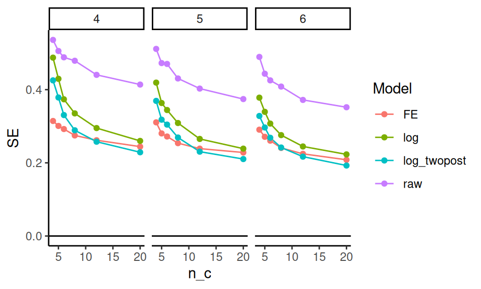
It looks like averaging two years for the outcome is helpful, and bumps up precision. The two way fixed effects model seems to react to the number of control units differently than the other estimators; it is way more precise when the number of controls is few, but the other estimators catch up. The “raw” estimator gives a baseline of no covariate adjustment; everything is substantially more precise than it. The covariates matter a lot.
20.4.3 Assessing power
We next look at power over our explored contexts, for the models that we find to be valid (i.e., not FE).
sres %>%
filter( model != "FE",tx != 1 ) %>%
ggplot( aes( n_c, pow, col=model )) +
facet_grid( . ~ tx + n_t, labeller = label_both ) +
geom_line() + geom_point() +
geom_hline( yintercept = 0, col="grey" ) +
geom_hline( yintercept = c( 0.10, 0.80 ), lty=2 ) +
theme_minimal()+ theme( legend.position="bottom",
legend.direction="horizontal",
legend.key.width=unit(1,"cm"),
panel.border = element_blank() ) +
labs( title="Power for various methods vs number of controls.",
y = "Power" )We mark 80% power with a dashed line. For a 25% reduction in discipline, nothing reaches desired levels of power. For 50% reduction, some designs do, but we need substantial numbers of control schools. Averaging two years of outcomes post-treatment seems important: the “twopost” methods have a distinct power bump. For a single year of outcome data, the log model seems our best bet.
20.4.4 Assessing Minimum Detectable Effects
Sometimes we want to know, given a design, what size effect we might be able to detect. The usual measure for this is the Minimum Detectable Effect (MDE), which is usually the size of the smallest effect we could detect with power 80%.
To calculate Minimal Detectable Effects (MDEs) for the log-scale estimators, we first average our SEs over our different designs, grouped by sample size, and then convert the SEs to MDEs by multiplying by 2.8. We then have to convert to our treatment scale by flipping the sign and exponentiating, to get out of the log scale.
sres2 = sres %>%
group_by( model, n_c, n_t ) %>%
summarise( SE = mean( SE ),
E_SE_hat = mean( E_SE_hat ) ) %>%
mutate( MDE = exp( - (1.64 + 0.8) * SE ) )
sres2 %>%
filter( !(model %in% c( "simple", "ratio", "ratio_twopost" ) ) ) %>%
ggplot( aes( n_c, MDE, col=model ) ) +
facet_wrap( ~ n_t, labeller = label_both ) +
geom_point() + geom_line() +
geom_hline( yintercept = 0.5 ) +
theme_minimal() +
scale_x_log10( breaks = unique( sres$n_c ) ) +
theme( legend.position="bottom",
legend.direction="horizontal", legend.key.width=unit(1,"cm"),
panel.border = element_blank() ) +
labs( x = "Number of control units", y = "MDE (proportion reduction of rate)",
caption = "A MDE of 0.6 means a 60% reduction (more than half) in discipline rates",
title = "MDE vs number of control units for various methods" )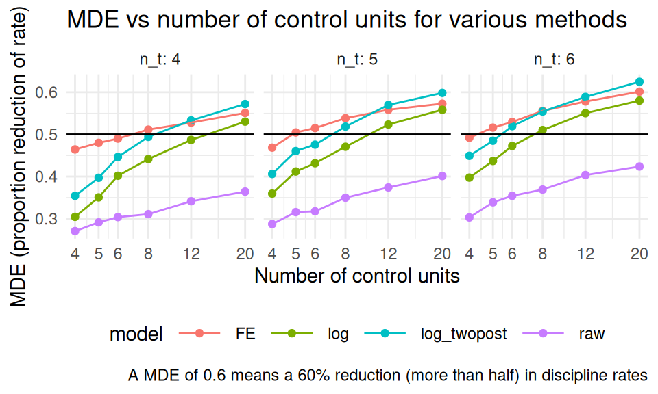
Corresponding with our findings regarding precision, above, the twopost estimator is the most sensitive, finding the smallest effects.
21 Simulation under the Potential Outcomes Framework
If we are in the business of evaluating how various methods such as matching or propensity score weighting work in practice, we would probably turn to the potential outcomes framework for our simulations. The potential outcomes framework is a framework typically used in the causal inference literature to make very explicit statements regarding the mechanics of causality and the associated estimands one might target when estimating causal effects. While we recommend reading, for a more thourough overview, either [CITE Raudenbush or Field Experiments textbook], we briefly outline this framework here to set out our notation.
Take a sample of experimental units, indexed by \(i\). For each unit, we can treat it or not. Denote treatment as \(Z_i = 1\) for treated or \(Z_i = 0\) for not treated. Now we imagine each unit has two potential outcomes being the outcome we would see if we treated it (\(Y_i(1)\)) or if we did not (\(Y_i(0)\)). Finally, our observed outcome is then \[ Y_i^{obs} = Z_i Y_i(1) + (1-Z_i)Y_i(0) .\] For a unit, the treatment effect is \(\tau_i = Y_i(1) - Y_i(0)\); it is how much our outcome changes if we treat vs. not treat. Frustratingly, for each unit we can only see one of its two potential outcomes, so we can never get an estimate of these individual \(\tau_i\). Under this view, causality is a missing data problem: if we only were able to impute the missing potential outcomes, we could have a dataset where we could calculate any estimands we wanted. E.g., the true average treatment effect for the sample \(\mathcal{S}\) would be:
\[ ATE_{\mathcal{S}} = \frac{1}{N} \sum_{i} Y_i(1) - Y_i( 0 ) . \] The average proportion increase, by contrast, would be
\[ API_{\mathcal{S}} = \frac{1}{N} \sum_{i} \frac{Y_i(1)}{Y_i(0)} \]
21.1 Finite vs. Superpopulation inference
Consider a sample of \(n\) units, \(\mathcal{S}\), along with their set of potential outcomes. We can talk about the true ATE of the sample, or, if we thought of the sample as being drawn from some larger population, we could talk about the true ATE of that larger population.
This is a tension that often arises in potential outcomes based simulations: if we are focused on \(ATE_{\mathcal{S}}\) then for each sample we generate, our estimand could be (maybe only slightly) different, depending on whether our sample has more or fewer units with high \(\tau_i\). If, on the other hand, we are focused on where the units came from (which is our data generating model), our estimand is a property of the DGP, and would be the same for each sample generated.
The catch is when we calculate our performance metrics, we now have two possible targets to pick from. Furthermore, if we are targeting the superpopulation ATE, then our error in estimation may be due in part to the representativeness of the sample, not the estimation or uncertainty due to the random assignment.
We will follow this theme throughout this chapter.
21.2 Data generation processes for potential outcomes
If we want to write a simulation using the potential outcomes framework, it is clear and transparent to first generate a complete set of potential outcomes, then generate a random assignment based on some assignment mechanism, and finally generate the observed outcomes as a function of assignment and original potential outcomes.
For example, we might say that our data generation process is as follows: First generate each unit \(i = 1, \ldots, n\), as \[ \begin{aligned} X_i &\sim exp( 1 ) - 1 \\ Y_i(0) &= \beta_0 + \beta_1 X_i + \epsilon_i \mbox{ with } \epsilon_i \sim N( 0, \sigma^2 ) \\ \tau_i &= \tau_0 + \tau_1 X_i + \alpha u_i \mbox{ with } u_i \sim t_{df} \\ Y_i(1) &= Y_i(0) + \tau_i \end{aligned} \] with \(exp(1)\) being the standard exponential distribution and \(t_{df}\) being a \(t\) distribution with \(df\) degrees of freedom. We subtract 1 from \(X_i\) to zero-center it (it is often convenient to have zero-centered covariates so we can then, e.g., interpret \(\tau_0\) as the true superpopulation ATE of our experiment).
The above model is saying that we first, for each unit, generate a covariate. We then generate our two potential outcomes. I.e., we are generating what the outcome would be for each unit if it were treated and if it were not treated. We are driving both the level and the treatment effect with \(X_i\), assuming \(\beta_1\) and \(\tau_1\) are non-zero.
One advantage of generating all the potential outcomes is we can then calculate the finite-sample estimands such as the true average treatment effect for the generated sample: we just take the average of \(Y_i(1) - Y_i(0)\) for our sample.
Here is some code to illustrate the first part of the data generating process (we leave treatment assignment to later):
gen_data <- function( n = 100,
R2 = 0.5,
beta_0 = 0, beta_1 = 1,
tau_0 = 1, tau_1 = 1,
alpha = 1, df = 3 ) {
stopifnot( R2 >= 0 && R2 < 1 )
X_i = rexp( n, rate = 1 ) - 1
beta_1 = sqrt( 1 - R2 )
sigma_e = sqrt( R2 )
Y0_i = beta_0 + beta_1 * X_i + rnorm( n, sd=sigma_e )
tau_i = tau_0 + tau_1 * X_i + alpha * rt( n, df = df )
Y1_i = Y0_i + tau_i
tibble( X = X_i, Y0 = Y0_i, Y1 = Y1_i )
}And now we see our estimand can change:
## [1] 0.6374925## [1] 0.5479788In reviewing our code, we know our superpopulation ATE should be tau, or 1 exactly.
If our estimate for d1 is 0.6 do we say that is close or far from the target?
From a finite sample performance approach, we nailed it.
From superpopulation, less so.
Also in looking at the above, there are a few details to call out:
- We can store the latent, intermediate quantities (both potential outcomes, in particular) so we can calculate the estimands of interest or learn about our data generating process. When we hand the data to an estimator, we would not provide this “secret” information.
- We are using a trick to index our DGP by an R2 value rather than coefficients on X so we can have a standardized control-side outcome (the expected variation of \(Y_i(0)\) will be 1). The treatment outcomes will have more variation due to the heterogeniety of the treatment impacts.
- If we were generating data with a constant treatment impact, then \(ATE_{\mathcal{S}} = ATE\) always; this is typical for many similations in the literature. That being said, treatment variation is what causes a lot of methods to fail and so having simulations that have this variation is usually important.
Once we have our schedule of potential outcomes, we would then generate the observed outcomes by assigning our (synthetic, randomly generated) \(n\) units to treatment or control. For example, say we wanted to simulate an observational context where treatment was a function of our covariate. We could model each unit as flipping a weighted coin with some probability that was a function of \(X_i\) as so:
\[ \begin{aligned} p_i &= logit^{-1}( \xi_0 + \xi_1 X_i ) \\ Z_i &= Bern( p_i ) \\ Y_i &= Z_i Y_i(1) + (1-Z_i) Y_i(0) \end{aligned} \]
Here is code for assigning our data to treatment and control:
assign_data <- function( dat,
xi_0 = -1, xi_1 = 1 ) {
n = nrow(dat)
dat = mutate( dat,
p = arm::invlogit( xi_0 + xi_1 * X ),
Z = rbinom( n, 1, prob=p ),
Yobs = ifelse( Z == 1, Y1, Y0 ) )
dat
}We can then add our assignment variable to our given data as so:
## # A tibble: 50 × 6
## X Y0 Y1 p Z Yobs
## <dbl> <dbl> <dbl> <dbl> <int> <dbl>
## 1 0.670 0.667 2.58 0.418 1 2.58
## 2 0.371 0.314 4.57 0.348 1 4.57
## 3 1.94 1.29 3.03 0.719 0 1.29
## 4 -0.244 0.119 -10.0 0.224 1 -10.0
## 5 0.00850 1.44 2.88 0.271 0 1.44
## 6 1.41 1.14 5.02 0.600 1 5.02
## 7 -0.864 0.461 0.802 0.134 1 0.802
## 8 -0.00533 -0.914 -1.17 0.268 0 -0.914
## 9 -0.907 -0.202 0.555 0.129 1 0.555
## 10 -0.363 -0.141 1.16 0.204 1 1.16
## # ℹ 40 more rowsNote how Yobs is, depending on Z, either Y0 or Y1.
Separating our our DGP and our random assignment underscores the potential outcomes framework adage of the data are what they are, and we the experimenters (or nature) is randomly assigning these whole units to various conditions and observing the consequences.
In general, we might instead put the p_i part of the model in our code generating the outcomes, if we wanted to view the chance of treatment assignment as inherent to the unit (which is what we usually expect in an observational context).
21.3 Finite sample performance measures
Let’s generate a single dataset with our DGP from above, and run a small experiment where we actually randomize units to treatment and control:
n = 100
set.seed(442423)
dat = gen_data(n, tau_1 = -1)
dat = mutate( dat,
Z = 0 + (sample( n ) <= n/2),
Yobs = ifelse( Z == 1, Y1, Y0 ) )
mod = lm( Yobs ~ Z, data=dat )
coef(mod)[["Z"]]## [1] 0.8914992We can compare this to the true finite-sample ATE:
## [1] 1.154018Our finite-population simulation would be:
rps <- rerun( 1000, {
dat = mutate( dat,
Z = 0 + (sample( n ) <= n/2),
Yobs = ifelse( Z == 1, Y1, Y0 ) )
mod = lm( Yobs ~ Z, data=dat )
tibble( ATE_hat = coef(mod)[["Z"]],
SE_hat = arm::se.coef(mod)[["Z"]] )
}) %>%
bind_rows()## Warning: `rerun()` was deprecated in purrr 1.0.0.
## ℹ Please use `map()` instead.
## # Previously
## rerun(1000, {
## dat = mutate(dat, Z = 0 + (sample(n) <= n / 2),
## Yobs = ifelse(Z == 1, Y1, Y0))
## mod = lm(Yobs ~ Z, data = dat)
## tibble(ATE_hat = coef(mod)[["Z"]], SE_hat =
## arm::se.coef(
## mod)[["Z"]])
## })
##
## # Now
## map(1:1000, ~ {
## dat = mutate(dat, Z = 0 + (sample(n) <= n / 2),
## Yobs = ifelse(Z == 1, Y1, Y0))
## mod = lm(Yobs ~ Z, data = dat)
## tibble(ATE_hat = coef(mod)[["Z"]], SE_hat =
## arm::se.coef(
## mod)[["Z"]])
## })
## This warning is displayed once every 8 hours.
## Call `lifecycle::last_lifecycle_warnings()` to
## see where this warning was generated.## # A tibble: 1 × 3
## EATE_hat SE ESE_hat
## <dbl> <dbl> <dbl>
## 1 1.16 0.248 0.307We are simulating on a single dataset. In particular, our set of potential outcomes is entirely fixed; the only source of randomness (and thus the randomness behind our SE) is the random assignment. Now this opens up some room for critique: what if our single dataset is non-standard?
Our super-population simulation would be, by contrast:
rps_sup <- rerun( 1000, {
dat = gen_data(n)
dat = mutate( dat,
Z = 0 + (sample( n ) <= n/2),
Yobs = ifelse( Z == 1, Y1, Y0 ) )
mod = lm( Yobs ~ Z, data=dat )
tibble( ATE_hat = coef(mod)[["Z"]],
SE_hat = arm::se.coef(mod)[["Z"]] )
}) %>%
bind_rows()## Warning: `rerun()` was deprecated in purrr 1.0.0.
## ℹ Please use `map()` instead.
## # Previously
## rerun(1000, {
## dat = gen_data(n)
## dat = mutate(dat, Z = 0 + (sample(n) <= n / 2),
## Yobs = ifelse(Z == 1, Y1, Y0))
## mod = lm(Yobs ~ Z, data = dat)
## tibble(ATE_hat = coef(mod)[["Z"]], SE_hat =
## arm::se.coef(
## mod)[["Z"]])
## })
##
## # Now
## map(1:1000, ~ {
## dat = gen_data(n)
## dat = mutate(dat, Z = 0 + (sample(n) <= n / 2),
## Yobs = ifelse(Z == 1, Y1, Y0))
## mod = lm(Yobs ~ Z, data = dat)
## tibble(ATE_hat = coef(mod)[["Z"]], SE_hat =
## arm::se.coef(
## mod)[["Z"]])
## })
## This warning is displayed once every 8 hours.
## Call `lifecycle::last_lifecycle_warnings()` to
## see where this warning was generated.## # A tibble: 1 × 3
## EATE_hat SE ESE_hat
## <dbl> <dbl> <dbl>
## 1 1.00 0.381 0.378First, note our superpopulation simulation is not biased for the superpopulation ATE. Also note the true SE is larger than our finite-sample simulation; this is because part of the uncertainty in our estimator is the uncertainty of whether our sample is representative of the superpopulation.
Finally, this clarifies that our linear regression estimator is estimating standard errors assuming a superpopulation model. The true finite sample standard error is less than the expected estimated error: from a finite sample perspective, our estimator is giving overly conservative uncertainty estimates. (This discrepancy is often called the correlation of potential outcomes problem.)
21.4 Nested finite simulation procedure
We just saw a difference between a specific, single, finite-sample dataset and a superpopulation. What if we wanted to know if this phenomenon was more general across a set of datasets? This question can be levied more broadly: if we run a simulation on a single dataset, this is even more narrow than running on a single scenario: if we compare methods and find one is superior to another for our single dataset, how do we know this is not an artifact of some specific characteristic of that data and not a general phenomonen at all?
One way forward is to run a nested simulation, where we generate a series of finite sample datasets, and then for each dataset run a small simulation. We then calculate the expected finite sample performance across the datasets. One could almost think of the datasets themselves as a “factor” in our multifactor experiment. This is what we did in [CITE estimands paper]
Borrowing from the simulation appendix of [CITE estimands paper], repeat \(R\) times:
Generate a dataset using a particular DGP. This data generation is the “sampling step” for a superpopulation (SP) framework. The DGP represents an infinite superpopulation. Each dataset includes, for each observation, the potential outcome under treatment or control.
Record the true finite-sample ATE, both person and site weighted.
Then, three times, do a finite simulation as follows:
- Randomize units to treatment and control.
- Calculate the corresponding observed outcomes.
- Analyze the results using the methods of interest, recording both the point estimate and estimated standard error for each.
Having only three trials will give a poor estimate of within-dataset variability for each dataset, but the average across the \(R\) datasets in a given scenario gives a reasonable estimate of expected variability across datasets of the type we would see given the scenario parameters.
To demonstrate we first make a mini-finite sample driver:
one_finite_run <- function( R0 = 3, n = 100, ... ) {
dat = gen_data( n = n, ... )
rps <- rerun( R0, {
dat = mutate( dat,
Z = 0 + (sample( n ) <= n/2),
Yobs = ifelse( Z == 1, Y1, Y0 ) )
mod = lm( Yobs ~ Z, data=dat )
tibble( ATE_hat = coef(mod)[["Z"]],
SE_hat = arm::se.coef(mod)[["Z"]] )
}) %>%
bind_rows()
rps$ATE = mean( dat$Y1 - dat$Y0 )
rps
}This driver also stores the finite sample ATE for future reference:
## Warning: `rerun()` was deprecated in purrr 1.0.0.
## ℹ Please use `map()` instead.
## # Previously
## rerun(3, {
## dat = mutate(dat, Z = 0 + (sample(n) <= n / 2),
## Yobs = ifelse(Z == 1, Y1, Y0))
## mod = lm(Yobs ~ Z, data = dat)
## tibble(ATE_hat = coef(mod)[["Z"]], SE_hat =
## arm::se.coef(
## mod)[["Z"]])
## })
##
## # Now
## map(1:3, ~ {
## dat = mutate(dat, Z = 0 + (sample(n) <= n / 2),
## Yobs = ifelse(Z == 1, Y1, Y0))
## mod = lm(Yobs ~ Z, data = dat)
## tibble(ATE_hat = coef(mod)[["Z"]], SE_hat =
## arm::se.coef(
## mod)[["Z"]])
## })
## This warning is displayed once every 8 hours.
## Call `lifecycle::last_lifecycle_warnings()` to
## see where this warning was generated.## # A tibble: 3 × 3
## ATE_hat SE_hat ATE
## <dbl> <dbl> <dbl>
## 1 0.348 0.421 0.768
## 2 1.32 0.472 0.768
## 3 1.17 0.549 0.768We then run a bunch of finite runs.
We use .id because we will need to separate out each finite run and analyze separately, and then aggregate.
Each finite run is a very noisy simulation for a fixed dataset. This means when we calculate performance measures we have to be careful to avoid bias in the calculations; in particular, we need to focus on estimating \(SE^2\) across the finite runs, not \(SE\), to avoid the bias caused by having a few observations with every estimate.
fruns <- runs %>% group_by( runID ) %>%
summarise( EATE_hat = mean( ATE_hat ),
SE2 = var( ATE_hat ),
ESE_hat = mean( SE_hat ),
.groups = "drop" )And then we aggregate our finite sample runs:
res <- fruns %>%
summarise( EEATE_hat = mean( EATE_hat ),
EESE_hat = sqrt( mean( ESE_hat^2 ) ),
ESE = sqrt( mean( SE2 ) ) ) %>%
mutate( calib = 100 * EESE_hat / ESE )
res## # A tibble: 1 × 4
## EEATE_hat EESE_hat ESE calib
## <dbl> <dbl> <dbl> <dbl>
## 1 0.996 0.380 0.331 115.We see our expected standard error estimate is, across the collection of finite sample scenarios all sharing a similar parent superpopulation DGP, 15% too large for the true expected finite-sample standard error.
We need to keep the squaring. If we look at the SEs themselves, we have further apparent bias due to our estimated ESE_hat being so unstable due to too few observations:
## [1] 0.2944556We can use our collection of mini-finite-sample runs to estimate superpopulation quantities as well. Given that the simulation datasets are i.i.d. draws, we can simply take expectations across all our simulations. The only concern is our estimates of MCSE will be off due to the clustering in our simulation runs.
Here we calculate superpopulation performance measures (both with the squared SE and without; we prefer the squared version):
runs %>%
summarise( EATE_hat = mean( ATE_hat ),
SE_true = sd( ATE_hat ),
SE_hat = mean( SE_hat ),
SE2_true = var( ATE_hat ),
SE2_hat = mean( SE_hat^2 ) ) %>%
pivot_longer( cols = c(SE_true:SE2_hat ),
names_to = c( "estimand", ".value" ),
names_sep ="_" ) %>%
mutate( inflate = 100 * hat / true )## # A tibble: 2 × 5
## EATE_hat estimand true hat inflate
## <dbl> <chr> <dbl> <dbl> <dbl>
## 1 0.996 SE 0.389 0.377 96.9
## 2 0.996 SE2 0.151 0.142 93.922 The Parametric bootstrap
An inference procedure very much connected to simulation studies is the parametric bootstrap. The parametric bootstrap is a bootstrap technique designed to obtain standard error estimates for an estimated parametric model. It can do better than the case-wise bootstrap in some circumstances, usually when there is need to avoid the discrete, chunky nature of a casewise bootstrap (which will only give values that exist in the original dataset).
For a parametric bootstrap, the core idea is to fit a given model to actual data, and then take the parameters we estimate from that model as the DGP parameters in a simulation study. The parametric bootstrap is a simulation study for a specific scenario, and our goal is to assess how variable (and, possibly, biased) our estimator is for this specific scenario. If the behavior of our estimator in our simulated scenario is similar to what it would be under repeated trials in the real world, then our bootstrap answers will be informative as to how well our original estimator performs in practice. This is the bootstrap principle, or analogy with an additional assumption that the real-world is effectively well specified as the parameteric model we are fitting.
In particular we do the following:
- generate data from a model with coefficients as estimated on the original data.
- repeatedly estimate our target quantity on a series of synthetic data sets, all generated from this model.
- examine this collection of estimates to assess the character of the estimates themselves, i.e. how much they vary, whether we are systematically estimating too high or too low, and so forth.
- The variance and bias of our estimates in our simulation is probably like the actual variance and bias of our original estimate (this is precisely the bootstrap analogy).
A key feature of the parametric bootstrap is it is not, generally, a multifactor simulation experiment. We fit our model to the data, and use our best estimate of the world, as given by the fit model, to generate our data. This means we generally want to simulate in contexts that are (mostly) pivotal, meaning the distribution of our test statistic or point estimate is relatively stable across different scenarios. In other words, we want the uncertainty of our estimator to not heavily depend on the exact parameter values we use in our simulation, so that if we are simulating with incorrect parameters our bootstrap analogy will still hold.
Often, to achieve a reasonable claim of being pivotal, we will focus on standardized statistics, such as the \(t\)-statistic of
\[ t = \frac{est}{\widehat{SE}} \] It is more common for the distribution of a standardized test statistic to have a canonical distribution across scenarios than an absolute estimate.
22.1 Air conditioners: a stolen case study
Following the case study presented in [CITE bootstrap book], consider some failure times of air conditioning units:
We are interested in the log of the average failure time:
n = length(dat)
y.bar = mean(dat)
theta.hat = log( y.bar )
c( n = n, y.bar = y.bar, theta.hat = theta.hat )## n y.bar theta.hat
## 12.000000 108.083333 4.682903We are interested in this because we are modeling the failure time of the air conditioners with an exponential distribution. This means we will generate new failure times with an exponential distribution:
reps = replicate( 10000, {
smp = rexp(n, 1/y.bar)
log( mean( smp ) )
})
res_par = tibble(
bias.hat = mean( reps ) - theta.hat,
var.hat = var( reps ),
CIlog_low = theta.hat + bias.hat - sqrt(var.hat) * qnorm(0.975),
CIlog_high = theta.hat + bias.hat - sqrt(var.hat) * qnorm(0.025),
CI_low = exp( CIlog_low ),
CI_high = exp( CIlog_high ) )
res_par## # A tibble: 1 × 6
## bias.hat var.hat CIlog_low CIlog_high CI_low
## <dbl> <dbl> <dbl> <dbl> <dbl>
## 1 -0.0420 0.0856 4.07 5.21 58.4
## # ℹ 1 more variable: CI_high <dbl>Note how we are, as usual, in our standard simulation framework of repeatidly (1) generating data and (2) analyzing the simulated data. Nothing is changed.
The nonparametric, or case-wise, bootstrap (this is what people normally mean when they say bootstrap) would look like this:
reps = replicate( 10000, {
smp = sample( dat, replace=TRUE )
log( mean( smp ) )
})
res_np = tibble(
bias.hat = mean( reps ) - theta.hat,
var.hat = var( reps ),
CIlog_low = theta.hat + bias.hat - sqrt(var.hat) * qnorm(0.975),
CIlog_high = theta.hat + bias.hat - sqrt(var.hat) * qnorm(0.025),
CI_low = exp( CIlog_low ),
CI_high = exp( CIlog_high ) )
bind_rows( parametric = res_par,
casewise = res_np, .id = "method") %>%
mutate( length = CI_high - CI_low )## # A tibble: 2 × 8
## method bias.hat var.hat CIlog_low CIlog_high
## <chr> <dbl> <dbl> <dbl> <dbl>
## 1 parametric -0.0420 0.0856 4.07 5.21
## 2 casewise -0.0651 0.132 3.90 5.33
## # ℹ 3 more variables: CI_low <dbl>,
## # CI_high <dbl>, length <dbl>This is also a simulation: our data generating process is a bit more vague, however, as we are just resampling the data.
This means our estimands are not as clearly specified.
For example, in our parameteric approach, our target parameter is known to be true.
In the case-wise, the connection between our DGP and the parameter theta.hat is less explicit.
Overall, in this case, our parametric bootstrap can model the tail behavior of an exponential better than case-wise. Especially considering the small number of observations, it is going to be a more faithful representation of what we are doing–provided our model is well specified for the real world distribution.
23 Coding tidbits
This chapter is not specifically about simulation, but it does have a few tips and tricks regarding coding that are worth attending to.
23.1 How to repeat yourself
At the heart of simulation is replication: we want to do the same task over and over. In this book we have showcased a variety of tools to replicate a random process. In this section we give a formal presentation of these tools.
23.1.1 Using replicate()
The replicate( n, expr, simplify ) method is a base-R function, which takes two arguments: a number n and an expression expr to run repeatedly. You can set simplify = FALSE to get the output of the function as a list, and if you set simplify = TRUE then R will try to simplify your results into an array.
For simple tasks where your expression gives you a single number, replicate will produce a vector of numbers:
## [1] 0.6666667 1.0000000 0.6666667 1.0000000
## [5] 0.6666667If you do not simplify, you then will need to massage your results:
one_run <- function() {
dd = rpois( 3, lambda = 1 )
tibble( mean = mean( dd ), sd = sd( dd ) )
}
rps <- replicate( 2, one_run(), simplify = FALSE )
rps## [[1]]
## # A tibble: 1 × 2
## mean sd
## <dbl> <dbl>
## 1 1.67 1.53
##
## [[2]]
## # A tibble: 1 × 2
## mean sd
## <dbl> <dbl>
## 1 1.33 1.15In particular, you will probably stack all your tibbles to make one large dataset:
## # A tibble: 2 × 2
## mean sd
## <dbl> <dbl>
## 1 1.67 1.53
## 2 1.33 1.15Note that you give replicate a full piece of code that would run on its own. You can even give a whole block of code in curly braces. This is exactly the same code as before:
rps <- replicate( 2, {
dd = rpois( 3, lambda = 1 )
tibble( mean = mean( dd ), sd = sd( dd ) )
}, simplify = FALSE ) %>%
bind_rows()The replicate() method is good for simple tasks, but for more general use, you will probably want to use map().
23.1.2 Using map()
The tidyverse way of repeating oneself is the map() method. The nice thing about map() is you map over a list of values, and thus can call a function repeatedly, but with a shifting set of inputs.
one_run_v2 <- function( N ) {
dd = rpois( N, lambda = 1 )
tibble( mean = mean( dd ), sd = sd( dd ) )
}
n_list = c(2, 5)
rps <- map( n_list, one_run_v2 )
rps## [[1]]
## # A tibble: 1 × 2
## mean sd
## <dbl> <dbl>
## 1 0.5 0.707
##
## [[2]]
## # A tibble: 1 × 2
## mean sd
## <dbl> <dbl>
## 1 0.8 0.837You again would want to stack your results:
## # A tibble: 2 × 2
## mean sd
## <dbl> <dbl>
## 1 0.5 0.707
## 2 0.8 0.837We have a small issue here, however, which is we lost what we gave map() for each call.
If we know we only get one row back from each call, we can add the column directly:
A better approach is to name your list of input parameters, and then your map function can add those names for you as a new column when you stack:
## # A tibble: 2 × 3
## n mean sd
## <chr> <dbl> <dbl>
## 1 2 2 0
## 2 5 1.4 1.14An advantage here is if you are returning multiple rows (e.g., one row for each estimator tested in a more complex simulation), all the rows will get named correctly and automatically.
In older tidyverse worlds, you will see methods such as map_dbl() or map_dfr(). These will automatically massage your output into the target type. map_dfr() will automatically bind rows, and map_dbl() will try to simplify the output into a list of doubles. Modern tidyverse no longer likes this, which we find somewhat sad.
To read more about map(), check out out Section 21.5 of R for Data Science (1st edition), which provides a more thorough introduction to mapping.
23.1.3 map with no inputs
If you do not have parameters, but still want to use map(), you can. E.g.,
## # A tibble: 3 × 2
## mean sd
## <dbl> <dbl>
## 1 1 1
## 2 0.667 0.577
## 3 0 0The weird “(.)” is a shorthand for a function that takes one argument and then calls one_run() with no arguments. We are using the 1:3 notation to just make a list of the right length (3 replicates, in this case) to map over. A lot of fuss! Just use replicate()
To make all of this more clear, consider passing arguments that you manipulate on the fly:
## # A tibble: 2 × 2
## mean sd
## <dbl> <dbl>
## 1 1 1.41
## 2 1.16 1.11Anonymous functions, as these are called, can be useful to connect your pieces of simulation together.
23.1.4 Other approaches for repetition
In the past, there was a tidyverse method called rerun(), but it is currently out of favor.
Originally, rerun() did exactly that: you gave it a number and a block of code, and it would rerun the block of code that many times, giving you the results as a list.
rerun() and replicate() are near equivalents.
As we saw, replicate() does what its name suggests—it replicates the result of an expression a specified number of times. Setting simplify = FALSE returns the output as a list (just like rerun().
23.2 Default arguments for functions
To write functions that are both easy to use and configurable, we find it helpful to set default arguments. For example,
## [1] 1020## [1] 520## [1] 1005## [1] 105We can still call my_function() when we don’t know what the arguments are, but then when we know more about the function, we can specify things of interest.
Lots of R commands work exactly this way, and for good reason.
Especially for code to generate random datasets, default arguments can be a lifesaver as you can then call the method before you know exactly what everything means.
For example, consider the blkvar package that has some code to generate blocked randomized datasets.
We might locate a promising method, and type it in:
## Error in generate_blocked_data(): argument "n_k" is missing, with no defaultThat didn’t work, but let’s provide some block sizes and see what happens:
## B Y0 Y1
## 1 B1 0.1651598 6.371708
## 2 B1 -0.7767558 5.613676
## 3 B1 -1.4736741 4.856552
## 4 B2 -1.0636928 4.448634
## 5 B2 0.1533518 4.334540Nice! We see that we have a block ID and the control and treatment potential outcomes. We also don’t see a random assignment variable, so that tells us we probably need some other methods as well. But we can play with this as it stands right away.
Next we can see that there are many things we might tune:
## function (n_k, sigma_alpha = 1, sigma_beta = 0, beta = 5, sigma_0 = 1,
## sigma_1 = 1, corr = 0.5, exact = FALSE)
## NULLThe documentation will tell us more, but if we just need some sample data, we can quickly assess our method before having to do much reading and understanding. Only once we have identified what we need do we have to turn to the documentation itself.
23.3 The source command and keeping things organized
Simulations have two general phases: generate your results and analyze your results. The ending of the first phase should be to save the generated results. The beginning of the second phase should then be to load the results from a file and analyze them. These phases can be in a separate ‘.R’ files. Dividing your simulations in this way allows for easily changing how one analyzes an experiment without re-running the entire thing.
This is the simplest version of a general principle of a larger project: put code for different purposes in different files.
For example, at the minimum, for a complex multifactor simulation, you will likely have three general collections of code, not including the code to run the multifactor simulation itself:
- Code for generating data
- Code for analyzing data
- Code for running a single simulation scenario
If each of these pieces is large and complex, you might consider putting them in three different .R files.
Then, in your primary simulation driver, you could source these files.
E.g.,
source( "pack_data_generators.R" )
source( "pack_estimators.R" )
source( "pack_simulation_support.R" )The source() command essentially “cuts and pastes” the contents of the given file into your R work session.
If the file has code to run, it will run it.
If the file has a list of methods, those methods will now be available for use.
Alternatively, pack_simulation_support.R could, inside it, source the other two files.
You would then only source the single simulation support file in your primay file.
One reason for putting code in individual files is you can then have testing code in each of your files (in False blocks, like described above), testing each of your components. Then, when you are not focused on that component, you don’t have to look at that testing code.
Another good reason for this type of modular organizing is you can then have a variety of data generators, forming a library of options. You can then easily create different simulations that use different pieces, in a larger project.
For example, in one recent simulation project on estimators for an Instrumental Variable analysis, we had several different data generators for generating different types of compliance patterns (IVs are often used to handle noncompliance in randomized experiments). Our data generation code file then had several methods:
> ls()
[1] "describe_sim_data" "make_dat" "make.dat.1side"
[4] "make.dat.1side.old" "make.dat.orig" "make.dat.simple"
[7] "make.dat.tuned" "rand.exp" "summarize_sim_data"The describe and summarize methods printed various statistics about a sample dataset; these are used to debug and understand how the generated data looks. We also had a variety of different DGP methods because we had different versions that came up as we were trying to chase down errors in our estimators and understand strange behavior.
Putting the estimators in a different file also had a nice additional purpose: we also had an applied data example in our work, and we could simply source that file and use those estimators on our actual data. This ensured our simulation and applied analysis were perfectly aligned in terms of the estimators we were using. Also, as we debugged our estimators and tweaked them, we immediately could re-run our applied analysis to update those results with minimal effort.
Modular programming is key.
23.4 Testing and debugging code in your scripts
If you have an extended script with a list of functions, you might have a lot of code that runs each function in turn, so you can easily remind yourself of what it does, or what the output looks like. One way to keep this code around, but not have it run all the time when you run your script, is to put the code inside a “FALSE block,” that might look like so:
if ( FALSE ) {
res <- my_function( 10, 20, 30 )
res
# Some notes as to what I want to see.
sd( res )
# This should be around 20
}You can then, when looking at the script, paste the code inside the block into the console when you want to run it. If you source the script, however, it will not run at all, and thus your code will source faster and not print out any extraneous output.
23.5 Debugging with browser
Consider the following code taken from a simulation:
The browser() command stops your code and puts you in an interactive console where you can look at different objects and see what is happening.
Having it triggered when something bad happens (in this case when a set of estimates has an unexpected NA) can help untangle what is driving a rare event.
23.6 Protecting your functions with “stop”
When writing functions, especially those that take a lot of parameters, it is often wise to include stopifnot() statements at the top to verify the function is getting what it expects.
These are sometimes called “assert statements” and are a tool for making errors show up as early as possible.
For example, look at this (fake) example of generating data with different means and variances
make_groups <- function( means, sds ) {
Y = rnorm( length(means), mean=means, sd = sds )
round( Y )
}If we call it, but provide different lengths for our means and variances, nothing happens, because R simply recycles the standard deviation parameter:
## [1] 100 206 8034 398If this function was used in our data generating code, we would see the warnings but might not know exactly what they were. We can instead protect our function by putting an assert statements in our function like this:
make_groups <- function( means, sds ) {
stopifnot( length(means) == length(sds) )
Y = rnorm( length(means), mean=means, sd = sds )
round( Y )
}This ensures your code is getting called as you intended. What is nasty about this possible error is nothing is telling you something is wrong! You could build an entire simulation on this, not realizing that your fourth group has the variance of your first, and get results that make no sense to you. You could even publish something based on a finding that depends on this error, which would eventually be quite embarrasing.
These statements can also serve as a sort of documentation as to what you expect. Consider, for example:
make_xy <- function( N, mu_x, mu_y, rho ) {
stopifnot( -1 <= rho && rho <= 1 )
X = mu_x + rnorm( N )
Y = mu_y + rho * X + sqrt(1-rho^2)*rnorm(N)
tibble(X = X, Y=Y)
}Here we see that rho should be between -1 and 1 quite clearly. A good reminder of what the parameter is for.
This also protects you from inadvetently misremembering the order of your parameters when you call the function (although it is good practice to name your parameters as you pass). Consider:
## Error in make_xy(10, 0.75, 2, 3): -1 <= rho && rho <= 1 is not TRUE24 Further readings and resources
We close with a list of things of interest we have discovered while writing this text.
Morris, White, & Crowther (2019). Using simulation studies to evaluate statistical methods.
High-level simulation design considerations.
Details about performance criteria calculations.
Stata-centric.
SimDesign R package (Chalmers, 2019)
Tools for building generic simulation workflows.
Chalmers & Adkin (2019). Writing effective and reliable Monte Carlo simulations with the SimDesign package.
DeclareDesign (Blair, Cooper, Coppock, & Humphreys)
Specialized suite of R packages for simulating research designs.
Design philosophy is very similar to “tidy” simulation approach.
SimHelpers R package (Joshi & Pustejovsky, 2020)
Helper functions for calculating performance criteria.
Includes Monte Carlo standard errors.
A comment from James: I recall attending seminars in the statistics department during graduate school, where guest speakers usually presented both some theory and some simulation results. A few years into my graduate studies, I realized that the simulation part of the presentation could nearly always be replaced with a single slide that said “we did some simulations and showed that our new method works better than old methods under conditions that we have cleverly selected to be favorable for our approach.” I hope that my own work is not as boring or predictable as my memory of these seminars.↩︎
To learn more about how R determines which values to use when executing a function, see Section 6.4 of Advance R.↩︎
The pipe is a relatively recent addition to R’s basic syntax. Prior to its inclusion in base R, the
magrittrpackage provided—and still provides—a pipe symbol%>%that works similarly but has some additional syntactic nuances. We use base R’s|>because it is always available, even without loading any additional packages. To learn more about the nuanced%>%pipe and similar operators, see the magrittr package.↩︎Chapter 3.4 of R for Data Science (2nd edition) provides more discussion and examples of how to use
|>. Chapter 18 of R for Data Science (1st edition) provides more discussion and examples of how to usemagrittr’s%>%.↩︎Alternately, readers familiar with the
*apply()family of functions from Base R might prefer to uselapply()orsapply(), which do essentially the same thing aspurrr::map_dbl().↩︎You can also check out Section 21.5 of R for Data Science (1st edition), which provides an introduction to mapping.↩︎
Wickham (2014) provides a broader introduction to the concept of tidy data in the context of data-analysis tasks.↩︎
In the example from Chapter @ref(t-test-simulation), we used the
replicate()function from base R to repeat the process of generating and analyzing data. This function is a fine alternative to therepeat_and_stack()approach demonstrated in the skeleton. The only drawback is that it requires some further work to combine the results across replications. Here is a different version of the skeleton, which usesreplicate()instead ofrepeat_and_stack():results_list <- replicate(n = R, expr = { dat <- generate_data( params ) one_result <- analyze(dat) return(one_result) }, simplify = FALSE) results <- purrr::list_rbind(results_list)This version of the skeleton does not create a
one_run()helper function, but instead puts the code from the body ofone_run()directly into theexprargument ofreplicate(). To learn about other ways of repeatedly evaluating the simulation process, see Appendix @ref(repeating-oneself).↩︎If you would prefer the output as a list rather than a stacked dataset, set
repeat_and_stack()’s optional argumentstack = FALSE.↩︎This latter piece makes Brown and Forsythe’s study a prototypical example of a statistical methodology paper: find some problem that current procedures do not perfectly solve, invent something to do a better job, and then do simulations and/or math to build a case that the new procedure is better.↩︎
An alternative definition is based on the pooled standard deviation, but this is usually a bad choice if one suspects treatment variation. More treatment variation should not reduce the effect size for the same absolute average impact.↩︎